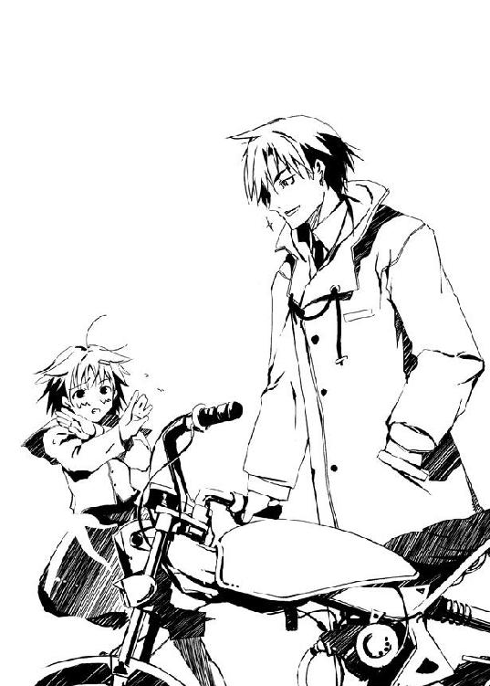
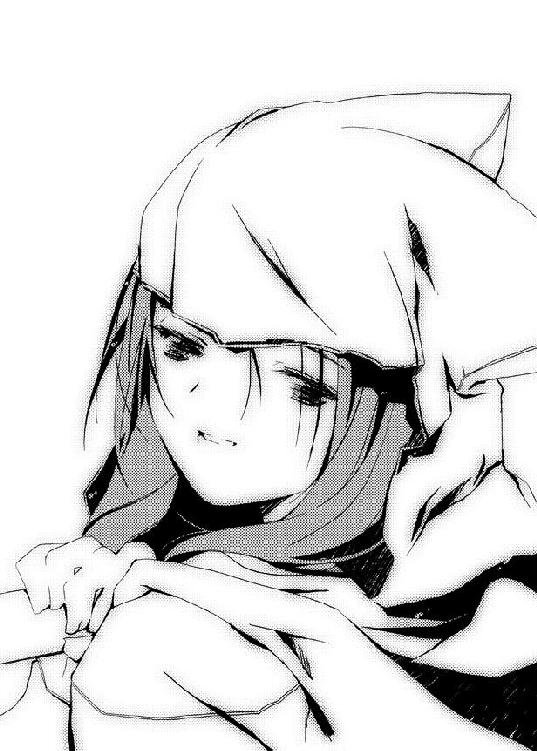

| ムシウタ 06.夢導く旅人 | |
| 岩井恭平 | |
| KADOKAWA / 角川書店 (2012) | |

ムシウタ
06.夢導く旅人
岩井恭平
角川スニーカー文庫
本作品の全部または一部を無断で複製、転載、配信、送信したり、ホームページ上に転載することを禁止します。また、本作品の内容を無断で改変、改ざん等を行うことも禁止します。
本作品購入時にご承諾いただいた規約により、有償・無償にかかわらず本作品を第三者に譲渡することはできません。
本作品を示すサムネイルなどのイメージ画像は、再ダウンロード時に予告なく変更される場合があります。
本作品は縦書きでレイアウトされています。
また、ご覧になるリーディングシステムにより、表示の差が認められることがあります。
ムシウタ
０６．夢導く旅人
ＣＯＮＴＥＮＴＳ
口絵・本文イラスト／るろお
プロローグ 0.00 The others
潮の香りに満ちた国道は、すれ違う自動車の数が少なかった。
時速60キロの勢いで吹きつける空気は、早朝だけに冷たい。
だが、心地好い。
海沿いの道を走りながら、二月の風をめいっぱいに肺に送り込む。
「むふー」
ベスパに乗って海沿いの道を疾走しながら、少女は満足げに息を吐いた。カリッ、と口に含んだ棒つきのアメ玉が音を立てる。
少女の吐息が白い雲となって、一瞬で後方へ消えていく。
アナログ式のガソリンメータは、ほぼ空の状態を示していた。もうしばらくの間、ガソリンスタンドの姿を見つけていない。
アクセル全開で走るベスパが、あっという間に案内標識の横を通り過ぎた。
「ホラント市、というのか。変わった名前だねー」
アメ玉を口の中で転がしながら、独り言を呟く。
前方に大きな都市が見えた。湾岸に面した都市には、背の高いビルや何かの複合施設らしいドーム状の建築物も見える。
ホラント市。案内標識にそう記されていたからには、都市の正式名称なのだろう。これまで日本中を渡り歩いた少女にとっても、カタカナ表記の街は初めてだった。
ともあれ、給油のメドがついたのは助かった。少女は無意味に蛇行運転しながら、ホラント市に向かって突き進む。
──この世界は、とても綺麗だ。
右手に一望できる広大な海も、前方にある人工物の密集地にも、生命の息吹を感じる。
人間も魚も、有り余るほどの生のエネルギーを放っている。それらは集まり、うねり、力強い波動となって少女を引きつける。少女は彼らの力に抗えない。
力の波動を放っているのは、形ある生命だけではない。
それを感じることができるのは、少女を含めて数少ない者たちだけだ。だからこそ少女は、旅を続けることを使命づけられている。
「ふふん、良い街だねー」
気楽な独り言を呟きながら、少女はホラント市へと入った。
潮の香りが、排ガスに穢された空気へと変わった。風を切る音が、人々のざわめきや自動車のエンジン音にとって代わる。
力強い街だ。人々の漲るパワーを肌で感じる。
すぐにガソリンスタンドを見つけた。減速して給油口の横にベスパをつける。
「これで入れられるだけ、入れてくれたまえー」
近づいてきたアルバイトらしき若い店員に向かって、数枚の硬貨を差し出す。手持ちの財産すべてだ。タンクの半分くらいは満たせるだろう。
バイト店員が一瞬、きょとんとした顔で立ちつくした。
さて、彼が驚いている理由は何だろうか──。
一、たかだか原付バイクのガソリンを満タンにできない、少女の懐事情に同情した。
二、少女の独特な口調に戸惑った。
三、ハーフタイプのヘルメットやゴーグルは運転者の義務であるとして、棒つきのアメ玉をかじりながら運転するのは運転マナーとしてどうかと思った。また背中にスポーツ競技の一つ、アイスホッケーのスティックを背負っているのもあぶなっかしい。
四、他のどれにも増して──〝黄色いカッパ〟を少女が着ている理由が不可解だった。ちなみに今朝の天気は、抜けるような晴天だ。
──以上、四択だ。
バイト店員はじろじろと少女の姿を見たあと、確かめるように空を仰いだ。もちろん晴れ渡った空から雨が降っていることもない。
解答。四択のすべて。
思い出したように作業を始めたバイト店員に、なにげなく問いかける。
「ここは本当にカタカナでホラント市と書くの？ めずらしい名前だねー」
少女の口調はやけに馴れ馴れしく、偉そうだ。本人は実際に偉いつもりだが、年寄り相手には反感を買ったり、逆に頭をなでられることもある。童顔と小柄な身体つき、それに高い声のせいで十七歳という実年齢よりも若く見えるらしい。
バイト店員もやはり、必要以上に微笑ましそうに笑った。特殊な状況で相手を油断させるのならばともかく、日常生活で子供扱いされるのは非常に気に入らない。
「あー、この辺りの地域を合併した際に、それまで漢字だったのをカタカナにしたんですよ。だからもともと、ホラントっていう名前は変わってません。遠くからこの街へ？」
入れるガソリンが少ないと、かえって調整が難しそうだ。メータと給油機を見比べていたバイト店員の目が、ちらりとベスパの後部を見た。そこには丸めた寝袋が下げてある。
「うん、色々な場所を回ってるのだよ。一人旅ってやつだねー」
「旅？ このご時世に？」
「おかしいかな？」
「......あー、いえ、どうかな」
おかしいのだろう。カッパ姿でホッケースティックを背負った若い女の子が原付を乗り回して旅をしているなど、他人に話すにしても信じてはくれまい。
「ボクのことも含め、キミの知らない世界はいくらでもあるのだよ。おぼえておきたまえー」
ゴーグルの位置を直しながら言う少女に対し、「はあ」と苦笑混じりに答える店員。ただの冗談と思ったか、少女を危険な薬でもキメている変人と思ったか──どちらにしろ少女本人にとっては、とっくに慣れてしまった反応だ。
「さて、早くも〝感じる〟なー。でもこれはちょっと──辻褄が合わないね」
「は？」
「独り言だよ。ありがとう。今日も一日、がんばって働いてくれたまえー」
礼を言い、ベスパを走らせる少女。
ガソリンスタンドを出て国道に戻るなり、アクセルを全開にして街を疾走する。感じ取った波動を頼りに、ある方向へ向かって突き進んでいく。
少女を引き寄せる、人間や他の動物以外の生命の反応。
その正体を──。
「ふむー、やっぱりどう見ても〝生まれたて〟だよね。おまけに暴走している」
〝虫〟という。
人々の〝こうありたい〟〝こうなりたい〟といった願望、〝夢〟を喰らうために人間に寄生し、代わりに超常の力を与える異形の存在。
ベスパを降りてヘルメットを脱ぐ少女の前に、一人の少年が佇んでいた。
一見すると、どこにでもいる若い学生だ。だが泡のような粘着質の白い何かが、青ざめた顔の少年の身体に密着している。荒い息をつき平常心を失っていることが分かる少年の手からは、赤い鮮血が滴となって垂れ落ちている。
──〝虫〟は思春期の少年少女に取り憑くとされている。取り憑かれた者は虫憑きと呼ばれ、ゆっくりとその夢を喰われていく。
〝虫〟の存在が囁かれはじめておよそ十年。政府の公式発表では〝実在しない〟とされているが、噂や目撃情報は増えていく一方だった。現在では虫憑きに対する恐怖や差別の感情は、すでに無視できない規模にまで広がっている。
「〝泥〟を媒体にしているようだね。アスファルトからその成分を補充しているのか。しかも外傷が見えないところを見ると、その血はキミ自身のものじゃないね。〝虫〟の制御ができず動く者を破壊しまくるという症状はありがちだけれど、問題はそんなことよりも──」
少女は口の中のアメ玉を転がしながら、ぶつぶつと呟く。そんな彼女に向かって、少年が奇声を上げながら地面に両手をついた。地面が盛り上がり、白い塊が噴き出す。
襲いかかる無数の白い針を見ながら、少女は無造作に背中からスティックを抜いた。
「問題はキミが〝生まれたて〟で、しかも特殊型ということだよ」
──緊張感のない少女の声は、虫憑きの少年の背後から響いた。
一秒にも満たない、ほんの一瞬。
刹那ともいうべき短時間で、白い泥の塊が真っ二つに切り裂かれていた。
十メートル以上もの距離を瞬時に移動した少女の背後で、虫憑きの少年がくずおれる。
「つい最近、ボクの友人から、キミのような同化型を生む存在を倒したという話を聞いたんだけれど......どういうことかな、これは。彼が噓をつくとも思えないんだけど。二度と生まれるはずのない特殊型の虫憑きが存在する......これは実に辻褄が合わないことだよー」
黄色いカッパをはためかせた少女の手や足が、紫色の放電現象を起こしていた。紫電を纏った姿で、少女はスティックを背中に戻す。
「あとこれは、親切心だけどね。まばたきの間隔を一定にしちゃあダメだよ。そんなまばたきの一瞬でさえ、勝敗を決しかねない圧倒的な力を持っているヤツもいるんだから。──まあ、しかるべき機関に収容されたあとは、努力したまえ」
しかるべき機関。そう、この国には虫憑きを〝なかったもの〟として捕獲、収容という名の隔離、そして場合によっては訓練して指揮する存在がある。少女が所属している組織がそうだ。
ゴーグルを額まで持ち上げ、空を見上げる。
偶然か、はたまた運命か。
少女がたどり着いたこの地には、他にも強力な〝虫〟の波動を感じられた。謎の解明だけでなく、少女の本業に専念するためにも、しばらくこの街にとどまることになりそうだ。
「キミ、不合格」
アメ玉をかじりながら、倒れた虫憑きの少年をピッと指さす。
獅子堂戌子の〝スカウト〟の旅。
地名、ホラント市。
──開始。
1.00 鯱人 Part. 1
「こんな関係、もう耐えられないの」
帆蘭戸学院高等学校の校舎は、レンガ造りの17世紀オランダ式建築を再現した造りになっていた。
校舎は尖った屋根のグレーと壁のブラウンのコントラストが綺麗で、大きな体育館も三角屋根の独特な造形をしている。
校舎と体育館をつなぐ渡り廊下には壁がなく、中庭とグラウンドに挟まれていた。
春になると色とりどりのチューリップが並ぶ中庭の花壇も、今の季節ではただのレンガで囲まれた長方形にしか見えない。グラウンドは運動部が部活動にいそしんでいるのが見えた。
壁のない渡り廊下に、二月の冷たい風が吹いた。
「もう、終わりにしてほしいの」
風に長い髪をなびかせ、制服姿の女子生徒が言った。もう耐えられないと言った彼女の表情は、ずいぶんと思い詰めているようだった。
「......」
一方、女子生徒と向かい合っている彼は、しばし考える時間を必要とした。
えーと、これは──。
思わず視線だけで周囲を見回す。
いったい、なんのドラマの撮影なんだろ......？
一組の男女。とってつけたような台詞。夕日に照らされた放課後の学校。
テレビ画面の中の青春ドキュメントか昼の恋愛ドラマには、絶好のシチュエーションだ。
だが二人の周囲にはカメラもなければ、もちろん監督もいない。それ以前に彼は俳優でもないし、目の前の女子もそうだ。
もう、終わりにしてほしいの──。
眼前の少女が彼に向かってそう言ったからには、何らかの理由があるはずだ。二人の間で何かが始まっていて、彼女はそれを終わらせたいらしい。
思い出そうと、必死に記憶をさぐる。
だが思い当たらない。
そのため、素直に問いかけた。
「......えーと、何を？」
乾いた音が、放課後の帆蘭戸高校に響いた。
ひっぱたかれたと分かったのは、彼の視界が女子生徒ではなく校舎の時計を見ていたからだ。叩かれた勢いで、首の角度が九十度ほど回転したらしい。
立ちつくす彼に向かって、少女が何かを言っていた。
彼が自分に対し、思わせぶりな態度をとり続けたこと。それなのに他の女子にも愛嬌を振りまくことについての不満。先週のヴァレンタイン・デイに自分以外からもチョコを受け取ったことや、ここ数日はまったく声をかけてくれないのはどうしてか。自分たちは付き合っていたはずなのではないか、等々。
「なんとか言ってよ、鯱人クン！」
女子生徒が、理不尽きわまりない台詞を叫んだ。いきなり殴られ、さらに反論する間も与えてもらえなかった彼の立場も分かってほしい。
ドラマの見過ぎだ、とは思ったが、口にできるはずもない。
帆蘭戸高校普通科二年生、塩原鯱人は、しかしまったく別のことを考えていた。
ああ、ヤバい──。
頰を刺激する痺れが、鯱人を奇妙な感覚へと誘っていた。
違和感は感じる。それは間違いない。
だが、それが自分のものとは思えなかった。まるで自分の身体から別次元の世界に〝痛み〟だけが分離しているかのような、なんともいえない感覚だ。
しかも、別次元に飛んだ〝痛み〟が、彼自身まで〝そちら〟の世界へ引っ張っていくかのような感覚。このまま抗わずに身を委ねてしまったら自分はどうなってしまうんだろう、という疑問をおぼえつつ──。
「......いや、えーと」
苦笑した。
「誤解だよ、誤解。これ以上ないくらいの──ああもう、びっくりしたな。えーと、あのね、オレが思わせぶりな態度をとってたって思われてるのなら、オレは誰に対しても同じような態度しかとってないし。いや、八方美人って言われたらそれまでなんだけど」
慌てて弁解をする。自分でも何を言おうとしているのか、よく分からなかった。
突然の先制攻撃のせいで、自分もちょっとばかり混乱してしまっていた。ガラにもない──別次元がどうとか、わけの分からない思考に意識が飛んでしまったのもそのせいだ。
どうやら、ちょっと思いこみの激しい女子生徒の早とちりのようだ。そのことを理解すれば、なんということもない。
話せば分かる、ってよく言うけど......いきなり不意打ちを食らった場合は、どうすりゃいいんだろう？
疑問を抱いたが、そんなことを考えている場合ではなさそうだ。殴られた後でも話せば分かるというのならば、いくらでも話してみせる。
「チョコのこともさ、他にもけっこう──あ、嫌味じゃなくて、ほら、オレって女の子の友達からたくさん義理チョコをもらったからさ。......えーと、君のチョコもそうと思って勘違いしてたんだと思う。特に何も言われなかったしさ」
必死に記憶を掘り起こし、答える。途中で言葉が詰まったのは、実は目の前の少女の名前をど忘れしていたせいだが、わざわざそれを口にするほどバカではない。
名前もすぐに思い出せないような相手に、いきなり「終わりにしよう」と言われて殴られたのだ。一撃目が刃物ではなかった幸運に、心から感謝する。
「誰にも同じ......？」
我に返り、自分の思い違いに気づいたのだろう。女子生徒がハッとしてうつむいた。
状況が落ち着いてようやく、少女が自分と同じクラスの生徒で、最近よく言葉を交わし合うようになった相手だと思い出した。たしか吹奏楽部に所属していたはずだ。
これから彼女に接する時は、ドラマの見過ぎでちょっと思いこみの激しい性格であることをおぼえておこう。そう心に誓った。
「そうそう。だから、落ち着いて、ね？ こんなことでお互いの仲が悪くなるのも、もったいないじゃん」
にっこりと笑顔を作ってなだめながら、はたと気づく。
......ん？ もしかして、オレのこんな平和主義なところが、今の状況を作っちゃったのか？
よく考えれば、そういうことだろう。
誰とも親しくなれる性格と整った顔立ちのせいで、鯱人は男女を問わず友人が多い。鯱人もまた、彼らとの関係を何よりも大切にしている。
そんな鯱人の座右の銘は、〝一期一会〟だ。
いきなり殴られた相手でさえ、出会ったからには関係を大切にしたかった。
「私のカンチガイだったんだ......ごめんなさい」
顔を上げた少女が、じっと鯱人を見つめる。その視線が、彼の頰を見ていることに気づく。
思い出し、頰をさする。
「ああ──」
相手に気を遣わせないよう、ぱたぱたと気楽に手を振ってみせる。
「気にしないで。こんなん、ぜんぜん痛くないし」
実際、痛くはなかった。さすっているのが叩かれたほうの頰であるかどうか、自信がない。
〝痛み〟を感じない──。
常識でいえば、異常なことだろう。ずっと以前からそうだったし、鯱人はもっと大きな問題、もっと異常な秘密を隠し持っている。
多少、痛覚が鈍っていたところで、楽しい日々を送るのに問題はない。
「オレって、痛いのとか平気なほうだから」
ニコニコと笑って言う鯱人を見て、少女が唇を嚙んだ。
──少女と別れた後、鯱人は自分の鞄をとりに教室へと戻った。
「あ、シャチが帰ってきた」
「ねえねえ、どこ行ってたの？」
「メール見てすぐに、こそこそ出て行って......ひょっとして誰かからの呼び出しとか？」
たちまち同じクラスの友人たちの注目を浴びた。帰宅部の連中と、部活が終わって戻ってきたクラスメートたちだ。
彼らの背後、窓の外はすでに暗くなり始めていた。夕闇を映す窓ガラスに蛍光灯の明かりが反射して、鯱人の容貌をはっきりと浮かび上がらせていた。
細い眉と少し垂れ気味の二重まぶた、鋭角的な顎。制服の上からコートを着た身体は長身だが線が細く、後ろ姿で女性に間違われたこともある。──否、背中だけではなく、中性的な顔立ちのせいで面と向かって「女の子にしては背が高いね」と言われたこともある。
「んー」
ロッカーから鞄とハーフタイプのヘルメットを取り出しながら、首を傾げる。渡り廊下での出来事を、どう言えばいいのだろう？
ありのままを説明するのは、面倒そうだ。笑ってはぐらかすことにした。
「ちょっと知り合いと話してただけー。楽しい一時だったよん」
「楽しい一時って......お前、いつも楽しそうじゃんよ」
「そうそう、いつも笑ってるよねー、シャチくんって」
「えー？ だって、楽しいじゃん」
呆れ顔の同級生たちに、笑顔で抗議する。
たくさんの友達に囲まれ、争いごとも──今日殴られたことを除けば、ないに等しい。青春を送るにあたって、これほど楽しい日々が他にあるだろうか？
「あれ、シャチくん、なにげにほっぺた赤くない？」
「殴られたのか、お前？ ケンカ？ 痴話ゲンカ？」
「まっさか。いつだってラヴアンドピースのオレが、ケンカなんかするわけないじゃん。それに今、誰とも付き合ってないの、知ってるだろ？」
たちまち、女子を中心に意外そうな声が上がった。
「ええ、そうなの？ シャチくんってＣ組の子と仲良かったんじゃないの？」
「Ａ組の子でしょ？ 女子の間じゃ、けっこう話題になってるけど」
「マジでカンベンしてください。女の子だけと仲良くしてるわけじゃないですから......なんですぐにそういう話になるかなあ。──って、うわ！ もうこんな時間じゃん！」
「他のクラスのヤツらのバンドの手伝いってやつ？ お前、楽器とか弾けんの？」
「一曲、歌うだけ。あとはもっぱら応援だね」
ニコニコと笑みを浮かべながら、教室を出る。何かを目指してがんばっている友人の手伝いをするのは、鯱人の日常ではあたりまえのことだった。
口々に別れの挨拶を交わし、鯱人を送り出してくれるクラスメートたち。
普段通りの下校時の風景。
いつもと変わらない友人たちとの会話。
こんな当たり前の瞬間を感じると、ホッとする。自分の居るべき場所はここなのだと、はっきりと感じていられるからだ。
当たり前の光景に、当たり前に溶け込む。
それが鯱人が築き上げた現実であり、鯱人は確かにその中にいる。だから鯱人は学校が好きだし、生まれ育ったホラント市も好きだった。
「さってと、急ぎますかね」
正面玄関を出て、鯱人はヘルメットをかぶった。耳当てがついているタイプなので、寒さを多少はしのぐことができる。鞄を背負い、駐輪場へと小走りに向かう。
「あーあ、ひどいな、こりゃ」
帆蘭戸高校は、バイク通学を許可されている。鯱人の愛車であるＳｏｌｏに、両側から数台の自転車がよりかかっていた。まだ下校していない生徒のものだろう。
「よっと、ほいっ、うりゃっ」
あらゆる角度でバイクを引っ張るが、状況は変わらなかった。いっそのこと〝あの力〟を使ってやろうか、という考えが頭をよぎったが、すぐに諦める。何年間も隠し続けていた秘密を、これしきのことで明かすつもりはない。
なおも悪戦苦闘していると、視線を感じた。
「......」
振り向くと、一人の少女がこちらを凝視していた。くせっ毛なのか、短い髪のところどころが無造作にハネているのが目についた。チェック柄のマフラーで、口元が隠れている。
帆蘭戸高校の生徒は学年によって、タイの色が異なる。少女がつけたタイの色から、一年生だと分かった。鯱人の一学年後輩だ。
猫の手も借りたい状態──使い方が間違っている気はするが、とにかくそんな状況だ。鯱人は優しい先輩に見えるよう、にっこりと微笑む。
「ヘルプミー」
初対面の相手に、迷わず助けを求める。少女がハッとして背筋を伸ばした。
「ふ、ふぁいっ！」
上ずった返答とともに駆けよってきて、バイクにからんだ自転車を引っ張る。頼んだ鯱人が申し訳なくなるほど、必死の形相だ。
「ふぁい？」
「〝はい〟って答えたつもりです！ ど、どうですか......？ い、今のうちにぃ」
「おお、すげー。サンキュウ」
他の自転車を支えてもらったおかげで、鯱人は愛車の救出に成功する。鯱人が褒めると、後輩らしき少女は「はいー」と照れたように間延びした返事をよこした。
あらためて見ると、第一印象よりも少女の実際の身長が低いと感じた。少女の長い手足のせいだ。一連のキビキビとした動きからすると運動部かとも思ったが、それにしては肌が白い。
「それじゃ、私はこれでっ。急いでますから」
「急いでんの？ だったらお礼に送ってこうか？」
気楽に言うと、立ち去ろうとした少女が振り向いた。湾曲したタンクに、少女のきょとんとした顔が歪んで映る。
「それって二人乗りしていいんですか？」
「ううん、ダメ。こんな見かけだけど、所詮は原チャリだし。でも大丈夫、今まで二人乗りで捕まったことないし」
「ダメですよぉ。ＮＯ、法律違反！」
怒った顔で、両手をバツの字に交差させる少女。
「いつか捕まって退学になっちゃいますから、塩原センパイ」
「退学にはならないと思うけど。......あれ？ なんでオレの名前、知ってんの？」
「知ってますよぉ、有名ですし。遊び人の塩原鯱人センパイです！」
「へえー、有名なんだ、オレ」
ニコニコと照れ笑いを浮かべ、はたと気づく。
「──って......遊び人？」
笑顔のまま表情を凍りつかせる。
心外だ。とてつもなく心外だ。
幅広い交友範囲を持ち、二度と戻ってこない青春時代を楽しく暮らしているだけの鯱人の評価としては散々ではないだろうか。
ある意味、ついさっき渡り廊下で殴られたことよりもショックだった。
「......？ どうしたんですか、塩原センパイ。バイクに突っ伏したりして」
「もしかしてさっきオレを見てたのも、〝あっ、遊び人の塩原センパイだー〟みたいな珍獣的扱いだったんかな？」
「はっ！ スゴイです、どうして分かったんですか？」
顔を上げると、後輩の少女は腕をバツ印にしたまま後退っていた。
露骨に警戒している。
「えーと、それって誤解だから。あれ、さっきも言ったな、同じようなセリフ」
「ご、誤解ですか。分かりました」
「分かってないよね。少しずつ逃げてるもんね。......まあいいや、えーと、さよなら」
「さ、さようなら」
ペコリと頭を下げ、少女が走り去っていく。こんなに無邪気な後輩にまで警戒されるほど、校内に鯱人に関する誤解は拡がっているのだろうか。
今日は厄日だ。
深く考えるともっと落ち込みそうなので、そう思って諦めることにした。
「まあ、アレだ。人の噂も......噂も......何日だっけ？ うん、もう忘れよう」
ぶつぶつと呟きながら、ゴーグルを装着する。校門までバイクを引っ張っていったところで、エンジンをかける。軽快なアイドリング音が響いた。
Ｓｏｌｏを発進させ、車道へ割り込む。今日の愛車の機嫌は、まずまずのようだ。調子よく加速し、自動車の行き交う道路を進んでいく。
二月の冷たい風に頰が刺激されるのを感じ、ミラーを見た。
頰が少し赤らんでいるのを見て、同級生の女子に叩かれたことを思い出す。痛みは感じないくせに、熱をはらんでいるのが不思議な感じだ。
「痛くないって......やっぱ普通じゃないんだろーな」
痛みに鈍感なのは、だいぶ昔からだ。袖で頰をこすり、前を向く。
頰が気になったのは一瞬だけで、すぐに頭から消え去った。市の中心街にあるスタジオに向かって、バイクを走らせる。帆蘭戸高校のそばを走る国道に入って、数分で着くはずだ。
夕闇のホラントの街並みが、後方へと流れていく。
遅い自動車を追い抜き、強引に割り込んできた車体をかわし、快調に愛車を走らせていく。
生まれ育ったホラント市の、いつもと変わらない風景が続く。
立ち並ぶ建物の間から、遠方に拡がる海が垣間見えた。
夜に近づく海は、空よりも暗かった。遠洋から戻ってきたタンカーの明かりや、今から夜の漁へと向かう漁船のランプが見える。
「はいはい、今行きますよっと」
携帯電話がメールを受信したのだろう、ポケットに振動を感じた。待ち合わせている友人からだろう。
国道に入る。片側二車線になった車道を自動車が猛スピードで疾走していた。鯱人は左車線にバイクを寄せ、アクセル全開にして走り抜けていく。
目的地に近くなったところで信号にひっかかり、横断歩道の手前でＳｏｌｏを停車させる。
ポケットから携帯電話を取り出す。思った通り、待ち合わせの相手からだった。
携帯電話をしまい、青信号に備えてアクセルを握り直す。

点滅を始めた横断歩道の信号を見ていると、ガツン、と何かが激突する音が聞こえた。
「ん？」
視線を横にずらす。国道の先から、見たこともない〝もの〟が迫ってきていた。
「なんだ......あれ......？」
呆然と呟く。我が目を疑ったのは、鯱人だけではなかったはずだ。
光の球──そんな陳腐な表現しか思いつかなかった。
キラキラと輝く球体が、対向車線の中央を突進していた。光の球に接触した自動車がスピンし、互いに激突し、破裂した窓ガラスが、輝く球体に吸い込まれていく。
あまりに現実味のない光景に、映画の撮影だろうかとも思った。
だが、違う。破壊された自動車から放り出された人物が、頭から血を流して倒れていた。
──ドクン、と心臓が高鳴った。
猛スピードで接近してくるにつれ、光の球体の正体が露わになっていた。
光り輝く球の中心にいるのは、大型バイクに乗ったフルフェイスの人物だった。バイクを取り囲んでいるのは、ネオンを反射する透明な破片の群れ──ガラスだ。
「ま、まさか──」
現実にはありえない、超常ともいうべき力を操るもの。
その光景を目の当たりにして、それがどういう存在なのか脳裏に閃いたのは、鯱人だけかもしれなかった。
なぜ鯱人だけが、フルフェイスが何者か察することができたのか。
その答えは鯱人が長年の間、隠し続けてきた秘密にある。
「マジですか......」
鯱人のゴーグルに映る大型バイクの姿が、大きくなっていく。全身から冷たい汗が噴き出し、ハンドルを強く握りしめる。
大型バイクの運転手が、鯱人と同じような〝体質〟なのだと理解していた。
鯱人もそうなったばかりの頃は、感情も不安定で暴れ出したい衝動にかられた。だが鯱人はなんとか耐えきったのだ。
フルフェイスの人物は耐えきれず──暴走している。
「い、いや......いやいやいや」
被害は甚大だった。周囲の自動車を破壊して突き進む大型バイクが停まる様子はない。
自分なら大型バイクを止められるかもしれない──。
そんな考えが浮かんだ。なぜならば鯱人は大型バイクの人物の正体に気づくことができたくらいに、それに近しい存在だからだ。
だがすぐに自分で自分の考えを否定する。
「無理だから、どう考えても」
苦笑し、どうすべきか迷う。
Ｓｏｌｏが停まっているのは、車道の脇だ。大型バイクの〝進路〟からは外れているため、何もしなければ危険は及ばないはずだ。
「このままスルーするのが賢明──ん？」
情けない笑みを浮かべた鯱人に、バックミラーに映ったバスが見えた。
「......！」
鯱人の後方に停車したバスだ。このままいけば、大型バイクの進路に重なるだろう。
鯱人が絶句したのは、客席の先頭で吊革につかまった少女に見憶えがあったからだった。
駐輪場で鯱人のバイクを引き出すのを手伝ってくれた、マフラーの少女だ。鯱人と別れた後、バスに乗ったのだろう。
──それじゃ、私はこれでっ。急いでますから。
送っていこうとした鯱人の申し出を断った時の、少女の笑顔が思い浮かんだ。
可愛い子だよな。名前を聞いておけば良かった──。
今の状況とまったく関係のないことが頭に浮かんだ時には、勝手に身体が動いていた。
「ついそんなこと考えちゃうから、遊び人なんて呼ばれるんかな......！」
ピッ、と鯱人の人差し指と中指が、空を切り裂いた。
鯱人の指が指し示したのは、他ならぬ少女の乗る路線バスだ。距離にして百メートル弱といったところか。
目を見開いた鯱人の視界で、路線バスの車体から弾けるようにして橙色の影が飛翔した。
バスだけではない。周囲に停まっていた自動車も同様に、煙状の輝きを立ち上らせる。
橙色の輝きは空中に飛び立つと、奇妙な形を作る。
細い軀の先に一対の複眼をつけた、橙色の尾を持つ生き物──アキアカネという蜻蛉に似た姿は、しかし実際のそれとは異なって鋭角的な八つの翅を羽ばたかせている。
実体化したのは一瞬で、まばたきをした時には橙色の光条へと姿を変えていた。光の残像を残し、バスの一台手前の自動車へと突き刺さる。
大型バイクが、鯱人の横を通り過ぎた。
フルフェイスと一瞬、目があった──そんな気がした。
直後、大音響が国道に響き渡った。
ガラスの群れを率いた大型バイクが、橙色に輝く自動車に激突するなり、派手に吹っ飛んだのだ。タンクローリーにでも体当たりしたかのような光景だ。
「ふうっ」
大型バイクが反対車線を転がり、ビルの壁に激突するのを見て、鯱人は息を吐いた。
バスが無事なのを確認しようと顔を上げて、誰かに肩を強く引っ張られる。
否。引っ張られたのは肩ではない。
鯱人の意識が、強烈な引力によって断絶しそうになったのだ。
身体の感覚が鈍くなり、視界が歪む。数年ぶりに力を解放したせいで、心身が削り取られたような脱力感に襲われた。
〝こちら側〟にあった意識が、得体の知れない〝あちら側〟の世界に引っ張られる──。
「だあっ！」
だが鯱人は頭をふり、なんとか意識を平常に保つ。
再び顔を上げた鯱人の耳に聞こえたのは、ガラスが擦れ合う甲高い音だった。
壁に激突したフルフェイスが、何事もなかったように立ち上がっていた。散らばったガラスが宙を舞い、生き物のように巨大な形を作る。
「やっぱり......〝お仲間〟だったわけね」
ハンドルにもたれかかる鯱人の額を、汗の雫が伝った。
細かいガラスの破片が、人の数倍はある巨大な昆虫の姿を生み出していた。コガネムシ科を思わせる丸い胴体や小さな頭部はともかく、拡げた分厚い翅がノコギリのように尖っている。ただの光の球でしかなかった先ほどまでとはうって変わり、明らかな意志を持って周囲の地面に太い脚を突き立てていた。
ガラスでできた異形の化け物は、鯱人へと軀を向けていた。能力を使った反動で橙色の輝きを纏っている鯱人を、敵とみなしたようだ。
〝虫〟──。
人の夢を喰らうといわれる存在が噂されているのは、ホラント市も例外ではなかった。だが目撃証言が多い首都周辺とは異なり、この辺りでは単なる都市伝説にすぎない。思春期の少年少女が面白おかしく、しかし明らかな恐怖をもって噂しあう程度の存在だ。
〝虫〟に取り憑かれた人間は虫憑きと呼ばれ、超常の能力を扱えるようになる代わりに、自らに寄生した〝虫〟に夢を喰われ続ける。
ホラント市に住む少年少女たちの〝虫〟に関する知識は、その程度だ。
そしてそれは──とうの虫憑きである塩原鯱人も例外ではない。
「えーと......悪いのは周りも見ずに暴走してた、そっちだよね？」
何を言えばいいのか分からず、とりあえずニコニコと笑ってみせる。後先考えずに力を使ったために、疲労で息が切れていた。
「いくらオレでも、アンタみたいのと仲良くなりたくないなー。アンタも同じ気持ちだろうし、ここは水に流してサヨナラってことで。オーケイ？」
フルフェイスの人物が倒れた大型バイクを引き起こした。エンジンをかけ直し、脇目もふらずに鯱人に向かって加速する。
「ち、ちょっと待って！ オレはアンタとやりあうつもりはないっつーの！」
話し合いに応じるつもりはなさそうだ。大型バイクが道路を横断して接近する。
「......だああっ！ 話くらい聞けよっ！」
慌ててアクセルを回す。後部車輪を滑らせ、方向転換をする。
相手のバイクとは排気量が違う。広い国道を逃げても、すぐに追いつかれるのは明らかだ。
騒然となっている交差点から歩道に乗り上げ、建物の間、狭い裏道へと飛び込む。
大型バイクは関係なしだ。ガラスの〝虫〟で壁を破壊しながら、鯱人を追いかける。
「ウソだろ......？ なんでオレが、こんな──」
化け物から逃げなきゃならないんだ！
そう叫びたいところだったが、自分もまた虫憑きであることを思い出して口をつぐむ。ライトで照らした先に曲がり角を見つけ、急ブレーキをかけながらハンドルを操作する。
後輪を滑らせながら角を曲がった鯱人の後方で、大型バイクが建物の壁に突っ込んだ。破壊音を響かせながらも、すぐに方向転換をして鯱人を追ってくる。
──予感は、していた。
虫憑きになってから数年間、ずっと自らの能力をひた隠しにしてきたのも、そのせいだ。
自分が虫憑きと知られれば──いや、自分が虫憑きであることを認めてしまったら、日常の生活からかけ離れてしまうような気がしていた。〝虫〟なんていう存在は、実際には有り得ないはずのものだからだ。
それだけではない。
虫憑きの能力、少なくとも鯱人のそれには、魔力のようなものがある。
力を使うと、まるで自分が自分でなくなるような錯覚に陥る。顔の見えない誰かに肩を引っ張られるような不思議な感覚だ。鯱人はこれまで恐ろしくて、〝そちら側〟を振り向いたことはない。誰が彼の肩を引いて誘っているのかなんて、知りたくもない。
普段から何も考えず、いい加減に生きている彼が唯一、守っていたこと。
それが虫憑きとしての能力を使わないということだった。
「冗談じゃない......オレは......！」
まだ、遅くはない。
バケツを倒し、急ハンドルを切る。地面をこすったマフラーから火花を散らしながら、再びカーブを曲がる。
ここで後ろから迫る化け物から逃げ切り、すべて忘れてしまおう。そして遅れて待ち合わせ場所にいき、何事もなかったものとして普段通りの生活に戻る。
今の鯱人に、それ以外の選択があるはずもない──。
「──良い選択だねー」
カーブを曲がった鯱人の鼻先に、楽しげな笑顔が肉薄していた。
反対側の路地から、彼と同じようにカーブを曲がったのだろう。やはり車体を地面にこすらせて火花を散らし、ピタリと鯱人の横につけたバイクがあった。
ベスパだ。鯱人の乗るＳｏｌｏと同じ原付で、海外産のスクーターである。
突然の出来事にも驚いたが、それ以上に運転者の異様な恰好に疑問を抱いた。
ハーフタイプのヘルメットとゴーグルに隠され、笑みの形に歪んだ口元以外の素顔は隠れている。しかし一見して鯱人と同世代の少女と分かる人物が着ているのは黄色い雨具──俗にいうカッパだった。おまけに雨靴を履き、背中にはアイスホッケーのスティックを背負い、口に棒つきのアメをくわえている。
極限状態の中で、現実味のない姿をした少女。鯱人の目に映るカッパ姿の少女はまるで──。
〝旅人〟みたいだ。
合羽を纏い、草笛のかわりに棒つきのアメ、これで三度笠でもかぶっていれば、時代劇に現れる旅人のそれに他ならない。
「人通りの多い国道から離れたのは、うん、正解。いざ〝戦う〟とき、被害を最小限に抑えるのは基本だからねー。相手が最大速度に勝るバイクと見て、小回りのきく路地を選択したのも評価できる」
曲がりくねった路地を進む鯱人に、ピタリと息を合わせて並走しながら、少女が言う。逃げるのに必死な鯱人はおろか、後方から迫る化け物のことも意に介した様子がない。
「あれ？ その顔は、〝オレには戦うつもりなんて、これっぽっちもないぜ！〟とでも言いたげだねー。おかしいな、ボクの勘違いかな。そんなわけないよね、だってキミ──」
少女が浮かべた笑みの質が、変わった。
「──虫憑きなんだろ？」
ぞくり、と鯱人を悪寒が襲った。首筋に死に神の鎌をつきつけられたような、抗いがたい恐怖が背筋を走る。
「隠しても無駄だよー。虫憑きである以上、〝戦う〟運命からは逃れられないのだから」
少女の口調は軽く、かえって不気味だった。
「まあ突然のことで驚いていると思うけど、今の状況でキミに言えることは二つ。まず一つ目は──ごめんね、実はあいつ、ボクが片づけるつもりだったのだけど、逃がしてしまったのだよー。意外と素早くてさー」
「はあっ？」
目を丸くする鯱人のそばから、少女が乗るベスパが急減速して後方に置き去りにされる。
「もう一つは、ボクのバイクはガス欠だってことだ。あとはキミにまかせるから、がんばってくれたまえー」
「あっ、ちょっ！」
スピードを失って、ついにはベスパは停止してしまう。必然的に後方から迫る大型バイクの餌食になり、粉々になったアスファルトとともに姿が見えなくなる。
「......！」
全身の血が凍りついた。
まさか、死んでしまったのだろうか──そんな間の抜けた感想を抱く。自動車ですら破壊してしまう衝撃に巻き込まれ、生身の人間が生きていられるわけがない。
死ぬ。
今さら、命の危険を肌で感じる。日常の生活に戻るどころではない、このままではベスパの少女と同じように、跡形もなくバラバラにされて死んでしまう。
恐怖に目がくらみ、うまく呼吸ができなかった。心臓の鼓動する音と、奥歯がカチカチと鳴る音だけが聞こえる。
完全に身が竦んでいたせいで、水たまりを避けることができなかった。後輪がスリップし、慌てて体勢を立て直すが、スピードが急落してしまう。
背後の〝虫〟に破壊されたアスファルトの破片が、鯱人の側頭部に命中した。
衝撃で視界が揺れると同時に、かすかに──だが、はっきりと感じる。
鯱人は目を見開いた。
水面に落ちた雫のように、一瞬だけ感じたもの。
それは──〝痛み〟だった。
ぐいっ、と誰かに肩を引っ張られた気がした。
恐怖が絶頂に達した鯱人の中で、彼の人格が何者かによって肉体からはぎ取られたような気がした。代わりに別の人格を強引に詰め込まれたような──。
「......」
──鯱人を虫憑きにしたのは、穢らわしいローブを纏った老人だった。
老人が何者なのか、鯱人には分からない。
唐突に鯱人の前に現れた老人と、何かを話したような気がする。だがその時の記憶は曖昧で、はっきりとは憶えていない。気がつくと彼の前から老人は消え、鯱人の中に彼以外の〝何か〟が棲み着いていた。
それが〝虫〟だった。
鯱人の心を蝕む代わりに、どうでも良いような力をくれる存在。
また同時に、その日から鯱人はある感覚を失ってしまっていた。
〝痛み〟。
あの日、鯱人は自分が傷ついた時に感じるそれを、何処かに置いてきてしまった。
だからといって普段の生活に支障があるわけでもなく、鯱人は自分が虫憑きであることを忘れるためにも気にしないようにしていた。
鯱人が過ごす平和な学校生活に支障がないのならば、〝痛み〟などは必要ない。
そう、思っていた。
だが──。
「......〝そっち側〟にあったのか」
額に触れると、生ぬるい血の感触が手に触れた。鮮血の感触と温度を感じるが、もう〝痛み〟は消え去っていた。
だが先ほどは、確かに感じたのだ。
──鯱人は、振り向いた。
得体の知れない何かに引っ張られるままに振り返った先にいたのは、フルフェイスで顔を隠した虫憑きだった。
数年ぶりに感じた〝痛み〟。
極限状態で感じるそれを、鯱人はなぜだか──どうしても取り返さなければいけないような衝動がこみ上げていた。
「......返せ」
ぼそり、と呟いた鯱人の身体から、橙色の輝きが飛び立った。
鯱人とＳｏｌｏから噴き出した影が一瞬、アキアカネの形となった。再び橙色の光に戻ったそれが、光の速度で後方の大型バイクに突き刺さる。
「......！」
フルフェイスが動揺したのが分かった。大型バイクのタイヤが歪み、急減速する。ガラスの群れで作られた〝虫〟が、その重みを増して地面にめり込んだ。
鯱人は反動をつけてＳｏｌｏの前輪を持ち上げる。回転するタイヤが建物の壁に触れると、彼を乗せたままバイクが宙を舞った。
現実には有り得ない光景を前に、フルフェイスの反応が遅れた。鯱人は壁をのぼり、一回転して後方のフルフェイスの頭上に飛びかかる。
空中を舞った状態で、鯱人の指先が空を切った。彼が指さした大型バイクからアキアカネが飛び立ち、一瞬で鯱人と彼の乗るＳｏｌｏへと移動する。
地響きが、夜の裏道を揺るがした。
真っ正面から激突した鯱人のＳｏｌｏが、ガラスの〝虫〟もろとも大型バイクを粉砕していた。真っ二つに引き裂かれた〝虫〟の中央で、Ｓｏｌｏが着地した地点を中心に、地面に大きな亀裂が生まれる。
ガラスの群れが霧散し、フルフェイスの運転手が吹っ飛ぶ。
甲高いブレーキ音を立て、鯱人はＳｏｌｏを停車させる。直後、Ｓｏｌｏと鯱人から橙色の輝きが離れ、空中に溶け込むように消えた。
「......ひはっ」
バイクを降りた鯱人の口元に、軽い笑みが浮かんだ。倒れたフルフェイスに近づいていく。
「ねえねえ、ちょっといいですか？ お時間よろしいですか？ あのさー、オレの〝痛み〟、どこへやったか知んない？」
ニコニコと笑みながら、ピクリとも動かないフルフェイスを蹴り上げる。反応がないため、さらに蹴る。
いくら蹴り飛ばしても動かないのは、〝痛み〟がないからだろうか？ 鯱人と同様に、虫憑きならば誰もが痛みを感じないのだろうか？ それとも痛いはずなのに、鯱人に痛みを返したくないから黙っているのだろうか？
答えが分からないため、蹴り続ける。
鯱人の額からは血が流れ続けているのに、痛みは感じない。
「何とか言ってよ、ねえ？ もしもーし？」
機械のように蹴り続ける鯱人の背後から、聞き覚えのある声がした。
「よしたまえー。彼はもう〝虫〟を失い、欠落者になっている」
振り向くと、彼の視界を紫色の光が通り抜けた。
「彼は〝生まれたて〟で暴走していただけなのだ。見たところ、キミは違うようだけどね」
「......！」
台詞の続きは、振り返った鯱人のさらに後方──倒れた大型バイクのそばで聞こえた。
反射的に飛び退き、鯱人は身構える。顔から笑みを消す。
いつの間に近づいたのか、一人の少女が彼のすぐ間近に佇んでいた。
明かりのない路地裏にはためく雨ガッパが、紫電を放っていた。棒つきのアメを含んだ口は、緊張感のない笑みを浮かべている。雨靴が地面を擦る音が響いた。
てっきりガラスの〝虫〟によって殺されたと思っていた少女だ。ガス欠になったバイクは見あたらないが、無傷な姿は先ほどとまったく変わらない。
鯱人の身体から、橙色のアキアカネが飛び立った。得体が知れない相手である以上、彼女もまた敵かもしれない。
いつでも能力を発動できるよう集中する鯱人に対し、少女がヘルメットとゴーグルを外した。
「ずっと見ていたよー。キミの能力は、物の重さを──質量を媒体にしているのだね」
少女の素顔は、偉そうな喋り方とは裏腹に幼かった。鯱人よりも年下なのか、それとも童顔なだけなのかは分からない。雨ガッパとホッケースティックという奇妙な組み合わせさえなければ、可愛らしい顔立ちをしている。
「ただし、ある程度のルールがあるようだ。単純に質量を増やしたり減らしたりできるわけじゃない。その〝虫〟によって質量の〝移動〟をするのか。コントロールが難しそうだけれど、非常にレアなタイプの能力だねー」
「......」
自らの能力を看破され、鯱人の警戒心が自然と高まっていく。
少女の言う通りだった。
彼の能力は、物体の質量を移動させることである。能力が及ぶ範囲は自在だが、範囲を拡大するほどに精神力や体力の消耗が激しくなっていく。質量の移動だけでなくある程度の増幅や減衰は可能だが、ただそれだけの何の価値もない能力だ。
「だけど、それ以上に」
少女がゴーグルをかけ直し、身を沈めた。
来る──。
全身が総毛立った。鯱人はとっさに横に跳ぶ。
「キミは実に良い具合に、〝壊れて〟いるね」
何が起こったのか、分からなかった。
ただ、鯱人が直前まで立っていた地面に、大きな亀裂が走っていた。そのことが理解できただけだ。反射的に避けなければ、地面とともに真っ二つにされていたかもしれない。
「今のキミは極度の緊張状態で、いわゆる催眠状態にあるようだけれど──それでも、こうして敵に反応する速度はズバ抜けている」
声が聞こえた方向を振り向き、目を見開く。
紫電を纏った少女が、壁に垂直に立っていた。雨ガッパをはためかせる少女の手には、いつの間にか背中から抜いたホッケースティックが握られている。
あまりにも当然のように壁に立っているため、自分が横向きに立っているかのような錯覚すらおぼえた。平衡感覚が混乱し、思わず立ちつくす。
いつの間にそこに移動したのか。
どうやって壁に立っているのか。
鯱人の理解の範囲を、完全に超えている──。
「キミには、戦士になる素質がある」
はっきりと言い放つ少女の姿が、かき消えた。
一瞬で接近した少女のホッケースティックが、鯱人の胸をとらえる。衝撃をおぼえ、身体が後方へと押しやられる。
だが──。
「ひはっ！」
鯱人の顔に、壊れた笑みが浮かんだ。
伸ばした右手が、少女の頭をつかんでいた。──痛みを感じない鯱人に、ダメージに対する恐怖はない。圧倒的な力の差があるとはいえ、むざむざとやられるつもりはなかった。
スティックに叩かれた胸に、小さな刺激を感じた。
戦いの中で生まれる〝痛み〟が、鯱人をますます高揚させていく。
もっと戦えば、自分は〝痛み〟を取り戻せる──。
そんな確信があった。
「ふむ、手加減したとはいえ、眉一つ動かさないとはねー。キミはもしかして痛みを感じないのか？ ──ますます得難い素体だ」
頭をつかまれた少女は、それでも余裕を見せていた。
鯱人は勝利を確信する。あとは少女の体重を変化させ、空高く放り投げるなり、地面に叩きつけてやればいい。
そう思った直後、後ろに吹っ飛ばされたのは、他ならぬ鯱人自身だった。
「......！」
少女は身動き一つとらなかったはずだ。背後に誰かがいたわけでもない。
だが壁に激突した鯱人は、次なる攻撃を避けられなかった。
「アマチュアの虫憑きに身体を触れられたのはひさしぶりだよー」
少女の笑みが、紫電とともに眼前に迫った。
先ほどとは比べものにならない衝撃が、鯱人を撃ち抜いた。鯱人の身体を突き抜けた衝撃が、背後の壁を粉々に打ち砕く。
痛みなど関係ない。意識が強制的に遠のいていくのを感じた。
ガクリと膝を折ってようやく、鯱人は我に返っていた。
気を失う直前に、地面に倒れたフルフェイスの姿が垣間見えた。
あれは......オレがやったのか？
どうして、そんなことができたのか。
どうやって倒したのか。
自分に何が起こっていたのか、理解できなかった。
「ガラスを媒体にしていたそこの虫憑きは、キミが〝虫〟を殺したことで欠落者──感情も心も失った、生きる屍の状態になってしまったのだ。安心したまえ、キミの〝虫〟を殺してはいない。キミは欠落者にはならないよ」
鯱人の視線に気づいたらしい。少女が平然と言う。
だが説明を聞かされた時にはもう、鯱人はまったく別のことを考えていた。
思い浮かんだのは、バスに乗った後輩の少女。放課後に彼のバイクを引き出すのを手伝ってくれた少女。彼女が乗ったバスを助けるために、鯱人はガラにもない人助けをしようと自らの能力を使ってしまったのだった。
急いでたみたいだけど、あの子......用事に間に合ったかな？
痛みをともなわない睡魔に身をゆだねる直前、自分を指さす少女の姿が映った。
「キミ、合格」
厄日だと思っていた一日の、最大の不幸。
カッパ姿の戦士に見出されたことこそが、まさにそれだった。
塩原鯱人の〝選抜テスト〟。
──合格。
1.01 The others
地上から数十メートルの高さから見下ろすホラント市の夜景は、なつかしい第二の故郷ニューヨークを思い出させた。
近代化した街並みはもちろんのこと、広い海にも漁船やタンカーの明かりが鏤められている。この地も海と川の立地条件に恵まれ、ここまで発展したのだろう。
遠方に見える円形の明かりは、改修が終わったばかりという全天候型のドーム球場のものだ。
ドームと隣接しているのは、オランダとの貿易時代を復元した観光施設である。クラシックな風車や人工池に浮かんだ交易船がライトアップされているのが見えた。
それらはドームと合わせて、オラニエ・ランド──〝橙色の地〟という名のテーマパークとなっている。オレンジ色はオランダのシンボルカラーである。
夜景を望む視線は、自然とオラニエ・ランドの端へ向いた。オラニエ・ランドの中でも一際大きな宮殿、〝コンセルトヘボウ〟が見えた。演劇会場やコンサートホールとして利用されるそこは、数週間後には満席の観客に埋まることになる。
「ミスタ・ハリシ」
英語で彼の名を呼んだのは、付き添いのマネージャだった。
高層ビルの廊下を歩く集団の先頭で、ジャール・ハリシは振り向いた。青い瞳がホラント市の夜景から、ビジネススーツを着た瘦せぎすの白人男性へと向く。
「一次審査を通過した子供たちのプロフィールです。どうぞ」
「ありがとう」
穏和な笑みとともに、履歴書のコピーを受け取る。数十枚からなる紙面に記された文字は、スタッフによる英語訳が添えられていた。
廊下を進むジャールの前に、立て看板が置かれていた。
〝ミュージカル『ビースト』オーディション会場〟と日本語と英語で併記された内容が、矢印とともに記されている。
スタッフによると、すでにオーディションの応募者は会場に集まっているという。緊張しているであろう彼らを待たせるのも可哀相だ。ジャールは歩調を速める。
ガラス張りになった壁は、夜景とともにジャールの姿も映し出していた。
南米の生まれであるジャールの巨体は、並んで歩くスタッフたちの中でも頭一つ抜きんでていた。三十代も終わりに近づいたとはいえ、彼の筋肉質な身体と顎にたくわえた髭は健在だ。スーツのボタンが窮屈そうに引きつっている。
ジャール・ハリシという彼の名を知る者は、日本にも多いはずだ。
南米でのミュージカルのトライアウトで抜擢されたことがきっかけで、ブロードウェイにも立った名優として劇団関係者の間では知られている。巨体を活かしたスケールの大きい踊りと重低音の歌を武器に、主役の経験こそないものの多くのミュージカルに出演し、有名な賞も受賞している。
だが出演していたミュージカルが次々と幕を閉じていくにつれ、若さという武器をなくした彼はブロードウェイに居場所を失っていった。
現在では、過去の受賞歴を看板にした役者育成と才能の発掘を主な仕事としている。海外の劇団からオファーが来ることも多く、日本にやってきたのも同様だった。ジャールが今までに〝スカウト〟し、ブロードウェイにたどり着いた者もいる。
「うん、どの子も良い顔をしている」
履歴書には、夢と希望に溢れた子供たちの写真が貼られていた。
過去の栄光の日々にはほど遠いとはいえ、今の仕事にも生きがいを感じていた。才能の宝庫である子供たちは、華やかなブロードウェイに憧れる一人だった自分と重なる。それだけに、彼らと出会い、成長を見届けるのは楽しい。
現役を引退した自分にとって、若い才能のスカウトと育成は使命といえた。
だが──。
「......ふふ」
窓を見ると、苦笑が浮かんだ。手元の写真とは対照的に熟しきった自分の姿が映っていた。
再びブロードウェイに立つことを諦めきれず、今も身体を鍛え続けている自分がいる。
「未練がましい老兵ほど、惨めなものはないな......」
無意識に自虐的な笑みを浮かべる。
「はい？」
首を傾げたのは、日本人のスタッフの一人だった。
「ああ......いや、なんでもないよ」
恥ずかしい独り言を聞かれてしまった。ジャールは苦笑し、首を振る。
携帯電話の受信音が響いた。
「事故だって？ いや、しかし時間は決められているし......いちおう、ジャール氏に聞いてはみるけれど」
スタッフの一人である日本人が電話を押さえ、ジャールのマネージャに対して何かを話しかけていた。マネージャがジャールに向き直る。
「ミスタ・ハリシ。ナンバー92の履歴書にある応募者が、交通事故で足止めされて少し遅れるそうです。どうしますか？」
「怪我はないんだろう？」
「本人から連絡があったようですし、それは問題ないでしょう。ただ面接時間が予定よりも、長引いてしまうことになりますが......」
「そんなことでチャンスを潰してしまうのも、可哀相だろう。事故の影響なら、特別扱いということにもならない。私なら構わないと伝えてくれるかな？」
ジャールが微笑むと、マネージャを通して彼の答えを聞いたスタッフもまた笑みを浮かべた。電話の相手に向かって了解の意思を伝える。
正規の試験で若者を試すことはあっても、チャンスは公平に与えられるべきだ。
そんなジャールの一貫した考えが、彼を人格者として関係者に知らしめていた。厳しい試練を与えることがあっても、不正と妥協は許さない。
「......？」
なにげなくスタッフの言った番号の履歴書を開こうとした時だった。
ふいに視界が歪んだ。思わず立ち止まる。
どこからか、奇妙な音が聞こえたような気がした。分厚い金属を叩いたような、やけに耳に響く音だった。
頭の中をかき回されるような不快感をおぼえ、顔をしかめる。
「どうかしましたか？」
「今の音は、なんだろう？ ひどい音だ、耳鳴りがする」
目眩をおぼえ、頭を振る。何もせずとも熊男とか、ライオンマンなどと冗談交じりに呼ばれる厳つい顔を歪める。
スタッフたちには聞こえなかったようだ。不思議そうに肩をすくめている。
あんなに大きな音が聞こえなかったわけがないだろう──。
そう言おうとしたジャールの言葉が、スタッフの中から上がった声に遮られる。
「......本当によろしいのですか？」
「なんだって？」
「先ほどの件です。受付時間に間に合わなかったのを、許すだなんて」
薄笑いを浮かべた男が、陰険な口調で言った。周りのスタッフたちが、ぎょっとして男に顔を向ける。
ジャールは眉をひそめた。何度か言葉を交わしたことのある男だったが、そのような表情を見たことはなかった。男に背を向け、再び歩き出す。
「くどいな。異例の措置であることは認めるが、特別扱いではないよ」
「後悔するかもしれませんよ」
「なぜ？」
「恐怖するかもしれません」
「私が？ なにに対してかな？」
しつこく食い下がる男の言葉が、ひどく耳障りだった。他のスタッフたちが男を止めるが、彼に引き下がるつもりはないようだ。
「若い才能に」
「......！」
目を見開き、振り返る。ジャールに睨まれ、男が肩を震わせた。ハッとした表情で、他のスタッフたちの顔を見回している。
「なにを馬鹿なことを......！」
我に返った様子の男から、何か黒い靄のようなものが離れていったのが見えた。
照明の影か何かだろう──そう思い、ジャールは前方に向き直って足を速める。
「ほら、見なさい。こんなに頑張っているじゃないか」
先ほど言われた番号の履歴書を見ると、いくぶん緊張した面持ちの少女の顔写真が貼りついていた。経歴を見ると、劇団に所属している他にもバレエのレッスン、さらに英会話の教室にも通っていると書いてある。
「この子だけじゃない、世界は素晴らしい才能に満ちあふれているんだよ」
子供たちの希望あふれる未来に目を細め、ジャールは笑んだ。
なにを嫉妬することがあろうか。
ジャールはもう現役を退いたのだ。これから試験する子供たちに希望を抱いても、ジャールを苦しめることなどあるはずもない。
自らがスカウトし、訓練すべき弟子候補の一人が履歴書に載っていた。
「彼らを育てるのが楽しみで仕方ないよ」
帆蘭戸学院高等学校一年生、間崎梨音。
くせっ毛の髪が特徴的な少女の写真の横には、そう名前が記されていた。
1.02 戌子 Part .1
ホッケースティックを背中に戻し、少女はニヤリと笑んだ。
「キミを育てるのが、楽しみだ」
足元に倒れた少年を見下ろし、思いがけない収穫に満足する。
「この街にいる間、退屈しなくて済みそうだねー」
薄暗い路地は、静まりかえっていた。
破壊された大型バイクからは煙が上がり、そばに倒れたフルフェイスの人物はピクリとも動かない。
同様に身動きをしない少年のそばに倒れているのは、Ｓｏｌｏというバイクだ。横倒しになった車体はエンジンが停止し、前輪がカラカラと空回りしている。
「ボクの指導が受けられるなんて、キミは運が良いよ。明日から楽しみにしていたまえー」
気絶した少年に向かって、年齢のわりには控えめに膨らんだ胸を張る。
いくつもの街を渡り歩いても、これほどの才能に巡り合うことは少ない。物体の質量を操るという能力はもちろんのこと、彼自身の心身のバランスが理想的だ。
正常では、耐えられない。
ただし異常な精神状態では、勝ち続けることはできない。
〝壊れかけ〟が、理想的なのだ。
──何に対しても負けることのない、最高の戦闘員となるためには。
「ふむふむー、キミは塩原鯱人というのか。変わった名前だね。あ、それとちょっと貸しておいてくれたまえー。ガソリン代がもうないのだよ」
倒れた少年の財布を抜き取り、免許証で名前を確認する。そして紙幣を一枚だけ失敬する。
「キミはそこで楽にしていたまえー。ボクはちょっと仕事が残っている」
財布を彼のポケットへと戻し、ゴーグルをかけ直す。
「この短期間に、同じ街で二人も特殊型の虫憑きが生まれるとは......いよいよ、非常事態だねー。稀な事態と言えるけれど、確実に分かったことが一つある」
笑みを浮かべた少女の姿が残像を残し、路地裏からかき消えた。
「特殊型の虫憑きを生む原虫指定──〝浸父〟は、間違いなくこの街にいる」
独り言を呟く少女の視界は、すでに上空からホラント市の街並みを見下ろしていた。
一瞬にして十メートル以上もの高さに舞い上がり、少女は建物の屋上に降り立つ。着地する少女の背で、黄色いカッパがはためいた。背中にさげたホッケースティックと、首にベルトをかけたままのヘルメットが放電現象を起こしていた。
「ボクの友人が倒したはずの〝浸父〟が、どうしてまだ存在するのか？ ......このボク、特別環境保全事務局、中央本部所属三号指定局員〝あさぎ〟こと、獅子堂戌子が調べないわけにはいくまいー」
貯水タンクの上で、戌子は演技がかった口調で呟く。アメ玉をかじった口元に、好戦的な笑みが浮かんでいた。
戌子はゴーグルの奥で目を閉じ、意識を集中する。
視覚を遮断した戌子のまぶたの裏に、たちまちホラント市の街並みが拡がった。ただし実在の街とは多少、形が異なる光景だ。熱感知装置を通した映像と似ているといえば、似ているかもしれない。
だが戌子が感じ取っている映像の正体は、熱の高低ではない。
彼女が感知するのは、〝磁場〟。
磁力の強弱を察知するセンサーと化した戌子の能力が、異常な磁場の居所を捉えた。
「──見つけたよ」
ギロリ、とまぶたを開いた戌子の瞳が街の一角を見下ろした。
道路を数本挟んだ先にあるビル。その壁の向こうへと姿を消す、黒い影を発見する。
戌子の能力による反動で、地面の砂が舞い上がった。鉄分を含んだそれら──砂鉄が、ネオンの明かりを反射してキラキラと輝く蝶々、アサギマダラの形を作った。
次の瞬間、戌子はとなりの建物の屋上へ瞬間移動していた。
ブンッ、という空気を切り裂く音を立て、さらに戌子は別の建物へと飛び移る。紫電を纏った戌子の残像が、黒い人影が消えた路地に向かって移動していく。
建物の屋上、壁、電柱の頂上、走る自動車の屋根、ポストの上。
まばたきをする一瞬の間に、戌子は数百メートルの距離を移動していた。
獅子堂戌子の虫憑きとしての能力は、〝磁力〟を媒体としている。自らが磁力の塊となることで、また磁性体の磁力を操作することで、己と金属を強力に引き合わせる。また時には反発させることも可能だ。
建物の骨格となっている鉄筋や、地中に埋め込まれた水道管をはじめとする金属管など、鉄に事欠かない街は戌子の庭そのものだ。自然界の法則で、異常な磁場の中を移動する際に放電現象が生じてしまうが、そこは絶縁性の雨ガッパを着ることによって感電せずにすむようにしている。
街を行き交う人々の目にもとまらぬ速度で、戌子は黒い人影を追跡する。
「ついに年貢の納め時というやつだ、〝浸父〟」
瞬間移動を繰り返しながら、戌子は戦闘にそなえて集中力を高めていく。
「恨むならこのボクを生み出した己の愚かさと──成長したこのボクが、この街を訪れた不運を恨みたまえ」
──特別環境保全事務局という組織がある。
公式発表の通り、〝虫〟に取り憑かれた虫憑きを〝なかったもの〟として捕獲し、時に隠蔽、隔離することを使命とする政府機関だ。俗称として特環と呼ばれる同組織は、虫憑きに関するすべての問題を一任されている。中央本部の他、各支部ごとに全国を管轄し監視していた。
ただ虫憑きの能力は多岐に亘り、通常兵器では対処できないことも多かった。そこで特環がとった選択は捕獲した虫憑きを管理し、訓練することによって兵隊に育て上げること。
目には目を。
すなわち虫憑きを使い、虫憑きを捕らえることだった。
「ボクに気づいたな。逃げる気かー」
戌子はゴーグルをかけ直し、さらに移動速度を高めた。紫電の帯が、道路脇の薄暗い路地を突き抜ける。ゴーグルをしていなければ、空気抵抗で目がやられてしまうほどの速度だ。
特別環境保全事務局はここ数年間で、確実に国内において力をつけてきた。現在では自衛隊に匹敵するほどの戦闘力を擁しているといっても過言ではない。
そのことはつまり、虫憑きの数が増えているということだ。
虫憑きは、増え続けている。
「──尻尾をつかんだぞー」
戌子の視界が、前方の路地を曲がる黒い後ろ姿を捉えた。
虫憑きを生む存在として、特別環境保全事務局は原虫指定として三体の素体を確認していた。
一つは、〝大喰い〟。ひたすらに少年少女の夢を貪り、虫憑きを増やし続けている存在だ。人間の女の外見をしたそれと接触し、虫憑きとなった者は数多い。〝大喰い〟によって虫憑きにされた者は、己から独立した形を持つ〝虫〟を操るようになるため分離型と呼ばれている。
一方、〝大喰い〟とは対照的にほとんど発見報告が得られないのが〝三匹目〟だ。どのような形をしているのかも判明していないが、それによって虫憑きにされた者は同化型となる。〝虫〟が宿主と一体化することで能力を発揮するタイプだ。
そして今、戌子が追っているものの正体こそ、残る原虫指定──。
「その黒いローブを、忘れたことはないよ」
たちまち曲がり角へと瞬間移動した戌子の前を、はためく穢れたローブが通り過ぎた。
別の道へ入ってしまったため、一瞬しか見えなかった。しかし戌子が見たローブを、見間違えるはずもない。
戌子は、特殊型の虫憑きである。実体としての〝虫〟を持たず、別の何かを媒介して能力を使うタイプの虫憑きだ。
戌子のような虫憑きを生むのが、〝浸父〟と呼ばれる原虫指定だった。頻繁に姿を現すことこそないものの、確実に虫憑きを生み続ける存在である。黒いローブを纏っているのが特徴だ。
いつ、どこに現れるとも分からない原虫指定。
〝虫〟の存在が囁かれだしてから、およそ十年が経つ。それだけの年月を費やしてさえ正体をつかめずにいる原虫指定を殲滅することを、特環は諦めているような気配さえある。
だが、戌子はそうではなかった。
否、虫憑きならば、皆が同じ思いを持っているだろう。
自らに〝虫〟という死に至る呪いをかけた存在を、どうして許すことができるだろうか──。
「......っ！」
一直線に黒いフードのあとを追い、ついに路地の先で追いついた。
そう思った戌子の視界が、目映い明かりに包まれていた。
裏通りを通り抜けた先にあったのは、繁華街だった。ビルが建ち並び、特に背の高い建物の正面が広場になっていた。スーツを着た社会人や、学校帰りの学生たちの姿が多い。
「しまった──」
人込みの中から、黒い布きれが飛び立った。穢れたローブの形をしたそれが、人々の頭上で空気に溶け込むようにして霧散する。
磁場が、かき消される──。
戌子は顔を歪めた。
人が多いと、磁場が乱れる。また戌子の感知能力は〝虫〟そのものを探ることではない。虫憑きが引き起こす能力の波動を感じ取るのだ。能力を使えば居場所を察知できるが、乱された磁場が元に戻ってしまえば追跡は不可能である。
「......忘れていないのは、お互い様ということかー。ボクとしたことが、気がはやるばかりに失念していたよ。ボクが〝浸父〟を知っている以上に、そっちもボクの能力を知ってるんだったねー」
明らかに戌子の能力の、盲点を突かれた結果だ。再び〝浸父〟が自らの能力を使わないかぎり──新たな虫憑きを生む瞬間まで、その波動を感じ取ることはできないだろう。
額に手を当てて夜空を仰ぐカッパ姿の少女を見て、通行人が不思議そうに振り返る。お約束にも彼らも空を見るが、もちろん雨など降ってはいない。
「今回は遅れをとったけどねー。おぼえておくがいい、〝浸父よ〟。次にまた──」
「ひゃうっ」
「ごふぅっ」
一人で恰好つけて語っていると、人込みの中から飛び出してきた少女に体当たりされた。
「ごご、ごめんなさいっ！ すみませんでした！ だいじょうぶですか？」
ぶつかってきたのは、くせっ毛の髪をした女の子だった。どこかの高校の制服らしいブレザーの上から、ダッフルコートを着込んでいる。
「ああ、アメがー」
みぞおちに少女の肩が命中したいきおいで、口からアメ玉を放りだしてしまった。慌ててポケットをまさぐり、新しいアメ玉を出す。これがないと、戌子は大変なことになる。
「あ、雨ですか？ ふ、降ってませんよ、だいじょうぶです！ あああ、そっちのアメですか、すみません、弁償しますからっ！」
「お約束をありがとう。気にしないでくれたまえー、これはどこにも売ってない非売品だしね。それよりもナイスタックルだったよ、キミー」
「ひ、非売品ですか！ レア限定品っ？」
落ち着きなく、しかも大袈裟に驚く少女。
「まあまあ、まずは落ち着きたまえー。ところでキミ、この辺りで怪しいと思える人物を見なかったかな？ おそらく、老人の外見をしていると思うんだけれど」
フードで隠された〝浸父〟の素顔は、老人に似ているとされている。ダメでもともとで戌子は少女にたずねる。
「はあ、見かけなかったと思いますけど......」
案の定、少女は首を傾げた。
予想していた反応だけに、特に落胆もしなかった。だが戌子は眼前の少女に違和感をおぼえ、じっと顔を凝視する。
この子は......波動が少し、乱れている？
反応が遅れてぶつかってしまったのも、そのせいだ。
だが通常の人間から感じる磁場が、平常時よりも乱れていることは珍しくない。体調を崩したり、精神状態が混乱しているとわずかに異なるものだ。
「キミ、少し息が乱れているねー。どこか身体の調子でもおかしいの？ それにしては、これはちょっと今までに感じ取ったことのない波動だけれど」
「ハドウ......？ ああ、息のことなら、ここまで急いで走ってきたから──あっ！」
何かを思い出した様子で、少女が目を見開いた。
「す、すみません！ 私、すごい急いでて......！ オーディションが......！」
「引き止めて悪かったねー。事故になんか遭わないよう、気をつけていきたまえー」
「だいじょうぶです！ 事故にはさっき遭ったばかりですから！」
頭を下げ、少女が走り去っていく。
少女がやって来た方角を見て、納得する。戌子が一度は逃がした虫憑きが、Ｓｏｌｏに乗る少年と戦った道路がある方向だ。彼女も危うく巻き込まれかけたのだろう。
少女が無事で良かった。
ごく普通の青春を送り、それぞれの夢を胸に秘めた少女を虫憑きの戦いに巻き込むのは、戌子にとって本意ではない。
戌子は携帯電話を取り出し、暗記している番号をプッシュした。道路の脇に移動する。
『半径十メートル以内に第三者がいないことを確認し、局員番号を暗唱してください』
電話に出た相手の声を聞いて、眉をひそめる。自らに与えられた局員番号を口にする。
『局員番号を確認。声紋照合。──完了。局内における通信を切り替えます』
「......」
『特別環境保全事務局中央本部、情報管理部です。これより先の会話は中央本部異種三号局員〝あさぎ〟の利用記録として録音されます。必要な情報をどうぞ』
「〝Ｃ〟は、どうしたのー？ ボクからの電話は情報班の中でも〝Ｃ〟につながるようになっているはずだけど」
『〝Ｃ〟は秘種二号に再指定されると同時に、情報管理部から別の任務へ異動しました』
「別の班って、どこ？ 先週、中央本部から〝ふゆほたる〟が脱走したと聞いたけど......もしかして、それに関係あるのかなー？ 彼女と話せる？」
『〝Ｃ〟に関する情報は現在、支部長以上の者のみ公開が許されています。また同局員と接触することも禁止されております』
「ふむ。ちなみに、キミの能力でメイン・データベースに干渉して情報を引き出すまで、どれくらい時間がかかるかな？ 三号指定の権限で〝浸父〟について知り得るすべての情報だ。〝Ｃ〟なら数秒で済むんだろうけど」
『......推定所要時間は、二十七時間です』
「訓練が足りないなー。まあ、この前見つけたボクの教え子がそろそろ訓練を終える頃だから、〝Ｃ〟の後継者には困らないだろうけど。情報が揃ったら、連絡をくれたまえー」
通信を切り、月が浮かぶ夜空を見上げる。
中央本部がある赤牧市が、戌子の視線の先にある。去年のクリスマス・イヴに捕獲された一号指定の虫憑き〝ふゆほたる〟が、中央本部から脱走したのがつい先週のことだ。戌子が信頼を置く〝Ｃ〟という優秀な虫憑きも、もしかしたら騒動に巻き込まれたのかもしれない。
「〝ふゆほたる〟の周辺は、あいかわらず騒がしいねー」
自然と拳を握りしめていた。
四年前に始まった〝ふゆほたる〟をめぐる戦いは、今なお続いている。
数多の勢力が入り交じり、虫憑きだけではない一般人も巻き込み、これからもいっそう拡大していく様相を見せていた。
「ボクのいないところで、いくつもの重要な戦いが繰り広げられている......」
本来ならば、戌子自身もまた戦場を渡り歩いているはずだった。
敵味方に怖れられる〝狂戦士〟、獅子堂戌子。
かつては一号指定の悪魔の背中を守っていたこともある彼女だが、前線から追放された自分にかつての力はない。今では能力も衰えていく一方で、こんな自分が重要な戦いに加わったとしても、肝心なところで足を引っ張ってしまうのは目に見えている。
「......戦いに置いてけぼりにされた戦士ほど、惨めなものはないねー」
戌子の顔に、寂しげな笑みが浮かんだ。
「ボクはもう、大きな戦いに耐えられる身体じゃない」
戦いに忘れ去られた狂戦士。
孤独な一人旅を続ける、落ちぶれた戦闘員。
戌子は頭を振り、自分の立場を思い出す。
「いけないな、現役を退いた身だというのに。ボクは今の任務に集中することにしよう」
戦う技術のすべてを学んだ自分には、まだやれることがある。
そう信じ、今日まで生き延びてきたのだ。
「虫憑きを生み続けている〝始まりの三匹〟も、おぼえておくがいい。今は人間を餌だとしか思っていないのだろう。だがお前たちに、ボクらの〝可能性〟までは計り知れないのだ」
いずれ訪れる虫憑きによる最大の戦い──〝始まりの三匹〟との最終決戦。
〝ふゆほたる〟をめぐる、各勢力のぶつかり合い。
それらの戦場において戦うのは、戌子自身ではない。
間もなく戦線に投入されるであろう、戌子が見つけ出して育ててきた、いわば新世代の虫憑きたちだ。
「お前たちが一人の虫憑きを生む間に、ボクは十人の戦士を育ててみせる」
特別環境保全事務局、中央本部所属〝あさぎ〟、獅子堂戌子。
組織から与えられた任務は、未発見の虫憑きの探索と捕獲、および、戦闘員の育成。
戦いの才能がある戦士の〝スカウト〟が、今の戌子の使命である。
獅子堂戌子による〝戦闘訓練〟。
対象、塩原鯱人。
──開始。
2.00 鯱人 Part. 2
メールの着信件数、十八件。
──遅いぞ、コラ！ スタジオのレンタル代、お前持ちにすんぞ！
──ねえねえ、シャチくんってホントに付き合ってる人いないの～？
──大通りで事故だって！ シャチ、そこ通るよな？ 生きてるかー？
──古文の課題、何ページだったっけ？
──合コンのお誘い！ 今度の土曜、空いてるカナ？
──このまえ話した映画のＤＶＤゲット！ 貸してあげようかな？ どうしよっかな？
早朝。
自分の部屋のベッドで目を覚ました鯱人は、真っ先に携帯電話を確認した。
着信したままになっていたメールの内容を見て、ほっとする。
鯱人の日常が、小さな液晶画面の中に詰まっていた。彼ら友人たちの声が、彼をいつもと変わらない日々へと引き戻してくれる。
だが──。
「......」
身を起こし、額を濡らす冷たい汗をぬぐおうとする。ざらりとした包帯の感触がした。胸に違和感をおぼえ、シャツをまくってみる。大きなアザができていた。
昨日、放課後に起きた出来事を思い出す。
バイクでの帰り道、中心街にある大通りで異様な怪物──虫憑きとその〝虫〟に追いかけられた。追われることになった理由は簡単だ。気持ちよく暴走していた虫憑きを、鯱人が邪魔したからだった。
鯱人は死を予感したが、気がつくと倒れた虫憑きを見下ろしていた。
そんな彼に突然、襲いかかってきた人物がいた。
雨も降っていないのにカッパを着た、奇妙な女の子だ。鯱人の周囲を自由自在に瞬間移動していたことから、ただ者ではないことは一目瞭然だった。もしかしたら人間ではなく、幽霊かそういった類だったのかもしれない。
ともあれ鯱人は気を失い、再び目を覚ました時にはカッパ少女の姿はなかった。彼は倒れたまま動かない虫憑きから逃げるように、Ｓｏｌｏに乗ってその場を後にした。
帰宅した鯱人は家族に「バイクで転んだ」と噓をつき、すぐに寝てしまったのだ。
「......」
すべてのメールに返事を書き終えると、鯱人はあっさりと決断を下した。
「うん、忘れよう。昨日のことは全部、悪い夢だったっつーことで」
軽い笑みを浮かべ、一人で頷く。昨日の放課後の記憶を、頭から消し去る。
不運に巻き込まれたとはいえ、鯱人はこうして元の生活に戻ってこられたのだ。もう二度と危険な出来事と関わるつもりはなかった。
包帯の上から額をさする。
胸にできたアザと同様に、そこに痛みを感じることはなかった。
「うわ、こいつマジで事故ってやがる！」
「痛そうー......シャチくん、だいじょうぶ？」
「衝突事故とかじゃないだけ、マシだよなぁ。コケただけだろ？」
──登校すると、たちまち同級生が頭に包帯を巻いた彼のもとに群がった。
「いやー、死ぬかと思ったね。めっちゃ飛んだもん。こう、びゅーん、って」
笑顔で話すと、同級生たちは安心したようだ。軽口を叩いて、彼の頭を触ろうとする。
教室に入ってからもお喋りは続いた。鯱人のバイク事故──作り話を聞き終えると、話題が昨日の夕方に起きた大通りの大規模事故に変わった。フルフェイスの虫憑きが起こした事件は、大型車の暴走事故と発表されたらしい。
あれだけ目撃者がいたはずなのに、暴走車のせいになっている──そのことに何者かの意図的な情報操作を感じるが、彼には関係のないことだ。マスコミを操ることができるような相手の正体など、知りたくもない。
「おはよーん」
教室に入ってきた女子生徒に笑顔で声をかける。昨日、彼をひっぱたいた少女だ。
少女は驚いた顔をしたが、すぐにうつむいて自分の席へと向かった。昨日のことを気にしているのか、鯱人の声に答えてはこない。
そんなに気にしなくていいのに、と鯱人は苦笑した。
「あー、そういえば最近あの子と仲良かったな、お前。うまくいってんの？」
「だーかーらー、そんなんじゃないって」
冷やかしてきた友人の首に腕をかけ、絞めつけてやる。いつもいっしょにいる友人でさえ、すぐにこれだ。
友人らとじゃれているうちに、頭にわずかに残っていた昨日のトラブルが消えていくのを感じた。ニコニコと上機嫌に笑いながら、実感する。
やっぱりオレが居るべき場所は、〝こっち側〟だよな──。
昨日の鯱人はどうかしていた。同級生の少女に叩かれたことがきっかけで、ずっと頭が混乱していたのかもしれない。虫憑きとの戦いで生まれた感覚、〝あちら側〟の鯱人は極度の緊張の中で生まれた偶然の産物だったのだ。俗に言う錯乱状態というやつだ。
お気楽で、何事も深く考えず、楽しい日々を送る鯱人。
それこそが本当の自分自身だ。
だが、ふいに低い声が耳に蘇った。
──虫憑きなんだろ？
きれいさっぱり不安を忘れかけていた鯱人は、ぞっとして表情を凍らせる。
間の抜けた外見とは裏腹に、あの一瞬だけ見せたカッパ少女目つきは異様だった。出会ってはいけない相手に出会ってしまったような──しかし、いつかは必ず見つかってしまうと予感していたような、言いようのない恐怖を思い出す。
「......まあ、オレには関係ないけどね」
同級生たちとの会話の合間に、ぽつりと呟く。
鯱人には、関係ない。彼は自分が虫憑きだと隠し続けてこられたし、これからも誰にも気づかれずに生きていく自信がある。
昨日はただ、女運というか何というか、巡り合わせが悪かっただけだ。
そう思いこもうとしてもう一人、出会った少女のことを思い出す。
そうだ、あの女の子──。
駐輪場で鯱人のバイクを引き出すのを手伝ってくれた、一年生の女子生徒。彼女が乗っていたバスを救うために、鯱人は無関係の虫憑きに追われる羽目になってしまったのだった。
そう思うと、後輩のその少女も女難の一つと言っていいかもしれない。
結局、急用とかいうやつに間に合ったのかな──。
だが彼女に対しては、悪い印象は持っていなかった。彼女を助けたのも、べつに頼まれたわけではない。つい気まぐれでやってしまったことだ。
「なあなあ、一年生でさ、これくらいの背でくせっ毛で......えーと、なんつーか、落ち着きのないコで......」
会話の輪から抜けだし、友人の一人にこっそりたずねる。どこにでも情報通な人間はいるもので、校内の女子生徒は網羅していると日頃から豪語している同級生がいるのだ。
「あん？ 他に特徴は？」
「えーと、チェックのマフラーしてたな。けっこう可愛いと思うけど」
「チェックのマフラーねぇ。はっきりとは言えないけど、間崎梨音かもな」
期待はしていなかっただけに、明確な名前が出てきてびっくりする。お前は何者だと訊きたかったが、彼が説明を始めたので黙って聞くことにした。
「〝可愛い〟って評判のある子の中で、条件にあてはまるコがいるとしたら、だけどな。一年Ｄ組、間崎梨音。所属部活なし。なんかの劇団に入ってるらしいけど......それ以上は、よく知らねーな」
「いや、じゅうぶんにスゴイんですけど......ふーん、間崎梨音ね。──そういやオレってばさ、一年生の間で遊び人って見られてるらしいんだけど、マジ？」
「聞きたいんか？」
「......いや、やめとく。サンキュウ」
礼を言って、自分の席に戻る。「合コンの返事、早くしろよ」と大きな声で言われ、教室中の視線が集まった。──こうして遊び人という誤解が校内に広まっていくのだろう。
しばらくすると担任教師がやって来て、ＳＨＲが始まった。簡単な連絡事項を言い残し、いつもより早い時間に教室を去っていった。
ぼんやりと黒板の上にある時計を見上げる。
一時限目の授業が始まるまで、十分ほど時間が空いた。
「......」
席を立ち、教室を出る。
鯱人が向かったのは教室棟の一階、一年生の教室だった。階段を降り、Ｄ組のある方角に向かって歩いていく。
タイの色が違う同級生が廊下を歩いていると、少なからず一年生たちの視線を感じた。彼は半ば開き直り、堂々と廊下を突き進んでいく。
Ｄ組に着くと、ちょうどＳＨＲが終わったところだった。教室から出てきた教師が、学年の違う鯱人を怪訝そうに一瞥して去っていく。
「はいどうも、こんにちはー。二年生の遊び人ですけど、間崎梨音ってコいるかな？」
教室から出ようとした女子生徒に声をかけると、たちまちクラス中の視線が彼に集まった。それどころか一瞬、しんと静まりかえってしまう。ジョークのつもりだった彼は、思いがけない反応に引きつった笑みを浮かべた。
「ねえ、オレって可愛い後輩にどう思われてんの......？ マジで......」
「え、ええと、間崎さんはまだ──あっ、来ました」
振り返ると、教室に向かって小走りにやってくる少女の姿があった。
間違いない。昨日、彼の手助けをしてくれた少女だ。同級生の情報網の確かさに感謝する。
急いで駆けてきたのだろう、息を切らせた梨音が顔を上げ、鯱人を見た。状況が理解できなかったのか、きょとんと彼の前で立ちつくす。だが彼の顔とＤ組の教室を見比べて、何を思ったのか腕を交差してバツ印をつくった。
「うちのクラスに何か用ですか、塩原センパイ？ はっ、まさか女子を毒牙にかけようと......Ｄ組の平和は私が守りますよ！」
「キミ、ありがとね。ちょっとコレ、借りてくわ」
「はあ、どうぞ」
「へ？ わ、私ですか？ というか、さりげにクラスメートに裏切られてますか？」
慌てる梨音の腕をつかみ、教室の前から遠ざかる。
水道場まで引っ張っていく。梨音はあいかわらず警戒している様子だった。第三者の目には、彼が彼女を壁に追いつめているように映りそうだ。
「あああ、あの......わ、私に何か用ですか？」
きょろきょろとせわしなく周囲を見回しているのは、誰かに助けを求めようとしているのだろうか。あらためて自分の信用のなさにショックをおぼえる。
「べつにとって食べたりしないからさ......とりあえず、落ち着いてくんないかな？ ただちょっと、昨日の放課後のことが気になっただけだってば」
「あっ、どうしたんですか、その包帯！ 怪我してるんですか？ ──あ！ 大体どうして、私のクラスを知ってるんですか？」
「人の話は、ちゃんと聞きなさい」
「あうっ！ だっ！ おおう......」
鯱人が思わず人差し指で額を弾くと、梨音がのけぞった拍子に壁で後頭部を打った。頭の前後をおさえて小刻みに肩を震わせる。
思った通り、面白い少女だ。なんというか、見ているだけで嫌なこと──たとえば昨日あった虫憑きとの出来事などを、忘れさせてくれる。
「昨日、あの後、ちゃんと用事に間に合ったのか聞きにきただけ。やっぱ気になるしさ」
「あの後......ですか？」
バスが虫憑きに壊されそうになった後だよ──涙目で彼を見上げる少女に向かって、反射的に言いかけてやめる。
「駐輪場でバイクを出すのを手伝ってもらったせいで遅れたなら、申し訳ないことしちゃったなーなんて思ったわけで。大切な用事だったんだろ？」
「──はい、大切な用事でした」
梨音が満面に笑みを浮かべた。鯱人はドキリとする。
「時間には間に合わなかったけど......それは乗ってたバスが事故の影響を受けちゃったせいだし、遅れてもなんとか受けつけてもらえたから。だから、だいじょうぶです」
滑舌の良い口調で、はっきりと言う。落ち着いて語る梨音の口調は、聞き心地が良かった。
「そっか」
自分でも不思議なくらい、素直な笑みが浮かんだ。
「よかった」
「え......い、いえ、本当にセンパイのせいじゃないですから......」
そう言って、顔を赤くしてうつむいてしまう。
後輩の女の子に気を遣わせてしまったことで、今度は鯱人が慌てた。
「そ、それでも、やっぱりオレの気が済まないからさ。なんかお詫びさせてよ。そうだ、今度知り合いがイベントやるからさ、もしヒマがあったら──」
「ないです」
再び顔を上げるなり、あっさり断られる。鯱人はがっくりとうなだれた。
「あ、あれれ？ どうしたんですか？」
「べつに、下心があるとかじゃないから！」
つい大きな声で言い、鯱人は梨音の肩をつかんだ。誘いを断られるだけならまだしも、妙な誤解を受けたままなのが耐えられなかった。
「たしかに誤解されることが多いけど、手当たり次第に女の子に声かけてるなんてことないから！ どんな噂が立ってるのか知らないけど、そんなのただのウソだから！ 分かった？」
「......えーと」
顔を間近に寄せる鯱人から、梨音が気まずそうに目をそらす。
「そ、そんなつもりじゃなくて......本当に、遊ぶ時間がないんです」
「え？」
「朝は劇団の早朝稽古があるし、放課後はバレエのレッスンと英会話と、やっぱり劇団の稽古で埋まってますから。それに土日もずっとアルバイトしてるから......」
「劇団って......演劇とか舞台とかの？」
「はい！ 私、いつか大きな舞台に立つのが夢なんです！」
表情を輝かせ、梨音が頷く。
夢。
その言葉を聞いて、鯱人はギクリとした。
〝虫〟は人間の夢を喰らうことで、存在するという。
──だがそんな噂は、噓でしかない。
虫憑きである鯱人には、夢など何もない。毎日をただ遊んで過ごすだけだ。
だからこそ鯱人は、夢にがんばっている人を応援するのが好きだった。彼らは鯱人にはないものを持っている。
鯱人は微笑し、梨音から手を離す。
「叶うといいね」
「はい！」
夢のない虫憑きと、夢を持つごく普通の少女が微笑みあう。
「でも、たまにはストレス発散したほうがよくない？ ヒマができたらでいいからさ、連絡してくれよ。メアド教えてくれる？」
「は、はい。ちょっと待ってくださいね、えーと......はっ！ このパターンってもしかして私、騙されてますか？ やっぱり塩原センパイは遊び人──」
「ないない。いいから、さっさとケータイを出しなさい。授業が始まっちゃうだろ」
携帯電話を取り出した梨音と、メールアドレスを交換する。
「......ふっ、ちょろいぜ」
「な、なんですか、その笑い方は！ やっぱり騙してたんですね！」
梨音をからかっていると、校内に授業開始を知らせるチャイムが響いた。
「っと、ヤベ。今日は一時限目から移動教室だったん──」
自分の教室に戻ろうと身体の向きを変え、鯱人は目を見開いた。
窓の外、正面玄関の先にある駐輪場の屋根に、黄色い人影が佇んでいたのだ。雨も降っていないのにカッパを着て雨靴を履いた、童顔の少女。バイク用のゴーグルを首まで下ろし、棒つきのアメをかじったその姿を見間違えるはずもない。
「か、返してください、私のメアド！ 詐欺には断固としてＮＯと──あ、あれ？ どうしたんですか、顔色が悪いですよ？」
「......！ い、いや──」
ハッとして、梨音に向き直る。
心臓がはち切れんばかりに胸を叩いていた。梨音と話しているうちに忘れたはずの、昨日の虫憑きとの戦いが頭を駆け巡る。
「......！」
再び窓の外へ視線を移した時、駐輪場の屋根には雨ガッパの影も形も見えなかった。
心臓の音が、やかましいくらいに鼓膜を揺らす。冷たい汗が、背筋を伝っていた。
「センパイ？ ......ああ、今のチャイムの音ですか。なんかいつもと違ってヘンでしたよね。頭が痛くなっちゃうくらい、ひどい音で」
「チャイム？ そ、そうかな？ そうだったかもね。──それじゃあオレは、教室に戻るから。また連絡するよ」
作り笑いを浮かべて足早に去る彼の背中に、「ヘンなメール送ってきたら、返事しませんから！」と梨音の声がかけられる。
一年生たちが、ぞろぞろとそれぞれの教室に入っていく。
急に人気がなくなった廊下を歩きながら、鯱人は混乱していた。
「き、気のせい......だよな？」
気がつくと、小走りになっていた。脇目もふらず、階段へと向かう。
見られている──。
ただの幻覚と思いたかったが、全身を突き刺すような視線を感じた。息が詰まりそうなこの緊張感は、錯覚などではない。
あの時、倒れた虫憑きを前にした鯱人を、有無を言わせず攻撃してきたのがカッパ姿の少女だった。何をされたのかも分からないままに彼を一蹴した後、あの少女は何かを言っていたような気がする。
──キミ、合格。
思い出し、戦慄する。
いったい何に合格したのだ？ 自分は幽霊のような──否、まるで〝旅人〟のような恰好をしたあの人物に何をされようとしているのだろう？
まさか、今度こそオレを殺そうと──。
「......っ！」
階段にたどり着いた彼の視線の先、下駄箱がある通路の先に少女が佇んでいた。ゴーグルを装着し、はためいたカッパの表面を紫電が迸っている。
「やあ、昨日ぶりだねー、塩原鯱人くん」
なぜ彼の名前を知っているのか、などという疑問すら浮かばなかった。
鯱人は反射的にカッパ少女とは反対側、特別教室棟に向かって廊下を駆け出す。突き当たりにあった階段をのぼり、二階の通路を走って開いていた理科準備室に飛び込む。
「な、なんなんだ、あいつ......！」
なぜ自分があんな得体の知れない相手に追われているのか、理由が分からない。もしかして彼女は秘密組織の殺し屋か何かで、自分は重大な秘密を目撃してしまったのだろうか──そんな陳腐な推測くらいしか頭に浮かばない。
「あんなのに狙われるようなことをしたおぼえは、これっぽちもないのに......！」
しばし息を整え、こっそりと準備室から顔を出して廊下の様子をさぐる。
特別教室棟の廊下は無人で、静まりかえっていた。
ほっと胸をなでおろしたのも、つかの間だった。
「あんなのとは失礼だね、キミー。ボクのことは獅子堂戌子サマと呼びたまえー」
声は、頭の上からした。
鯱人は天井を見上げ、絶句する。
「キミが今、何を考えてるのか──聡明なボクには手に取るように分かっているよ」
カッパ姿の少女が、天井からぶら下がっていた。
いや、ぶら下がっていたという表現は正しくない。正確には上下逆さまに、天井に両脚をついて〝立って〟いた。
「逆さまになっているのに、どうしてボクのスカートがめくれていないのか疑問に思っているね？ キミはエロいなー。ふふ、これには仕掛けがあってだね、実はこのスカートが──」
そんなことは考えていない。
どう考えても、それどころではない。
昨日は確か、カッパの下に片方が破れたジーンズを履いていたはずだ。だがカッパに目をとられて、そんなことに気づく余裕などあるはずもない。
「う、うわぁー！」
現実には有り得ない光景を前にして、鯱人は廊下に飛び出した。息をするのももどかしく、階段を駆け下りる。
一階に下りて、通路の先にある渡り廊下を目指す。昨日、クラスメートの女子に頰をひっぱたかれた、体育館につながる通路だ。
だが渡り廊下に足を踏み出すと、中庭をゴロゴロと転がるカッパ姿が待ち構えていた。
鯱人の姿に気づくと、獅子堂戌子がムクリと身体を起こして赤面する。
「こ、こらー。砂鉄を全身に浴びて、『怪獣カビゴン！』といって驚かそうとしたのに。ネタの仕込み中にやって来ないでくれたまえー」
「っ......！」
「ああ、待ちたまえー。まだ持ちギャグは他にも──」
悪夢を見ているようだった。
鯱人は屋外を走り、校舎の壁を伝う非常階段へと飛び移った。カンカンと音をたてて上階を目指して駆け上っていく。
四階から上へは、鍵がかかった柵で仕切られていた。だが鯱人は身軽に壁を蹴り、高く跳躍することによって柵を跳び越える。
冷たい風が吹きつけた。
「力を使いたまえー」
屋上へとたどり着いた鯱人の瞳に、悠然と佇む少女の姿が映った。
先ほどまでの場違いに能天気な表情から一転、カッパを着た戌子の目つきが鋭くなっていた。
「思い知らせてあげよう。キミがたとえ何をしても、ボクからは逃げられないとね」
戌子の放った強烈な殺気が、引き金となった。
「うぅっ──」
追いつめられ、鯱人は誰かに操られるように腕を持ち上げた。人差し指と中指が空を切り、戌子を指し示す。
鯱人の身体から、赤い輝きが放たれた。空中でアキアカネの姿をとった輝きが閃光へと姿を変え、避ける間もなく戌子に突き刺さる。
自分の身体が軽くなるのを感じた。同時に戌子の身体が重みを増し、ズシリという振動とともに床板に亀裂が走る。
能力によって鯱人の体重を少女へと移動させ、さらに増幅させたのだ。これで少女の身体は、自動車並みの質量を持ったはずである。とても人間の筋力で動かせる重量ではない。
戌子の動きを封じ、さらに体重をゼロにした彼が屋上から飛び降りれば──。
身を翻そうとした鯱人の視界を、紫電が突き抜けた。
「──逃げ切れる、などとは思わないことだよ」
まばたきをすると、鯱人の顎の下にホッケースティックの切っ先が迫っていた。
「心が挫けた上での逃走の先に待つのは、敗北だけだ」
刹那の間に、紫電を纏った戌子が鯱人の懐に潜り込んでいた。鯱人の能力によって何十倍にも重量を増幅してあるはずのスティックが、軽々と振り上げられる。
殺される──。
死を予感し、かたく両目を閉ざす。
だが覚悟した衝撃は、いつまで待っても訪れなかった。
「......？」
おそるおそるまぶたを開くと、スティックを彼の首に突きつけた状態で、戌子が身動きを止めていた。怯える鯱人を冷たく見上げ、嘲笑を浮かべている。
「キミはバカだねー。なぜ、逃げる？ なぜ、戦おうとしない？」
冷笑を向けられ、一気に鯱人は頭に血が上るのを感じた。
お前が、ワケも分からないままに襲ってきたんだろう！
思わずそう言い返そうとして口を開きかけたが、戌子が彼の言葉を遮る。
「突然のことで、パニックを起こしているのだねー。そして自分が襲われる理由も分からない。だから、戦う理由もない。──そんな間の抜けたことを言いたげだねー」
「......！」
「逆だよ、逆。戦わない理由が、ないのだ」
スティックを下ろし、戌子が軽く鯱人の胸を押す。棒立ちになっていた彼は、たったそれだけで柵に突き飛ばされた。
尻餅をついた鯱人の鼻先に、ホッケースティックが向けられる。
「キミは虫憑きで、何者かに襲われているのだ。その状況のどこに、戦わない理由がある？ 死にたくなければ、戦え。生き延びたければ、倒される前に戦え。何も考えられない欠落者になりたくなければ、考えるのだ。生きるために足搔くことを忘れたら、その時にはキミはもう負けているのだよ」
鯱人は呆然と、少女を見上げた。彼の能力はまだ解除していない。
「ボクが自由に動けるのが、そんなに不思議かい？ ──ボクの着ている服には金属繊維が仕込んである。このスティックもスティール製だ。キミを追いかけている途中にも、言ったはずだよ。スカートの話、砂鉄という単語......それらのヒントを見逃したために、キミは今こうしてボクに命を握られているのだ」
磁力──。
鯱人は戌子の能力を悟った。
眼前の少女は虫憑きで、鯱人と同じように磁力を操ることができるとしたら、すべてが納得できた。鉄筋の骨組を持つ校舎内では、天井に立つことも、また引力と反発力を利用して高速移動することも可能だろう。操る磁力が強大ならば、鯱人の能力で重量を増しても操ることができる。
「金属に囲まれた都会において、ボクは無敵だ。おぼえておきたまえー」
控えめな胸を張る戌子からは、すでに殺気は感じられなかった。
「......それで」
「ん？」
「オレは、どうなるわけ？ 〝おぼえておけ〟ってことは、殺されるわけじゃないんだろ？」
戌子から橙色のアキアカネが飛び立ち、鯱人へと戻る。
逆立ちしても敵わないと分かり、逃げる気も戦う気もなくなっていた。観念すると、恐怖による混乱も消えていた。殺そうと思えばいつでもそれができたことくらい、鯱人にも分かる。
分かったのは、鯱人は獅子堂戌子という化け物に目をつけられてしまったということだ。ずっと隠し続けてきた自らの能力をたった一度使ってしまった、ただそれだけのために。
「ふむー、自分の立場を理解できたようだね。感心、感心」
ニコニコと上機嫌に笑い、戌子がスティックで鯱人の頭をなでる。殺意が湧いた。
「──この国には、特別環境保全事務局という組織がある」
二月の冷たい風でカッパをはためかせながら、戌子が語り出した。
特別環境保全事務局というのは、虫憑きを管理するための政府機関の名前だそうだ。この国には鯱人以外にも数多くの虫憑きがいて、同組織によって捜索、捕獲、管理、隔離、そして時には訓練されて局員として働かされているという。
「......へえ、なるほどね」
鯱人は苦笑した。
普通の生活を送ってきた彼にとって到底、信じられないような内容だ。しかし、納得のいくところもある。鯱人自身が虫憑きとして存在する以上、彼のような者たちを野放しにしているのは危険と判断する者がいるのは当然といえた。
「じゃあオレは、その特環ってところに連れていかれて、隔離されるわけか」
蒼い空を見上げ、目を細める。
もう二度と今の生活に戻れないのか──。
そう思うと、楽しかった日々が恋しかった。
メールの絶えない携帯電話も。
自由に道路を走る愛車のＳｏｌｏも。
めいっぱいに肺に送り込んでいる、新鮮な空気さえも。
もう二度と、自由に触れることさえできなくなるのかもしれない。
「......あのコに聞いたメアド、無駄になっちゃったな」
間崎梨音という後輩の女の子と、もっと話がしたかった。
そんなことを考えた。
「キミにチャンスを与えよう」
太陽を背にした獅子堂戌子が、思いがけない台詞を口にした。
「ボクはこの街で、やらなければならないことがある。それを完遂するまで、キミのことは特環には黙っておく。そして、その期間──」
鯱人は目を見開く。てっきり問答無用で隔離施設とやらにぶちこまれるものと思っていた。
「このボクが、キミのことを鍛えてあげる」
自らを無敵と豪語する少女が、声高に宣言した。
「キミには戦うための才能がある。キミはボクの手で、一流の戦士になるのだ」
「......はあ？ 戦士？」
一瞬、戌子の言っている意味が分からなかった。
昨日までごく普通の高校生だった自分が、戦士になる？ どこをどう結びつけたら、そんな考えが浮かぶのだろう？ 目の前の少女は正気だろうか？
「嫌なら、好きなだけ逃げるといい。ボクがこの街にいる間、ボクはキミを必ず見つけ出す。さっきの追いかけっこでも分かったように、ボクは決してキミを逃がさない。ボクから逃げたくば、ボクよりも強くなることだ」
ヒュンッ、と空を裂いて、スティックが鯱人に突きつけられる。
「ボクがこの街を旅立つまでにキミがボクよりも強くなっていたら、再び自由をあげようー。せいぜい精進したまえー」
戸惑う鯱人と、いかにも楽しげな笑みを浮かべる戌子。
晴れた空の下、向かい合う二人の虫憑き。
それが塩原鯱人と獅子堂戌子──新旧の狂戦士が入れ替わる息吹ともいえる瞬間だった。
塩原鯱人の〝基礎訓練〟。
──開始。
2.01 The others
間崎梨音の下校時間は、早い。
終業のチャイムが鳴ると、誰よりも先に教室を出るのが当たり前になっていた。
放課後のほとんどは、劇団の稽古や習い事で埋め尽くされている。同級生と遊んだ記憶すら、ほとんどないくらいだ。
「痛っ──」
下駄箱から靴を取り出そうとしただけで、手足の関節に鈍痛が走った。
休む間もなく続く稽古とレッスンの日々で、身体は疲労しきっていた。最近では授業を受けている間も、眠気をこらえるだけで精一杯になっている。
「──くない！」
唇を引き締め、自分自身に言い聞かせる。
廊下を振り向くと、笑顔の同級生たちがのんびりと歩いていた。これから街に遊びに行くのだろうか、それとも部活へ向かう途中だろうか。いずれにしろ青春を謳歌している様子で、毎日が楽しそうだ。
羨ましい、とは思わなかった。
梨音には夢がある。
幼い頃に訪れた海外旅行先で、〝ビースト〟というミュージカルを観た。そのあまりに壮大で圧倒的なスケールに憧れて以来、自分も同じ舞台に立つことを願うようになった。
「今日もがんばって稽古に励みますよ！ おー！」
イギリス発祥の悲劇〝皇帝〟を真似て、雄々しく拳を振り上げる。発声練習を積んだ梨音のよく通る声が、人気のない昇降口に響いた。
下駄箱のフタを閉じ、飛び出すようにして屋外へ出る。
今日も劇団の稽古の時間が迫っていた。急いで正面門へ向かう途中で、無意識に駐輪場へ目がいった。
「むぅー、またサボりですか、塩原センパイ」
呟き、頰を膨らませる。
梨音は下校するたびに、つい青い車体を目で探してしまうようになっていた。
進路のことで急に担任教師に呼び出され、大切なオーディションに遅れてしまった日からだ。駐輪場からバイクを出せずに困っていた男子生徒を手伝ったのがきっかけである。
「今日もサボりですか」
塩原鯱人という一学年上の先輩と出会ってから、数日が経っていた。バイクを引き出すのを手伝った翌日に、鯱人にせがまれてメールアドレスを交換したりもした。
だがあれきり、鯱人を校内で見ることはなくなっていた。アドレスを交換してからも、一度もメールは送られてこない。
それどころか梨音の下校時に、Ｓｏｌｏの車体を見ることもなくなっていた。早退きしているか、学校そのものをサボっているのだろう。
鯱人は今日も、どこかで遊び歩いているのだろうか？
「メールも全然くれないし、やっぱりセンパイは遊び人です」
塩原鯱人という二年生の評判は、お世辞にも良いものではなかった。クラスメートにいたっては、「気をつけなよ」と真顔で注意されたりもした。
だが稽古とアルバイトの日々を送ってきた梨音にとっては、異性に声をかけられただけで大事件だ。意識するなというほうが無理である。
それに、「遊び人だというのは誤解だ」と言った鯱人の真剣な表情は、一学年違うだけだというのにとても大人っぽくて──。
「──ＮＯ！ ＮＯ！ 今は余計なことを考えちゃダメよ、梨音！」
走りながら頭を抱え、フランス劇〝女王の墓〟で思い悩むヒロインのように天を仰ぐ。
梨音にとって、今は人生の最大の分岐点にあるといっても過言ではなかった。
正面門を出てバス停に向かうと、ちょうど路線バスがやって来たところだった。全速力で歩道を走り、かろうじてバスに飛び乗る。
「はあー、ドキドキする......」
吊革につかまり、動悸の激しい胸を押さえる。
窓の外を流れていくホラント市の街並みを眺める梨音の表情が、真剣なものへ変わっていく。
胸の高鳴りは、鯱人のことを考えていたせいでも、慌てて走ったせいでもない。
「......」
唇を嚙みしめた梨音がつかんだ吊革が、ぎゅっと音を鳴らした。
来月、ホラント市の観光名所であるオラニエ・ランドで開催されるミュージカル。
そのタイトルは──〝ビースト〟といった。
他ならぬ梨音の夢の始まりであるミュージカルが、日本の大手の劇団によって再現されることとなったのだ。しかも重要な配役を演じるはずだった役者の突然の欠員によって、急遽オーディションが行われることとなったのである。合格した者は、その後の各地の公演にも参加することができる。
本来ならば、取り仕切っている劇団内で配役の補充が行われるはずだった。だが日本公演のアドバイザーとして来日しているジャール・ハリシの強い要望によって、トライアル形式のオーディションが公募されることになったのだ。
ジャール・ハリシは名劇〝ビースト〟が名を馳せるきっかけとなった、ブロードウェイにおける初回公演の配役の一人である。幼い梨音もまた、彼の演技に圧倒された一人だ。
まさに梨音にとって、願ってもないチャンスだった。
ジャールの目にとまれば、本場ブロードウェイの指導を受けることができる。また彼の推薦で海外の公演において役を手に入れた者もいると聞く。
夢の始まりとなった舞台に立つことができるかもしれない──。
梨音はこの日のために努力してきたと言っても過言ではなかった。
「......やだな、震えが止まらない」
余計なことを考えていたほうが、はるかに楽だった。胸を押さえた手が震える。
──今日は、先日受けたオーディションの二次審査の結果が出る日だった。
「うー......」
バスに揺られながら、緊張に顔を歪める。心なしか気分が悪くなってきた気さえした。
合格すれば、梨音のこれまでの努力が報われる。
だが、不合格ならば──。
うつむき、下唇を嚙みしめる。
梨音は今、壁にぶつかっていた。
劇団の稽古では監督に叱られ、バレエのレッスンでは他の生徒たちに追い抜かれる。疲れているためだともいえるが、もしそうではなかったら──梨音の才能が、もう限界に達してしまっているのだとしたら......。
「......ＮＯ！ ＮＯ！ 弱気はダメ！ やれることはやったんだから、うん！」
小声で自分に言い聞かせる。
そんな梨音の耳に、やにわに奇妙な音が聞こえた。
「......！」
ビクリ、と肩を震わせ、梨音は頭を抱えた。
周囲を見回すが、他の乗客たちは素知らぬ顔だ。彼らには聞こえていないようだ。
まただ──。
最近、梨音につきまとっている音があった。
金属が叩かれたような、ひび割れた音。脳天からつま先まで突き抜けるような、不快で穢らわしい音だ。これ以上ないほど大きな音なのに、梨音にしか聞こえない。
頭痛がした。自分で思っている以上に、疲れているのかもしれない。
「──さんのところのお子さんの話、聞きました？」
すぐそばの座席に座った主婦らしき二人組の会話が、耳に入った。
「帆蘭戸高校に通ってる子でしたっけ？ たしか二年生の」
「ええ、吹奏楽部の発表会で全国大会に出場するって言って......父母会で後援会をつくろうかって話も出てたじゃないですか」
薄笑いを浮かべた中年女性二人の声が、やけに陰険に聞こえた。
「あれ、なくなったそうですよ。本人が出場を辞退したんですって」
「あらまあ、どうしたんでしょう？」
「なんでも失恋したことがショックで、立ち直れなかったそうよ。せっかく才能があっても、こればっかりはねぇ」
「よほどひどい相手にひっかかったんでしょうか？ でも、ねえ」
「ええ、それまで努力していたんでしょうに......ぜんぶ、無駄になっちゃいましたね」
梨音は目を見開いた。
なにもかも、無駄になる──。
その言葉を聞いて、居ても立ってもいられなくなった。動悸が速まっていき、平常心が奪われていく。
わ、私が今までしてきたことが、全部無駄になるかもしれない──。
むしょうにこのまま稽古場に直行するのが怖くなり、降車ボタンを押す。すぐにバスが停まり、視線から逃げるように車内から降りる。梨音といっしょに、黒い靄のようなものがバスから離れていったのが見えた。バスの排ガスか何かだろう。
梨音が降りたのは、予定から二つほど手前のバス停だった。数日前に事故があった交差点の近くだ。道路の修復工事のために作業員が車道を制限しているのが見えた。
ここからなら歩いても稽古場に向かうことができる。梨音は気を落ち着かせるため、道路沿いのコンビニエンスストアに入った。
「......ＮＯ、ＮＯ。怖いと逃げるクセ、直さなくちゃ」
雑誌コーナーに立ちつくし、ぽつりと呟く。
これでも梨音は、所属している劇団の期待株なのだ。だがいざとなると緊張に耐えられなくなり、本来の力を出すことができないという悪い癖も持っていた。
「どこか、遊びに行きたいな」
雑誌コーナーで立ちつくし、ポツリと呟く。
そんなことを考えたのは、ひさしぶりだ。
夢を追いかける日々そのものが、楽しかった。だがいざ自分の夢が試される場面となると、急に心細くなる。
今までに満足のいく演技ができたことがない。そのため自分に自信が持てず、成功するイメージがわかなかった。
自分の夢を叶えられる気がしない──。
そんな予感が、最近の梨音をますます稽古に集中させずにいた。
「遊びに連れてってくれるって言った人は、ぜんぜん会わないし」
頰を膨らませた梨音が思い浮かべたのは、塩原鯱人だった。遊びに行こうと言った彼の誘いに、今なら乗ってしまいそうだ。
自分の夢から、逃げる。
そのことが、ひどく甘美な誘惑に思えた。
「っぷはあ！ すいません、これ......袋はいらないから......！」
店内に響いた大声で、ハッと我に返る。
「塩原センパイ？」
レジの前にいた少年を見て、梨音は目を見開いた。
ペットボトルを持った塩原鯱人が、こちらを振り向いた。学校指定のジャージを着た姿で、滝のような汗をかいている。
「......あーっ！」
良く言えば人なつっこい、悪く言えば軽薄な笑顔を塩原鯱人が浮かべた。線が細く中性的な顔立ちをした彼は、たしかに女子に好まれそうだと思った。
「梨音ちゃん！ すげー偶然！」
大きな声で名前を呼ばれ、梨音は赤面した。たった数回言葉を交わしただけなのに、長年の友人のように平然と近づいてくる。異性に名前で呼ばれたのは、父を除いてはじめてだった。
「お、大きな声で呼ばないでください！ あと名前で呼ばないでください！ し、親しき仲にもレーギありです！」
警戒して、というより気恥ずかしくて、梨音は後退ってしまう。
「なんで？ いーじゃん、べつに。オレのことも名前で呼んでよ。呼ばないとまたデコピンしちゃうぞ」
しかし鯱人は構わず、ずかずかと梨音に近づいてくる。
「し、鯱人センパイ......」
「はい、よろしい。ごめんね、メールできなくて。つーか、梨音ちゃんじゃなくてもなかなか返事できない状況でさぁ。......あー、やっぱ梨音ちゃんといると癒されるわー。疲れてる時だと、まさに格別だね」
か、軽い──。
梨音は頰を引きつらせたまま、なすすべなくコーナーに追いつめられてしまう。
なぜか知らないが、鯱人はひどく安心した様子だ。まるで何年間も人と会話をしていなかったかのようなはしゃぎっぷりだ。
黙っていたら抱きつかれかねない勢いだ。攻撃は最大の防御という言葉が浮かんだ。
「が、学校をサボって、こんなところで何してるんですか？ そんなだから遊び人なんて言われちゃうんですよ！」
「あれ？ 梨音ちゃん、なんでオレが学校行かなかったこと知ってんの？」
カウンターパンチを喰らってしまった。駐輪場にバイクがあるかどうか毎日チェックしていました、と正直に言うのも悔しい。言葉に詰まって、黙り込む。
鯱人は不思議そうにしながら、ミネラルウォーターを飲んだ。一息にペットボトルの半分以上を飲み下した後、深いため息をつく。
「いやぁ、なんつーか......何やってんだろうね、ホント。毎日、オラニエ・ランドから街まで走って何往復もして何になるんだか。まずは基礎体力って、マジ意味わかんないし」
「はい？ オラニエ・ランドからここまでって......何キロあると......」
「ま、一生懸命やることでもないし、てきとーにやってるんだけどさ」
笑いながら言う鯱人を見て、梨音は表情を消した。
「梨音ちゃんは、どう？ ちゃんと夢に向かって、がんばってる？」
鯱人と会って一度は消えたはずの不安が、再び頭をもたげた。
途中でバスから降りなければ、今ごろはオーディションの結果を知っていたはずだ。
だが梨音は結果を知ることを怖れ、こんなところにいる。
「わ、私は......」
言いよどむ梨音を見て、鯱人が怪訝そうな顔をした。だがすぐににっこりと微笑む。
「聞くまでもなかったか。がんばってるみたいだね」
「え？」
「ほら、悩んでるってことは、がんばってる証拠じゃん？ なにかを目指して一生懸命の人って、誰だって悩んでるんだからさ」
そう言う鯱人は、これっぽちも悩んでいる様子はなかった。
思わず呆然とした顔で、目の前の少年を凝視してしまう。
「えーと......鯱人センパイは、悩みとかないんですか？」
たずねると、鯱人はニコニコと笑いながら手を振った。
「あー、ないない。毎日、楽しいもん」
「軽っ......」
「だから、梨音ちゃんが羨ましいな」
屈託のない笑みを向けられ、梨音は思わずドキリとしてしまう。
「はっきりとした目標があって、がんばって、悩んで......どれも、オレには分からないことばっかりだからさ。オレには夢なんて何もないし」
本来ならば怒るべきところなのだろう。こっちの気も知らないで、としか言いようがないが、ここまで面と向かってハッキリと断言されるとは思わなかった。
だが梨音が怒りをおぼえなかったのは、鯱人が浮かべた表情のせいだろう。満面の笑みからは、彼が心から梨音を羨んでいるのが分かった。
「だから、梨音ちゃんのことを応援したいんだ」
「えっ......」
頰を赤らめる梨音に対し、鯱人が言う。
「オレで良かったら、いつでも相談に乗るよ。たまには息抜きも必要だろうし、辛くなったら声かけてよ。かけてくれなくても、オレからかけるけど」
「あ......」
鞄を抱きしめたまま、梨音はうつむいた。顔が上気しているのを見られたくなかった。
応援してくれる。
その言葉は、なんだかくすぐったくて、でも今まで感じたことのない感情を呼び起こした。
今すぐにでも稽古場に向かえそうな、小さな勇気が胸に湧く。
ありがとうございます──。
そう言おうとした梨音の視界に、コンビニのそばに停車するベスパが映った。
「げっ」
鯱人もまた、ベスパから降りた人物を見た。
空は晴れ渡っているにも拘らず、雨ガッパと雨靴という奇妙な出で立ちをした少女だった。ベルトを首にかけたままヘルメットを背中へ下ろし、ゴーグルを首まで下げる。
特徴あるその姿に、梨音は見覚えがあった。
オーディションの二次審査があった日、急いで走ったせいでぶつかってしまった相手だ。
カッパ姿の少女は店内に入るなり、背負っていたホッケースティックを鯱人の首にあてた。棒をくわえた口に、残忍な笑みを浮かべる。
「今までたくさんの教え子を育ててきたが......ここまでサボり癖の抜けきれない生徒は、キミがはじめてだよー。目を離すとすぐに姿を消すから、ボクは他の仕事に集中できない。今日の折檻は一味違うから、覚悟しておきたまえー」
理由は分からないが、よほど腹に据えかねているらしい。全身から鬼気迫る迫力を醸し出しているため、可愛らしい顔が台無しだ。
「誤解だって、戌子。落ち着いて話そうよ、ね？」
ペットボトルを持ったまま諸手を挙げ、鯱人が取り繕うような笑みを浮かべる。
「今日はたまたま知り合いに会っただけで......挨拶くらいしておかないと、人としてアレだよね？ ほら、親しき仲にもレーギありってやつで......」
「キミはいつになったら、自分の立場を理解できるのだー？ 中途半端な気持ちでやっていけるような甘い世界ではないのだよ。そもそもキミには、やる気が感じられないのだ。これくらいの訓練から逃げ出すような人間は──」
「あーもう、同じよーな話は三百回くらい聞いたってば」
公衆の面前で説教を始める戌子と、笑顔で右の耳から左の耳へと聞き流す鯱人。
「何度でも話してやるー。そもそもキミは、〝てきとーに付き合ってればそのうちなんとかなるだろう〟といったいい加減な態度が見え見えなのだ。マジメに取り組むでもない、本気で逃げる気もない──こらー、そのへらへらとした笑いをやめたまえー」
くどくどと説教を開始した少女を見て、梨音の中にまた知らない感情が湧いた。
呼び捨てで互いの名前を言い合っているところを見ると、鯱人にとって梨音よりも近しい関係にある人物なのだろう。
梨音が黙っていると、鯱人が思い出したようにこちらを見た。
「ごめんね、梨音ちゃん。オレ、もう行くわ」
殴りかかるホッケースティックを受け止めながら、いつもの軽い笑みを浮かべる。
「いつ遊びに連れていってあげられるか分からないけどさ。それでも何か困ったことがあったら、連絡してよ」
戌子が「それを口実にまたサボる気だな。反省したまえー」とスティックを振り回す。
気を遣ってくれた──そう思うだけの心の余裕は、今の梨音にはなかった。
自分のことを応援してくれるといった鯱人の言葉を真に受けて、自分が彼にとって特別だと思いこんでいたことが恥ずかしかった。
「梨音ちゃん？」
押し黙ったままの梨音を見て、鯱人が首を傾げた。
「......」
戌子もまた、じっと梨音を見ていた。──鯱人を相手にしていた時とはうって変わり、冷淡で鋭い目つきだった。猛禽類に見られているような不気味さをおぼえる。
二人の視線に耐えきれず、何も言えずに店を飛び出した。
また逃げ出してしまった。
そう思って、すぐに首を振る。
「余計なことを考えてる場合じゃないんだから、しっかりしなきゃ......！」
逃げ出したのではない。今の自分は演劇以外のことを考えてはいけないのだ。──自分自身に必死にそう言い聞かせる。
稽古場についた頃には、肺がはち切れるくらいに息が切れていた。歩くこともままならず、ふらついた足取りで入り口に足を踏み入れる。
更衣室に入ると、他にも年齢の様々な劇団員がいた。梨音は自分の顔を見られないよう、挨拶もそこそこにロッカーの前に佇む。
「間崎さん」
ドキリ、と心臓が跳ね上がった。
声で先輩の女性だと分かった。女子劇団員のリーダーだ。
「は、はい」
前髪で腫れた目を隠し、うつむきがちに半身だけ振り返る。
「おめでとう」
渡されたのは、一枚の封筒だった。
封を開く。先日のオーディションの結果が記されていた。
合格。
「......」
胸の動悸が少しだけ、おさまったような気がした。
ロッカーに向き直ったまま、ぎゅっと合格通知を抱きしめる。
だいじょうぶ、自分の夢はまだ途絶えていない──。
「......ごめんなさい、センパイ......」
オーディションに合格した喜びか。
鯱人を無視してしまった申し訳なさか。
足元に零れた一滴の涙が何の感情によるものか、自分でも分からなかった。
2.02 The others
ホラント市の上空を舞っていた汚い布きれが、ゆっくりと降下していた。
橙色に染まる空を、風に煽られるままに左右に揺れ、ふわりと地上に落ちる。
布きれが落ちたのは、ホラント市の中心街だった。
歩道に佇んでいた男の頭に、穢れた黒い布が落下する。
『......』
男は耳まで裂けようかというくらい、口を湾曲させていた。歪に笑う男の顎が、ビキビキと音を立てて軋む。
穢れた布が生き物のように蠢き、男の身体にまとわりついていた。全身を覆い、頭をすっぽりと黒いフードで覆い隠す。
『〝王〟を追いし二つの〝器〟は、我が囁きから抗うか。一つはすでに消え、一つもディオの子に追われている......無駄なことを』
男はホラント市の空を見上げた。ネオンに照らされた頰はこけ、乾燥した皮膚の一部が剝がれ落ちている。
フードの裾に、白い塊が這い上がった。地面に落ちたそれは、小さな芋虫だった。一匹だけではない、次々とフードの内側から湧きだした芋虫が地面に落ちる。
足元に大量の芋虫を這わせた男を、しかしすれ違う通行人の誰もが気にもとめなかった。まるで目に映っていないかのように、老若男女の人々が男の横を通り過ぎていく。
『しかし、我ら他の欠片には気づいてはいまい......』
ずるり、と男は足をひきずり、歩き出した。足元に溜まった芋虫たちが、男に付き従って移動する。
『この仮の器も長くはもつまい......新しき器を得るまでに、戯れに興じるのも一興か』
風もないのに、男を包む布は常に波打っていた。フードから垣間見えた男の左眼が──瞳のない白い眼球が、ある方角を見据える。
男の素顔が笑みを浮かべていた。
新しい器となる者たちは、すでに黒い穢れの影響下にあった。
候補となりうる器は二つ。
一つは長い年月をかけてじっくりと熟成された絶望を漂わせ、もう一つは新鮮にして濃厚な絶望を漂わせている。それらの絶望を嗅ぎつけ、男はここまでやって来たのだ。決して逃がしはしない。
どちらに宿ることになるかは、器次第だ。
新しい器となりうる二人の人間は、じきに穢れし囁きに屈するだろう。その時こそ男は本当の器を手に入れ、本来の力を得る。
だが仮の器である今の姿を捨てる前に、〝敵〟の力を削いでおくのも良いかもしれない。
『感じるぞ......我を今も縛る者たちの潜む場所......』
男自身にしか理解できないであろう独り言を、男はいつまでも呟いていた。
2.03 戌子 Part. 2
梨音という少女が去ってすぐに、戌子は鯱人の耳をつかんで店の外へ出した。
「さあ、訓練に戻りたまえー。あと一往復、残っているだろう」
「分かったから、引っ張るなよ！」
駐輪していたベスパのそばへやって来たところで、鯱人が暴れて抵抗する。
「どうせ痛くないのだろう。どこを引っ張ろうと同じではないかー」
「同じじゃないから！ とれるから！」
戌子の腕を振り払い、鯱人が不満そうな顔で彼女を睨んだ。頭一つは身長の違う鯱人と向かい合うと、視線を合わせるだけで一苦労だ。
「ところで、鯱人。──彼女は、キミの何なのだ？」
「何って、学校の後輩だよ。この前会ったばかりだけど、とにかく良いコでさ。いっしょにいると楽しいっていうか、からかうと面白いというか。役者になるのが夢なんだってさ」
たちまち機嫌が直ったらしく、ニコニコと笑いながら鯱人が語る。
「......」
戌子は少女が走り去ったほうを見て、考える。
彼の様子からすると、少なくとも今は恋愛関係にある間柄ではなさそうだ。だが先ほどの梨音の取り乱しぶりから察するに、相手は鯱人のことを意識しているのは間違いない。
邪魔な存在だねー。場合によっては、彼の知らないうちにボクの手で──。
静かに目を細める戌子を見て、鯱人が首を傾げる。
「戌子？」
「──キミはこの前、夢はないって言っていたねー。虫憑きのクセに」
再び鯱人に向き直り、まったく別のことをたずねる。「ああ」と鯱人が頷いた。
「そうなんだよね。思い出そうとすると、意識が別のところに飛びそうになるっていうんかな。頭がぼんやりして、何も考えられなくなるんだよ」
「思い出さなくていいよ」
「......？」
「ボクら特殊型の虫憑きでは、よくあることだよ。夢をねじ曲げられたり、忘れてしまったりね。戦闘員として戦うのに支障はない」
その言葉は、噓ではなかった。
だが戌子が推測するに、彼が〝壊れかけ〟の状態にあるのは、別の原因によるものだろう。
長年の間、鯱人は自らの虫憑きとしての能力を抑制し続けてきたという。だがその間でさえ、〝虫〟は宿主の夢を少しずつ喰らい続けているのだ。内に閉じこめてきた宿主の精神は確実に蝕まれ、本来の人間としての健常な精神状態から逸れていく。
思い出してしまえば、壊れた精神面が露呈される。
今の〝壊れかけ〟の状態が崩れ、鯱人は戦う者として重大な欠陥を負ってしまうだろう。
「何の心配もいらないよ。ボクの言うことを聞いていれば、キミは必ず強い戦士になれる」
戌子は励ますように肩を叩くが、鯱人は釈然としない顔だ。
「あのさぁ......その、戦闘員だとか戦士とかいうやつ？ オレがそんなのに向いてるとは、どうしても思えないんだけど。ついこの前まで、ただの普通の高校生だったのに」
「なれなければ、キミを不合格者として隔離施設に送るだけだよー。そうすれば、普通の高校生ですらいられなくなるのだよ？ さっきの女の子と遊びに行くこともできなくなるね」
笑いながらさりげなく言うと、鯱人は夕焼けに染まる大通りを見た。
「うーん。それは、困るかもね」
頰を指先でかきながら、あくまで軽い口調で言った。緊張感も何もない。
だが戌子は、彼の反応に確かな危機感をおぼえていた。
間崎梨音。やはり、邪魔になりそうだ──。
心中の呟きを笑顔で隠し、戌子はホッケースティックを振りかぶった。
「それなら、さっさと行きたまえー。教えた走り方を忘れるなよー」
「腹減って死にそうなんだけど。途中でなんか食っていい？」
「馬鹿者ー。これでもなめて我慢したまえー」
「えー、なんだよ、これ。見るからに怪しげなんだけど」
戌子が放ったのは、棒つきのアメだ。彼女がなめているアメと同じものだ。不満顔で受け取りながらも、鯱人が走り出す。
鯱人の背中を見送る戌子は、彼とは対照的に満足顔だ。
塩原鯱人という新しく見つけた生徒は、訓練に対する動機が今いち曖昧である。そのためか、目を離すとすぐにサボる癖があった。戦いに臨む者としての自覚も皆無である。
だが、それらを除けば──予想をはるかに上回る才能を秘めていた。
身体能力はおろか、虫憑きとしての能力を扱うための思考の柔軟性、とっさの判断力、能力そのものの拡張性は申し分ない。
実際に、彼が今やっている訓練は、戌子が当初に考えていたメニューの三倍以上の密度になっている。不満を漏らしながらも、鯱人はそれらを淡々とこなしていた。まるで虫憑きとしての自分を押し隠していた、これまでの時間を取り戻すように。
今までにも数多くの虫憑きを訓練してきたが、鯱人の天性の素質は飛び抜けていた。
まるで昔の自分を見ているようだ。
鯱人には、戌子の持つ戦闘技術のすべてを叩き込む価値がある。たとえどんな手を使ってでも、彼を一流の戦闘員に育て上げてみせるつもりだった。
戌子はずっと探し求めていたものを、ようやく見つけ出すことができた気さえしていた。
「彼ならば、ボクの後継者として不足はないだろうー」
戌子がホラント市にいられる時間は少ない。だが必ず、鯱人を最高傑作に仕上げてみせる。
ゴーグルをかけ、ヘルメットをかぶる。ベスパに乗り、アクセルを回した。
ある場所を目指し、夜の帳が落ちた街中を走る。
海が近いせいだろう。中心街の道路でさえ、潮の香りがした。
「......良い街だ。都会なのに、閉塞感がない」
車の流れに乗りながら、戌子は自然と笑みを浮かべていた。
田舎が嫌いというわけではないが、自分は都会が性に合っていると思う。たくさんの人間に囲まれていると、それだけ多くの波動が入り交じっていて気分が良い。
思えば、街に漂う雰囲気や風が心地よいと思うようになったのは、一人旅で各地を放浪するようになってからだ。
戌子は全国を回り、一人でも多くの虫憑きを探し出すことを使命づけられた。そのため同じ地に長く留まることはなく、それでかえって各地に根付いている人や空気が愛おしいと思う。
戦闘班に所属し、任務に明け暮れていた時は思わなかったことだ。
当時はただ、己の力に酔っていた。彼女の目にとまるのは敵だけで、彼女を喜ばせていたのは殲滅した敵の血と悲鳴だけだった。
──しかし最強の称号まであと一歩、というところまで走り続けた代償は大きかった。
「ボクが生まれた場所も、この街と似ていたような気がする」
戌子は自分の生まれた地を、憶えていない。
虫憑きは能力を使い続けると、自分の夢、ひいては精神までも〝虫〟に喰われていく。ある任務で重傷を負って以来、戌子は己の〝虫〟に対する抵抗力を失ってしまった。今こうしている間にも、彼女の心身はゆっくりと、だが確実に消耗し続けている。
今では家族の顔さえも、はっきりと思い出すことができない。
憶えているのは、自分が虫憑きになった時のことだけだ。幼かった当時、楽しかった記憶はいくらでもあったはずだった。そのくせ人生で最悪の瞬間だけは、網膜にこびりついたようにどうしても忘れることができない。
「いや、まったく違った気もするなー。まあ、どっちでもいいか」
皮肉めいた独り言を呟き、ベスパを停車させる。
やって来たのは、中心街の隅にある大きなビルだった。分厚い壁によって周囲の建物と距離を置き、金属製のゲートを挟んで見える敷地内には警備員の詰め所がある。
戌子はベスパから降り、ゴーグルを首まで下げた。するとゲートが開き、ビジネススーツを着た中年女性が歩み寄ってきた。
「はじめまして、〝あさぎ〟。本当にそんな恰好をしているのね。一目で分かったわ」
「どうも、支部長補佐さん。わざわざお出迎えしていただけるとは、光栄だよー」
笑顔の戌子に対し、中年女性が複雑そうな顔をした。一回り以上は年下の少女の言葉遣いが引っかかったのだろう。何かを言おうとして諦めたらしく、「ええ」と頷く。
ビルの正体は、ホラント市を管轄とする地元の特別環境保全事務局の支部だ。表向きは政府直属の調査機関の施設としているらしい。
戌子を出迎えたのは、支部長補佐を務める女性だった。支部の情報班と連絡をとりあった際、施設内部を案内してくれる役を買ってでてくれたと聞いている。
〝浸父〟がこの街で、短期間のうちに複数の虫憑きを生んでいる──その事実を戌子から聞いた地元支部が急遽、警戒態勢に入ることとなった。
ひいては〝浸父〟の目撃者であり、戦闘経験が豊富な戌子が参考人として召還されることとなったわけである。
二人はゲートを抜け、建物に向かって歩いていく。敷地内のあちらこちらに、監視カメラや赤外線センサが隠されているのが分かった。外敵に備えているというよりも、地下にあるという収容施設、訓練施設にいる虫憑きの局員の脱走を警戒しているのだろう。
「遅ればせながら、当分の滞在先を用意してくれてありがとうー。でもあのホテル、シャワーの出が悪いよね。もうちょっとマシなところ、なかったのかねー」
「中央本部の特殊班所属〝あさぎ〟のバックアップは各支部の義務なので、お礼はけっこう。提供した物件に文句があるなら、一級品のテントや寝袋と交換してあげてもいいけど？」
「この季節、できることなら野宿はしたくないねー。このまえ立ち寄った東中央支部の待遇とは、えらい違いだよ。あそこには〝火巫女〟っていう育てがいのある生徒もいたし、なにより新しい支部長代理は話の分かる人だった。〝ふゆほたる〟脱走の騒動と重なって、お別れが言えなかったのが残念だよー」
「ああ、たしか五郎丸柊子とかいう......こちらの耳に入っているかぎりでは、あの土師圭吾支部長の代理とは思えないくらい無能な──いえ、あまり実務経験のない人と聞いてるけど」
女性の言葉には、ある種のトゲが感じられた。偉そうな戌子の物言いに対する不満と、中央方面の要職に抜擢された若い新人に対する嫉妬があるのだろう。
「支部長が待ってるから、早く行きましょう。それと」
肩を並べて建物の入り口へ向かって歩きながら、女性が眉をひそめた。
「言われていたモノが西中央支部の開発班から届いているけど、本当にアレで良いの？ ただのアメにしか見えなかったけれど」
「ああ、よかった。もう残り少なくなっていたのだよー」
戌子は笑顔で、口にくわえた棒を揺らした。彼女がなめているアメは特別製で、西中央支部が開発を担当している。戌子のためだけに製造されている特注品である。
「これがないと、ボクは長く生きられないのでねー」
「......？ とにかく支部長が保管しているから、あとで受け取ってちょうだい」
ビルに入ると、正面に受付があった。広々とした一階のフロアに、拳銃を装備した警備員が待機していた。
一見すると普通のビルだが、実際はそうではないことが分かる。奥に通じる通路には分厚い隔壁が備わっている上に、目立たない場所に異常な数の高感度カメラが隠されている。
話を聞いたかぎりでは、地下は訓練施設や収容所、地上は情報班と少数の一般人による職員の詰め所となっているそうだ。各階が何重もの隔壁によって分離されているだけでなく、虫憑きの局員は本来ならば別の場所から出入りするようになっているという。
外からは難攻不落の城塞、内からは厳重な牢獄──。
中央本部の地下要塞や、東中央支部の〝ＧＡＲＤＥＮ〟とは比べるべくもないが、虫憑きを意識しての作りとなっているのは各支部の本拠地として共通するところだ。
「行きましょう」
支部長補佐の先導で、受付を通り抜けてエレベータへと向かう。きょろきょろと周囲を見回すうちに、天井に空いた無数の穴に気づいた。緊急時に催涙ガスでも放つつもりだろうか？ まさか毒ガスではあるまい。
「支部長と話をする前に、確認しておきたいんだけど......いいかしら、〝あさぎ〟？」
「ん？ いいよ、なんでも聞いてくれたまえー」
エレベータを待っている間、階数を示すランプを見上げたまま女性が言った。
「本当に、この街に〝浸父〟がいるのよね？」
「......どういう意味かな？」
「聞くところによると、貴女......行き着く支部で、現地の戦闘員の訓練を見てやると言っては謝礼を受け取っているそうね？ しかも時によっては激しすぎる訓練で、戦闘員を再起不能にまで追い込んでしまうこともあるとか」
「中央本部がケチでねー、すぐに旅の資金が尽きてしまうのだ。だから各地の支部で、教官のアルバイトをすることもある。ボクの訓練に耐えられなかった者がいるのも事実だよー。ここの局員も、訓練を見てあげようか？」
「──うちの支部にたかっても、何も出ないわよ」
冷たい眼差しで、支部長補佐がこちらを一瞥した。
戌子は笑みを浮かべたまま、目を細める。
「〝浸父〟が現れた。捜索の手伝いをしてやる代わりに金をよこせ。──そう言いたいがためにボクが虚偽の報告をしたと、そう思われているのかな？ わざわざ支部長補佐が出迎えたのも、ボクに釘を刺すためか」
「......」
黙ってエレベータの扉に向き直る女性に対し、戌子は笑みを消した。
「なるほど、どうりで警戒態勢が敷かれるまでのんびりしてたわけだー。〝浸父〟の捜索よりも、ボクのこれまでの行いと報告の裏付けに専念してたのか」
特別環境保全事務局に所属する虫憑きの中で、自由に国内を渡り歩く特権を与えられた戌子に対し、必要以上の警戒心を示す局員は少なくない。これまで様々な人間と出会ってきただけに、支部長補佐の露骨に失礼な態度に憤慨するほど子供でもない。
戌子が怒りを抱いたのは、まったく別の理由からだった。
どうして特環は〝始まりの三匹〟に対して、こうも消極的なのだ──。
特別環境保全事務局という組織は、虫憑きを怖れるくせに、それらを生む〝始まりの三匹〟に関しては触れようとしない。中央本部が〝三匹目〟にのみ積極的に情報を集めている一方で、地方の支部にいたってはそれらが一刻も早く管轄を去ってくれるのを待つだけという態度すら感じられる。
「──特別にタダで一つ、指導してあげよう」
ざわり、と戌子が着たカッパが波を打った。急激な磁場の乱れに反応し、壁のボタンから火花が散った。
ぎょっとして戌子を見る女性に対し、獰猛な笑みを向ける。
「〝あさぎ〟の過去を知りつつ、護衛の局員もなしにこのボクの前に立ったのは貴女で二人目だよ。一人は、貴女が先ほど無能と言った五郎丸支部長代理だ。長生きしたければ彼女と同じくらいボクのことを信用するか、これからは一ダースほどの護衛を引き連れて歩きたまえ」
ドスンという重い衝撃とともに、エレベータが一階に到着した。戌子が発する磁力に引き寄せられ、通常よりも着地の勢いが増したのだろう。
異常に気づき、すぐに警備員が駆けよってきた。拳銃に手をかける。
「先にそれを抜いたら、自衛のためにボクはキミらを攻撃するぞ。ボクには拳銃の弾丸はおろか、ミサイルだろうと通用はしない」
睨みつけると、警備員たちが金縛りにあったように硬直した。戌子の磁場は、弾丸の軌道をそらすことはもちろん、ミサイルの誘導センサを破壊するだけの威力を持つ。
カッパをはためかせて颯爽と乗り込む戌子。だが女性はその場から動こうとしなかった。
青ざめた顔で立ちつくした支部長補佐の腕を引き、強引にエレベータに乗せる。
「こんな子供と二人きりで密室に閉じこめられるのが怖いのか？ ボクは支部長が何階にいるのか知らないのだ、さっさとボタンを押したまえ。急ごうと言ったのは貴女だろうー」
雨靴でエレベータを蹴り飛ばすと、支部長補佐がビクリと肩を震わせた。恐怖に震え、身体が思うように動かないようだ。
「さっさと押したまえー。押したまえー」
ガンガンと何回もエレベータを蹴るが、支部長補佐は動かない。「や、やめなさい......」とか細い声で命令するが、戌子は「押したまえー」と壁を蹴り続ける。
「ボタン一つ押せないなんて、貴女は無能だなー。無能ならば、壊してしまっても問題はないということだー」
戌子は無表情に、背中のホッケースティックに手をかけた。支部長補佐の顔が恐怖に歪む。
一度本気で怒ったら、止まらない──。
それが生粋の戦士たる戌子が持つ性癖だった。かつて戦闘班に所属していた頃、怒った戌子が敵味方問わず鮮血に沈めてしまったことも一度や二度ではない。
平常時は冷徹な戦士であり、怒ると獰猛な狂戦士となる。
それが〝あさぎ〟が特環内で怖れられる理由である。
「貴女は、不合格だ」
蒼白になった支部長補佐を睨み、スティックを抜き放とうとした時だった。
ドクン──。
戌子の心臓が跳ねた。
「......！」
目を見開き、足元を見下ろす。
今、感じた波動は──。
怒りに我を忘れていた戌子は、鼓動の高まりととともに理性を取り戻していた。
「そんな、まさか......！」
全身が総毛立っていた。
異常な磁場を感知できるという戌子の能力が、足元のはるか下方に大きな波動を感じ取っていた。一度おぼえた波動は、よほどの時間を置かないかぎり決して間違えることはない。
直後、ビルの内部にけたたましい警報が鳴り響いた。
建物の損壊を知らせるアナウンスが響き、各階の障壁を稼動させるためのカウントダウンが始まる。赤い非常ランプが灯り、戌子がいる職員用のエレベータの電源が落ちる。
「な、なに......？ なにが起こって──」
狼狽する支部長補佐を無視し、戌子は舌打ちした。
「地下は虫憑きの局員がいるのだったな。この支部で最も強い局員は、何号指定だ？」
「え？ ど、どうしてそんな」
「早く答えたまえ！」
叱咤すると、支部長補佐が怯えた顔で答える。
「五、五号指定よ......！ 今は地下で次の任務のミーティングを──」
「弱いな。──もうやられた」
地下から感じていた虫憑きたちの波動が、次々と消えつつあった。
目を見開く支部長補佐の姿が、黒い靄のようなものに遮られて霞んだ。
「......！ あ......あ......」
足元の床から、煙のように黒い粒子──障気が溢れだしていた。障気に触れた支部長補佐の顔が、急速に血の気が引いていく。警備員や受付嬢も同様に脱力していた。
精神汚染か......！ マズイな、専門の訓練を受けていない者では、耐性がない──。
戌子は表情を厳しくし、背中から抜いたホッケースティックを一回転させて身構える。
「ビルをボクの領域化に置く。多少、痺れるが我慢したまえー」
双眸を見開き、戌子は能力を展開させる。
「うっ......！」
戌子を中心に、紫電の波紋が拡がった。ビル全体を駆け巡った衝撃に弾かれ、支部長補佐や警備員たちが顔を歪める。
視界を埋め尽くしていた黒い障気が、風に吹かれたように弾け飛ぶ。穢れた領域が、戌子が展開した領域によって相殺されていた。絶縁性のカッパを着ている戌子以外は生じた静電気によって感電してしまうが、精神を汚染されて異常をきたすよりはマシなはずだ。
「......！」
戌子の身体を、悪寒が駆け抜けた。
悪寒の主が移動していた。つま先から脳天へ突き抜けるようにして、地下から地上へと穢れた波動が上昇していく。職員用のエレベータの他にも、上階へ昇るための手段があるのだろう。
「邪魔だ。降りたまえー」
支部長補佐の襟をつかみ、開いたままの扉の外へ放り出す。「ひっ......！」と悲鳴を上げる女性の顔に向かって言い放つ。
「急いで被害を確認したまえ。建物内にいる一般人は、早急に屋外へ待避。地下にいる局員で動ける者は、チームを組ませていつでも動けるように待機させたまえ。今すぐにだ」
「な......な......」
「いい加減に状況を把握したまえ、馬鹿者ー。この支部は攻撃されているのだ」
首にかけていたゴーグルを装着し、エレベータの天井を見上げる。
「〝あさぎ〟はこれより、殲滅態勢に入る」
支部長補佐の愕然とする顔が、一瞬にして現れた壁の向こうに消えた。
戌子が自らの能力によって、エレベータを急上昇させたのだ。扉が開いたままのエレベータと床の磁力を同極にして反発させることによって、時速数十キロの速さでビルを上昇する。
感じる波動と同じ高さまで達するのに、三秒とかからなかった。エレベータと周囲の鉄筋とを異極に変化させ、ピタリと制止する。また自らの身体とエレベータを同極にし、慣性の法則によって天井に激突するのを防ぐことも忘れない。
建物側の扉を反発させたことで、勢いよく視界が開いた。
そこは最上階だった。通路は非常ランプが点滅し、最大音量の警報が鳴り響いている。
天井に開いた穴から、ガスが噴き出した。
睡眠ガスと分かり、マフラーで口を覆う。強引な方法で現れた戌子を、自動システムが外敵とみなしたのだろう。
「──奥、か」
エレベータの中で身構えた戌子の姿が、残像を残してかき消えた。床下に埋め込まれた鉄筋と自らの身体を反発させ、瞬間的に移動する。
機械的な音声によるカウントダウンが、ゼロを唱えた。通路を次々と隔壁が塞いでいく。
高速移動する戌子が、完全に塞がる直前の通路を駆け抜ける。
波動の発信源に近づくにつれ、戌子の全身に強すぎる波動が打ちつけていた。
空気が粘着性を帯びたような不快感。
息が詰まりそうな、穢らわしい波動。
「虫憑きが生まれた気配はない......」
突き当たりに現れた扉に向かって、戌子はホッケースティックを振りかぶった。強大な磁場を纏ったスティックが、木製の大きな扉を木っ端微塵に粉砕した。
たちまち、強烈な障気が吹き荒んだ。
高価そうな外国産のテーブルが置かれた、広い部屋だ。
絨毯が敷かれた部屋に、大勢の人々が倒れていた。中には特環指定の装備をした虫憑きらしき局員の姿も見える。だが誰一人として意識を保っている様子はない。
中央で倒れているのは、ビジネススーツを着た中年男性だった。局員が守ろうとした形跡が見られることから、この支部の支部長であることが分かる。
倒れた本棚の下敷きになって、一包みの紙袋が押し潰されていた。破れた紙袋から、粉々になった棒つきのアメが見えた。戌子に支給されるはずだったアメだ。
「何が目的なのだ──」
凄惨な光景を目の当たりにし、戌子は部屋の中央に佇む人影と対峙する。
「〝浸父〟......！」
ひび割れた金属音が、ビルの最上階に鳴り響いた。
それは、穢れた鐘の音。
戌子が虫憑きになった時に聞いた、呪いの音だった。
『我が目的を訊いたな、我が子よ......』
部屋の中央で、神に捧げられた生け贄のごとく横たわった男──ここで戌子と面会するはずだった支部長の変わり果てた姿を見下ろしていたのは、黒いローブを纏った人物だった。
開け放たれた窓から、突風が吹きつけた。
穢れたローブがはためき、隠された素顔が一瞬だけ垣間見えた。
『これは警告と......復讐と知るがいい』
戌子は両眼を見開いた。
「ど、どうなっているのだ......？」
黒いローブと、嗄れた声。そして──老人の顔。
それが特別環境保全事務局の保持している原虫指定の一つ、〝浸父〟の特徴だった。〝浸父〟によって虫憑きにされた戌子自身も、同様の外見を記憶している。
感じる波動もまた、〝浸父〟のそれだった。
だが、戌子の眼前に在るのは──。
『これからは我が影に怯えるがいい、人間どもよ......』
瞳のない白い眼球を蠢かして戌子を見たのは、蒼白な顔をした若い男だった。白い芋虫が這い回るローブの内側に、一瞬だけ青いシャツと黒いネクタイが見えた。
「お、お前は......誰なのだ......？」
戌子の乾いた呟きが、血の臭いのする部屋に響いた。
2.04 戌子 Part. 3
特殊型の虫憑きは原虫指定の一つ、〝浸父〟によって生み出される。
獅子堂戌子もまた、特殊型の虫憑きだ。かつて幼い頃、戌子は〝浸父〟に嗾される形で虫憑きとなった。
〝浸父〟の穢れたフードの内側に隠された素顔は、背の折れ曲がった老人だった。戌子以外の特殊型の虫憑きも同様の目撃証言で統一されており、数少ない一般人による目撃情報も同様だった。そのため特別環境保全事務局は、老人の姿を〝浸父〟の本体と認識していた。
だが今しがたローブの中に見えたのは、老人とは言い難い若い男だった。肌の色が不気味に黒ずんでいたために人種までは判断できないが、外見の年齢を見間違えるはずもない。
「お前は......〝浸父〟ではないのか......？」
ホッケースティックを握りしめ、戌子は呆然と立ちつくす。
今年のはじめ、戌子は個人的に友人から〝浸父〟を倒したと聞かされた。
噓をつくような人物ではない。だからこそ、この街でいまだに特殊型の虫憑きが生まれている現状を不審に思ったのだ。
〝浸父〟が実は生きていたというだけなら、まだ分かる。だが姿形がまるで変化しているというのは、戌子の予想の範囲外だった。
『お前のことを、憶えているぞ......我が最初の〝欠片〟が生みし子よ......』
無惨に身体を引き裂かれた支部長から、〝浸父〟が一歩後退った。
『かつてのお前は絶望のうちに、決して叶わぬ夢を抱いた......時を経た今も、もがき苦しんでいるようだな......』
笑みを浮かべる男の顔が、再びローブに隠れた。先ほどから嗄れた声は聞こえているが、男の口元はほとんど動いてはいなかった。
穢らわしい鐘の音が響き渡った。
〝浸父〟を中心にして、障気が噴き出す。
部屋に充満した障気の中に、うっすらと尖った屋根の建物が見えた。ボロボロに朽ちた小さな建物の頂上についた錆びた鐘が、ゆっくりと前後に揺れていた。
「......っ！」
戌子はとっさに後ろに跳び退り、精神を集中する。
明らかになっている〝浸父〟の能力の一つ、〝教会〟だ。現世から隔絶されたその領域に引き込まれると、大抵の人間は正常な思考を失ってしまう。
「今のボクを、簡単に喰らえると思うなよ......〝浸父〟！」
ホッケースティックを一回転させ、戌子は能力を展開させる。
精神に干渉する能力に対する集中法を確立したのは、他ならぬ戌子だ。強烈な意志で自我を保ち、睡魔にも似た陶酔感を振り払う。
教会の映像を浮かべた靄が、戌子が展開した磁場の領域に相殺された。発生した静電気が、カッパの表面を迸る。
「警告と復讐と言ったな。その意味を教えてもらおうか。なぜ支部を襲った？」
互いの領域がせめぎ合う部屋で、戌子と〝浸父〟が正面から対峙する。
「それに〝欠片〟とはいったい、なんのことだ？ ボクの手で殲滅される前に答えたまえ」
ローブをゆらめかした〝浸父〟が、少しずつ戌子から遠ざかっていく。
『それを我に問うか、特別環境保全事務局......』
「......！」
『我だけが、今も縛られている......エルビオレーネでもアリア・ヴァレィでもなく、我だけが昔も今も囚われている......』
〝浸父〟の口元から、笑みが消えていた。部屋に充満した障気の濃度が、さらに増していた。
「エルビオレーネ......？ アリア・ヴァレィ......？」
戦闘態勢を維持したまま、戌子は思考を急回転させる。
「囚われている、とは......まさか、特環に囚われているという意味か？ しかし、お前は今、ボクの目の前に──」
言いかけ、絶句する。自らが導き出した答えに、戦慄をおぼえた。
「さっき、欠片と言ったな......ま、まさか......」
喉が乾燥し、絞り出した声はかすれていた。全身に冷たい汗が伝い、ホッケースティックを握る腕が小刻みに震える。
──いや、まだ断定はできない。
敵の情報を鵜呑みにするほど、戌子は単純ではない。しかし、戌子の脳裏をよぎった推測は、彼女を動揺させるにはじゅうぶんだった。
『我だけが、自由を奪われているのだ......すべてが始まりしあの時、たった一つだけ放った我が欠片も、アリアの子によって滅ぼされた......』
戌子の心臓が、急速に速まっていく。
〝浸父〟を倒したと言っていた彼女の友人は、〝三匹目〟によって虫憑きにされた同化型の虫憑きだ。
つまり〝三匹目〟の本当の名前が、アリア・ヴァレィということだろうか？ そうなると、エルビオレーネは〝大喰い〟の本当の名ということになる。
戌子の中で次々と、事実と〝浸父〟の言葉の辻褄が合っていく。
自分は今、〝虫〟や虫憑きに関する重大な秘密に触れようとしている──。
『だが、我は好機を得た......』
好機だと？
聞き返そうとした戌子の前から、波が引いていくように障気が退いていく。
〝浸父〟がふわりと跳躍し、開放された窓へと立った。
『我を縛り続けるかぎり、お前たちは永遠に我が復讐に怯えるがいい......』
耳障りな声を残し、穢れたローブが窓から外へと身を投げ出した。床を張っていた芋虫も後に続いて屋外へと落下していく。
「ま、待て......！」
戌子はすぐに後を追い、窓際に立つ。
夜の闇に紛れ、ローブを纏った後ろ姿がビルの壁面を滑るように伝っていくのが見えた。大量の芋虫たちを引き連れ、ホラント市の街へと向かって落ちていく。
「逃がさないぞ──」
自らも窓から身を投げ出そうとした戌子の背後から、悲鳴が上がった。
どこか別の経路を使ってここまで来たのだろう。振り向くと、遅れてやってきた支部長補佐が床に尻餅をついていた。倒れたまま動かない支部長を目の当たりにし、言葉を失っている。
支部長補佐が従えているのは、特環の装備であるロングコートとゴーグルを装着した局員たちだ。動きを見るに戦闘班のようだが、やはり眼前の攻撃に驚いて凍りついている。
戌子は舌打ちした。状況を説明している時間が惜しかった。
「ボクは支部を襲撃した〝浸父〟を追う。貴女は安全な場所に避難していたまえ。貴女も狙われないとはかぎらない」
早口に言い放ち、倒れた棚に押し潰された紙袋を見やる。
「......」
戌子のために用意されたアメは、一つ残らず潰れてしまっていた。諦めるしかなさそうだ。
身を翻し、窓から身を躍らせる。
夜の湿った空気が全身に吹きつけ、ホラント市の夜景に向かって自由落下していく。
「〝復讐〟だと......？」
ゴーグルを通した戌子の目は、地上に降り立ったローブを捉えていた。壁を跳び越え、中心街へと向かって移動していく。
〝浸父〟がこれまでに支部を襲撃したという報告は受けていない。〝浸父〟自身は、それを復讐だと語った。
〝始まりの三匹〟は超常の存在であり、人間はその行動や思考を理解できない。これまではそう思われていたはずだ。
「まるで人間のようではないか、〝浸父〟よ......！」
何かが変わろうとしている──。
そんな予感があった。
発端は去年のクリスマス・イヴ、〝ふゆほたる〟が東中央支部の収容施設から脱走したことだ。数少ない一号指定のレイディー・バードが死亡したことで、対立していた組織の力のバランスが崩れた。
これまでは中央本部や東中央支部など、中央方面の地域で大きな戦いが繰り広げられていた。
だがもしかしたら、戦いは全国を巻き込むほどに大きくなりつつあるのかもしれない。
「──この街でやるべきことをやったら、いちど中央本部に潜る必要がありそうだね」
地面に激突する寸前、戌子は自らの領域を拡大して磁場を発生させた。地中に埋められた金属管と反発することで急減速し、マントをはためかせて着地する。
「もし〝浸父〟の言うことが正しいとしたら、ボクの予想通り......いまボクの目の前にいる〝浸父〟ですら、本体ではないとしたら──本当の〝浸父〟は中央本部が隠していることになる」
中央本部に潜り、隠された真実を見極める。
命がけになるだろう。だが中央本部をよく知り、長年の戦闘経験と隠密任務に長けた戌子以外にはできないことだ。
「おそらく、それが......ボクの最後の仕事になるだろう」
自らも壁を跳び越え、〝浸父〟を追って瞬間移動する。
「そのためにも、今ここでお前を倒す」
紫電を纏った戌子が瞬間移動したのは、ローブを纏った〝浸父〟の頭の上だった。上下逆さまに宙に浮いた状態で、ホッケースティックを一閃させる。
歩道を歩く通行人たちが、悲鳴を上げた。
公衆の面前で、虫憑きの能力を使うことは固く禁じられている。だが戌子は規約を守ることよりも、眼前の原虫指定を殲滅することが重要と判断した。
戌子のホッケースティックが、脳天から穢れたローブを切り裂いた。
『我が子よ......我はお前を滅ぼすつもりはない......』
裂けたローブが芋虫とともに宙を舞い、道路沿いの街灯にまとわりついた。障気を放つローブが復元されていき、明かりの上で〝浸父〟の姿を取り戻す。
『おとなしく去るがいい......さもないと、我が子とはいえ容赦はせぬぞ』
「お前が得た好機とは、なんなのだ？」
〝浸父〟の言葉を無視し、戌子は街灯のもとへ瞬間移動した。地上から〝浸父〟にめがけ、飛翔した勢いでスティックを振り上げる。
金属製の街灯が、真っ二つに裂けた。ガラスの破片が舞い散り、通行人が逃げ出す。
『我が得た好機とはすなわち、お前たちの驕り......我が欠片を利用しようとした結果、生じた混乱に紛れ、新たな欠片を放つことができたのだ......』
「......！」
〝浸父〟が空高く跳躍し、道路の向かい側にある高層ビルの壁面に立った。
戌子もまたビルへと瞬間移動した。芋虫とともに壁面を伝って逃走する〝浸父〟を、同じように壁に設置された金属製の窓組みの上を走って追走する。
まさか──。
直感的に、〝浸父〟の言葉の意味を悟る。
戌子が東中央支部に訪れた時に起きた、中央本部からの〝ふゆほたる〟脱走事件。
そのことに関する詳細もまた、戌子は五郎丸支部長代理から秘密裏に聞かされていた。
中央本部が何かの実験を行っていたという。だが実験中にハプニングが起こり、数人の脱走者が出たという。当時の混乱を録画した〝ディスク〟が東中央支部の手に渡ったことによって、明らかになったことだ。
「お前の言う好機とは、中央本部が行っていたという実験のことなのか......！」
『──虫憑きの王につながる二つの〝器〟に宿らせた欠片の他にも、我は新たな欠片を世に放つことができた......』
〝浸父〟の邪悪な笑みが、戌子の推測を肯定していた。
『古き欠片が消え、新たな欠片を放った今......我はお前たち人間に復讐するも、お前たちを食い尽くすも、思うがままだ......お前たちの恐怖を貪りながら、ゆっくりと王が我を解き放つ時をゆっくりと待つこととしよう......』
虫憑きの王。また戌子には聞き慣れない言葉だ。
〝浸父〟の言うことを完全に信じることはできないが、話を聞けば聞くほど戌子の知る情報と折り重なる点が多かった。
また自分が所属している中央本部が真実を隠そうとしていて、そのことを彼女が知ってしまったと分かれば──おそらく戌子は暗殺されるだろう。殲滅班とかいう怪しげな部隊の存在も一部で囁かれている。
今後は己の行動に、細心の注意を払う必要がありそうだ。
「そうはいかない。お前の復讐とやらは、このボクが防ぐ」
言い放ち、戌子は別のビルへと飛び移った〝浸父〟のそばへ瞬間移動した。
コンクリートの壁が、大きく陥没した。加速したホッケースティックによる衝撃で、穢れたローブの裾がはじけ飛ぶ。
紙一重で直撃をかわした〝浸父〟が、直角に進行方向を変えた。高層ビルの頂点に向かって滑っていく。
「逃げても無駄だ、〝浸父〟」
紫電を纏った戌子は、さらに瞬間移動をした。〝浸父〟を跳び越え、夜空に舞い上がる。
全体重、そして能力によって磁場を纏わせたホッケースティックが、屋上から地上に目がけて一直線に切り裂く。
「お前に能力を使わせる隙すら、与えるつもりはない」
地上に降り立ち、戌子はスティックを一回転させて頭上を見上げる。
数十メートルもの高さがあるビルの壁に、大きな亀裂が刻まれていた。巨大な生き物の爪痕のごとき破壊の痕から、ローブを切り裂かれた〝浸父〟が弾き飛ばされる。
悠然と佇む戌子のそばに、骨が砕ける音とともに〝浸父〟が落下した。潰れた芋虫の上に、ゆっくりと身を起こす。
「やはり、この程度では滅ぼせないか。だが物理攻撃がまったく効かないわけでもなさそうだ」
地面の上に立った〝浸父〟には、右腕がなかった。戌子が切断した右腕は、別の場所で芋虫に囲まれている。
『......やはり......』
新たに湧いた芋虫が、右腕を運ぶ。男の身体を這い上がり、肩の切断面へとくっつける。
『この器では、我が欠片に耐えられぬ......所詮、此の地へたどり着くための仮の器......』
「なんだって？」
聞き返す戌子を無視し、〝浸父〟が身を翻した。
すぐに後を追おうとした戌子の視界が歪む。
「──うっ」
急に身体から力が抜け、地面に膝をつく。
視界が歪み、猛烈な疲労感に襲われた。
「......くそっ、しっかりしたまえ、ボクの身体め......！」
顔を歪め、口に含んでいたアメ玉を嚙み砕く。甘い味が口の中にひろがった。
「はあ......はあ......」
棒を吐き出し、震える手で新しいアメを取りだして口にくわえる。
アメをなめ、しばし時を置く。再び意識が鮮明になっていくのを感じる。
肉体的な疲労が癒されたことで、戌子は立ち上がろうとした。だが今度は目眩をおぼえ、壁に手をつく。視界が一瞬、閃光で染まった。
「うぅ......！」
戌子に残された記憶が、次々と脳裏をよぎった。たくさんあった写真が端から切って削られていくかのように、大切な部分がぼやけて消えていく。
肉体だけでなく、精神までもが消耗していた。
「......くそっ！」
ビルの壁によりかかり、身体を支える。罵りの声が、ビルに挟まれた暗い路地裏に響いた。
「また戦える時間が、減っている......ボクの心も身体も、なんてふがいないのだ......！」
額を押さえ、毒づく。
今の戌子は心身ともにボロボロだ。かつて強力な能力による副作用に気づいた時には、戌子の身体はすでに手遅れになっていた。
戦える時間が極端に少なくなったことで、戌子は戦闘班から除外された。最高の戦士として怖れられた戌子は二号指定から三号へ格下げされ、戦場という己の居場所を失った。
それだけではない。
取り返しのつかないくらいに疲弊しきった肉体は、常に終わりの時に向かってカウントダウンを続けている。時限式の爆弾を抱えているようなものだ。
「......まだだ」
奥歯を嚙みしめ、戌子は歩き出した。遠ざかる〝浸父〟の姿を見据える。
朦朧とした意識が、徐々に回復していくのを感じた。鉄分を補給したことで、手足もようやく自由に動くようになる。
「こんなところは、ボクの死に場所ではない。最期くらいは、戦士として──」
再び〝浸父〟を追おうとした戌子の周りに、不意に複数の気配が現れた。
ロングコートとゴーグルを装備した者たちだ。十人を超える戦闘員が全員、自らの〝虫〟を出している。
「中央本部所属〝あさぎ〟、我々といっしょに来てもらおう」
「......どういうことかな？」
「お前に対して拘束命令が発令された。抵抗した場合には、殲滅許可も与えられている」
戌子は呆然と、自分を取り囲む局員たちを見渡した。
「なんだって......？」
振り返り、〝浸父〟の去った方角を見る。だがすでにローブの影も見えなくなっていた。
そうか、能力を使って抵抗しなかったのは、波動によって居場所を感知されるのを防ぐために──。
思わず寂しげな苦笑がこぼれた。
「ああ、またか......」
悔しいという気持ちよりも、悲しさに似た感情がこみ上げた。
また、戦いに置いていかれてしまった──。
どうしてだろう？ 戦うためのすべてを持っていたはずの自分なのに、ことごとく運命に邪魔をされている気がする。
戦場に嫌われる戦士ほど、哀れなものはない──。
「武器を下ろせ、〝あさぎ〟」
局員たちが、じりじりと戌子に接近する。戌子は嘆息した。
「抵抗するつもりはないが、理由は聞かせてもらおうか。なぜボクに拘束命令が？」
「増援を求めた中央本部からの命令だ。〝浸父〟を目撃したのは〝あさぎ〟、お前一人だけだ。早急に支部で詳しい話を聞かせてもらう」
「不合格、不合格。０点どころかマイナスだー。何を今さら......！ それどころか〝浸父〟の殲滅よりも局員の尋問を優先するというのか！ 東中央の五郎丸支部長代理がいったい何のために傀儡の局長を利用し、命令系統の変更を断行したと思っているのだ？ こんな時こそ本部の命令をはねつけ、支部独自の判断で臨機応変に対処するためだろうに！」
怒りの言葉を放つ戌子に対し、局員たちが顔色を変えた。警戒心を露わに身構える。
「──ああ、だいじょうぶだよ。もう怒りを通り越し、呆れるばかりだ。拘束だろうが何だろうが、好きにしたまえー」
戌子はホッケースティックを背中に収めようとした。局員たちに安堵の気配が拡がる。
「──いや、待てよ」
〝浸父〟が消えた方角を、再び確認する。
自分自身に失望し、一度は消えたはずの感情が蘇っていく。
手足に力を込める。体力と精神力、ともにだいぶ回復していた。
「気が変わった。ボクは行く。止めたいのなら、力ずくできたまえー」
ニヤリと笑む戌子に対し、ロングコートたちの間に動揺が走った。
戦闘態勢に入ろうとする局員たちを無視し、携帯電話を取り出す。番号を押すと、相手はすぐに出た。
「やあ、ボクだよー。......ふむ、お疲れ様。ちょうど今日のメニューを終えたところを悪いんだけど、ちょっとだけ追加メニューができた」
戦士として欠かせない要素は、戦闘行為が好きかどうかではない。
大切なのは、巡り合わせ。
戦闘に好まれるか、そうではないかだ。戦う本人の意志とは関係なく、である。
やはり、あの少年は最強の戦士になる素質がある──。
直感めいた感覚をおぼえ、身震いしそうだった。
「いいから、聞きたまえー。ちょっとした追いかけっこだよ。もうすぐキミのいるあたりに、黒い布をかぶった男が向かう。そいつは〝浸父〟という。キミならその姿が見えるはずだし、一目でそいつが何者か分かるはずだ」
戌子の反抗の意志を感じ取ったらしい。ロングコートたちの〝虫〟が、いっせいに彼女に向かって襲いかかった。
「そいつを捕まえたまえー。そうすれば、今日の訓練は終了だ」
戌子のカッパが、紫電を纏った。
「うん？ 口答えしているうちに、さっさと動きたまえー。ああ、バイクを使ってもいいよ。ボクの教えたことを忘れないようにね。逃がしたらどうなるかって？ そりゃあキミ、ひどいことになるよ。三日はご飯も喉が通らないくらいに、イジメ倒してやる。ああ、そうだ、一つだけボクから注意しておくことがある」
戌子が携帯電話に向かって話す声と、無数の悲鳴が路地裏で入り乱れる。
「死なないように、気をつけたまえー。以上、がんばってくれたまえー」
通話を切ると同時に、戌子の全身に迸っていた紫電が霧散した。
ホッケースティックを一回転させ、背中に収める。
「骨の一本や二本は、カンベンしたまえよ。ボクを相手にして死なずにすんだだけでも、お礼を言ってほしいくらいだー」
ほんの数秒の間に、ロングコートたちが一人残らず地に伏していた。
「キミたち全員、不合格」
短く言い放ち、戌子は〝浸父〟の後を追った。
2.05 鯱人 Part. 3
海沿いの国道に面したファミリーレストランの駐車場に、Ｓｏｌｏのエンジン音が響いた。
「はいはい、追加メニューね。了解しましたよっと」
ジャージの上からコートを着た鯱人は、笑みを浮かべながらアクセルを回した。勢いでヘルメットが後ろにずれ、首にかけたベルトが締めつけられる。
「シンプだか何だか知らないけど、ようはそいつと会ったら追いかければいいってことね」
軽い口調とは異なり、鯱人の行動は早かった。急加速するバイクが、国道へと飛び出す。
あの獅子堂戌子という少女と出会ってから、訓練一色で染まっていた。言うことを聞かなければ特環とかいう組織に鯱人を収監すると脅し、やりたい放題だ。
まず最初に聞かされたのは、虫憑きとしての能力の活かし方だった。いかに鯱人の能力を最大限に用いるかを延々と聞かされた。時には鯱人の自宅に忍び込み、寝る直前と起床直後に至るまで戌子の〝講義〟は続けられた。
次は、基礎訓練という名のランニングだ。能力を使いながら走ることで、自分の動きと虫憑きの能力を自然に融合させるとか──つまりはただの嫌がらせだ。バカみたいな長距離を走らされ、時にはベスパに乗った戌子に追い回されることもあった。
そして、折檻。サボっているところを見つかるたび、問答無用でホッケースティックで殴られた。むろん戌子に敵うはずもなく、鯱人の身体には青アザが増え続けている。
「はいはい、ちゃんとやりますよ。ええ、そりゃもうマジメにね」
中心街に向かって愛車を全速力で走らせる。ファミリーレストランは今日のランニングのスタート地点であり、ゴール地点だった。
「──でも、そいつと会わなかったら、どうしようもないよね。いやー、ぜひ〝浸父〟さんとやらと会って追いかけっこしたかったなー」
棒読みの台詞を呟きながら、ファミリーレストランから距離をとっていく。
最強の戦士？ そんなもの、オレには関係ない──。
「さて、帰りましょうっと」
その気持ちはあの日、獅子堂戌子に屈した時から微塵も変わっていなかった。
今は戌子に刃向かうことができないから、言うことを聞いているフリをしているだけだ。
戌子から逃げるための手段が思いついたら、すぐにでもくだらない訓練など放棄してやるつもりだった。
「はあ......あのカッパ女、黙って普通のカッコしてりゃカワイーのに。梨音ちゃんと良い勝負だよな」
嘆息する。こんなことを自然と口にするから遊び人と誤解されるのかな、と思った。
ともあれ、これで今日の訓練は終了だ。そう決めた。
「ここまで来りゃ、〝浸父〟とかいうヤツも来ないだろ。あー、ハラ減ったー」
海沿いの道をはずれ、中心街の手前でファストフード店の駐輪場に入る。ヘルメットを脱ぎ、ゴーグルを外す。
「......っと」
バイクから降りようとして、ポケットが振動した。携帯電話を取りだし、液晶画面を開く。
メールの着信件数、十三件。
また返事もできなかったメールが溜まっていた。
──うぉーい、なにガッコ休んじゃってるわけ？ 病気？ 生きてる？
──最近、つきあいワリーぞ！ つかバンドの練習のこと忘れてないかな、キミ？
──あんだよ、イベントに来てくれんじゃなかったのかよ！ 今度会ったらグーパンチだ！
──風邪ってホント？ お見舞い行ってあげよっか？
──よぉ、遊び人！ 遊び人のクセに合コン、シカトすんな！ 今どこで遊んでんだ！
──春休みに行く旅行の予定を決めます！ 都合の良い日を申告するように！
「やっぱり、オレには〝こっち側〟のほうが合ってるよなぁ」
メールを見ているだけで、ほっとした。
獅子堂戌子とか、戦いとか、訓練とか、〝虫〟だとか、そんな非日常的な世界に、自分のようなごく普通の人間が関わってはいけないのだ。
鯱人がいるべきなのは、当たり前にそこにある世界。
何も考えず、ただ楽しい日々を送ることこそ、鯱人の性に合っていた。
「......」
──何かやりたいこととか、夢とかないんですか？
そう言ったのは、間崎梨音だった。彼女のようなはっきりとした目標がある人間から見ると、自分はいい加減に生きているように見えるのかもしれない。
「......いいんだ。オレはこのままで」
遊び回っている現状に、不満はない。
だから鯱人は、今の自分を変えるつもりはない。
──祝、初メール！ つーことで、梨音ちゃんって学食派？ 弁当派？ 遊びに行けなかった代わりにランチを奢っちゃうよん。学食のオバチャンと仲良しのオレしか知らない、限定メニューですよ！
友人らに向けた返事よりも先に、梨音に教えてもらったアドレスにメールを送る。
夕方に街で会った時のことは、あえて触れなかった。これで返事がこないようだったら、もうちょっかいをかけるのはやめよう。
まだ数回しか会ったことのない梨音のことが、どうしてここまで気になるのか。
その理由は、自分でもよく分からなかった。
「なんか、放っとけないんだよなあ」
携帯電話をしまい、バイクから降りる。他のメールの返信は何か食べながらすればいい。とにかく腹に何か入れないと、疲れよりも空腹で倒れそうだ。
「......！」
だが店に入ろうとした鯱人の視界に、黒い影がよぎった。
道路を挟んだ向こうに建つビルの側面を、黒い布をはためかせて滑っていく影。
人間ではあり得ない動きで、夜の街を移動していくローブ姿があった。
ほんの一瞬の出来事だった。
だがそれを目撃した瞬間、鯱人の時間が止まった。
まぶたの裏によぎったのは、白い部屋だった。毛布にくるまって震えている子供の姿が見えた。自分の身体を抱きしめ、青ざめた唇をかすかに動かす。
──ズルい、なんでオレだけ......。
目を見開いた子供のそばで、ひび割れた音が響いた。
鼓膜を突き破るような、ひどく耳障りな金属音だ。子供はビクリと身体を震わせ、怒りと憎悪に歪む顔を上げる。
子供がいた白い部屋が黒い靄に浸食されていた。まるで別の空間に引きずり込まれるように、周囲に穢らわしい空気が満ちる。
次の瞬間、子供が立っていたのは、ボロボロに壊れた建物──〝教会〟の前だった。
呆然と立ちつくす子供を見下ろしていたのは、穢れたフードで顔を隠した化け物で──。
「......ひはっ」
自分の笑い声で、白昼夢を見ていた鯱人は現実へと引き戻された。
無意識にビルの壁を走る影を指さす。
何か大事なことを思い出しかけたような気がしていた。だがそれは、思い出してはいけないことのような予感もしていた。
鯱人の視界が、橙色に染まった。自らの能力範囲を急速に拡げていく。
周囲にある物体、建物や自動車からアキアカネが飛び立った。視界が何十、何百という数の〝虫〟で埋め尽くされる。
橙色のアキアカネが、閃光と化した。光る槍が黒いローブに突き刺さる。
大通りが揺れた。
ビルの壁を削り、地面を陥没させ、黒いローブが恐ろしい勢いで墜落したのだ。グシャリと肉と骨が潰れる音を響かせるローブから、橙色の光が霧散する。
「ひははっ！」
指を下ろし、鯱人は歪んだ笑みを浮かべた。
──戦いの匂いがした。
眼前に現れた穢れたローブは、まぎれもない戦場の気配が漂っていた。
いちど戦いの中で覚醒された〝あちら側〟の鯱人が、敏感に戦いへの誘惑を感じ取っていた。
「イエス、イエス！ いやっはー、墜ちた、墜ちた。おーい、生きてますかー？」
戦場には、鯱人が忘れ去った〝痛み〟がある。
そのことを、もう一人の鯱人は知ってしまった──。
「ひはっ！ 応答ナシ！」
遠くを眺めるように額に手のひらを当て、アスファルトが陥没したあたりを見る。
だが野次馬が邪魔となり、よく見えなかった。
「しゃーない、確認しに行きますか......って、ありゃ？」
ゴーグルをかけ、バイクにまたがる。だがアクセルを回そうとして、握力がなくなっていることに気づいた。──後先も考えずに力を解放したことで、心身ともに著しく消耗していた。利き腕に力が入らない。
「んー」
首を傾げ、右腕をハンドルに何度も叩きつける。痛みは感じなかった。皮膚が裂けて血が地面を濡らし、ようやく感覚を取り戻す。
「ひははっ！」
笑み、鯱人はあらためてアクセルを回す。急回転したタイヤが煙を上げ、ファストフード店の駐輪場からＳｏｌｏが飛び出す。
「おっ、そーこなくちゃ！」
野次馬の中から、黒いローブがスルリと抜け出した。一般人には見えていないらしい。鯱人はローブを追走する。
あれほど戦いを毛嫌いしていた自分が、噓のようだ。
疲労も消え、身体の奥底から力が溢れていた。すぐにでも能力を解放したい衝動にかられる。
猛スピードで走りながら、歩道を並走するローブに声をかける。
「おーい、アンタが戌子の言ってた〝浸父〟っての？ なんかオレたち、追いかけっこしなきゃいけないらしーんだけど。アー、ユー、オーライ？」
『......』
「うっは！ シカトされちった！ まあ勝手にちょっかいかけるからいーけどさ。ところで、アンタ──」
軽い調子で額をペチンと叩いてから、鯱人は薄ら笑いを浮かべる。
「──オレと、どっかで会ったことない？」
ジロリ、と鯱人の双眸が〝浸父〟を見据える。
そう、鯱人は以前にも、この穢れたローブを目にしたことがある。その記憶と予感が、鯱人の人格を豹変させていた。
日常生活を営む側の鯱人と、戦いによって現れる鯱人。
二人の鯱人の境目が、曖昧になってきている。──興奮に身をまかせながらも、心の奥底で冷静にそう考える自分がいた。
『狂気に身を委ねるか、我が子よ......我に関わるな......』
〝浸父〟が直角に歩道を曲がり、高層ビルに挟まれた路地へと飛び込んだ。
「いっやー、なんかさー、アンタに何か大事なものを預けたままのような気がするんだよね」
鯱人はブレーキではなく、さらにアクセルを回す。鯱人と彼の乗るバイクから、橙色のアキアカネが飛翔した。
手を伸ばし、街灯を摑む。
ぐるり、と両脚で挟んだバイクが空中で回転した。ゼロに近い値まで質量を減らした鯱人とバイクは、紙細工のようなものだ。時速数十キロの速度による慣性の法則も、ほとんどないに等しかった。
ノンストップで進路を変え、街灯から手を離す。着地して狭い路地に突入した鯱人とバイクに、アキアカネが戻った。元の重量を取り戻したＳｏｌｏが〝浸父〟を追走する。
「返してくんないかなー、それ」
前方を走るローブを、人差し指と中指で指さす。
周囲の物体から飛び立ったアキアカネが、〝浸父〟へと突き刺さった。何倍もの質量を持ったことで、ローブの走る速度が急減速する。
「──あ、生きてたらでいいよ」
前輪を持ち上げたＳｏｌｏが、〝浸父〟の後頭部に迫った。普通の人間ならば、この速度でバイクに轢かれた時点で即死するはずだった。
『......愚か者め』
振り返ったローブの奥で、瞳のない眼球が鯱人を睨んだ。黒い靄──障気が周囲に満ちあふれ、地面を数え切れないほどの白い芋虫が這う。
芋虫の群れが盛り上がり、足元から鯱人を空中へと放り投げた。
「うわーお」
宙高く舞い上がったＳｏｌｏから、アキアカネが分離する。電線を摑んで一回転し、鯱人の乗るバイクが細い電気ケーブルの上に着地する。
「気持ちわりー。なに、それ？ アンタの能力？」
空中から見下ろす鯱人を、〝浸父〟が無言で見上げていた。
「でもアンタ、戌子より弱っちーよな」
『......かつて幼きお前を救ってやった我に、仇なすか......』
白い芋虫を引き連れ、〝浸父〟が薄暗い路地の奥へと走る。──能力を使いたくないのか、それとも鯱人など眼中にないのか、正面きって戦うつもりはないらしい。
「違う違う。アンタのせいでひどい目に遭ったような気がするんだよね」
ケーブルから地上へ飛び降り、〝浸父〟を追う。
細い路地を曲がり続け、中心街を走り回る。
「逃がさないっつーの」
直角にビルの壁を上ろうとした〝浸父〟に、指を向ける。
閃光のアキアカネが、〝浸父〟に突き刺さった。重量を増幅させられたローブ姿が、地面へと落下する。〝浸父〟からアキアカネが分離し、今度は鯱人へと突き刺さる。
何倍もの重量を持ったバイクが、〝浸父〟に向かって突進する。先ほどとは違い、今度は芋虫などに放り投げられるはずもない。
『後悔するが良い......』
観念したのか、〝浸父〟が立ち止まった。身体の向きを変え、鯱人を正面から睨む。
穢れたローブの内側から、津波のような数の芋虫が噴き出した。
「うへっ！」
嫌悪感で顔を歪める鯱人に、芋虫の波が覆い被さった。タイヤが芋虫を巻き込み、転倒する。
全身を芋虫の口器で喰いつかれた鯱人は、勢いのままに地面に激突する。
「ひはっ！」
皮膚を食い破られ、地面で肩を強打し──鯱人の身体の奥底で、疼く衝動があった。
痛み。
かすかに感じた、痺れるような、甘く切ない感覚。
鯱人は確信する。
いつの間にか忘れ去ってしまっていた痛覚。
それを置き忘れたのは、間違いなく〝こっち側〟──虫憑きとしての鯱人のありのままの姿であり、戦いに酔いしれる瞬間にある。
鯱人の身体から、橙色のアキアカネが飛び立つ。
「ざーんねん」
転倒の衝撃で激しく転がりながら、鯱人は地面を掌底で叩く。
次の瞬間、鯱人は空高く舞い上がっていた。跳躍の速度についていけず、全身にまとわりついていた芋虫が振り落とされる。
ビルの壁に両脚をつき、身を沈める。
「今のオレは、バイクに乗ってないほうが強かったりして」
次の瞬間、鯱人は芋虫の群れを跳び越え、〝浸父〟の懐に飛び込んでいた。そのままローブをつかみ、地面を蹴る。
あっという間に、鯱人と〝浸父〟がビルを跳び越えていた。鯱人と〝浸父〟の身体が、橙色の輝きに包まれる。
「うっしゃー！」
野球の投手よろしく、鯱人が〝浸父〟を振り回し、全力で地面めがけて投げつける。
振動が路地裏を揺るがした。
高々度から見下ろした暗い路地に、真っ白な波紋が拡がった。大量の芋虫をまき散らし、〝浸父〟が地面の上で潰れていた。
──鯱人、キミの能力を使った戦い方は、このボクと同じだと思いたまえー。
戌子から教わった、鯱人の能力の使い方。それは質量の移動の正確な制御、そして微妙なタイミングの把握だった。
鯱人は自分の体重を、ゼロから数百キロ以上の重さにまで変えることができる。
──重要なのは、初速だ。本来ならば質量の大きさに比例して、初速を高めるためには大きなエネルギーがいる。豆鉄砲と拳銃では、弾を撃ち出すのに必要な力が違うようにねー。
戌子の講義は理屈っぽく、難しかった。
──だがキミは豆鉄砲を撃ち出す力で、大砲の威力を得ることができる。走り出しの加速が人間の脚力頼みであっても、体重がゼロならばその速度は計り知れない。じゅうぶんな初速を得た後に、今度は重量を増加させる。すなわちキミはボクと同じ瞬間移動ができるし、これを敵に応用すれば、恐ろしい破壊力を生むことになる。
鯱人が頭で理解するまでもなく、戌子は嫌というほど彼の身体にそのことを叩き込んだ。普通に走るだけでも能力を使い、最小限の力で最大限の効果を発揮するよう教え込んだ。
その結果が、今の光景である。
体重がゼロの鯱人は紙切れのように空高く舞い上がり、質量を増幅させられた〝浸父〟は地上で潰れたカエルのような醜態を晒している。
戌子の教えを実践できるに至った今の自分は、誰にも負ける気がしなかった。
「......よっと。いやー、すげー勢いで飛んだなー。ひははっ」
真綿のように着地の音すら立てず、鯱人は地上へ降り立った。破れた服も血の流れる身体も気にとめず、無防備に〝浸父〟のもとへ歩み寄る。
「〝浸父〟さーん。生きてますかー？ 死んじゃってたら、ゴメンちゃい」
戌子の言う最強の戦士という言葉が、ようやく理解できた。
鯱人は強い。
否。これからもっと、いくらでも強くなっていく。
鯱人に壊せないものなど、この世にありはしない──。
耳障りな金属音が、周囲に響いた。
鐘の音だ。
大の字に倒れたままの〝浸父〟から、どす黒い障気が噴き出した。鐘の音が響くたび、周囲の空気が穢されていく。
「......！」
鯱人は薄ら笑いを消す。
何もかもを浸食していく黒い領域が、すでに彼の足元にまで及んでいた。すぐに能力を使って跳び退ろうとするが、能力が発動しない。
「うっ......！」
〝浸父〟を倒したものと思って、油断しきっていた。鯱人が支配していたはずの領域が、圧倒的なまでの圧力を持つ障気に呑み込まれていた。
空を見上げる。
先ほどまで見えていた星空までも、障気が侵していた。
代わりに現れたのは、空一面に拡がる巨大な建物の映像だった。ボロボロに朽ち果てた尖り屋根の頂上に、錆びた鐘がつり下がっている。
〝教会〟だ。
そこにあるはずの十字架はないものの、障気の中に現れたそれは教会そのものだった。
『......己の愚かさを悔やむがいい、我が子よ......』
鯱人の足元から、障気が這い上がった。
「うあ......ああああああっ！」
鐘の音が響く中、鯱人から何かが吸い取られていくのが分かった。胸の奥、心の奥から、大事なものが急速に抜け落ちていく。
鯱人を侵す障気の一部が、地面に倒れた〝浸父〟のもとへと吸収されていく。
ローブが風にあおられたように揺らめいた。男から離れ、揺らめきながら浮かび上がる。
「ううぅっ......！」
意識が根こそぎ刈り取られた気分だった。強烈な脱力感に襲われ、がくりと膝をつく。
鯱人の心が折れる、まさに直前だった。
「──調子に乗って警戒を怠ったな、馬鹿者めー」
鯱人を覆っていた障気が、紫色の閃光によって両断された。
朦朧とした鯱人には、何が起こったのかも分からなかった。
眼前で繰り広げられた光景。
それがあまりにも強く、洗練された戦士によってなされたことであることだけが分かった。
「だが〝浸父〟に能力を使わせたことは、褒めてやろー。おかげでこの場所を感知することができた」
両断された障気が、次々に分断されていく。決して〝浸父〟の領域に留まることなく、広範囲を縦横無尽に突き抜ける影だけが見えた。
「今度こそ滅びたまえ、〝浸父〟よ」
暗闇が切り裂かれるたびに、空に映し出された教会の姿も薄く消えていく。
「ボクたちのような戦士を生み出したことを後悔するがいい」
空気そのものが打ち震えているかのごとき強烈な磁場が、〝教会〟を真っ二つに引き裂いた。
黄色いカッパをはためかせ、少女が地上に降り立った。手にしたホッケースティックを一回転させ、背中へ収める。
鐘の音が、止んだ。
鯱人を苦しめていた障気も消え去っていた。荒い息をつき、両手を地につける。
「はあっ......！ はあっ......！」
カッパ姿の少女、獅子堂戌子の足元に、一人の男が倒れていた。
鯱人は──正気を取り戻した鯱人の心臓が、殴られたように高鳴った。どう見ても、男に息があるようには見えない。
「......うっ！」
吐き気がこみ上げ、うずくまる。
はじめて戌子と会った時とは違った。自分のしたこと──まるでゴミのように〝浸父〟を殺そうとした己のことを、はっきりと憶えている。
なんなんだ、さっきまでのオレは......本当にオレだったのか？
顔を歪め、男の死体を見る。
オレが、殺し──。
「落ち着きたまえー。キミが殺したわけじゃない。これは、どう見ても──」
鯱人の様子を見て、戌子が息絶えた男の顔を蹴り飛ばした。
遺体を直視して、鯱人は愕然とした。再び嘔吐感に襲われる。
「昨日今日、死んだようには見えない」
皮膚がただれ、腐敗臭をただよわせる死体から目をそむけ、鯱人はとうとう地面の上に倒れ込んだ。衰弱しきった身体が、睡魔に包まれていく。
「いちど警察機関に回収させ、情報を集めたほうが良さそうだ。まだ謎は残っているが、まあともあれ一段落ってところだねー」
戌子が笑み、鯱人をピッと指さす。
「合格だ、鯱人」
塩原鯱人の〝基礎訓練〟。
──合格。
2.06 The others
来月に開催が予定されている公演の舞台は、オラニエ・ランドで行われる。
ライトアップされた夜のオラニエ・ランドは美しかった。風車が立ち並ぶ通りは、カップルや家族連れの憩いの場になっていた。
「む......」
ジャールは頭をおさえ、振り返った。
また、あの音だ。ひび割れた金属を叩いたような、ひどく嫌な気分になる音である。
視線の先にはオラニエ・ランドにある施設の一つ、コンセルトヘボウがある。公演が行われるホールがそこにあるのだ。今夜は下見にやって来たのだった。
「どうかしましたか、ミスタ・ハリシ」
ともに歩いていたスタッフの一人が、怪訝そうにジャールを見上げた。母国のアメリカでも自分以上の巨体をめったに見たことがない彼だが、この国だとますます際だつ。
「どうも最近、耳鳴りがひどくてね」
「お疲れですか？ もう少し、スケジュールに余裕を持たせましょう」
「いいや、問題ないよ。昔からの頭痛持ちでね。それに私もできるかぎり、役者たちの演技を指導したい。最終オーディションも近いしね」
「そう言っていただけると正直、助かります。役者たちもミスタ・ハリシの指導を受けるために、毎日の稽古をしているようなものですから」
日本のスタッフたちとの関係は、うまくいっている。
役者たちも皆、よく稽古に励んでいる。
世界中を旅して才能を発掘しているジャールにとって、原石ともいえる生徒たちとの出会いはかけがえのない宝だった。
このホラント市でも、ジャールは何人かの才能ある生徒たちを見つけ出した。
彼らを指導し、最高の役者に仕上げるのがジャールの使命だ。
ジャールの指導と生徒たちの努力によって、必ず公演は成功する。
そう確信していた。
「ホテルへお送りします」
風車通りを歩いていくと、敷地に面した車道に送迎用の自動車が停まっていた。
ジャールはそちらを見て、感嘆の声を上げた。
「素晴らしいドームだね」
スタッフたちの視線がジャールの見ているものを追い、表情を緩めた。停車した自動車の向こうに、大きな全天候型ドームがあった。
オラニエ・ランドに接する形で建てられた複合競技施設だ。今夜はドーム内で野球をやっているらしく、ドームの側面に設置された大型パネルに試合中のチームのエンブレムが映し出されている。
「この国にある建物は、どれも綺麗だ」
心から素直に褒める。
とても豊かで、貧富の差が少ない国だ。世界中を飛び回っているジャールだが、この国ほど恵まれている国家は他に見たことがなかった。彼の故郷である南米は貧富の差が著しかったし、第二の故郷である合衆国でさえ数多くのスラムがある。
この国では働きさえすれば、生きていける。職を選ばなければ大抵の人間が仕事にありつけるだろうし、社会的弱者に対する保障もしっかりしていると聞く。
これほど豊かな国で、少年少女たちは何を求めるのだろう？
答えは他の誰でもない、ジャール自身が知っていた。
夢──。
誰しもが憧れる未来というものを持っている。
この国は可能性で溢れ、それだけ多くのチャンスがあるのだろう。
「ここで生まれた子供たちが、羨ましい」
ジャールは心の底から、そう思っていた。
「この国はたくさんのチャンスがあり、誰もがそれを手に入れようと輝いている」
スタッフたちの反応は、様々だ。頷く者もいれば、肩をすくめる者もいた。
「立ち止まらせて、すまなかったね。さあ、帰ろうか」
自動車の後部座席に乗り込むと、慌てて運転役のスタッフも運転席へ乗った。
エンジンをかけると、自動的に車載テレビの電源がついた。
自動車が発進する。
『......時のニュースです。まずはホラント市で変死体が発見された事件について──』
テレビ画面の中で、キャスターらしき男女が並んで原稿を読み上げていた。
ニュースを流しているようだ。日本語は分からないが、〝ホラント〟というジャールが今も滞在している街の名が耳についた。
日本製の液晶テレビは、小型の車載用とはいえ映りが鮮明だった。
画面の情報に、小さな顔写真が映し出された。何かの事件の被害者か何かだろう。
ジャールは画面に見入る。
『遺体は死後十日以上が経過しているとみられ、さらに詳しい死因や特徴などを調べるため司法解剖がなされる予定です。また本人のものと思われる所持品から、遺体は赤牧市に在住する二十九歳の会社員と判明しており、死後、何者かによってホラント市まで運ばれた可能性があるものとして目撃者の情報を求めるとともに──』
運転席でハンドルを握るスタッフが、バックミラーをのぞき込んだ。
「なんだって赤牧市の死体なんかが、こんなところにあるんでしょう。気味が悪い」
ジャールがテレビを凝視しているため、話を合わせてきたのだろう。
「そうだな」
短く言い、テレビから窓の外へと視線を移す。
「もしかしたら、死体が自分で歩いてきたのかもしれないぞ？」
自分でも面白くもないと思うジョークを口にする。それくらい、ジャールにとっては関係のないニュースだった。当たり前のことだが、被害者が知人であるわけもない。
「ははは、ウォーキング・デッドでしたっけ？ 映画にありましたね」
スタッフが笑い声を上げた時だった。
「......！」
頭を殴られたような大音響が、ジャールの鼓膜を揺らした。
またあの音だ。
どこかで聞いたおぼえがあるような、ひび割れた金属音である。あまりに耳障りな音の反響によって、目眩をおぼえた。
「──まったく、惨めなものですね」
唐突に聞こえた陰険な声に、ジャールはハッとして顔を上げた。
バックミラーに映った運転席の男の顔が、薄笑いを浮かべていた。先ほどとは人が変わったように嫌らしい表情をしていた。
ジャールは耳鳴りのする頭を押さえ、顔を歪める。
「なんのことだ？」
「今のニュースですよ。被害者は幼い頃から抱いていた夢が挫折して、会社員になったそうですよ。ひどく絶望していたそうです」
「......そう、ニュースで言っているのか？」
「ええ、はっきりと。彼は会社員になってからも、どうしても夢が諦められなかったそうですね。まったく未練がましいったら、ありゃしない」
ギクリ、とジャールの心臓が跳ねた。
運転手の肩に、なにか黒い煙のようなものが漂っているように見えた。
煙草でも吸っているのだろうか？ そう思って手元を見るが、スタッフの両手はしっかりとハンドルを握っていた。灰皿を使った形跡もない。
耳鳴りのせいで、目が霞んでいるのだろうか。ジャールは頭を振り、バックミラーから目をそむける。スタッフの陰険な顔をこれ以上、見ていたくなかった。
「......その話は、やめてくれないか。少し気分が悪いんだ」
車内に漂った黒い靄に、心身が穢されていくかのようだ。窓に映った自分の顔は、見違えるほどに青ざめていた。
「叶うはずのない夢を諦められない馬鹿な人間の、哀れな末路ってやつですね」
「やめてくれと言っている」
怒気を滲ませ、スタッフを睨みつける。
まるで自分が責められているかのような、不快感がこみ上げていた。
私は、違う。才能ある子供たちを最高の役者に育てることが、私の使命なのだ。舞台に上がることに未練はない──。
自分に言い聞かせる言葉が、滑稽に思えた。
そんなことを思っている自分自身が、誰よりもよく知っていた。
未練はない......そう思いたくて、生徒たちを育てることで逃げているのか？
ジャールは頭を抱え、顔をしかめる。
「しかし、これはこれで幸せな結末なのかもしれませんね。夢を諦められない人生など、生きていても意味がない」
ジャールの制止にも構わず、スタッフの悪意に満ちた言葉は続いた。
密室の車内に、ジャールの逃げ場はない。一度は怒りを滲ませた表情が、次第に弱々しく歪んでいく。
「やめろ。やめてくれ......」
また、あの音が響いた。
私は......才能ある生徒たちに自分を重ねることで、夢を叶えたつもりになっているだけなのか......？
ひび割れた金属音が聞こえるたびに、冷静な思考力が奪われていく。
「楽になりたい──そう思ったんでしょうねぇ。未練に満ちた人生は、まさに生き地獄だ」
「うう......うぅうう......」
「彼は解放されたんですよ。自分の夢から、ね」
「ううぅう......」
耳を塞いだジャールには、バックミラーに映る男がすでに口を動かしていないことに気づきもしなかった。
聞こえている声は、スタッフとは似ても似つかない嗄れた声。
「哀れで惨めな人生から、やっと逃げることができたんですよ......」
ホテルへたどり着くまでの間、大きな金属音と男の囁き声が止むことはなかった。
3.00 戌子 Part. 4
空が青かった。
ぽかぽかとした陽気は、冬の終わりを感じさせる。
硬いアスファルトの上に寝そべった戌子は、ここぞとばかりに全身に日光を浴びていた。溝に差したホッケースティックにかけた雨ガッパが、風に吹かれてバタバタと音を立てている。
「拒否するよー」
左手にコンビニエンスストアで買ったオニギリ、右手に携帯電話をつかんだ状態で、戌子は緊張感のない声を上げた。食べながら口を動かしているため、電話の相手は戌子の返事をよく聞き取れなかったようだ。
「だから、拒否するって言っているのだー。今すぐに中央本部に戻れだなんて、冗談じゃないよー。ボクはまだここでやることがあるのだ。報告書ならこっちの支部に提出したんだから、すぐに本部へと渡るだろう」
『事態は緊急を要するのです。〝浸父〟によって支部が襲撃され、支部長以下多数の局員が今も意識不明となっている──これは今までになかったことです。機能を失った支部に代わって、本部がより詳しい報告を受けるのは当然でしょう』
通話の相手は、やんわりとした口調で言った。電話越しでも、見るものの意思を奪うかのような鎖の笑みが見えるようだった。
襲撃された支部の監視カメラには、〝浸父〟の姿は映し出されていなかった。大量の障気に映像のほとんどが覆われてしまっていたのである。つまり、今回もまた〝浸父〟の存在を確認したのは、戌子一人だけということになる。
「それはおかしな話だよー、魅車副本部長どの」
戌子はあくまで平静に答える。オニギリを食べ終え、新たにサンドイッチに手をつけるべくビニル袋の中をまさぐる。
〝浸父〟が特別環境保全事務局を襲撃した──。
本来ならば、全国の支部に震撼が走るはずの大事件だ。
だが中央本部は、戌子に直接話を聞くまでは断定を保留している状態である。混乱を避けるためという理由もあるだろうが、それほどまでに信じがたいショッキングな事件といえた。
「この前のヴァレンタイン・デイ。五郎丸支部長代理の提出した命令系統の変更案が採用され、すでに発効されたはずだ。中央本部の命令権が優先されていたこれまでから、現状では現地の命令系統が優先されるようになったはず。支部長が不在となったからには、支部長代理もしくは支部長補佐に指揮権が移行するはずだ。つまりまだ支部としての機能は失っていない」
『支部長補佐は、中央本部の意向を尊重すると言ってくれています。それともそちらの支部に出向いて報告をしますか？』
冗談じゃない──。
戌子は心中で呻いた。現在の支部は、警戒態勢という名目で中央本部からやって来た部隊によって封鎖されている。出向いた途端に身柄を拘束されるのは目に見えていた。
中央本部の強引なやり口は今に始まったことではないが、今回は特に異常といえた。〝浸父〟と接触したおそれのある人物を、徹底的に尋問しようとしているのが分かる。
黙っていると、中央本部の副本部長、魅車八重子が穏和な声で言った。
『〝あさぎ〟。貴女は愛すべき大切な部下ですよ。〝浸父〟と接触した貴女の身が、心配なのです。精神汚染状態にあるかもしれません、精密検査を受けるべきです』
「接触、じゃない。殲滅だ。あの変死体の調べは進んでるのだろう？」
『解剖結果では、ただの腐乱した遺体であること以外は判明していません。〝浸父〟がそれに宿っていたと主張しているのも、またそれを殲滅したと言うのも貴女だけです。他に証人となる目撃者はいなかったのでしたね？』
逆に聞き返され、戌子は黙り込んだ。
戌子が報告したのは、〝浸父〟を確認してそれを殲滅した──それだけだ。途中、〝浸父〟自身と会話し、中央本部に関する不穏な情報を聞いたことも明かしていない。また塩原鯱人という〝拾いもの〟に関しても、まだ報告していなかった。
『しかし、私は愛する部下である貴女の証言を信じています。信じているからこそ重要であると判断し、直接話を訊きたいのです』
「もう一度、報告書を送るよー。ボクはこの街でもう少し、〝浸父〟がまた現れないか警戒任務につこうと考えている」
『おかしいですね。貴女は〝浸父〟を殲滅したはずではないのですか？ まだ〝浸父〟の存在を警戒する必要があると？』
優しげな口調で問われ、戌子は眉根を寄せた。
しまった──。
八重子の浮かべた鎖の笑みが、電話越しに戌子の心臓をわしづかみにする。
「それは......嫌な予感がするのだよー。手応えがなかったというか──」
『報告書にはそのような記載はありませんでしたね』
「だから、もう一度送り直すと言っている」
『警戒は現地に送った局員に任せます。必要ならば中央からもっと掩護部隊を派遣しましょう。これは命令なのですよ、〝あさぎ〟？』
サンドイッチを口に運ぶ戌子の手が止まった。
のどかな昼食の風景が、緊張感に包まれる。
必死に思考を巡らせ、中央本部に呼び戻されずにすむ口実を探る。明かして良い情報と、決して口にしてはいけないことを選り分ける。
「......実はもう一つ、気になっていることがあるのだよ」
『聞きましょう』
「優秀な虫憑きを発見し、身柄を監視している。ボクが見るに、戦闘員として類を見ない才能に恵まれた素体なのだ。現在、ボクの手で試験中で──」
『どのくらいの号指定を予想しますか？』
「三号、二号......いや、ボクが今の段階で集中的に訓練を施せば、あるいはそれ以上も不可能ではないと思っている」
押し殺した声で言う。
これは一種の賭けだった。
八重子はしばし、考えたようだ。
『分かりました、〝あさぎ〟。現地での任務実行を許可します』
黙り込んだのは一瞬で、すぐに了承の声が返ってきた。
『タイムリミットは......分かっていますね？ 意地を張って自らの命を縮めるような、愚かな行為だけはしないように』
カッパの上から、ポケットに入れたアメを確かめる。
特別環境保全事務局にしか製造法が伝わっていない特製のアメだ。一人旅をする自由を与えられているとはいえ、どうしてもこのアメが必要な戌子は首輪をつけられているのと同じだ。
この地で補給するはずだったアメはすべて、〝浸父〟襲撃の際に粉々になってしまった。
戌子が中央本部に戻るまで、八重子は決してアメを渡さないだろう。つまり予備のアメが尽きるまでに中央本部に戻らなければ、戌子は──。
「......」
戌子は唇を嚙みしめる。
もう、後には引けない──。
『最後にもう一度、訊きます』
魅車八重子の声は、寒気がするほどに優しげなままだ。
『〝浸父〟が特別環境保全事務局を狙った理由に、本当に心当たりがないのですね？』
──これは警告と......復讐と知るがいい。
〝浸父〟の言い残した言葉が、脳裏に蘇った。
「理由なんて、知らないよー。殲滅するだけで精一杯だったのだから」
つとめて能天気な声を作り、答える。
戌子の心中の動揺を悟ったのかどうか、八重子の返答もまた微塵も変化がなかった。
『そうですか、分かりました。──優秀な戦闘員の誕生に期待していますよ。精一杯、私の愛に応えてください、〝あさぎ〟』
言い残し、八重子が通信を切った。
「期待に応えなければ殺す......はっきりそう言いたまえよ、副本部長どの」
携帯電話を放り出し、戌子は大きく息を吐いた。鎖の笑みを持つ女との会話を終えて、ようやく食べていたサンドイッチの味が口の中に拡がっていた。
「ボクが〝浸父〟から何らかの情報を得たことを確信しているようだねー。......これはいよいよ、身の危険が迫っているようだ」
食事を終え、戌子は棒のついたアメを口にくわえる。
中央本部は、戌子を警戒し始めた。
だがそのことでかえって、確信したことがある。
やはり中央本部は、〝浸父〟に関して重大な隠し事をしている──。
だからこそ秘密を知った可能性のある戌子を、なんとしても中央本部に召還しようとしているのだろう。こちらの支部を封鎖したのも、情報の流出を封じようとしているように見える。いちど戻ったら最後、どんな手段で口を割らされるか分かったものではない。
かろうじて召還を免れたとはいえ、大きな爆弾を抱えることとなってしまった。
原石の存在を明かしてしまった以上、戌子が最高の戦闘員を育成することに失敗したら──やはり戌子は相応の罰を受けるに違いない。
「なかなか厳しい状況だ。八方ふさがりとも言えるな」
秘密を握っていることが知られたら、抹殺されかねない。
戦士の育成に失敗しても同様だ。
かといって逃亡したとしても、アメがないかぎり戌子を待つ運命は火を見るよりも明らかだ。
だが──まだ絶望したわけではない。
「ボクはどんな手を使ってでも、やらなければならないことがあるのだ」
上半身を起こして、視線を下ろす。
戌子が寝ていたのは、帆蘭戸高校の屋上だった。
見下ろした先にあるのは、学生食堂。校舎から独立した離れにある学食の窓を隔てて、向かい合って食事をしている男女の姿があった。
塩原鯱人と間崎梨音だ。
鯱人は数日前の〝浸父〟との戦いによってできた傷のせいで、顔や腕にたくさんの湿布を貼っていた。一方の梨音は、ちょっかいをかけてくる鯱人の手を振り払うのに必死である。
──いやぁ、癒されるなぁ。梨音ちゃんはウドンを食べるのも一生懸命だよね。
──あ、頭をなでようとしないでください！ 食べられないじゃないですかっ！
盗み聞きするつもりはないが、訓練の過程で習得した読唇術によって二人の会話が分かってしまう。
「......キミのことを話すしか、方法はなかったのだ」
平和な光景を見ながら、戌子は目を細める。
戌子は鯱人との約束を破った。
自分が街にいる間に強くなれば、特環には彼のことを報告しない。そう約束したはずなのに、他に戌子がホラント市にとどまるための口実が思いつかなかった。
〝浸父〟との戦いによって、戌子は確信してしまった。
戦士としての戌子の寿命は、すでに尽きようとしている。戦うことができなくなれば、自分の存在意義がなくなる。心身を蝕む衰弱はいずれ、命そのものを奪うだろう。
逆に、新たな戦士の息吹を感じていた。
「鯱人。キミは強くなる。このボクが強くしてみせる」
塩原鯱人。
彼の成長は、戌子にとって驚くべき誤算だった。
鯱人の才能は、予想を超えていた。こんな短期間のうちに、あれだけ成長しているとは思いもしなかった。
なによりも彼は、戌子にはなかったもの──戦闘に好まれる素質を持っていた。鯱人の性格からすると、戦闘から逃げようとしたのは目に見えている。だがそれでも〝浸父〟と接触し、真正面から戦うことになったのはそういうことだ。
戌子はいつも、大切な戦いから置き去りにされた。
だが鯱人は違う。たとえどんなに戦いから逃げようとも、戦場が彼を欲している。
戦闘技術の全てを学んだ戌子に、たった一つだけ足りなかったものを彼は持っている──。
戦いに関して誰かに嫉妬を抱いたのは、いつ以来だろう？
「ボクの最後の使命だ。必ずキミを最高傑作に仕上げてみせる」
最初は戸惑っていた鯱人も、すぐに戦いから逃れられなくなっていくだろう。
今は彼自身、戦闘時に現れる〝壊れかけ〟の自分をコントロールできていないようだ。だがそれは、戌子の算段通りといえる。
一度、表面に本性が現れたことで、鯱人の中のスイッチが入りやすくなっているのだ。
戦士は戦うたびに、戦場に酔っていく。
今が、大切な時期だ。
戌子の手で、彼を戦いに溺れさせてやらなければならない。
「......」
鯱人はあいかわらず気楽な笑顔で談笑していた。平穏な日常を、心から楽しんでいるのだろう。戦士になることを宿命づけられた彼にとって、必要のない感情だ。
戌子による試験は、残すところあと二つ。
それらを合格に導くのに、平和な日々は不要だった。
戌子の視線が、鯱人の眼前にいる少女に向けられた。
間崎梨音。
ここ数日、鯱人と昼食をともにしているらしい。戌子の目に、二人の関係がますます深まっているように見えた。
「......邪魔だな、あの少女」
獅子堂戌子による〝適性試験〟。
対象、塩原鯱人。
──開始。
3.01 The others
放課後、靴を履き替えた梨音を待っていたのは、バイクを引いた塩原鯱人だった。
「バス停までいっしょに帰ろうよ、梨音ちゃん」
顔中を湿布だらけにした鯱人が、屈託のない笑みを浮かべていた。
そばにいた同級生たちが、好奇の視線で二人を見ていた。梨音は顔を赤らめ、足早に下駄箱を出る。今日は授業が長引き、他の生徒たちと帰宅時間が同じになってしまった。
「こ、こんなところまで迎えに来ないでください！ 駐輪場で待っててくれればいいのに」
「へ？ なんで？」
バイクを引きながら、鯱人が何も考えていない様子で首を傾げた。
「そ、それは、えーと......最近は色んなところで噂になってたり......」
「噂？ どんな？」
肩を並べて歩きながら、鯱人が不思議そうな顔をした。梨音は言葉に詰まり、目をそらす。
先日、昼食の誘いを受けた時点で、梨音の負けだった。その日から鯱人は昼休みになるたびにクラスまで梨音を迎えに来ては、学食で昼食をともにするようになっていた。
もとから誰に対しても馴れ馴れしいのか、それとも梨音にだけそうなのか、鯱人のどこか開き直った感のある誘いをどうしても断れなくなっていた。
鯱人の態度が、嫌なわけではない。
ただ〝遊び人〟という噂が立つほど異性と話すことに慣れている鯱人と、自分は違うのだ。
今まで舞台の稽古一筋だった梨音にとっては、男子に声をかけられるだけで大事件である。それも学年の違う先輩が相手となれば、どうしても気恥ずかしさが抜けない。
「んー、よく分かんないけど、迷惑だとかウザいってんならやめるよ？ さあ、思いのすべてをぶちまけてみたまえ！」
朗らかな笑顔で──素直に表現するならば、バカっぽい笑顔を振りまく鯱人。
ダメだ。梨音の伝えようとするところがまったく通じていない。梨音は頰を膨らませる。
「別に、迷惑ってわけじゃないんですけど......」
「じゃあノープロブレムっつーことで、以後、続行！ オーケイ？」
「......オーケイ」
勢いよく親指を立てる鯱人を見て、口答えを諦める。本当はもう少しだけ、控えめに誘ってくれるようなら嬉しかった。
だが今、それを彼に伝えても意味がなくなってしまった。
梨音は一つの決心をしていた。
それに今日は、鯱人に振り回されてペースを乱すわけにはいかない。
「今日、なにかあるの？」
校門を出たところで、鯱人が急にたずねてきた。
梨音はギクリとして顔を上げた。我知らず、思い詰めた顔をしていたようだ。
「え？」
「最近の梨音ちゃん、毎日少しずつおとなしくなってるっつーか、そんな感じ。いつもはこう、回し車を走るハムスターみたいな、見てて癒される必死さがあったのにさ」
「ハムスター！ そ、そんな目で私を見てたんですか、鯱人センパイ......」
躊躇なく「うん」と頷かれ、梨音は軽いショックをおぼえた。だが振り回されまいと深呼吸し、なんとか平静を取り戻す。
「今日、これからオーディションがあるんです！」
気合いを込めて握り拳をつくる梨音を、鯱人が怪訝そうに見つめる。
「オーディション？」
「はい。もうすぐオラニエ・ランドで公演される舞台で、役者に欠員が出て......その最終オーディションに出るんです、私」
自然と、鞄を持った手に力が入った。
そう、今夜の最終オーディションで、梨音の才能が試される。これまでやってきたことのすべてを出すつもりだ。失敗するわけにはいかない。
「オラニエ・ランドでやる舞台って......最近、テレビでも宣伝してるアレ？ よく知らないけど有名な劇団がやるっていうやつだよね。梨音ちゃん、アレに出んの？」
「いや、ですから......これから最終オーディションなので、出るって決まったわけじゃ......」
ガクリと急に肩から力が抜けた。当たり前だが、鯱人はオーディションに合格する難しさなど、知りもしないのだろう。
「どこでやるの？ 街のどこか？」
「駅前通りのビルです。最近、改装したばかりの」
「そっかぁ。......すごいなぁ、梨音ちゃんは」
梨音の気を知ってか知らずか、鯱人は妙に感心した様子だ。顔に貼った湿布が痛々しいが、本人はいたって気にしていないようだ。またバイクで転んだと聞いている。
「よし！」
なぜか鯱人もまた気合いの声を上げた。
「がんばれ、梨音ちゃん！ オレは何もしてあげられないけど、応援だけはしてるからさ」
ニコニコと屈託のない笑顔を向けられ、梨音は頰を赤らめた。
梨音は今まで、ずっと一人でがんばってきた。誰にも頼らずに自分の力で夢を叶えたいと思ってのことだが、誰かに励ましてもらえるとまた別の力が湧いてくるような気がした。
「はい！ がんばります！」
舞台の上で演じるように、ポーズを決める。
最終オーディションを前にした緊張が、少しだけほぐれていた。鯱人のことを、余計なこととして考えていた自分を反省する。
鯱人センパイが、応援してくれてる。がんばらなきゃ──。
一人で思い詰めていた自分に、味方となってくれる人がいることが嬉しかった。
「そうだ！ 梨音ちゃんが合格したら、何か一つお願いを聞いてあげよう。行きたいところに連れてったり、何か美味しいものを奢ったり。エッチなお願いでもいいよ」
「......」
「うわっ、冷たい！ 冷たいよ、梨音ちゃん！ そんな目で見られるとスベったダメージが三倍増しになっちゃうよカッコ当社比！」
おどける鯱人を見て、思わず噴き出してしまう。素直に笑うとまた、肩から力が抜けていくのを感じた。
もし合格したら、すぐに集中稽古が始まることになっている。そうすればいっそう忙しくなって鯱人と会う時間が減っていくだろう。だが応援してくれたお礼に、少しだけなら時間を作って遊びに行ってもいいかな、と思う。
「センパイは──」
自分だけ応援してもらうのが悪い気がして、なにげなく問いかける。
「夢なんてないって言ってましたけど、本当にないんですか？ 何かやりたいこととか、目指してるものとか」
純粋に、不思議に思っていた。
梨音は舞台役者になるという夢がないと、何もなくなってしまう。たとえ夢を諦めて鯱人のように遊び歩く日々を送ったとしても、彼のように生き生きとしていられる自信はなかった。
鯱人が軽い調子で笑った。手をパタパタと振る。
「ないない。オレってば、夢も希望もないから」
「はあ」
梨音は首を傾げた。本気で言っているのか、冗談なのかも分からない。
「最近はちょっと忙しいって言ってませんでしたっけ？ なんだか、タイヘンそうですけど。バイクも転びすぎです」
「あれあれ？ 梨音ちゃん、心配してくれてんの？ なんか新鮮かもー」
ツンツンと頰を突っつかれ、梨音は唇を尖らせる。
だが鯱人に言われ、思い出す。
梨音から鯱人のことを聞いたのは、そういえばこれが初めてかもしれなかった。いつも鯱人から梨音に話しかけてくるばかりで、彼のことを何も知らないことに気づかされる。
私、自分のことしか考えてなかった──。
自己嫌悪に陥りそうになった梨音を見て、鯱人が笑んだ。
「正直言うと、今ちょっとトラブルに巻き込まれてるんだけど......まあ、はっきり言って、ぜんっぜん問題ナシ？ ぱっと片づけて、またふつーに学校に来られるようになるよ。うん、そうしたら色んなことすっぽかした連中の埋め合わせしなきゃなぁ」
普段と変わらない、鯱人らしい明るい口調だった。だがなぜか梨音には、そんな彼がいつもより力強く見えた。なにかのトレーニングでもしているのだろうか、はじめて会った頃よりも身体つきが逞しくなったように感じる。
「あ、そうだ。春休みになったら、中免とろっかな。そんでバイトして単車買って......そうすれば梨音ちゃんのこと送ってあげられるし！ うわっ、オレすげー。チョー名案！」
一人ではしゃぐ鯱人。
そんな些細な目標を見つけただけで、とても嬉しそうだ。
嬉しそうな鯱人を見て、梨音は自分が決心したことを語るべきか迷う。話すべきだと分かってはいるのだが、なかなか口に出すことができない。
もしオーディションに合格したら、いずれは梨音は──。
「わ、私......」
口を開きかけて、言いよどんでしまう。
鯱人が笑みを消していた。バイクを引きながら、なんともいえない複雑そうな表情で正面を見据えている。梨音は思わず彼の横顔に見入ってしまった。
「思うんだよね、オレがどうして梨音ちゃんのことがこんなに気になるのか」
「......え？」
間の抜けた声を上げてしまった。鯱人の視線がこちらを向いて、思わず赤面する。
「人って自分にはないものを持ってる相手のことを、好きになるって言うじゃん？ それと同じなんだ、きっと」
「......」
「オレには夢なんてない。でも梨音ちゃんは、夢を持ってる。つまりは、そういうことなんだよね。──やっと分かった気がする」
にっこりと笑いかけられ、梨音の表情が固まる。
つまりは、どういうことなのだろうか？
鯱人の言っている言葉の意味が、よく分からない。──いや、分かったような気もするが、本当にそうなのだろうか？
これはひょっとして、告白をされたということなのだろうか──。
もしそうなら、こんなに軽く言われてしまっていいのだろうか？
「ぶはっ！ なにそれ、梨音ちゃん！ ヘンな顔ー」
何かを言わなければと口をぱくぱくとさせた梨音を、鯱人が指さして笑う。
「な──」
梨音は顔を真っ赤にして抗議しようとしたが、鯱人が視線で前方を指した。
「着いちゃったね」
「はい？ へ？」
「バス停」
言われてはじめて、目の前にバス停の時刻表があることに気づいた。
梨音と鯱人が同時に立ち止まる。
鞄を持ったまま梨音が黙っていると、鯱人もバイクを停めてよりかかった。バスが来るのをいっしょに待ってくれるつもりのようだ。
──いや、これはもしかして、梨音の返事を待っているのだろうか？
そもそも軽く流されてしまったせいで、聞き返すタイミングを失ってしまった。告白だったのかどうかさえ、判断がつかなかった。
二人の間に、沈黙が落ちた。鯱人は道路を眺めながら鼻歌を歌っているが、梨音は動悸を抑えるので精一杯だ。
「あ、あのですね！ 鯱人センパイ、さっきの──」
思い切ってたずねかけた時だった。
「......！」
ひび割れた金属音が、鼓膜を揺るがした。
以前にも何度か聞いた、梨音にしか聞こえない音だ。その音が鳴るたびに、ひどい不快感が胸にこみ上げる。穢れた泥を身体の奥に塗りつけられるような、気持ちの悪い感情がじわじわと梨音を浸食していく。
「ん？」
聞き返す鯱人に、答えることはできなかった。
背後を通り過ぎた学生の二人組の会話が聞こえた。
「──すっかり騙されてるよな」
驚いて振り返る。
陰険な薄笑いを浮かべた学生たちが、可笑しそうに梨音を一瞥した。
聞き間違いだろう──そう思った梨音の横を、携帯電話で話しながら歩くＯＬ風の女性が通り過ぎた。
黒い何かが、学生たちから女性へと移ったのが見えた。
「──ホント、遊び人の言うことを真に受けて、舞い上がっちゃって。バカみたい」
女性の笑みが変貌した。黒い靄のようなものが陰険な笑みを浮かべた女性にまとわりつく。
「梨音ちゃん？」
鯱人には、黒い物体が見えていないようだ。それどころか、通り過ぎる人々の声も聞こえていないらしい。
息を呑んだ梨音の前を、自転車に乗った青年が横切った。
靄が凝固して生まれた布のようなものが、女性から自転車の青年へと移ろう。
「──不合格になれば、会う理由もなくなるね」
すれ違う一瞬で、青年が呟いた。青年の嘲笑が、他ならぬ梨音に向けられていた。
ビクリと梨音は肩を震わせる。
じわり──梨音の心臓を、穢れた何かがわしづかみにするのを感じた。
穢れた感情が、浮かれていた梨音に浸透していく。
わ、私は──。
何の前触れもなく、苛立ちがこみ上げた。大事なオーディションの直前だというのに、恋愛などというくだらないことに心を奪われていた。
合格しなければ、鯱人と会うどころではない。自分から何もかもなくなってしまうというのに。
必死に積み重ねてきた努力が否定されてしまうというのに──。
「──どうせ、受からない」
歩道を歩いていた小学生の列から響いた声が、引き金となった。子供らしからぬ嗄れた声を聞いた途端、梨音の全身から汗が噴き出す。
緊張で手足が震え、声を出すこともできない。
「あ......あ......」
怖い。
たった数十分のテストで、今まで自分がしてきたことを試されるのが怖かった。
自信などない。一次審査の時から、梨音に自信などこれっぽちもなかった。
あるのはプレッシャーだけだ。
押し寄せる緊張感から、今にも逃げ出したい衝動にかられる。
──何かに急き立てられるような圧迫感に負け、梨音がパニックに陥る寸前だった。
「なんか......ヘンな感じだな」
ポケットに手を突っ込んだままバイクに寄りかかっていた鯱人が、ぼそりと呟いた。
次の瞬間、梨音の視界を橙色の光が駆け抜けた。
それまで周囲に立ちこめていた気分の悪い気配が、音を立てて退いていった。耳の奥で鳴り続けていた金属音が消え去る。
「異変を感じたら、とりあえず自分の領域を展開しろ──だっけ？ つい教えられた通りやっちゃったけど......まあ、いっか。誰にも見られてないっしょ」
頭をかきながら、上の空で鯱人が独り言を呟いていた。
「でもなんだったんだ、今の？ 今までこんなの感じたことなかったんだけどな......」
鯱人は梨音が見たことのない表情をしていた。
「ひはっ」
ほんの一瞬だが──鯱人が異様な笑みを浮かべていた。目つきを鋭くし、獲物を探す獣のように飢えた顔つきで周囲を見回す。
歪んでいる、というのとは違う。もっと危うげで、脆くて、儚い──。
──壊れている。
そう感じた。
周囲を漂っていた不気味な気配は去ったが、今度は鯱人に恐怖をおぼえた。身体の震えを抑えようと、両腕で自分の身体を抱きしめる。
「うえ、梨音ちゃんよりも先にオレにお迎えが来ちゃったよ」
道路の先へと視線を移した時にはもう、元の鯱人に戻っていた。
彼の視線を追うと、こちらに向かって走ってくる赤い小さな車体が見えた。軽やかなエンジン音を響かせたベスパが、バス停のそばの歩道に乗り上げて停車する。
颯爽とベスパから降りたのは、数日前も鯱人といっしょにいたカッパ姿の少女だ。ゴーグルを首まで下ろすなり、反対方向の道路を見る。
「バスがやってきたようだねー。キミはあれに乗るのだろう？」
言われて振り返ると、ようやく路線バスがやって来るのが見えた。
「気をつけて行きたまえー。最近、事故が多いようだからねー」
じっと梨音の目を凝視し、戌子が笑んだ。
なぜか、悪寒がした。
眼前のカッパ少女の眼差しは、とても嫌な感じがした。獲物を捕える獣のような、どうやっても逃れられない威圧感を受ける。
梨音は急に落ち着かなくなる。
先ほどの気配といい、鯱人の変貌ぶりといい、得体の知れない眼前の少女といい、ここには梨音の知らない恐怖がありすぎた。
「鯱人、キミの力の波動を感じたぞー。むやみに力を使うんじゃないー」
「いや、なんかヘンな感じがして、つい」
「ヘンな感じ？ そういえば、ほんの一瞬だけ異常な力の波動を感じたような」
「波動？」
バスの到着を待ち望む梨音の背後で、二人が不思議そうに首を傾げ合っていた。
「梨音ちゃん」
呼びかけられ、顔を上げる。鯱人が梨音に笑いかけていた。
「さっき、なんか言いかけてたよね？ なに？」
屈託のない、いつもの鯱人だ。
だが今の梨音は、彼の顔を見つめ返すことができなかった。
恐怖だけが梨音の中に渦巻いていた。なによりも最も恐ろしいのは、これから向かう最終オーディションだ。
余計なことを考えている余裕などない。
「オーディションがんばってね、梨音ちゃん！」
やってきたバスに乗ろうとした梨音に、鯱人の声援が飛んだ。
梨音はちらりと鯱人を見て、すぐに顔をそむける。
「......言われなくても、がんばります」
誰にも聞こえないような声で呟き、梨音はバスに乗り込んだ。
座席に座った梨音の襟元に、どこからともなく黒い物体が舞い降りた。
それは小さな──穢れて黒くなった布切れだった。
3.02 鯱人 Part. 4
バス停の横は駐車場になっていた。金属網でできた柵の上に、戌子が飛び乗る。位置的には鯱人のちょうど頭の上にあたる。
「......」
鯱人は去ってゆくバスを無言で見送っていた。
視界が揺れた。戌子がホッケースティックで彼の頭を突っついたのだ。カッパ姿の少女は、今日もスカートをはいていた。
「どうしたのだ、鯱人？ 似合わない真剣な顔をして。あ、上を見たら殺すぞー。ボクのパンツを見ようだなんてエロいやつだ」
「──オレの夢って、なんだったんだっけかなぁ？」
梨音といっしょにいる時間が多くなり、そんなことを考えるようになっていた。
何の目標も願望もなく日々を過ごし、戌子と出会ってからも、彼女の脅迫に従う形で戦闘訓練とやらをやっている。反抗するでもなく、本気で逃げるわけでもなく、ただ状況に流されて戦うための指導を受けている。
とてつもなく大切な何かが、今の鯱人には欠けている気がした。
梨音を見ていると、それが何かひどく気になるのだ。いっしょにいると楽しいが、そばにいるたびに違和感が大きくなっていく。
今では梨音に会おうとする自分の本心に、疑問をおぼえるようになっていた。
いっしょにいたいから会いにいくというより、自分の中の違和感を確かめるために会っているような気さえする。
「梨音ちゃんと会うたびに、思うようになってきたんだよね。オレはなんか大きな忘れ物をしているような......オレが夢を思い出せないのと関係があるのかな？」
いずれ鯱人は元の生活に戻るか、戌子の言うように戦士になるか──戦士という言葉には、いまだにピンと来ないものがあるが、とにかく分岐点に立つのだろう。
その時、鯱人はどうするか。
決まっている。
特に何も考えず、流れに身を任せていい加減に決めるのだろう。
鯱人には運命に抗うだけの意志も、目的もない。
──それではいけないような気がしていた。
自分でも驚くような、小さな感情が生まれていた。これまでのように何事も深く考えずに、楽しく生きていくことに不思議な──罪悪感めいたものをおぼえ始めていた。
そしてその罪悪感は、なぜだか梨音に会うたびに大きくなっていくのだ。
まあ、いっか──。
今まではこの段階で、そう言って思考を中断していた。
だが今、思考を続けている自分が確かに存在している。
「以前も言ったろう？ キミはそれを思い出す必要は──」
「あの〝浸父〟ってヤツが、オレを虫憑きにしたんだよな」
戌子の言葉を遮り、鯱人は言う。
「あいつが、オレから〝痛み〟を奪ったんだ」
少しずつ、思い出していた。
虫憑きになったからには、鯱人は何か夢を持っていたはずなのだ。強い想いを抱いた瞬間のことは思い出せても、何を願ったかまでは思い出すことができない。
白い部屋で、白い毛布にくるまり、鯱人は夢を抱いた。
そのことは紛れもない事実だった。
「間崎梨音の影響か？ キミが思い出しつつあるのは」
「そうなんだろ？」
真剣な顔でたずねる。戌子の嘆息が聞こえた。
「そうだと思っていた。だが今、ボクは分かりかねている。〝浸父〟である以上、同じモノであるはずなのだ。だがボクらが接触したアレは自らを欠片と呼び、おそらく老人の姿形をした別のモノのことを〝最初の欠片〟と呼んだ」
「あの会社員の死体......アレが〝浸父〟なんだろ？ 倒したよな？」
「会社員の身元はすでに判明している。赤牧市に住む一般人だ。知人の証言では、幼い頃からの夢が破れて落ち込んでいたそうだ。本人が自らの命を絶ったのか、それとも別の形で死に至ったのか、行方不明になった時期に絶命していたことは間違いあるまい。本当にあの時、殲滅できたのかどうかは怪しいところだー」
「ふーん」
鯱人は気の抜けた相槌を打った。また現れたら、再び倒すだけだ。──戌子と二人でならば、勝てない相手などいない。心からそう思っていた。
柵の上に座った戌子と、その足元で両手をポケットに突っ込んだ鯱人。
歳の近い二人の虫憑き。
戦闘によって結びついた一組の師弟。
両者の間を、ホラント市の風が吹き抜けた。潮の香りがする突風に、戌子が着た雨ガッパがあおられる。眼前を走る自動車が、クラクションを鳴らした。
「まだこの街にいるのかもしれないのか。また、夢を持った人間が狙われる？」
「また間崎梨音のことを考えているなー？ 今のキミは恋愛にうつつを抜かしていられる状況ではないはずだぞー？」
「そんなんじゃないっつーの。ただ、可能性はあるんだろ？」
「〝浸父〟に関しては何とも言えないねー。ただ間崎梨音に関しては、彼女が虫憑きになることはないだろー。安心したまえー」
鯱人は眉をひそめた。
「なんで、そう言い切れるんだよ」
「ボクくらいになると、どんな人間が虫憑きになるかということくらいは分かるのだ。尊敬したまえー。──ボクの見た限りでは、間崎梨音は〝始まりの三匹〟の餌食にはならない」
戌子がはっきりと断言した。
「なぜならば......彼女はすでに夢を諦めかけている」
思いもしなかった少女の言葉に、思わず鯱人は顔を上げる。
「はあ？ そんなわけ、ないだろ？ 梨音ちゃんは──」
スティックで顔面を小突かれた。
「上を見るなと言っただろー。理由はちゃんとあるのだ。〝始まりの三匹〟が好むのは、人間が最も強く夢を願った瞬間とされている。彼女は役者志望だと言っていたな？ 先ほどの彼女は、自分の夢に疲れ果てているように見えたぞー」
「そんなの、たんなる当てずっぽうだろ？ オレはそうは思わないけどな」
不満の声をもらしながら、鯱人は小突かれた鼻先をさすり──。
「......！」
──どくん、と心臓が高鳴った。
とっさにとった自分の行動に動揺する。
今──自分は、何をした？
無意識に鼻をさすっていた。
今はもう消えてしまったが、鯱人の鼻は痛みを感じていたというのだろうか？
「んー？ どうしたのだ？」
「い、いや......なんでもないよ」
ただの気のせいだったのかもしれない。鯱人は平静を装う。
「戌子は、どんな夢を持ってんの？ 世界に一つしかない伝説の雨ガッパを手に入れるとか？」
動揺を隠すために、戌子にたずねる。
「そう、ボクは黄金の雨ガッパを探すために旅をしているのだー、ってなんでそうなるのだー。キミはボクのことを、カッパマニアか何かと勘違いしているようだな」
「なんだ、違うのか」
「当たり前だ、馬鹿者ー。......ボクの夢は、人に言うようなものではないよ。どうしようもないくらいくだらなくて、幼稚な夢だ。まだ伝説の雨ガッパのほうが可愛げがある」
戌子の声に、かすかな嫌悪の色が混じっているような気がした。どんな表情をしているのか気になり、少女を見上げる。雨靴で顔面を踏まれた。
今度は痛みを感じなかった。口に入った土を、地面に吐き捨てる。
「あんまり自分の夢を、悪く言うなよ」
「こんなにも美しい世界にも、棘があるのだよ。希望と同じだけ、絶望があるのだよ。何事もバランスだ。全体像を把握できないようでは、最強の戦士にはなれないぞー」
「......また、それか」
鯱人のため息が、会話を終える合図となった。戌子が身軽な動きで、柵から飛び降りる。
「目の前の戦いから逃げるなよ、鯱人。戦士として生きることしかできない人間は、戦場に置いていかれたら終わりなのだ。あとには何も残らないと思いたまえー」
鼻先にスティックを突きつけられた。鯱人は憮然として顔をそむける。
「戦士だとか戦闘員だとか、そんなのはピンとこないんだよ。オレはただ──」
「ただ？」
「オレの夢も、梨音ちゃんみたいに綺麗な夢だったらいいなって......そう思っただけだ」
戌子が黙り込んだ。しばし鯱人を凝視していたかと思うと、スティックを一回転させて背中に背負う。
「戌子？」
「ボクの戦闘員としての寿命は短かったが、色々なことがあった。本当に、色々......その中でボクが学んだ魔法の呪文がある。特別に教えてあげよう、よく聞きたまえ」
くるりと背中を向け、駐輪したベスパに向かって足を踏み出す。
「〝戦え〟！」
人目もはばからず、戌子の大声が周囲に響き渡った。
「戦え！ 戦え！ 戦え！ 戦え！ 戦え！ 戦え！ 戦え！ 戦え！ 戦え！」
歓喜の声だった。戦うことを至上の喜びとしている戦士の雄叫びが何度も繰り返される。
だがそれは、ともすると苦しみに悶える声にも聞こえた。傷つけ、傷つけられる悲しみが込められ、勝利の歓びと敗北の惨めさも含んでいる。
たった一つの言葉に、獅子堂戌子の戦いに満ちた人生が込められていた。
呆然とする鯱人を振り返り、戌子がベスパに乗る。
「楽しかろうと、悲しかろうと、辛かろうと、苦しかろうと、迷っていても、関係ないのだ。すべては戦うことによって解決できる。何をすればいいのか分からなければ、戦え。戦えるかぎり、戦え。戦えなくても、戦え。戦いたくば、勝て。ボクたちはすべてに勝つことができる。負けても、次に勝つことができるのだ」
確固たる意志を秘めた眼差しで、戌子が鯱人を見た。微笑し、ヘルメットをかぶる。
「それでも最初の一歩が踏み出せないというのならば、ボクがその枷を外してやろう」
意味を理解できず眉をひそめた鯱人だったが、ベスパにエンジンがかかったことで慌てて彼女に駆けよった。
「お、おい！ 今日の訓練はどーすんだよ！ 休みか？」
「訓練は、もう始まっている」
ゴーグルを装着しながら、戌子が言いはなった。鯱人を置き去りにし、ベスパに乗って道路を走り去っていく。
「......？」
立ちつくす鯱人は、しかし戌子の言葉の意味が理解できなかった。
──その時は、まだ。
3.03 鯱人 Part. 5
自宅に戻ってからも、鯱人は釈然としない気持ちのままだった。
てっきり今日も訓練にかり出されると思っていたため、友人らとの予定もすべてキャンセルしてしまった後だ。これから合流しようにも、面倒である。
戌子が言うには、すでに訓練は始まっているらしい。
休むのも、訓練のうちだということだろうか？ そういえば連日の激しい訓練と〝浸父〟との戦いの疲労が、だいぶ身体に溜まっている。
「休めっつーんなら、喜んでそうさせてもらうけどね。ラッキーラッキーっと」
自室のベッドに上着を放り投げ、その上に座り込む。
携帯電話を開き、液晶画面を見る。
メールの着信件数、七件。
最近は友人らと遊ぶ機会が減ったせいか、メールの着信数も減っていた。
とはいえ、縁を切られたというわけではない。鯱人が以前のような生活に戻れば、またすぐに関係を取り戻すことができる。
──夢なんてないって言ってましたけど、本当にないんですか？
じっとしていると、梨音のことが頭に思い浮かんだ。
ない。
鯱人は夢を思い出せない。たいした夢ではないのだろうと気にもとめなかった。
一方、役者になるという夢を持つ彼女には、壁となることも多いのだろう。彼にそうたずねてきた時、梨音の表情は真剣だった。
鯱人は自分にはないものを持っている梨音だからこそ、会いたいという気持ちがあると言った。今思うと、あの時の自分の台詞は、告白と思われてもおかしくないのではないかと思う。
無意識の告白だったとしたら、自分は梨音のことが好きだということだろうか？
「なーんか、違うんだよな」
梨音に好意を抱いているのは確かだ。だが恋愛感情なのかと問われると、肯定も否定もできるような気がした。
感情の正体が分からないうちに、いつからか違和感のほうが大きくなっていった。
とても大切な感情を忘れているような、奇妙な予感がした。
それなのに気がつくと梨音に会いに行って、当然のように彼女を応援している自分がいる。
ひどく、不安定な感じだ。
「梨音ちゃん、もうオーディションやってるのかな」
だが梨音を応援したいという気持ちは、噓ではない。
彼女は今もがんばっているだろうか？
そう思うと、次に自分のことが気になった。こんな自分でも虫憑きになったからには、昔は梨音のように夢を思い浮かべて輝いていた時期があったのだろうか？
壁にかけたボードには、数枚の写真がピンで留められていた。友人らと気楽に笑う最近の鯱人ばかりがいた。
ベッドから離れ、クロゼットを開く。埃をかぶりながら奥をまさぐると、すぐに数冊のアルバムが見つかった。ボードに収まりきらなくなった写真はすべて、この中に放り込んでいる。
「たまには過去のハッピーライフを振り返ってみますか」
あぐらをかき、アルバムをめくっていく。
最近のものから高校一年生の頃、そして中学生時代へと順を追って写真が並べられていた。
「うわ、昔のオレって今よりも何も考えてなかったかも」
中学生だった頃の写真も、現在と同様に友人に囲まれて笑ってるものばかりだった。違うのは背景だけで、どれもこれも楽しげにはしゃいでいる。
「冷静に見るとバカっぽいなー、こいつ。オレだけど。これマジでやばいって、よく現像できたな。あ、デジカメか。こーゆーのって見つかったら逮捕されんの？」
高校二年生になった鯱人と変わらない、何も考えずにその時の快楽を求めているだけなのがよく分かった。
「......自覚してなかっただけで、オレって遊び人だったんかな。だってこの女の子との写真なんか、モロに......なんかブルーになってきちゃったんだけど」
苦笑しながら、ページをめくっていく。
「バカだねー、昔のオレってこんなことばっか──」
額に手を当てて笑っていた鯱人の表情が、唐突に硬直した。
「......昔のオレ？」
むくり、と奇妙な違和感が頭をもたげた。
笑みを凍りつかせた鯱人の手が、勝手に動いた。
アルバムを逆にめくっていく。
時が経ち、再び高校生になった鯱人の写真が現れる。
「今のオレ......」
変わったのは背景と、鯱人の身長くらいだ。
なにか──。
ひどく嫌な予感が──。
「ぜんぜん......変わってないように見えるんですけど......」
笑みの形で固まってしまった自分の顔に手を当てる。
頰を触る。
ヴァレンタイン・デイが過ぎたばかりのあの頃。
鯱人は呼び出された同級生の女子生徒に殴られた。その時は思いこみの激しい女の子を寛容に許したつもりになっていた。「もう終わりにしてほしいの」だなんて、ドラマの見過ぎだろうとしか思わなかった。
はたして鯱人は──本当に彼女に何もしなかっただろうか？
名前も憶えていなかったような、ただたまに声をかけるような相手だった。
頰を殴られたあの時、寛容に相手を許したのはどちらだっただろうか？
次の日に会った時の少女は、鯱人を哀れんでいるような──蔑んだ顔をしていたのではなかっただろうか？
「......んー？」
何かがおかしい。
記憶がないとか、昔のことだから忘れているとか、そういうこととは違う。
自分自身のしていたこと、していること、それらがすべて都合良く組み替えられているような気がした。
どこかで、ねじ曲がっている。
「──ま、どうでもいいか」
それ以上、深く考えてはいけないような気がした。考えようとする自分を、考えまいとする自分がおさえこんでいる。
「なんでアルバム見てたんだっけ。ああ、そうだ。夢に輝いていた頃の自分はっと」
アルバムのフィルムに反射した自分の瞳が、人形のように濁っていた。
機械的な動きで、アルバムをめくっていく。
力を使いさえしなければ、虫憑きということを隠して生きていける──そう思って楽しく過ごしていた日々を遡っていく。
「......お？」
鯱人の瞳に、光が戻った。
ある時期まで戻ると、アルバムに飾られた写真の雰囲気がガラリと変わっていた。
中学校の低学年だった時期のようだ。
底抜けに明るい鯱人ではなく、平凡な記録写真として写っている鯱人がいる。笑顔で写っているものもあるが、カメラを向けられて緊張している様子の自分もいた。
なんというか、〝普通〟の写真だ。
だがそのことが、かえって自分のアルバムの中では目立っていた。
「そーいやこの頃は、仲良いヤツとか少なかった気がすんなー。今と比べると、だけど」
二つの側面を持つアルバムの、境界線を探す。
見つけた。
どこかの病院の一室だろうか、入院服を着た自分がベッドの上で上半身を起こしていた。
まるきりの無表情だ。
平凡な鯱人と明るい鯱人、どちらの面影もない。
「あ、こん時か。酔っぱらい運転の車に撥ねられて、死にかけたっけ。おまけに感染症ってやつにまでかかってタイヘンだったよなー、うん」
人ごとのように頷き、はたと思い出す。
「そーいや、虫憑きになったのもこの頃だったような......」
理由もなく、恐怖をおぼえた。
腹の下あたりが締めつけられるような、落下感にも似た感覚。アルバムを凝視する鯱人の鼓動が、急速に高まっていく。
急に落ち着かなくなり、アルバムを閉じる。
「オレには......夢に輝いていた時期が......あったのか......？」
考えるごとに、頭が混乱していく。
虫憑きになったからには、夢があったはずだ。それなのに虫憑きになった途端に、いい加減な生活に溺れる今の鯱人に変わっていた。今の鯱人はつまり、夢のない鯱人である。
気を鎮めようと、ベッドに戻って携帯電話をつかむ。取り憑かれたようにボタンを操作し、梨音あてにメールを送る。
──今ごろオーディションの最中かな？ ガンバレ、梨音ちゃん！ 梨音ちゃんならきっと合格できる！
応援のメールを送信すると、だいぶ冷静になってきた。
必死な顔でオーディションを受けている梨音を想像し、噴き出す。
「がんばってる梨音ちゃん見てると、面白いんだよなー。あとはもうちょっとだけ、ガードが甘くなれば言うことないのに」
気楽に笑いながら、携帯電話を見る。
「......ガード？」
笑顔がまた固まった。
「なに言ってんだ、オレ......？」
身体の奥底から、震えがこみ上げていた。
梨音にしつこくつきまとっていたのは、綺麗な夢を持つ彼女を応援したかったからだ。好意を持ってはいても、恋愛感情はおろか、彼女に何かしようという気持ちはこれっぽちもない。
そのはずだった。
「オレは梨音ちゃんに、何をしようと──」
考えるな。
他の誰でもない、自分自身がそう警告していた。
「い、戌子......！」
自分がどうなってしまったのか、分からなくなっていた。
助けを求めようとして思いついたのは、獅子堂戌子だった。彼に虫憑きのなんたるかを教え、それ以外にもあらゆることを教えてくれる少女。
戌子なら、自分を助けてくれる。〝浸父〟と戦った時もそうだった。
救いの手をさしのべてくれるはずの少女の返事は、しかしそっけなかった。
『......なんだい？』
冷淡な戌子の声が、受話器越しに鯱人を突き刺す。
氷のような声音に混じって、軽快な音楽が聞こえた。
『今、ボクは取り込み中なのだ。あとにしたまえー』
鯱人の返答も待たず、一方的に通話が途絶えた。
戌子の突き放した態度に怒りをおぼえたが、まったく別のことが引っかかった。
「今の音楽って......駅前にある時計塔の──」
自室の壁にかけた時計を見上げると、ちょうど夕方の六時を指し示していた。
間違いない。駅前広場にある時計塔は毎日、この時間に音楽を鳴らすのだ。
「訓練休んで、なんでそんなところにいるんだ？」
自分自身のこと以外となると、鯱人の頭は急速にフル回転した。
学校帰りに会った時、戌子が口にしていた言葉を思い出す。
──気をつけて行きたまえー。最近、事故が多いようだからねー。
──それでも最初の一歩が踏み出せないというのならば、ボクがその枷を外してやろう。
今までわずかな時間があれば、鯱人に訓練を積ませることばかりを考えていた戌子が、なぜ今日にかぎって訓練を休んだのか。
戌子は鯱人を戦士に仕上げたがっている。
では鯱人が戦士になるために障害となっている枷とは？
鯱人は誰と会うために、訓練の時間を割いてまで学校に通っていたか──。
「......っ！」
頭の混乱が、噓のように吹き飛んでいた。
上着をつかみ、ヘルメットを持って自室を飛び出す。家を出るなり駐車場に停めたＳｏｌｏにまたがり、エンジンをかける。
──駅前通りのビルです。最近、改装したばかりの。
今日、オーディションを受ける予定の少女はそう言っていた。
「あのカッパマニア......ろくでもないことを考えてるんじゃないだろうな──」
ゴーグルを装着するなり、確認もせずに道路へと飛び出す。タイミング悪く激突しそうになった自動車が、クラクションを鳴らした。
自分のことなど、今はどうでもいい。
鯱人の推測が的中していたら、取り返しのつかないことになってしまう。
赤信号を無視し、クラクションが響き渡る道路を突き抜ける。海沿いの国道を曲がり、中心街に向かっていく。
〝浸父〟と戦った街はずれを過ぎ、はじめて自分以外の虫憑きと戦うことになった交差点を通過する。大通りを直進し、駅前に到着する頃にはすっかり夜になっていた。
道沿いにバイクを停め、歩道橋をのぼって駅前広場に出る。
「どこにいるんだよ、戌子......！」
時計塔のもとで、周囲を見回す。駅ビルを含め、四方が高層ビルで囲まれていた。
梨音がオーディションを受けているのは、改装したばかりのビルと言っていた。鯱人が知るかぎり、思い当たる建物は一つしかなかった。
街の明かりを反射し、キラキラと輝く高層ビルだ。
「......！」
建物を見上げた鯱人の瞳に、見覚えのある黄色が映った。最上階のさらに上、給水塔がある屋上に、風にはためいているそれが見える。
「見つけた──」
厳しい顔をした鯱人の行動は、早かった。
身を屈める彼の身体から、橙色のアキアカネが飛び立った。
次の瞬間、鯱人の身体が橙色の残像を残してかき消える。
タンッ、と軽い音をたてて鯱人が姿を現したのは、時計塔の頂上だった。──体重をゼロに減少させた鯱人の身体は、無重力空間にいるのと同じだ。全力で地面を蹴っただけで瞬間移動といっても過言ではない初速が得られ、即座にまた体重を戻すことで、弾丸のごとき超スピードが得られる。
時計塔の上で、鯱人はゴーグルをかけ直す。重力という鎖から解き放たれた鯱人の邪魔するものは、空気抵抗だけである。風圧から目を防ぐことだけを気をつけていれば良い。
さらに反動をつけ、時計塔を両脚で蹴る。
橙色の閃光が、夜空を突き抜けた。
「──何をしにきたのだー？」
一瞬で高層ビルの屋上まで飛翔し、給水塔につかまった鯱人を黄色いカッパが出迎えた。
「非常事態でもないのに人前で能力を使うなんて、減点対象と思いたまえー」
屋上を囲む柵の上に座った獅子堂戌子が、悠然と笑みを浮かべていた。
ホラント市の上空を吹き抜ける風は強かった。
塔の上に立った鯱人の着たコートと戌子のカッパが、同じ方向に激しく煽られる。
「そっちこそ、こんなところで何してんだよ」
顔面が凍りついてしまうような、冷たい風だった。鯱人の表情にいつもの軽い笑みはない。
「ただの散歩さー。ボクは小さな頃から、気がつくと高い場所にのぼる習性があるのだよー」
「ウソつけ」
「キミこそ、どうしてここにいるのだ？ たまにはしっかりと身体を休めるのも訓練のうちだというのに」
「梨音ちゃんの応援だよ。このビルでオーディションを受けてるんだ」
「彼女はまだ、出てきていないよー。まだオーディションの最中らしい」
「どうして戌子が、梨音ちゃんがここにいることを知ってるんだ？」
強風の中、微動だにせずに鯱人が問いかける。
戌子が柵の上に立った。足元には鉄の枠組み一本しかないにも拘らず、彼女もまた微動だにしない。
「そんなこと──ボクが彼女を、追いかけてきたからに決まってるではないか」
ぞくり、と鯱人は底冷えのする悪寒に襲われた。
戌子が浮かべた笑みが、質を変えていた。冷徹にして残虐な戦士としての本性を、眼前の少女が露わにしていた。
「......どうして梨音ちゃんを追いかける？」
「なに、暗殺任務というのも大袈裟なくらい簡単なことだよー。間崎梨音が乗る帰りのバスと、対向車の磁力を増幅して引き合わせる。たったそれだけで正面衝突事故が一丁上がりだ」
「オレは、どうしてと聞いてるんだ」
「キミが今、考えている通りだよ。──彼女がいないほうが、キミが訓練に集中できるだろ？」
あまりにも簡単に言い放つ戌子を見て、鯱人は戦慄する。
「たった......それだけのために......！」
柵の上で悠然と笑んでいる少女が、同じ人間とは思えなかった。殺戮のためだけに作られた兵器と対峙している気分だ。
これだけ間近にいるのに、戦闘員としての戌子を遠く感じる。
まだ十メートル近い距離があるのに、一呑みにされそうなくらい近く感じる。
「狂ってるよ、お前......！」
「知ってる」
鯱人のかすれた声を聞き、戌子が嬉しそうに唇の両端を吊り上げた。
月光を反射するホッケースティックが、抜き放たれる。
「キミも、狂いたまえ」
戌子が柵から飛び降りた。
戦闘のすべてを知る戦士が、音もなく屋上の地に降り立った。
「ちょうど良い機会だ。目の前で彼女が死ぬ場面に立ち会えば、さすがのキミも目が覚めるだろう。ボクを恨むことで、キミはもっと強くなることができる」
「ふっ......ざけんな！」
鯱人が強くなるために──。
たったそれだけの理由で、梨音を殺させるわけにはいかない。
給水塔から飛び降り、感情にまかせて戌子に詰めよる。
「そんなこと、させるかよ！」
「──ならば、どうするというのだねー？」
戌子の笑みが、ぐるりと半回転した。
何が起きたのか、すぐには理解できなかった。後頭部を強打した衝撃によって、自分がスティックで足をすくわれて転倒させられたのだと気づく。
痛みはあいかわらず感じなかったが、かわりに意識が途切れそうになった。
「まさか、このボクを止められるとでも思っているのかね？ 昨日今日、戦う術を学んだばかりの未熟者のクセに、ずいぶんと思い上がったものだー」
「......！」
「己の弱さを、嚙みしめるがいいー」
嘲笑う戌子の足に、素早く摑みかかる。
あっさりとホッケースティックに弾かれ、顎を強烈に蹴り上げられた。
「......っ！」
地面を転がり、鯱人はすぐに立ち上がった。痛みによって怯むことがないため、がむしゃらに戌子の手足を摑もうと腕を伸ばす。動きを封じてしまえば、腕力に関しては戌子よりも鯱人に分があるはずだった。
「キミに格闘術を教え始めてほんの数日とはいえ、見事に忘れ去ったものだ。体重移動どころか、動きもメチャクチャだよー。無駄な動きが多すぎる」
身軽に鯱人の腕をかわし、戌子がホッケースティックを閃かせた。
「ぐっ......！」
脇腹にスティール製のスティックがめり込む。呼吸が止まり、動きが止まる。
「動くのをやめるな、馬鹿者めー。敵の餌食になるだけだぞ」
言葉の通り、戌子の連続攻撃が襲いかかった。
能力を使っていないため、ホッケースティックは戌子の細腕が操るには重すぎるはずだった。だが戌子は巧みに自らの身体を支柱にし、円運動を描くかのようにスティックを操る。
痛みはなかった。
だが頭を打たれては視界が白く染まり、腹を打たれては息が詰まり、足を打たれてはバランスを失う。
呼吸ができずに地面にうずくまった鯱人を見下ろしながら、戌子が柵によりかかる。
「──皮肉なものだねー」
スティックを肩に載せた戌子が顔を動かし、風の吹く街並みを眺めた。
「こう見えてもボクはミュージカルや演劇の類が好きでね。〝ビースト〟というミュージカルのオリジナルも、映像でだが見たことがある。特にジャール・ハリシの演技は、そりゃあもう堂々たるものだった。聞くところによると彼は今、世界中を回って若い役者を育ててるというではないかー」
鯱人はようやく呼吸が元に戻り、荒い息をつく。
「まるで、ボクのようではないか」
戌子の浮かべた笑みは、寂しげだった。ジャールに自分を重ねて見ているのだろうか？
「ボクらは旅人にして、スカウトマンなのだ。彼もまたボクのように、現役に戻ることに未練を抱いているのだろうか？ 舞台を降りたことに惨めさを感じているのだろうか？ 新しい才能の持ち主に、自分の姿を重ねることがあるのだろうか？」
「......」
「だがボクと彼では、このホラント市で見出した才能は正反対だ。ボクが見つけ出したのは、不真面目でいい加減で虫憑きで──彼のほうは、間崎梨音がもしオーディションに合格することがあれば、真面目で努力家の一般人を見つけ出したことになる」
訥々と語る戌子の顔つきが、戦士のそれへと戻った。鋭い双眸が鯱人を睨む。
「そして今、夢のない虫憑きが夢のある一般人を守ろうとしている。──なんなのだ、これは？ ヘタなミュージカルよりも因縁めいたものを感じるよー」
鯱人は苦悶の表情を浮かべながらも、戌子を睨み返した。
「鯱人、キミは今、怒っていることを自覚しているのか？ ボクはキミが怒っているのを見るのは、初めてだよ」
「......！」
言われてはじめて、自分自身が抱いている感情に気づく。
怒りをおぼえたことなど、いつ以来だろうか？
〝痛み〟だけではない。そんな感情すらも、久しく忘れていたような気がする。
「でもね、それは怒りではないのだよ。夢のないキミは、彼女の夢を共有することで、夢を持った気になっているだけなのだ。守ろうとしているのは彼女自身ではない、彼女と共有するはずだった夢なのだ」
断言され、鯱人は絶句した。
梨音といっしょにいる時に感じる、不思議な感覚。恋愛感情ではないのに、妙に安心する居心地のよさ。その正体を言い当てられたような気がしていた。
いや、梨音だけではない。
鯱人はもともと、何かを目指してがんばっている友人を応援するのが好きだった。
その理由を、戌子に見抜かれてようやく気づいた──そんな思いがこみ上げる。
だがそのことを認めることは、つまり──。
「つまり間崎梨音は、キミにとって特別ではない」
戌子の双眸が、鯱人の胸に秘めた心の内を見透かしていた。愕然として戌子を凝視する。
「今まで、流れに身を任せてなんとなく生きてきたのだろう？ 今のキミも同じなのだよ。なんとなく、怒った気でいるだけなのだ。本当は間崎梨音なんて、どうでもいいのに──」
「──うるせぇ」
ぼそり、と呟き、鯱人は地面を蹴った。戌子にタックルをかける。
ようやくの反抗も、あえなく戌子にかわされてしまう。反撃でこめかみに痛打を喰らった。
「なにか言ったか、半端者」
カッパ姿の少女の嘲りは止まらない。
「本来のキミは、怒りなど持たないのだ。へらへらと笑い、苦労することを嫌い、ただその場の楽しさだけを求めて生きてきたいい加減な人間なのだ。だからこそ戦闘においても、恐怖を持たない。それがキミのまぎれもない武器なのだ。その唯一にして最大の武器が、キミを最強の戦士へと変えるのだ」
容赦なき打撃は、鯱人が無抵抗になっても続いた。
戌子の言うことは正しいのかもしれない。
だがそれは、以前の鯱人についてだった。
自分は、変わろうとしている──。
他ならぬ梨音の存在が、このままではいけないという思いを鯱人に抱かせてくれた。そのことまで否定しては、何を信じれば良いのか分からなくなる。
「......なにが、最強の戦士だ」
今ここで梨音を守らなければ、また以前の鯱人に戻ってしまう。梨音を守ることで救おうとしているのは、戌子の言う通り鯱人自身なのかもしれない。
だが梨音を応援すると言った、自分の言葉に偽りはない。
以前とは変わった今の鯱人は、純粋に梨音を救いたいと思っている──。
「梨音ちゃんは、関係ないだろーが......！」
戌子に向かって、突進する。
だが相手には隙がなかった。ひらりと身をかわし、下段から振り上げられたスティックが、鯱人のみぞおちに突き刺さった。
「関係がないのなら、切り捨てたまえ」
まったく歯が立たない。
身体能力では鯱人が勝っているはずなのに、洗練された戦闘技術と経験の差に関して両者の間に埋められない差があった。
勝てない。
──本当に、そうだろうか？
「......ひはっ」
絶え間なく続く殴打の果てに、小さな感覚を鯱人は得ていた。
〝痛み〟だ。
今〝こちら側〟にいる鯱人では敵わずとも、〝あちら側〟の鯱人に身を委ねれば、あるいは戌子にも勝てるかもしれない。
〝浸父〟と戦った時のように──。
これを〝戦い〟と考えれば、戦場の匂いが鯱人を変貌させてくれる。
「ひはっ！」
鯱人の身体を橙色の輝きが包み込んだ。アキアカネが鯱人から飛び立つ。
逆襲すべく、壊れた笑みを浮かべた鯱人が顔を上げた。
「〝虫〟を出すのならば覚悟したまえ、鯱人」
目を見開いた鯱人の鼻先に、強大な磁場を放つホッケースティックが振り下ろされていた。彼の身体をバラバラに打ち砕いても余りある力の波動が、空気さえも歪ませていた。
「倒される覚悟ではない。必ず相手を倒す覚悟だ。ボクらの〝虫〟は飾りでもなければ、お遊びで憑いているのでもない。相手を殺してでも生き残る覚悟すらない虫憑きは、己の〝虫〟にすら打ち勝つことができないと思いたまえ」
空気の歪みが、鋭い眼光を放つ戌子の背後に影を生んでいた。
紫電を纏うアサギマダラ──戌子の〝虫〟である。
「成虫化、という末路について、まだ教えてなかったな。自らの〝虫〟に夢を喰い尽くされた時に宿主が死亡するだけでなく、時に〝虫〟が己の意志を持って暴走する場合がある。いいか、鯱人。〝虫〟はお前の奴隷ではない。紛れもない、敵なのだ。中途半端な意志で力を使うような虫憑きは、〝虫〟に喰われて死ぬしかないのだ」
「う──」
圧倒的な力の差を見せつけられ、鯱人は強制的に正気へと戻される。
自分の思い違いに気づかされた。
虫憑きとしての能力を使った戦いでは、ただの殴り合いにもまして勝ち目などない──。
「......うああああっ！」
それでも逃げ出すわけにはいかなかった。
ここで戌子を止めなければ、梨音の命は奪われるのだ。鯱人は身を投げ出し、戌子にタックルをかける。
「うあー」
せめて一撃、と思っての行動だった。
だが予想外にも、鯱人は戌子を押し倒すことに成功していた。
「な──」
思ってもいなかった状況だ。戌子の上に馬乗りになった状態で、困惑してしまう。
「倒すことに成功したな。それでキミは、どうするのだ？」
動きを封じられた戌子は、しかし挑発的だった。
どうする？
戌子を止めるには、どうすればいいのだろう？
「ボクを殺す覚悟があるのかと聞いているのだー」
殺す？
梨音の命を救うために、戌子を殺す。
その選択は、考えもしていなかったものだった。
「戦う以前の問題だ、馬鹿者めー」
逡巡する鯱人を見て、戌子が嘆息した。
「──ぎりぎり合格といったところか。今回の訓練は、別の素質を見るものだし」
突然の戌子の豹変ぶりに、思考がついていかなかった。
先ほどまでの非道がウソのように、少女の雰囲気が変わっていた。戦闘のエキスパートから元のカッパ少女へと戻っている。
「......は？」
「なに間の抜けた顔をしているのだー。バス停での別れ際に、訓練はもう始まっていると言ったろう」
ぺしっ、と戌子の張り手が鯱人の頭をとらえた。
「会話からボクの目的を割り出し、キミはここにやって来た。これはまず分析力のテストだ。さらに実力に差があるボクに立ち向かってきたことも、評価してあげよう。何があっても戦えと言った教えをキミは実行した。そしてボクとの戦いで格闘戦に臨んだのも、正解といえる。勝ち目のない相手と戦わなければならない場合、わずかでも勝機を見出すための判断力は欠かせないものだ」
啞然とした鯱人に向かって、戌子の口上は続く。
「総じて、戦闘における適性を測る訓練だったのだよー。最終テストに臨むにあたって、これらを確認せずにはおけないからねー」
「訓練......？」
ようやく鯱人の頭が働きだした。声を絞り出し、訊く。
「じゃあ、梨音ちゃんを殺すってのは──」
「ウソに決まっているだろう。ボクは腐っても公僕だぞ。任務でもないのに、殺人など犯せるわけがない。冷静さを確かめるテストだったら、キミは赤点だぞー」
頰を膨らませて抗議する戌子を見て、脱力した。今度こそまぎれもない怒りが湧いた。
「お前......よりによって、なんてウソをつきやがるんだ」
「他にキミを怒らせる方法が思い浮かばなかったのだ、仕方がないだろう。こうでもする他にキミが本気でボクに立ち向かってこられたと思うのか？」
思わない。誰が好きこのんで、こんな化け物を相手に本気で戦うものか。
だがそうと分かって、やっと安堵した。
梨音は無事ですんだのだ。
「......んだよ......このやろう......」
息を吐くと、どっと疲れが押し寄せた。自分らしくもなく色々と考え真剣になってしまったせいで、もう一歩も動く気になれなかった。
「分かったら、そこをどきたまえー。重くて潰れそうだー」
腰の下でもがく少女を睨む。
「な、なんだ、その目は。まだ文句があるのなら、あらためて相手になってやるぞー」
「......いや、腹いせにこのままエロいことしてやろうかと思ってた」
「とっとと離れろ、馬鹿者めー」
頰を染めた少女によるスティックの一撃がトドメだった。
もんどりうって夜空を見上げると、目映い明かりで街を照らす月があった。
安堵しながらも、鯱人は釈然としない気持ちがあった。
梨音を守ることができたとはいえ、鯱人の中に生まれた変化はいまだに残っていた。戌子の試験に合格したというのも──どれも頭で考えてやったことではない。達成感はおろか、訓練をやり遂げた実感が湧かなかった。
戌子の望んでいた鯱人のあるべき姿と、変化しつつある現実の鯱人。
その間に、わずかなズレが生じているような気がした。
だが今は──。
「なんか......すげー疲れた......」
色々なことがありすぎて、もう何も考えたくなかった。
塩原鯱人の〝適性試験〟。
──合格。
3.04 The others
最終オーディションが行われる会場の中央に、スパッツ姿の梨音が進み出た。
「間崎梨音です。よろしくお願いします」
緊張のあまり、一礼する動作からすでに硬くなってしまっていた。
ジャール・ハリシをはじめとする、オーディションの審査員の視線が梨音に集中した。審査員の面子はジャールと十人からなるスタッフ、スポンサーの役員で構成されている。
厳しい視線を全身に浴び、梨音は怯んでしまう。
今日、この時のために私はがんばってきたんだから......全力を出し切らなきゃ──。
そう思って意気込むが、身体の震えは止まらなかった。唇を嚙みしめ、緊張を隠す。
テストの簡単な演技がいくつかと基本的なダンス、発声テスト、自由項目である自己アピール、そしてジャールによる質疑に応える内容となっていた。
スタッフに従い、テストが始まった。喜怒哀楽による感情表現の変化から、相手役を用意しての抜き打ち演技へとテストが進んでいく。
審査員たちは黙々と、たまに小さな指摘などを交えつつ、梨音を採点していく。
審査が続いても、梨音から緊張が抜けることはなかった。審査員たちの視線、特に正面に座った大男ジャール・ハリシの視線が恐ろしかった。
まるで巨大な肉食獣だ。じっと梨音を見据える存在感がプレッシャーになり、ただでさえ大きな身体がますます巨軀に見えた。
「......！」
耳の奥で、あの音が鳴り響いた。
ひび割れた金属音だ。
オーディション会場の壁や床、天井から黒い靄が染み出るのが見えた。穢れた気配が会場に満たされていくのを感じる。
こんな時に......！
梨音の額にじっとりと汗が滲んだ。
いつも梨音を追いつめるこの音は、いったい何なのだろう？ プレッシャーのあまり、自分は幻聴や幻覚を見ているのだろうか？
黒い靄、障気ともいうべき謎の気配が、梨音の意識を酩酊させていく。懸命に演技を続ける梨音の思考が、だんだんとぼやけていく。
『我が器にふさわしき者たちよ......我が前で、どちらが我にふさわしいかを示すがいい......』
どこからか、嗄れた声が聞こえたような気がした。
まるで夢を見ているようだ。自分が己の意志で身体を動かしている実感がない。
「型どおりの演技だね。上手だが、個性がないよ」
審査員の一人に、黒い障気がまとわりついた。それまで事務的だった声とは一変し、露骨な嘲笑を浮かべて梨音を見つめる。
「壁を感じているのかな？ 自分の才能は、もう限界と？」
別のスタッフに、黒い障気が移動した。陰険な口調で梨音を責め立てる。
「この調子だと、合格は厳しいね」
「演技が上手なだけな役者なら、他にいくらでもいるよ」
障気が別の人間に移り変わるたびに、その濃度を増していた。ほとんど実体化し、黒く穢れた布──ローブのようなものへと変化していた。
視界に見え隠れする黒いローブと、ひどく耳障りな金属音──目が霞み、耳鳴りに悩まされるあまりに、それらが現実にあるものかどうかも分からなくなっていく。
繰り返される金属音の正体にようやく気づいたのは、最終審査に直面した頃だった。
音の正体は、教会などにある鐘の音に似ていた。
緊張感と目眩で今にも倒れそうになりながら、梨音はそれでも懸命に立っていた。
最終審査の内容は、ジャールによる自由課題である。
「キミは英語が話せるね？」
大男がやにわにたずねた。
「......は、はい」
小さく肩で息をしながら、梨音は頷いた。英会話教室にはもう何年も通っている。
「今回演る〝ビースト〟の台本を、二次審査合格の通知といっしょに受け取っている？」
梨音は頷く。喉がからからで、体力も限界に達していた。
オラニエ・ランドで公演するミュージカル〝ビースト〟は、全盛期のジャールが俳優賞を受賞した演劇である。いまだに世界中の劇団がロイヤリティを支払い、公演しているほど有名なものだ。日本では初公演とあって、世間の注目が集まっている。
そうでなくとも、〝ビースト〟は梨音が役者を志すきっかけとなったミュージカルだ。日本語訳はもちろん、英語による台詞も何度も映像を見て暗記している。
「ビーストと主人公との出会いのシーンの台詞は、もうおぼえたかな」
「はい」
「君が主人公役だ。私がビースト役をやろう」
言い放ち、ジャールは席を立った。
スタッフたちの陰険な笑みをバックに立ち上がったジャールは、人間とは思えないほど迫力があった。巨軀に黒い障気がまとわりつき、ローブの形を作った。
『さあ、戦うがいい......我が器としてふさわしいのはどちらか、己で示すのだ......』
また嗄れた声が聞こえた。
ミュージカル〝ビースト〟の内容は、中世のヨーロッパを舞台とした悲劇だ。内乱が続く国の診療所に、傷ついた敵国の戦士が迷い込む。戦いの果てに正気を失った戦士が、診療所にいる医師や患者を虐殺しようとするのだ。だが幼い看護師の一人が説得によって彼を鎮め、手厚い看護によって彼のあるべき姿を取り戻そうとする──。
「......っ！」
ジャールが咆哮を上げる。会場全体が、ビリビリと揺らいだ。
正真正銘のジャールの本気の演技に、梨音は完全に呑まれてしまう。指一本すら、動かない。膝がガクガクと震え、今にもその場に座り込んでしまいそうだった。
プロによる本場の演技が、容赦なく梨音の前で繰り広げられる。棒立ちになった彼女の周囲を、一匹の獣と化したジャールがゆっくりと歩いて回る。
件のシーンは、梨音が演じる主人公の台詞から始まる。だが梨音は口を動かせない。
「......っ！」
台詞を催促するかのような咆哮が、会場を包みこんだ。
「〝あ、貴方は人ですか？ それとも──」
かろうじて出した梨音の声を、ジャールの雄叫びがかき消した。
「手加減なしですね」
少女の周りをぐるぐると回るジャールに向かって、スタッフたちが笑み交じりに言った。
「いっそのこと、そのまま喰ってしまったらどうです？」
ジャールは巨体を揺さぶり、大口を開けて少女を威嚇する。
喰われてしまう──。
限界だった。梨音の精神力は、ジャールの放つ存在感に耐えられなかった。
私の、夢も──。
視界が涙で滲んだ。
全部、何もかも──。
視界を閉ざす。
自分の夢など、もうどうでもよくなっていた。今はもう、すべてから逃げて楽になってしまいたかった。
その場に倒れそうになった梨音の耳に、しかしけたたましい電子音が響いた。
「......！」
両目を開く。
音の発信源は、会場の隅に置いた自分の荷物だった。
携帯電話がメールの着信を知らせていた。緊張のあまり、電源を切るのを忘れていたのだ。
誰からのメールが届いたのか、確認せずとも分かった。同級生とは最近、疎遠になっていたため、しばらくメールを交換することはなくなっていた。
塩原鯱人。今、彼女にメールを送ってくる相手は、たった一人しか思い当たらなかった。
──がんばれ、梨音ちゃん！
鯱人の励ます声が、耳に蘇った。
「〝貴方は人ですか？ それとも──」
歯を食いしばり、梨音は演技へと戻った。
「......っ！」
だがまたもや、ジャールの咆哮によってかき消されてしまう。大男から噴き出した大量の障気が、威圧するように梨音へと向けられる。
これではダメだ。ただ力んで言う台詞に存在感はない。
梨音は残った気力を振り絞り、ジャールの威圧感に抗う。緊張を振り払い、集中力を高めていく。手足を動かしてみると、血の気を失った身体にゆっくりと力が戻った。
私は、まだやれる──。
「〝貴方は人ですか？ それとも飢えた獣なのですか？〟」
腹から出した梨音の声が、会場に響いた。
唸りを上げるジャールが一瞬、怯んだように後退した。会場を埋め尽くした障気が、わずかに拡散したように見えた。
だがすぐにジャールは双眸を見開いた。
「〝私は、ただの獣だ！〟」
全身に打ちつけるような、重低音の叫び声だった。障気が凝固して生まれたローブが大男から梨音へと飛び移った。
たちまち梨音に恐怖が蘇った。
だが穢れたローブを纏った梨音は奥歯を嚙みしめ、再び凜とした声を放つ。
「〝ならばなぜ、人の姿をしているのです？ 人の言葉を喋るのです？〟」
梨音の身体から、ローブが舞い上がった。空中で回転しながら障気の渦を作ったローブが、次の瞬間にはジャールへと飛び移る。
髭をたくわえた大男が形相を歪めた。全身を震わせて梨音を威嚇する。
「〝私は人間だった。しかしもう、人間ではない！ 傷つき、傷つけ、苦しみ抜いたことで人であることを捨てたのだ！〟」
はじけ飛ぶように、ジャールからローブが離れた。障気へと戻ったローブが、梨音にまとわりついて再び形を作る。
「〝傷を負ったのならば、癒すことができるでしょう。傷つくのは人間も獣も同じです〟」
ひとたび演技に入り込むと、梨音から雑念が消え去っていた。夢を抱いた頃から、同じ場面を何度も練習してきたのだ。自分ほど〝ビースト〟に憧れた者はいないという自負がある。
『そうだ、互いの夢を踏みつけるがいい......我が選ぶのは、いずれか一つ......』
どこからともなく聞こえた嗄れた声が、梨音とジャールの演技の応酬にかき消される。
梨音と同様に、ジャールの演技にも熱が入ってくるのを感じた。
不安定で脆いながらも才能に溢れた梨音の演技を喰らおうと、大音量の台詞と威圧的な動きによって打ち消そうとする。
だが梨音の演技は止まらなかった。台詞は優しげな看護師だが、ジャールに負けまいという気持ちをこめて力強く演じ続ける。
始まった頃にはジャールが圧倒していた演技が、次第に変化を見せていた。
場面が終わりに近づくにつれ、ジャールの表情に焦りが生じていた。逆に梨音の表情は生き生きとしていく。
夢破れし者と、今も夢見る者の違いが表れていた。
──そして、結末は訪れた。
「〝私が貴方を癒しましょう。貴方が人に戻る、その時まで──〟」
激しい演技のせめぎ合いを締めくくったのは、静かで優しさに満ちた台詞だった。
ガタン、と大きな音がした。
ジャールが顔を歪め、背中からテーブルにぶつかったのだ。
悠然と笑みを浮かべていたのは、梨音だった。彼女の静かな視線に怯えたように、大男が床にくずおれていた。
梨音の、勝利だった。
会議室に漂う障気が濃度を増し、梨音とジャールを包み込んでいた。
勝利に酔う梨音と敗北に崩れたジャールに、嗄れた声が囁きかける。
『勝負は決した......この器こそ、我にふさわしい......！』
歓喜を滲ませた囁きに、障気に包まれたスタッフたちの声が重なる。
「素晴らしい演技だった。ミスタ・ハリシにひけをとらない」
「それどころか、見るがいい。彼の惨めな姿を」
「悲しいものだな。現役を退いたとはいえ、こんな少女に負けるとは......」
頭を抱えたジャールに、容赦なく嘲笑が浴びせられる。
一方の梨音は、最高の気分だった。
自分の演技はかつて名優と謳われたジャールをしのいだのだ。
「私は......貴方のようには、なりません」
スタッフたちと同様に梨音もまた、哀れな大男に冷笑を向けていた。
鐘の音が一際大きく、会場に鳴り響いた。
4.00 鯱人 Part. 6
日々が、ゆるやかに過ぎていた。
メールの数は減りつつあったが、その主な相手が女子からのものだということに気づいていた。だが彼女らとのやりとりを思い出そうとすると、どうしても思考がまったく別のところへと誘導されてしまう。
学校生活に関して、変わったことといえばそのくらいである。
自分が虫憑きであることを隠し、面白可笑しく過ごしていた日々と変わらない。
それなのに、どうして──。
「......」
Ｓｏｌｏに乗って海沿いの道を走る鯱人は、ゴーグルを通して海を見た。
──どうして、目に映る風景がこんなにも違って見えるのだろう。
今まで、この光景の美しさに気づかなかったのだろうか？
毎朝、同じ道を通って登校していたはずだ。
それなのに、鯱人の肌に当たる風、朝日を反射して輝く海、鼻孔をくすぐる潮の香り、そのすべてが心地よかった。
世界は、綺麗なのかもしれない。
そう思うと同時に、自分のこれまでの生き方に不安を抱いていた。
オレが過ごしていた世界は、どこかがひどく歪んでいたんじゃないか──。
自分の部屋でアルバムを見て感じた違和感が日々、増していくのを感じた。
きっかけは紛れもなく、あの変人としか言いようのない少女と出会ったことだった。鯱人の前に突然現れた、雨ガッパの少女。獅子堂戌子と名乗った虫憑きの少女は、彼を戦士として育てると言った。以来、問答無用で戦うための訓練を彼に強いている。
戌子と出会ってから、危険な出来事に巻き込まれてばかりだ。
〝浸父〟という化け物と戦い、また先日は戌子自身とも戦うことになった。生傷が絶えない日々が続いている。
戦うたびに現れる、壊れかけの鯱人。
あの姿が、獅子堂戌子の言う戦士としての才能なのだろうか？
だとしたら、今こうして平穏な生活を過ごす鯱人はいったい何者なのだろう？
「最強の戦士が、どんなものかだって？」
昨日のことだ。
夜の浜辺に倒れた鯱人に向かって、獅子堂戌子は聞き返した。格闘術訓練と称する一方的な折檻によって浜に打ち倒された鯱人が、戌子に問いかけたのだ。
最強の戦士って、何なんだ？ 戌子に指一本触れられないような、オレみたいに弱いヤツでもなれるものなのか──と。
「まず言えることは、自分が弱いと思うならもっとマジメに取り組めということだ。なんなのだ、今の動きは。ボクに勝つつもりがちっともないじゃないか」
なにをおいても説教が口をついて出るのが、戌子の癖だった。嘆息し、手にしたホッケースティックを一回転させて背中へ収める。
「どうしたって、勝てるわけないよ。戌子がその最強の戦士とやらじゃないの？ 大体、なんだよ、最強の戦士って。ゲームかマンガかっての。伝説の剣とか神様の祝福でもくれるんだったら、いくらでもなってやるよ」
「自分の不真面目さを棚に上げて愚痴るな、馬鹿者めー。──ボクは最強ではない、その座まで手を伸ばしかけたのは事実だけどねー。ボクはとうとう、それになれなかった」
「マジか......戌子より強いヤツがいるのかよ」
「いる。まぎれもないのが、この世には一人だけ存在している」
月明かりに照らされた戌子の表情は、自分のことでもないのに誇らしげだった。だが少しだけ寂しげで、悔しげにも見えた。
戦闘技術の結晶のような少女が、手放しで認めるような人物。
鯱人には信じられなかった。同時に興味がわいた。
「どんな怪物なわけ？ そいつって」
「怪物なんかではない。怪物と呼べる虫憑きは、他にいる。〝ふゆほたる〟やハルキヨ、それにレイディー・バードといった、キミは知らないだろう強力な虫憑きたちだ。いや、たしかに能力はそれら怪物どもと変わらないくらい強力だ。でもね」
「......？」
「その最強の戦士は、ただの一人の虫憑きにすぎないのだよ。ほんの一時期とはいえ彼の背中を預かっていたこのボクが、誰よりもそのことを知っているのだ」
目を細め、戌子が鯱人の横に座った。あぐらをかいて海を眺める少女の横顔には、微笑が浮かんでいた。昔のことを思いだしているのだろう。
「──勝てないはずがないのだ。ボクのほうが戦士としての素質はあるし、実際に当時のボクの戦闘力は彼を上回っていたはずだ。分析力、判断力、すべてにおいてボクが勝っていた」
「......」
「それなのに、勝てる気がしないのだ。彼はどんなダメージを受けようと、何度でも立ち上がる。どれだけの劣勢におかれても、最後の決定打は彼の存在だった。戦い、生き残り、そして勝つのだ。隙だらけのように見えて、決して折れないのだ。彼はいつだって、目の前にいる敵よりも大きなものと戦っているようだった」
戌子が右手を持ち上げ、強く握りしめた。あたかも手の中に大事な何かがあるかのようだ。
「ボクら他の虫憑きと彼の間には、決定的に違う何かがある気がする。でもそれは、誰しもが心の中に持っているもののような......そんな気がするのだよ。ボクらが気づかない、それとも気づかないフリをしている何かと、彼は真っ正面から向き合っているのだと思う」
どこか嬉しげに話す少女を見て、鯱人の中に小さな感情がこみ上げた。
はじめての感情──それは自分でも気づかないくらいちっぽけな嫉妬だったのかもしれない。戌子がその人物を信頼しているのが、一目で分かった。
「オレが......そいつみたいになれるって？」
「それは、キミ次第だよ。いや、キミたち次第といったほうが正しいかな」
戌子が鯱人を見下ろし、屈託なく笑った。はじめて見る表情だった。
「本当はボク自身の手で、虫憑き全員を指導したいくらいなのだ。だがそれには限界がある。だからボクが一対一で教えるのは、〝ボクくらいの戦士〟になれる素質のある者だけ。ボクと同じくらいの強さがあれば、大抵の戦いでは生き残ることができるはずだから。生き残ることさえできれば、それだけ最強の彼が持つ何かに気づくチャンスが増えるということなのだ」
静かな浜辺の風に酔ったのか、戌子は上機嫌だった。自分が育んできたかつての虫憑きたちのことを思い出しているのだろう。
「この世界で虫憑きであることを隠し続けて生きるのは難しいのだよ、鯱人。ボクのように、他の虫憑きの存在を感知する能力を持つ者がいる。ボクの知るかぎり、完璧なる感知能力というのも見たことがないけれどね。虫憑きは必ず、何かしらの戦いに巻き込まれる。無防備なままでは生きていけないのだ」
「オレはつまり......生き残る才能があるってこと？」
「その通り。──生き残れ、鯱人。この世界はこんなにも綺麗なのに、キミが思っている以上に厳しくて残酷だ。でもキミには、生き残る力がある」
言い、寂しげに笑う。握っていた拳から力を抜き、鯱人から目をそらす。
「......とはいえ、ボクのように戦士として不合格を与えられながらも、惨めに生き恥をさらしているのもどうかと思うけどね」
「惨めなんかじゃ、ないだろ」
思わず口にした言葉だった。戌子が目を見開いて彼の顔を見る。
「そりゃ見た目はカッパなんか着ておかしいし、女らしい色気もないけど」
「ほほう」
「でもたまに......〝浸父〟と戦った時とか、カッコよさげに見えることもあったり、オレに色々と教えてくれるのも──そういう理由なら、まあ良い運動になると思えば付き合ってやれないこともないわけで」
ホッケースティックを抜こうとしていた戌子の手が、ピタリと止まった。
「オレには戌子が惨めだなんて、見えないよ」
自分でもおかしいと思えるくらい、照れくさい気持ちを隠して言う。この程度の台詞、今までは誰に対しても軽く言っていたはずだったのに。
間崎梨音がいつも自分のことを、照れくさそうに話す理由が分かった気がした。
隠しようのない〝本心〟は、相手に受け入れられるか常に不安がつきまとうらしい──。
「ありがとう」
今度は鯱人が驚く番だった。
てっきり「おだてても訓練の手は抜かないぞ」とか軽口が返ってくるものと思っていた。
「同情でも、自分の存在が許されるのは嬉しい」
だが予想と違っていたのは、戌子の表情だった。笑みが消え、むしろ傷ついている様子さえ見える。
皮肉と勘違いされたと思い、鯱人は苛立った。
「同情なんかじゃないって。マジでそう思ったんだよ。そりゃオレの言うことなんて、信じられないかもしれないけど──」
「そうじゃない。自己嫌悪にかられただけだよ。気を悪くしないでくれたまえー」
彼をなだめるように笑い、立ち上がる。話は終わりということらしい。
だが鯱人の苛立ちは消えなかった。
自分の言葉は、軽い。
普段の彼の言動からすれば当たり前のことなのだろう。同じように普段の彼ならば、苛立つこともなかったはずだ。
「......ホントにそう思ったんだっつーの」
悔し紛れに言い放つ自分が、情けなかった。
「分かっている。キミの言葉を受け取る資格が、ボクにないだけのことなのだ。ボクがある種の罪を背負った虫憑きであることが悪いのだよ」
「罪？」
聞き返す鯱人に対し、戌子は答えなかった。彼に背を向け、ベスパを停めた道路へ向かって砂浜を歩いていく。
「鯱人。キミはまだ自分の夢を思い出そうとしているようだが──もう、忘れるのだ」
だがその足が、途中で止まった。振り向きもせずに言う。
「キミは何もかも、ボクに似ている。戦い方から、壊れかけの状態までね。だから、おそらくはキミの夢もまた......いや、なんでもない」
「......？」
「明日は、学校へ行くといい。放課後までに、ボクは最終テストの準備をしておくとしよう」
それが昨日、去り際に見た戌子の姿だった。
カッパ少女を乗せたベスパが去ってからも、鯱人は一人で考えていた。
戌子の言う罪とは、いったい何なのだろう？
そして──。
「オレの夢、か......」
愛車を走らせる鯱人の呟きが、風に乗って海へと消えた。
学校に着いてからも、鯱人の中のわだかまりが消えることはなかった。
数日ぶりに登校した鯱人は、以前と同様にクラスメートと談笑し、授業を受ける。無断欠席の多い彼を呼び出す昼休みの校内アナウンスも、当たり前のようにすっぽかした。
午後の授業を受ける頃には──鯱人の心は平静を取り戻していた。
朝からずっと考えていた夢のことが、すっかり頭から消えていた。〝浸父〟と戦い、戌子の訓練を受けていたのが、遠い昔のようだ。
「......」
教科書を読み上げる教師の声を聞き流し、ぼんやりと窓の外の景色を眺める。
なにかが、おかしい──。
心の奥底で、警鐘が鳴り響いていた。
戦い傷つくことのない時間が、鯱人の中の何かを歪ませていた。
虫憑きだとか夢だとか、どうでもよくなっていくことに危惧をおぼえる自分がいる。
「......最終テストとか言ってたな。てきとーにすっぽかして、ひさしぶりにパーっと遊ぼっかなぁ」
自然と独り言が漏れた。
朝はあれだけ綺麗に見えた青空が、何の感情も起こさせなくなっていた。平和な風景が停滞し、淀み、それが心地よくなっていた。
「喜びたまえ、シャチくん！」
ギクリ、と鯱人は振り向いた。
放課後。親しい男子生徒が席を立とうとした鯱人に飛びかかってきた。逃がさないとばかりにがっちりと両サイドから肩を組まれる。
「ビックリさせんなって。〝たまえ〟とかって妙な喋り方すんなよ、ったく」
「はぁ？ なんでそれで驚くんだよ。──そんなことよりも前にキミがドタキャンしてくれたおかげで流れてた合コン！ さっきメールで復活のお知らせが来ました！ 急だけど、これからヒマ？ ヒマだよなー？」
鯱人は一瞬、黙り込んだ。今日は戌子による最終テストがある日だ。
彼はそれに行かねばならない。
焦りにも似た予感があった。
平穏で快楽に満ちた〝こちら側〟の世界は、麻薬のように鯱人の心をねじ曲げていく──。
「ヒマなんかじゃない」
鯱人は答えた。
誰とも戦うことのない、傷つくことのない、甘い世界。
それに抗う術を──鯱人は持たなかった。
「......なんて言うとでも思ったかよ！」
満面の笑みで、肩を組み返す鯱人。友人らが歓声を上げた。
夢などなくとも、鯱人は今の生活に満足している。
たとえ誰であろうと、彼からそれを奪う権利はないはずだった。
「さっすがシャチさん！ 今日もきれいどころを揃えさせていただいてますよ！」
「マジで？ マジで？」
「バッチリ！ お前の好みはちゃんと押さえてるって！ つーか、お前いつもうるせーじゃん、自分の好きなタイプじゃねーと、盛り上げる気になんねーってさ」
「あったりまえだってば。オレはこう、希望持って輝いてる子を応援するのが楽しい──」
言いかけ、鯱人は笑みを凍りつかせた。
平穏な世界に堕ちかけていた理性が、かろうじて糸一本で繫ぎ止められていた。
いつも？
好みのタイプ？
「なあ──」
浮かべていた笑みが、引きつっていく。
何かを目指してがんばっている友人を応援するのが好きだったことは、自覚している。
だが、何かが違う──。
これ以上ないくらい、鯱人の中で違和感が大きくなっていた。
自分が思っていたはずの〝応援〟と、他者から見たそれが大きくズレていて、ねじ曲がっているような気がした。
「いつもって──なんだっけ？ オレの好みのタイプって──」
「あん？ んだよ、急に」
友人らが顔を見合わせた。さも当然のように言う。
「中坊ん頃からずっと、お前の好み、変わってねーじゃん。習い事してるとかさ、部活とかでがんばってる子が好きだっつってさ」
「そーそー。去年なんて、ひどかったよな。一年から国体に出てた陸上部の子が、お前と別れたショックで挫折しちゃってさー。自分のダチながら、鬼畜と思ったもんね」
「あ、おい。声、大きくね？」
そう言って友人が一瞥したのは、教室の後方だった。
視線を追うと、同じクラスの女子生徒が唇を嚙んで教室から去っていくところだった。
先月、鯱人を渡り廊下に呼び出した少女だ。彼の頰を叩いた人物でもある。
「あの反応って、やっぱ......なぁ、シャチ。あの噂ってやっぱマジだったわけ？」
「噂──」
「吹奏楽部で発表会前だったアイツに、手を出したってやつ」
「マジすか、シャチさん！ さすが校内一の〝遊び人〟！」
鯱人は呆然と少女の背中を見送る。
「──い、いや、そんなこと......してないって」
何もしていない？
本当に？
「ほら、だーからウソだって言ったじゃんか。シャチは今、アレだろ？ 下級生のなんとかって子を狙ってるって聞いたぜ？ なんか舞台とかやってて、今度オラニエ・ランドでやる公演に出るとかいう」
「うわ、それってシャチにしたら、もろストライクじゃん」
「......違う」
違う。
梨音を応援していたのは、今までとは違って純粋に彼女を応援したくて──。
自分で思い浮かべた言い訳に、自分自身で困惑する。
〝今まで〟？ 今までって、何だ？ オレはこれまでいったい何を──。
「......悪い、やっぱ今日行けないわ」
言い残し、鯱人は教室を飛び出した。後ろから非難の声が集中したが、無視する。
廊下を歩いていた女子生徒を見つけ、声をかける。
「ちょっと待って！」
女子生徒が振り向いた。その表情を見て、鯱人はまた愕然とする。
先日、彼の頰をひっぱたいた少女が浮かべていたのは──まぎれもない嫌悪の表情だった。
「なに？」
「......ごめん、ちょっと話がしたいんだ。来てくれ」
「い、いやっ、やめて......！」
嫌がる少女の腕を引っ張り、人気の少ない廊下の隅へ連れて行く。
「やめてってば！ まだ私に何かするつもりなの......？」
尋常ではない怒りの眼差しで、少女が鯱人の腕を振り払った。
「何かするって......？」
「終わりにしたいって言ったじゃない......！ もう私に関わらないで！」
少女は目に涙を浮かべていた。彼女が言わんとしていることが理解できず、鯱人は呆然とした薄笑いを浮かべるしかできない。
「オレ......キミに何をしたんだっけ？」
先日、彼女に頰を叩かれた時と同じ問いかけを、再び投げかける。
少女が啞然として、口をおさえた。思わず漏れそうになった嗚咽を隠そうとしたのだろう。
また叩かれると思いきや、覚悟した衝撃は訪れなかった。鯱人の顔を凝視していた少女が唇を嚙み、うつむく。肩を震わせる少女の足元に、透明な雫がこぼれた。
「私......嬉しかったのに......！ 誰かに応援してもらえるなんて、はじめてで......だから鯱人クンが息抜きに遊びに誘ってくれた時も、喜んじゃって......でも私、鯱人クンといっしょにいるのが楽しくなっていくほど......練習も何もしたくなくなって......」
鯱人は目を見開いた。
嗚咽交じりに語る少女を見ているうちに、彼女との間に何があったのかを思い出していく。
頰を叩かれる数日前まで、たしかに彼は彼女と付き合っていた。いっしょに下校をしたり、友人を交えて遊びに行ったり──それ以上の時間も、彼と彼女は共有したはずだった。そう、部屋に写真を飾ったこれまでの恋人とした同じような行為に溺れていた。
「......でも、全部、自分のせいだと思ってた......鯱人クンは私を応援してくれてただけで、何も考えられなくなって、いい加減になっちゃった自分が悪いんだと思ってた......」
以前、駅前のビルの屋上で戦った時に、戌子が言っていた通りだ。
鯱人には夢がない。
だからこそ他人の夢を共有したくて、彼らを応援する日々を送っていた。
「オレが、キミの夢を......壊したんだ」
鯱人は薄笑いを浮かべたまま、ぽつりと呟く。
──だが鯱人の行いには、まだ先があった。
鯱人にないものは、もう一つあった。
〝痛み〟──。
それすらも、以前の鯱人は他者と共有しようとしていた──。
「でも、鯱人クンにとっては、誰に対しても同じなだけだったんでしょう......？ そう言ったよね？」
少女が泣き濡れた顔を上げた。
誰に対しても、同じ──その通りだった。
鯱人の記憶には、しっかりと自分が夢を壊してきた人々の姿が残っていた。女子だけではない。男子の友人にも近づいては遊びに誘い、堕落させることで目標を失わせていた。
自分にはない夢を共有するため。
そして──自分にはない痛みを、共有するため。
「ねえ、オレがキミの夢を壊した時──」
鯱人の表情に、屈託のない笑みが浮かんだ。ニコニコと人当たりの良い、鯱人がいつも浮かべていた笑顔だ。
「──痛かった？」
乾いた音が、廊下に響き渡った。
彼女に叩かれるのは、二度目だ。
頰をおさえても、鯱人の顔からは笑みが消えていなかった。
「なんだ、痛くないじゃん」
とうとう、女子生徒がその場に泣き崩れてしまった。周囲の視線をはばかることなく、大声で泣き声を上げる。
普通の人間ならば、あまりに痛々しいその姿を見て同情しただろう。
だが鯱人は何も感じなかった。
なぜならば、彼は〝痛み〟を忘れているから。
「時間とらせて、ごめんね。えーと......キミ、名前なんだったっけ？」
痛みがないから、鯱人にとっては大した出来事ではなかった。さっきまでおぼえていたはずの少女の名前が、頭から消え去っていた。夢がなくなった少女には、興味もない。
いっそう激しくなった泣き声に背を向け、廊下を歩き出す。鞄とヘルメットを取りに教室へ戻ると、友人らの姿はすでになかった。
「あー、今さら合コンに戻れないよなー。しゃーない、戌子のところに行くか」
鼻歌を歌いながら、正面玄関へと向かう。面倒だが他にやることもないし、最終テストやらに付き合ってやることにする。最終というからには、それに合格さえすればもう訓練などせずにすむのだろう。
「鯱人センパイ」
下駄箱へ着くと、間崎梨音が待っていた。役者志望らしい大きな動作で、元気に手を振っている。
「梨音ちゃん！」
鯱人もまた表情を輝かせ、近づいていく。
「なになに？ 今日は学校に来れたんだ？ しかもオレのこと、待っててくれたんだ」
「はい」
少し恥ずかしそうに、梨音が頷いた。
ひさしぶりに見た梨音の顔は希望に満ち溢れ、自信も備わっているように見えた。
その理由を、鯱人は知っている。
梨音はミュージカルのオーディションに、見事に合格したのだ。そのことはすでにメールで知らされていたが、間近に迫った公演に向けての集中稽古が忙しく、梨音は学校を休み続けていた。直接、顔を合わせるのは最終オーディションがあった日以来である。
一つの夢に向かって一生懸命に生きる梨音の姿が、何も望まずに、いい加減に生きる彼を支えてくれる。
梨音の夢を共有している実感があった。
あとは、もう一つの目的を共有するだけだった。
駐輪場でバイクを拾い、肩を並べて歩き出す。
「私、学校を辞めるんです」
梨音の告白は、突然だった。
鯱人は思わず足を止める。
「──え？」
「最終オーディションを受ける前から、決めてたんです。受かったら地方公演で全国を回ることになるし、そうすると学校にも来れないから。それで今の劇が終わったら、赤牧市に行って本格的に大きな劇団に入るんです」
梨音もまた立ち止まり、振り返った。
自分の夢に正直に生きる少女は、しかし不安に表情を曇らせていた。
「今回の劇でうまく演じられるかどうかも分からないのに、せっかちですよね。でも私、どうしてもやれるところまでやってみたいんです。今回の役はあんまり重要な役じゃないけど......今度は主役を演じてみたいと思っちゃったから」
立ちつくす鯱人を、梨音が真剣な表情で見つめる。
「鯱人センパイ......応援してくれますか？」
驚いた表情から、鯱人はにっこりと笑みを浮かべた。
梨音が安心したように頰を緩める。
「そこまですること、ないんじゃないかな」
少女の表情が、凍りついた。
「......え？」
「いくら真剣にがんばっても、ダメな時はダメなんだよ。わざわざ自分を追いつめるようなことしたって、なんにもなんないって。そんな時さ、ほら、オレもそばにいてあげたいし。現実って厳しいしさ、夢が叶わなかった時はダメージが小さいほうがいいじゃん」
「......」
軽い笑顔を浮かべて言う鯱人を、梨音が呆然と凝視していた。
「いつも今回みたく──」
鯱人の口が、勝手に動いた。
「運良く、うまくいくとはかぎらないんだから」
梨音が表情を固まらせた。
何かを言おうとして、うまく言葉がでなかったようだ。
「運じゃ......ない──」
人形のように、梨音が口だけを動かす。
「私......がんばったから......」
鯱人が別の言葉をかけるよりも先に、梨音が前髪をたらしてうつむいた。
「鯱人センパイが応援してくれたから、がんばれたのに......！ 鯱人センパイは、そんな目で見てたんですか？ 私が合格できたのは、ただの偶然だって──」
再び顔を上げた少女は、大粒の涙をこぼしていた。
「やっぱりセンパイは──中途半端で、いい加減な人だったんですね」
背を向け、走って鯱人の前から去っていく。
そんな梨音の後ろ姿を見て──。
「最初から、そう言ってんじゃん」
鯱人は自分の胸に手をあてた。
何か、小さな違和感をおぼえた。
心臓の鼓動とは異なる、ちっぽけな疼きだ。
「──ちょっと、痛いかも？」
薄笑いを浮かべ、ヘルメットをかぶる。
ゴーグルを装着し、Ｓｏｌｏにまたがって学校を飛び出す。
橙色の夕日に染まる街を走りながら、鯱人はずっと笑みを浮かべていた。
鯱人は完全に、本来の姿を取り戻していた。
これが自分だったのだ。
今までもずっとこうして生きてきた。夢と希望に輝く人物に近づいては、それらの輝きが失われる瞬間を目の当たりにしてきた。
自分の夢を忘れてしまったから、他者の夢を共有することで思い出そうとした。だがどうしても思い出すことはできず、常に違和感があった。
だから鯱人は、同じように忘れてしまった痛みすらも共有しようとした。
だが、やはり痛みを思い出すことはできなかった。
自分が痛くないから、他人の痛みなどすぐに忘れ去った。そのため、自分が壊してきた人々のことは些細なこととして気にもとめなかった。
「んー」
バイクで走りながら、胸を押さえる。
間崎梨音も、これまで鯱人が接してきた人々と同じだった。希望に輝いているのは一瞬で、どうしようもなく脆い。鯱人がちょっと揺さぶると、簡単に自信をなくしてしまう。
ただ今までと異なるのは、彼女の泣く姿を見て、ちょっとだけ痛みのようなものを感じたということだけだ。
そういう意味では、特別だったのかもしれない。
だが刹那だけ感じた痛みも、もう忘れてしまった。
結局、鯱人は本当の意味で痛みを取り戻すことはできなかった。
痛みがないから、毎日が平和で満たされている。
傷つくこととは無縁な、平穏な日々はこれからもずっと続いていく。
「あの様子じゃ、あの子ももうダメだな」
身軽になった気分でＳｏｌｏを走らせ、目的地へと向かう。
獅子堂戌子からのメールで、今日の訓練が行われる場所はすでに知らされている。ノンストップでバイクを走らせると、すぐに到着した。
かつては印刷工場だったのだろう。中心街を貫く大通りをそれ、小道に入ってしばらく進んだ場所に看板のない広い敷地があった。
錆びて動かなくなった柵を通り抜け、バイクを停める。ヘルメットを放り出し、ゴーグルを装着したまま壊れた正面入り口へと入った。
「遅刻だぞ、鯱人ー。テストの相手が、待ちくたびれているぞ」
機材の一切が撤去され、ただの空洞となった建物内に戌子がいた。壁の上部にある窓に座り、鯱人と〝それ〟らを見下ろしている。
「ひはっ」
戦場の匂いがした。
戦いの予感が、鯱人に壊れた笑みを浮かばせる。
眼前に立ち塞がっていたのは、三匹の大きな化け物どもだった。昆虫のフォルムを歪め、巨大にしたような異形の怪物だ。
怪物のそばには、三人の少年少女たちがいた。驚いた様子で鯱人を振り返っている。
「こいつらは特環に敵対する〝むしばね〟というレジスタンスの一味だ。キミのテスト相手として、ボクがここまで追い込んでおいた。キミは分離型の〝虫〟と戦うのは、はじめてだったねー」
醜悪な生き物を前にしても、鯱人は動揺しなかった。こんなものか、と見かけ倒しの図体に落胆すらおぼえた。
「最終テストは、実戦テストだ。ボクが教えたことを守って戦うといい。キミならば、相手にもならないはずだ」
戌子の口ぶりは、鯱人の勝利を確信しきっている様子だった。
〝むしばね〟と称する者たちが、いっせいに動いた。鯱人を敵と判断したのだろう、それぞれの〝虫〟をけしかける。
鯱人は軽いステップで跳び退る。アキアカネが鯱人から飛び立った。
瞬間移動によって攻撃を回避した鯱人を、敵は捕捉することすらできなかった。距離を置いた鯱人の姿を慌てた様子でさがす。
相手にもならない。まさに、その通りだった。
かつて鯱人が戦った〝浸父〟や戌子に比べれば、赤子にも等しい相手だ。
「......おいおい、いくら分離型と戦うのははじめてだからって、緊張することはないのだぞ」
しかし頭上から、戌子の叱咤が飛んだ。
「ん？」
自分の腕を見る。
制服が裂け、血が流れていた。攻撃をかわすのが一瞬、遅れてしまったようだ。
「ひはっ」
気にもとめず、再び顔を上げる。
鯱人は痛みを感じない。この程度の傷は、戦うことにおいて何の障害にもならない。
──そのはずだった。
「......？」
腕を走る奇妙な感覚に気づく。
ズキン、ズキン、と心臓の鼓動のように腕が疼いていた。
痛い。
蘇る痛覚とともに、閃光のように過去の記憶が脳裏をよぎった。
そこは真っ白な病室。
中学生だった鯱人は交通事故によって重傷を負い、生死の境をさまよった。奇跡的に意識を取り戻し、家族は喜んだ。
だが本当の地獄はそれからだった。
傷口から入り込んだ雑菌によって、全身の関節が炎症を起こしていたのだ。鯱人は想像を絶する苦痛に悶える日々を送ることになった。
痛みのせいで、身動きをとることができない。食事をとることもできず、眠ることすらできなかった。痛みに苦しむ数秒間が、何日にも感じた。
正気を失ってしまいそうな激痛に耐えながら、鯱人は考えていた。
なんでオレだけ、こんな目に──。
ベッドの上で毛布にくるまった鯱人の周りでさえ、いつも笑い声が聞こえていた。病院を行き交う見舞客の声や、病院の外を通り過ぎていく人々。
自分以外の誰もが痛みなど感じていない。
自分だけだ、この世で唯一、苦しんでいる。
早く死んじまいたい......そうじゃなければ──。
そう思ってしまった。
オレ以外の連中も、みんな傷ついて苦しめばいいんだ──。
極度の苦痛の中にあったとはいえ、幼く自分勝手な願いを抱いてしまった。
そんな願いを受け入れたのは、神でも悪魔でもなかった。
鐘の音とともに現れた、穢らわしいローブに身を包んだ異形の存在。
其の名を──〝浸父〟といった。
──思いだした。
自分の夢。
鯱人が虫憑きになった理由。
「......」
腕を流れる血を凝視しながら、鯱人は薄ら笑いを浮かべていた。
今までに色々な人々の、綺麗な夢を見てきた。
自分の夢も、彼らと同じように綺麗な夢だったらいいと思いもした。
だが──。
「ひはっ」
こんな願いですら、夢と呼べるのだろうか？
こんな夢で、自分は虫憑きになってしまったというのか？
最低最悪の現実。
そのことを忘れるために、鯱人は〝痛み〟を忘れた。
自分がそんなくだらない夢で虫憑きになったことを認めるのが嫌で、何年もの間、虫憑きであることを隠し続けていた。
挙げ句に、自分がこれまでしてきたことは──自分が抱いた夢以上に、最悪のことばかりだ。
「......」
頭上にいる戌子を見上げる。
戦いの匂いが──戦場が、鯱人に本当の自分を思い出させていた。
最近になって物事をしっかりと考えるようになったのは、鯱人が戦っていたからだ。戦いによって隠しだてのない虫憑きとしての自分をさらけ出すことが、本当の自分を取り戻すきっかけになっていたことに今さら気づく。
鯱人を戦いへ誘ったのは、他ならぬ獅子堂戌子である。
戌子は、知っていたのだ。
なぜならば、壊れているのが〝どちら側〟の鯱人か口にしたことはないから。
鯱人はどうしようもなく、ねじ曲がっている。
壊れて、いる。
そう、本当に壊れていたのは──。
「壊れてたのは......何も考えないで、いい加減に生きていたほうのオレだったのか......」
壊れかけの狂戦士、塩原鯱人。
獅子堂戌子によって見出された戦士の瞳に、自分に向かって襲いかかる〝虫〟の群れが映った。
4.01 The others
視界が不鮮明だ。
ゆらゆらと揺れ、ぐにゃりと曲がり、ぶるぶると震えていた。
透明な雫が足元の地面を濡らした。
視界が少しだけ晴れるが、すぐにまた溢れだした大粒の涙によって光景が不鮮明になった。
「......」
いつの間にか、ホラント市の中心街に雨が降り出していた。
ポツポツと音を立てて落ちる雨によって、間崎梨音の涙の痕が流されていく。
梨音が合格し、出演することになった劇団は、オーディションが行われたビルのフロアを借りて稽古を行っていた。
駅に面している正面とは対照的に、ビルの裏側は明かりもなく人気がなかった。
何が何だか、分からない。
鯱人に思いがけない言葉をかけられ、頭が混乱しきっていた。それでも稽古に専念しようと、足は自然とこのビルへと向かった。
「......鯱人センパイ......」
梨音の口から、かすれた声がこぼれた。
自分がどうして、ここにいるのか分からない。
自分がどうして、こんなものを見ているのか分からない。
「た──」
どこからか、ひび割れた鐘の音が激しく鳴り響いていた。
音が鳴るたびに、空気が穢されていく。勢いを増していく一方の雨すらも、鐘の音に侵されてねっとりと身体にまとわりつくかのようだった。
涙と雨でぐしゃぐしゃになった視界を、暗闇以外の黒い何かが蠢いていた。靄のような、煙のようなそれはゆっくりと凝り固まり、穢れたローブに変貌していく。
『お前を、我が器として迎え入れよう......』
どこからか、嗄れた声が聞こえた。
もそり、と梨音の足元で白い芋虫が這い回る。
「──助けて......」
光を失った梨音が見下ろしているもの。
それは、赤くて大きい円だった。雨と混じり、円はさらに大きさを増していく。
円を描いているのは、大量の鮮血。
鮮血の中心にあるのは、熊のように大きな巨体のなれの果てだった。
大口を開けて悶絶の表情のまま絶命しているのは、まぎれもない異国の名優──。
ジャール・ハリシだった。
4.02 戌子 Part. 5
工場の屋根を打つ雨音が、うるさかった。
窓に座った獅子堂戌子は、その表情にめいっぱいの笑みを浮かべていた。
「ふ──」
ホラント市にたどり着いたのは、ただの偶然だった。
だが、それは運命だったのかもしれない。
かつて神も悪魔も信じず、己の力のみを信じて戦い続けてきた戌子が〝運命〟などと思うこと自体、奇跡のようだった。
それほどまでにホラント市で巡り合った少年は、戌子に似ていたのだ。
塩原鯱人。
むしろ運命だとしたら、鯱人との出会いよりずっと昔から始まっていたのかもしれない。
かつての戌子が戦闘の申し子と呼ばれ、数々の戦場を渡り歩いたこと。だが彼女が戦うことができたのは一瞬で、あまりにも儚かった。挫折し、自らの存在すら疑っていた頃、彼女に別の生きる道を与えてくれた人物がいた。
戌子は使命を与えられたのだ。
中央本部は彼女の願いを聞き入れた。戌子の感知能力を活かし、全国で特環の目をかいくぐっている虫憑きを捜索する、いわゆる〝スカウト〟の旅に出ることが許された。
だが本当の戌子の使命とは、自分が培った戦闘技術を受け継ぎ、次世代の戦いを担う戦士たちを育成することだった。
これまで数々の虫憑きを育ててきた。
理想とするのは、決して何者にも負けることのない最強の戦士。戌子が指導してきた虫憑きたちは、もうすぐ実戦に投入されて自らの可能性を存分に発揮することだろう。
それでも戌子の心の奥底には、深い絶望が凝りのように残っていた。
だが、この街で鯱人に出会った。
まるで自分の分身のように、戦いのセンスに恵まれた虫憑きだった。戌子の指導を真綿が水を吸収するかのごとく、どんどん身につけていった。
もう一人の、戌子。
もう一人の、狂戦士。
「ふ、ふ──」
眼下の光景を見下ろした戌子の、身体の奥底から震えがこみ上げた。
すべては運命だったのだ。
戌子自身が戦闘技術のすべてを会得しながらも、戦場から置いていかれたのも。
抜け殻のようになった戌子が、一人旅の果てにホラント市に漂着したのも。
すべて、塩原鯱人という狂戦士を完成させるためだった。
最強の戦士に、戌子はついに巡り合った。
「......てぇ......」
──そう、思っていた。
「痛てぇ......」
戌子の表情が、見る見るうちに歪んでいく。
後継者の誕生を疑いもしていなかった戌子の瞳に、あまりにも惨めな光景が映っていた。
棄てられた工場内は、静まりかえっていた。
〝虫〟はおろか、〝むしばね〟のメンバーたちの姿もない。一人残らず、とっくに工場から逃走した後だ。
聞こえるのは激しい雨音と、か細く卑屈な呻き声。
建物の真ん中で、塩原鯱人が赤子のように身体を丸めていた。
全身に、〝虫〟による傷が刻まれていた。だが、どれも致命傷ではない。鯱人が急に身動きもとれず無抵抗だと分かると──相手をするのも無駄と判断したのか、彼を置き去りにして逃げていった。
無様な姿に成り下がった鯱人に、戦士としての才能はカケラも見あたらない。
「痛てぇ......痛てぇよ......」
ここにいるのは、ただの負け犬だ。
鯱人だけではない。
戌子も、含めてだ。
敗北者しかいない工場に、絶望にかすれた戌子の呟きが響いた。
「ふ──不合格......」
獅子堂戌子による〝最終テスト〟。
対象、塩原鯱人。
──不合格。
5.00 鯱人 Part. 7
ホラント市に吹く潮風に、春の香りが漂い始めていた。
帆蘭戸高校の終業式は学業プログラムの再編成の煽りをうけ、例年より時期が早かった。
体育館に集められた生徒たちは皆、一刻も早く春休みを満喫したそうだ。長々と続く校長の話を、じれったそうに聞いている。
塩原鯱人も、そんな生徒の一人だった。
にこやかな表情で、ステージの上に立つ校長を眺めていた。
「......」
ポケットに入れておいた携帯電話が振動した。こっそり手を忍ばせ、液晶画面を確認する。
メールの着信件数、一件。
送信主は、もう何日間も存在を忘れていた相手だった。
──今夜が初公演なんです。観に来てもらえませんか？
間崎梨音。
そんな子もいたな、という程度に思い出し、慣れた手つきでボタンを操作する。
一件のメールを削除しますか？
ｙｅｓ。
またポケットに戻した頃には、もう間崎梨音という少女のことは頭から消え去っていた。
「メールか？ 誰から？」
「んー？ 昔ちょっと仲良かった子。でも即、削除？」
小声でたずねてきた友人に、軽い口調で答える。鯱人を含め、数人の男子生徒の間で押し殺した笑い声が上がった。
態度の悪い鯱人たちを睨み、校長が嘆息した。呆れた様子で話を切り上げ、解散の号令がなされる。
「ラッキー。話、なげーんだっつーの」
「シャチが校長の頭を見て笑ってると思ったんじゃねーの？ だってアレ、どうみてもなあ？」
「ははっ。新学期になったら、鳥が巣つくってたりして」
それぞれの教室に移動を始める、生徒たち。
鯱人も渡り廊下を通り、校舎へと入ろうとする。
だが校舎の屋上にはためく黄色い何かを見つけ、思わず立ち止まった。
どくん、と胸が高鳴る。
スイッチが切り替わったように──。
表と裏が入れ替わるように──。
それまで濁っていた鯱人の瞳が、光を取り戻した。
「戌──」
思わず人目もはばからず、大声を出すところだった。だがそれは、風に舞って避雷針にひっかかっただけのビニル袋だと気づく。
鯱人を戦いへと誘う、あの雨ガッパではない。
「シャチ？ どーかしたんか？」
「い、いや、なんでもない。なんでもないって......」
表面は平静を装いながらも、鯱人の胸は激しい鼓動に圧迫されていた。
頭を振り、雨ガッパを纏った少女の幻影を振り払う。
「また前みたいにドタキャンなんて、ナシだぜ？ 今日も昨日会ったコらと遊ぶんだからな」
「モチ、行かないわけないじゃん。ひさしぶりの好みど真ん中のコだし」
薄ら笑いで動揺を誤魔化し、クラスメートたちに小走りで追いつく。
「痛っ......！」
他の生徒とぶつかってしまう。手で押さえた肩に、鈍い痛みが走っていた。
たったそれだけなのに、鯱人の足が恐怖に竦んだ。柵につかまり、かろうじて倒れるのを堪える。クラスメートは彼の変化に気づかず、先に行ってしまった。
急に心細くなり、恐怖すらおぼえた。
鯱人の生きていた世界は、そんな恐ろしいものではなかったはずなのに──。
渡り廊下から中庭に進路を外れ、生徒たちの混雑がおさまるのを待つ。
「痛てぇ......」
屋上にはためく黄色いビニル袋を見上げる。
──鯱人は、以前の平穏な日々を取り戻していた。
廃工場において〝最終テスト〟が行われたのが、遠い昔のことのように感じた。あの日、彼が我を取り戻した時、工場内には誰一人としていなかった。〝むしばね〟とかいう連中はもちろん、あのカッパを着た少女も姿を消していた。
それ以来、獅子堂戌子が鯱人の前に現れることはなかった。
テストに合格したとは、思えない。
おそらくは、その逆。あまりにも惨めで情けない鯱人の姿を目の当たりにして、自分の期待はずれだったということに気づいたのだろう。
かくして、鯱人は戦いのない日々へと戻った。
たとえそれが、戌子よりも強くなるという約束を果たしたわけでも、彼女に罰されたわけでもなく──たんなる落胆と無関心によるものだとしても。
結果的に、鯱人は当初の目的を果たした形となった。
それなのに──。
「戌子......」
〝痛み〟まで、鯱人は取り戻してしまっていた。
かつて鯱人を苦しめていた恐怖が、痛みをおぼえるたびに蘇った。
黄色いものを見かけるたび、〝痛み〟をおぼえるたびに、獅子堂戌子を思い出す。
戌子のことを思い出すと、壊れた鯱人は我に返る。
〝虫〟との戦い方を教えてくれた少女は、〝痛み〟と戦う術までは教えてはくれなかった。
「......」
教室へと向かう生徒たちの群れを見た。
再び、その中に入ってしまうと、また自分は〝こちら側〟の鯱人へと変わってしまう。
また、壊れてしまう──。
踵を返し、鯱人は地面を蹴った。中庭を突っ切り、正面玄関を抜けて駐輪場へと向かう。
Ｓｏｌｏを引っ張り出し、ヘルメットやゴーグルもなしにまたがる。けたたましいエンジン音が帆蘭戸高校に響き渡った。
「ふざけるなよ──」
顔を歪ませ、中心街に向かってバイクを走らせる。
鯱人を駆り立てていたのは、怒りではない。純粋な恐怖と怯えだった。
「オレをこんなふうにしておいて、今さら放り出すのかよ......！」
鯱人が〝こちら側〟だと思いこんでいた日常は、歪みきっていた。戦闘によって思い出す〝あちら側〟の自分こそが、正真正銘の己自身だった。
痛みを忘れていたのは、自分が抱いてしまった夢を忘れるためだった。
自分以外の、誰もが傷ついて苦しんでしまえばいい──。
最低で最悪の夢。
綺麗な夢だったらいいと望んだ自分の夢は、呪いじみた自己中心的な願望だった。
そして、そんな夢を思い出すためだけに、これまでにいくつもの夢を壊し続けてきた──。
「色んなことを思い出させておいて、このままいなくなっちまうのかよ......！」
鯱人は思い出してしまった。
思い出させたのは、まぎれもない戌子が持ち込んだ戦いによってだった。
戦場にいる時だけは、鯱人は本当の自分を取り戻していられる──。
「戌子......！」
鯱人はベスパに乗ったカッパ少女を求め、中心街を彷徨う。
はじめて他の虫憑きと戦った交差点。
戌子と出会った路地裏。
戌子と戦ったビル。
「戌子......！」
鯱人はすがる思いで獅子堂戌子を捜すが、どこにも姿は見あたらない。
「なんでだよ、戌子......！」
日常の生活に戻るのが、怖い。
また歪んだ自分に戻ってしまうのが、おそろしい。
──否。
「オレが戦士になれなかったからか......？」
生きていること自体が、苦痛だった。
最悪の夢を願ったばかりに虫憑きになり、夢を忘れて生きることで歪んだ鯱人は、他人の夢を壊すことを楽しむようなもっとも最低の人間に成り下がってしまった。
「だから、オレを見捨てるのかよ──」
戦いから離れてしまえば、また誰かの夢を壊してしまう。
しかし痛みが怖い彼は、もう戦うことはできない。
こんな自分が生きていていい理由が、はたしてあるのだろうか？
「戌子ぉっ！」
人通りのない路地で、堪えきれずに叫ぶ。ハンドル操作を誤り、バイクの車輪が水たまりを滑った。シートから投げ出され、地面に激突する。
「......痛てぇ......痛てぇよ......戌子......」
身体を丸めて震える鯱人の目から、涙がこぼれ落ちた。
戌子がいなければ、また自分は壊れた日常へと戻ってしまう。
そのことがたまらなく恐ろしく、どうしようもないくらい罪悪感をおぼえていた。
「オレは、どうしたらいい......見捨てないでくれよ......戌子......」
戦えない狂戦士──。
自らの夢に耐えられなかった者のなれの果てが、薄暗い路地で惨めな姿をさらしていた。
5.01 戌子 The last
海の見える電波塔の頂上で、獅子堂戌子は潮風に当たっていた。
背後にはホラント市の街並みが拡がっている。
「......」
冷たい鉄骨の上に座り、惚けた顔で波立つ海を眺める。
あの廃工場で彼女の目の前に突きつけられた現実。ありのままのそれを受け入れるのに数日間を要した。
受け入れると、何も考えられなくなった。
ぽっかりと暗い虚無感だけが、胸を占めていた。
海を見つめていた戌子の脳裏に、廃工場での光景が閃光のように蘇った。
「う──」
震える手で、頭を抱える。
「ううぅ......ううぅうっ......！」
正常な思考能力が麻痺し、パニックに陥る。
風に当てられた戌子の顔は、数日前に比べてだいぶやつれていた。目を閉じると、鯱人の惨めな姿を思い出す。睡眠をとるどころか、ろくな食事をとることもできない。
口にくわえた棒つきのアメが、奥歯に砕かれて固い音を立てた。
「ううっ......うああっ......！」
いったい何が、間違っていた？
戌子の教え方に、ミスがあったのだろうか？
それとも鯱人に問題があったのか？
いや、鯱人は完璧だった。戌子の教えを不真面目ながらも天性の素質で吸収していき、精神面でも戦いなくしては生きられないような、ほどよい〝壊れかけ〟の状態だった。
戌子もまた、鯱人に完璧なる教育を施した。
最強の戦士に、ついに手が届くはずだった。
己の使命の集大成となるはずだった。
戌子の生きていた証となるような──戌子が生きていることが赦されるような、生きる証人となるはずだった。
それはつまり、戌子の人生が最後の最後で運命に裏切られたことを意味する。
「ボクは......ボクは......！ 赦されるはずだったのに......！ 鯱人を戦士として完成させれば、ボクは......！」
苦悶に表情を歪める姿に、かつて狂戦士として怖れられた戦闘員の面影は残っていなかった。
鯱人もまた、戌子と同じ狂戦士だった。
それだけに彼は強くなると信じて疑わなかった。
だがこともあろうか、思い浮かべた夢までも二人は似通っていたのだ。
夢を思い出し、恐怖と絶望を思い出してしまった彼は、二度と戦うことはできないだろう。
傷つくことが怖い戦士？ そんなものは、タチの悪い冗談でしかない。
かつての戌子もまた、夢を思い出したことがきっかけで戦いに敗れた。そして自らの〝虫〟に対する抵抗力を失ってしまった。
虫憑きは、夢を選べない。
邪悪な夢を抱いてしまった戌子には、自らに巣くう〝虫〟に抵抗する術がなかった。自分の夢を守る理由がないからだ。
だからこそ夢の代わりとなる、生きる目的が必要だった。生に対する執着心が〝虫〟に抗うことにつながる。
戌子は使命なくして、生きてはいけなかった──。
「ボクにはもう、次のチャンスはないのだ。......すべてムダだったのか？ すべて無意味だったのか？ ボクがこれまでしてきたこと、生きていたことさえ、すべて......！」
口にくわえたアメに、もう予備はなかった。今くわえているもので最後だ。
特環から支給されるアメは、人体に吸収しやすい大量の鉄分を含んでいる。戌子は常にそれを口に入れていないと、すぐに貧血に陥ってしまう。磁力を操るという能力の反動で、体内の血液に含まれる鉄分が異常なほど早く消費されていくためである。
ただアメがあったところで、所詮は延命措置にすぎない。
この街で力を使いすぎた戌子に、残された時間は少ない。今こうしている間にも戌子の疲弊した心身が悲鳴を上げていた。
「ボクは次なる戦いからすらも、追放される運命だというのか......！」
かつて決戦と呼べる戦いが、幾度か存在した。
〝ふゆほたる〟がはじめて捕獲された戦いに、まだ訓練中だった戌子は参加することはできなかった。あれが最初の大きな戦いだったと断言できる。
次の大きな戦いは、青播磨島だった。〝始まりの三匹〟の一つ、〝三匹目〟の殲滅作戦だ。
だがその時、戌子はすでに戦う力を失っていた。絶望に沈んだ彼女は生きる意味さえ、見失いかけていた。
知られざる戦いもあった。槍使いの少女が虫憑きの戦いから姿を消すこととなった戦いを知る者は限られている。やっと立ち直ったばかりの戌子が参加できるはずもなかった。
そして、去年のクリスマス・イヴ。
葉芝市での、レイディー・バードとの決戦。
一人旅の途中にあった戌子自身はもちろん、彼女が手塩にかけて育てた教え子たちは、いまだ発展途上にあった。成長しつつあった者たちも、それぞれ自分たちの戦いで手一杯だった。
戦士として育ち、戦場にしか生きる道がないはずだった。
それなのに戌子はことごとく、大切な戦いから置き去りにされ続けてきた。
「......次なる戦いの匂いは、確かに感じているのだ......それなのに、ボクは......戦士として生きることを許されず、戦士としての死に場所も......戦士として生きた証すらも、与えてもらえないというのか......！」
惨めな敗北者のまま、死ね──。
運命に面と向かって、そう宣言された気分だった。
「は──はは......」
絶望を越え、笑いがこみ上げた。
「ここまで無意味な人生だと、かえって清々しい気さえしてきたよ......」
何も残さず、ひっそりと消えていくのも良いかもしれない。心の底から、そんな気持ちが湧いた。これ以上生き恥をさらすことこそ、まるで意味がない。
だが消える前に、やらなければならないことがあった。
謝らなければならない。
戦場から姿を消した戌子の存在など、すでに忘れているに違いない。彼は前しか見ていないために、後ろから追いすがろうと必死にもがく者など眼中にはない。
それでも戌子は、謝らなければならない。彼に追いつき、ともに戦うことだけを目標にこれまで生き続けてきたのだ。残り少ない時間を、彼に対する謝罪に使おうと決める。
携帯電話を取り出し、おぼえている番号を押す。特環の規約違反である、組織を通さない直接回線による番号だ。
数回のコール音の後、相手が通話に出た。
「やぁやぁ、ひさしぶりだねー。元気にしているかい？」
つとめて明るい声で語りかけると、うんざりとした様子の声が返ってきた。戦っていない時の彼はからかうと面白いため、昔はよく遊んでやったものだ。
「ワンコって呼ぶな！ キミがボクのことを呼ぶから、東中央支部の連中全員にそう呼ばれるのだぞー。──ん？ いや、特に用事はないよ。旧交をあたためようと思っただけさー。ところでキミは今、何をしているのだね？」
嘆息が聞こえた。任務中というわけではないらしく、あきらめて戌子の相手をする覚悟を決めたらしい。
「へえ、西遠市に向かっている途中かー、あそこは良いところだよ。あいかわらず、忙しそうだねー。──うん、今も旅の途中さ。ホラント市っていう、海が綺麗な街だ。桜架市と似ているかもね。キミといっしょに訓練した日々を思い出すよ。──はは、キミはそうかもね、なんてったってボクに格闘訓練で勝つことは一度もできなかったのだから。いやいや、間違いないさ、ボクの全勝だったよ」
自分の家族の顔は忘れても、戦いに関することは記憶に残っている。
皮肉なまでに──戌子は生粋の戦士だった。
「まあ、そう言わず、ちょっとくらい昔話に付き合いたまえよー。〝ふゆほたる〟の騒動が終わってからボクは中央本部に移籍して、お互いに名を馳せていったものだ。どこかで強力な虫憑きが発見されると、ボクらが派遣されて特別チームを組んで──そんなことはないよ、最高のタッグだった。まあ、ちょっと歯止めがきかなくなったボクが、間違ってキミを殴るくらいのことはしたけどさ」
昔話を誇るほど、元戦闘員として恰好の悪いことはない。だが戌子は話し続け、相手も投げやりな態度とはいえ彼女の話に付き合ってくれた。
「そうだ、あの戦いをおぼえてる？ 目標を殲滅した後にケンカになってしまって、そのままガチンコで戦ったアレさ。ボクはスティックを折られたが、ボクはキミの肋骨を折ってやった。それなのにキミときたら──」
だが長々と続く思い出話に飽きたのか、相手が「そんなことより」と話を強引に切った。
「え？ お前は何をしてるんだって......さっきも言っただろう、ホラント市に──」
言い返そうとした彼女の言葉を、またも相手が遮った。
「......え......？」
思わず、間の抜けた声が漏れた。
──お前はいつになったら、前線に戻ってくるんだよ？
顔の見えない相手が、そう言ったのだ。
「ボ、ボク──ボクは──」
うまく言葉が出せない。
電話の相手が言った言葉を、理解するのに精一杯だった。
前しか見ていないキミの視界に......今もボクの姿が映っているというのか......？
つい今し方、とうの本人が諦めたばかりというのに。
戦い続けながらも、彼女のことを待っていてくれた──。
「......うん、うん。聞いているよ。〝ふゆほたる〟脱走のことも、ディスクのことも。うん、そうだね。きっとそうなると思う。そうだね、おそらく彼女が鍵を握っているはずだよ」
惨めな敗北感にさらされていた戌子の気持ちなど、まったく気づいていない。当たり前のように今もなお迫っている戦いのことを話し続ける。立ち止まることを決めた戌子に対し、疑いもなく未来の話をする。
「うん、うん、うん......」
頷き続ける戌子の足元を、一滴の雫が地上へと落ちていく。
戌子のことを信じていなかったのは、他ならぬ戌子自身だった。
ああ、悔しいな──。
心の底から。
キミともう、いっしょに戦うことができないんだ──。
たまらない悔しさがこみ上げた。
絶望や惨めさでいっぱいで、そんな純粋な気持ちすら忘れかけていた。
彼の強さの正体が、ようやく分かった気がする。
「──ねえ、キミに一つだけ、訊きたいことがあるんだ」
問いかける戌子の表情には、澄んだ笑みが浮かんでいた。
悔しくて、悔しくて、仕方がない。
彼とともに再び戦場に立つことができないことが、無念で仕方がなかった。
だがそれすらもどうでも良いと思えるくらい──彼は今も強いままだった。
「ボクという優秀な相棒を失ったあと、キミは槍使いの少女という新たな相棒を見つけ──おや、激しい抗議だね。でも、却下」
自然と笑い声がこぼれた。だがすぐに、真剣な声でたずねる。
「キミはその少女すらも失って、あいかわらず独りで戦っているの......？」
通話の相手が、黙り込んだ。肯定の意味だということを、戌子はよく知っている。
「そうか。......キミは強い。独りで勝ち続け、独りで何もかも背負って、これからも独りで傷ついていこうとしているのだろう。でもね、今にキミ独りじゃ勝てない時が必ず来るのだよ。それくらい大きな戦いの気配がする」
彼がぽつり、と呟いた。
──いつまでも戻ってこないワンコに言われたくねーよ。
戌子の名前を呼んでくれたのが、嬉しい。
「ボクじゃないのだ」
だが戌子は、彼の言葉を否定する。
今も戦い続ける彼のおかげで、思いだした。
戌子はこれまで数多くの虫憑きに、戦い方を教えてきた。それは同時に、彼らに戦士として生きることを宿命づけてきたことを意味する。
まるで、〝始まりの三匹〟。
自分の行いは、否応なく戦いへと誘うそれらの存在と同じなのかもしれない。
だが、決定的に違うことがある。
「ボクが育てた者たちが、いずれキミとともに戦う」
他ならぬ戌子が、〝始まりの三匹〟の一つである〝浸父〟に対して言ったのだ。
──お前たちにボクらの〝可能性〟までは計り知れないのだよ。
戌子が教えたのは、あくまで戦う術だけだ。彼女が本当に望みを託したのは、教え子たちの可能性だった。
戌子自身の人生は、どうしようもなく戦いに避けられた、惨めなものだった。
だが自分の手で育んできた彼らの可能性までは、否定できるはずもない。
「ボク独りの力なんて、メじゃないのだ。ボクが育ててきた新世代の大きな力たちが、もうすぐキミの戦いに割ってはいる。もうキミに戦いを独り占めなんてさせてやらないぞ」
彼はしばし無言だったが、ぶっきらぼうに言い放った。
──期待しないで、待ってるさ。
彼らしい、そっけない言葉だった。だが、それでいい。今は、まだ。
「ああ......戦いがボクを呼んでいる」
携帯電話を握ったまま、戌子は立ち上がった。
海に背を向け、ホラント市の街並みを見下ろす。
戌子の感知能力は、街を彷徨う邪悪な波動を感じ取っていた。以前に感じた時よりもはるかに巨大で、穢らわしい気配だった。
夕日で橙色に染まりかけていた空を、黒雲が侵しつつあった。
「こんなボクを、戦闘へと招いてくれている......行かなきゃ」
眼下を見下ろす戌子の顔つきに、迷いは微塵もなかった。何事かと聞き返す相手に対し、短く言い放つ。
「これからの特環は、狙われる立場に変わっていくぞ。気をつけたまえ」
〝浸父〟がホラント市を管轄とする支部を襲撃したことは、いずれ彼の耳にも入るだろう。彼ならばくだらない先入観なしで、事態を把握してくれるはずだ。
「じゃあね......〝かっこう〟」
電話を切った戌子の耳に、空を揺るがすような鐘の音が聞こえた。
〝浸父〟の波動を確実に捉える。
やはり──まだ存在していた。
先日、〝浸父〟の波動を打ち払い、赤牧市在住の男の変死体が残った。それからずっと、戌子は考え続けていたのだ。
〝浸父〟とは、何か？
その能力と特性とは？
「お前の正体が見えてきているぞ、〝浸父〟」
以前とは比べものにならないほど強い波動だった。もう姿を隠す必要すらないということなのだろう。驚異的な速度で街の中を移動している。
「ボクの考えが正しいのならば......お前は決して不滅ではない」
戌子の全身に、紫電が迸った。首にかけていたゴーグルを装着する。
電波塔を飛び降り、地上に向けて落下する。空中で電波塔と自らの磁力を反発させ、黒雲に覆われた空を飛翔する。
すぐに速度を失い、地上のビルへと激突する寸前で身体を一回転させる。ビルの壁に両脚が触れる直前に、再びビルと戌子の磁力を増幅、反発させる。
ホラント市の上空を瞬間移動する戌子と、地上を移動する〝浸父〟との距離が縮まっていく。
「こ、これは......」
ついに波動の発生源を捉え、戌子は息を呑んだ。
中心街を貫く大通りの中央を、穢れた暗黒の塊が駆け抜けていた。以前に鯱人が別の虫憑きと相見えた片道二車線の道路のど真ん中を、障気を噴き出す靄が覆っている。
戌子が予測する〝浸父〟の能力の一つが、迷彩能力ともいうべきものだった。姿を消すというより、一般的な人間の意識から自らの存在を、領域を隔離できるのだ。姿を確認するのは、強烈な意志を持つ人間でなければ困難だろう。
姿を意識できないとはいえ、障気にあてられた人々が変調をきたしたようだ。通行人や車を運転する人々が顔をしかめていた。
「すさまじいな。これほどまでに力を増しているとは、いったい......」
障気の濃度が濃すぎるあまり、暗黒の中心には穢れたローブの端しか見えなかった。暗黒の中心に見え隠れするフードの内側に、どのような肉体があるのか確認もできない。
ビルからビルへと瞬間移動して追走する戌子に気づいたようだ。〝浸父〟のローブが障気の中心で蠢いた。彼女を見上げるフードの中には、やはり暗黒しかない。
「相手にとって、不足はない」
戌子の顔に、歪んだ笑みが浮かんだ。敵が強力なことほど、戦士にとっての歓びはない。
「好きな場所へ往きたまえ。死に場所を選ばせてやる」
先制攻撃を仕掛けるには、ここは無関係の人々が多すぎた。だが、それでも〝浸父〟が一度でも立ち止まったら、躊躇はしないつもりだった。狂戦士の血が沸き立つ。
地元の支部に増援を求めるべく、携帯電話を取り出す。役に立つとは思えなかったが、戌子が必殺の一撃を喰らわせるための囮くらいにはなるだろう。一対一の戦闘にこだわるなど愚の骨頂だし、囮を用いるのも立派な戦術の一つだ。
「......」
だが先ほど電話を通して話した、最強の戦士のことが思い浮かんだ。
彼ならば、どうするだろう？
答えは考えるまでもない。独りで背負い続ける彼は、こんな時ですら独りで戦おうとするに決まっている。
「ああ......そうか」
戌子はようやく、彼の気持ちを理解した。
「キミは望んで、独りで戦っていたのではないのだね。死地で生き残ることができるのが、自分しかいないと思いこんでいたのか。......なんて思い上がったヤツなのだ」
妙なところで優しさを見せる彼と、非情な悪魔と呼ばれる側面を持つ彼。
どちらが本当の彼なのだろう？
「敵にはどこまでも冷酷に......しかし味方には誰にも分からないくらい優しいのだね。なにが悪魔だ、誰よりも人間くさいではないか。あるいは──そんな人間らしさまで失いかけていたボクこそが、本当の化け物だったということなのだろうか？」
戌子は己に取り憑いた〝虫〟に、心までも喰われていたということなのだろうか？
一度は取り出した携帯電話を、ポケットにしまう。
「ボクも、まだまだだな。最後の最後まで、学ばされることばかりだ」
歪んだ笑みが、穏やかな微笑へと変わった。
「学ばせてもらったお礼に、キミの思い上がりをへし折ってやりたかった。キミに認められるのではなく、横っ面を叩いて強引に認めさせてやりたかった。──いや、それはもう、ボクの役目ではないのだったな」
眼下を移動する〝浸父〟が、ついに中心街を脱出した。
背の高いビルがなくなったことで、戌子は地上へ飛び降りた。電線に飛び移り、磁力を足がかりに走って高速移動することで〝浸父〟を追尾する。
光の群集地帯だった街並みをバックに、静まりかえった国道を並走する。
やがて目の前に現れた光景を見て、戌子は〝浸父〟の目的地を悟った。
「オラニエ・ランドか......！」
美しくも幻想的な光の群れが、遠方に広がっていた。
特に明かりが強いのは、コンセルトヘボウをはじめとする施設の密集地帯だ。人工池の中心に浮かぶ、復元された交易船らしきものも見えた。また広大な土地のあちらこちらで回転している明かりは、風車のものだ。
またオラニエ・ランドのすぐそばに建てられたドームも、鮮やかなものだった。巨大な光の円盤が地上に横たわっているかのようだ。
「む──」
〝浸父〟の移動速度が、急激に増した。敷地前で曲がりくねった道路をそれ、柵を跳び越えてオラニエ・ランドの敷地へと入る。
風車が立ち並ぶ地域には、人の姿はほとんどなかった。そういえば今日はミュージカル〝ビースト〟の初公演の当日であることを思い出す。一般人の気配がコンセルトヘボウのあたりに集まっているのが分かった。
障気の塊も、そちらへと向かっているようだ。
「追いかけっこも、ここまでにしておこう」
柵に飛び移った戌子の姿が、残像を残して消えた。
瞬間移動によって紫電を纏った戌子が現れたのは、暗黒の靄につつまれたローブの懐だった。
戌子のホッケースティックが、障気ごとまとめて〝浸父〟を真上へ弾き飛ばす。
「さあ、戦おうではないか、〝浸父〟よ」
なすすべもなく夜空に放り出されたローブの頭上に、戌子が瞬間移動した。磁力を高め、同時に〝浸父〟そのものにも磁力を付加する。
戌子のスティックが一閃した。強力な磁力の反発によって、〝浸父〟が地上へと向かって弾き飛ばされる。
地響きが周囲を揺らした。
隕石が墜落したかのように地面が陥没し、なお勢い余った〝浸父〟が地上をバウンドし、風車の一つに激突する。
戌子は地上に降り立ち、スティックを一回転して構える。
「やはり思った通りだ。お前の障気......〝霞王〟という戦士の能力にも似ているが、彼女とは違って物理攻撃を防ぐことはできない。そして穢れたローブそのものと〝中身〟には、紛れもない実体がある」
戦場に決めたのは、オラニエ・ランドのはずれだった。イルミネーションでドレスアップされた風車が立ち並んでいるが、夜ともなると観光客の数は激減している。すぐそばに小さな人工池があり、風車の明かりを水面に映し出していた。
「ならばボクは、ヒットアンドアウェイでお前を殲滅するまでダメージを与え続けるだけだ。──本来ならば自分の領域内でしか能力を発揮できず、機動力に欠けているのが特殊型の弱点だが......それを移動能力の高さによって克服したボクに、隙はないと思いたまえ」
堂々と宣言する戌子の目が、風車の前で立ち上がるローブの姿を捉えた。
──何の前触れもなく。
『......あくまで我が前に立ち塞がるというのならば──』
障気が、周囲を満たした。
まばたきをする間もなく、戌子と〝浸父〟のいる地域を暗黒が包み込んでいた。空が黒雲に包まれ、急速に空気が穢されていく。
電気装飾の明かりすらも呑み込み、周囲の空間が汚染されていく。
『我が血肉となるがいい......我が子よ』
鐘の音が響き渡った。
音が浸蝕していく速さ、まさに音速の勢いで周囲の地面が姿を変えていた。
土やアスファルトに覆われていた足元が、一面の芋虫の群れへと変貌する。
『我が新しき器は、もはや完全に我が物となった......』
「今の〝器〟とやらは、以前のできそこないとはワケが違うと言いたげだな」
戌子の身体が、ふわりと宙に浮いた。高々と跳躍し、芋虫に侵されていない風車の屋根の上に降り立つ。ホッケースティックを振り回すと、彼女の周囲だけ穢れが消え去った。
「だがそれは、ボクの台詞なのだ。狂戦士の真の姿、とくと目に焼き付けるがいい」
カッパの表面から、激しい放電現象が吹き荒れた。拡大されていく戌子の領域に、〝浸父〟の障気が押し返される。
紫電の塊と化した戌子の顔つきが、見る見るうちに歪んでいく。引き合う力と反発する力、二種類の磁場の影響を受け、充血した右の瞳と鉄分濃度が増した左の瞳の色が異なっていく。
一種の催眠状態となり、獣のように鋭くなった双眸が〝浸父〟を捉えた。
「っがああああぁあぁあああぁっっ！」
戌子の咆哮と破壊の轟音は、ほぼ同時だった。
〝浸父〟の頭上へ瞬間移動した戌子の振り下ろしたスティックが、目標の背後に建っていた風車ごと地面を粉々に打ち砕いていた。
地上に湧いた芋虫が、神話にあるモーセの十戒のごとく真っ二つに裂ける。
強力な一撃によって、ローブを覆っていた暗黒の障気が一部、消滅した。
だがすぐに何万という数の芋虫が、大波となって戌子を取り囲んだ。障気に包まれたローブが芋虫の中に移動して姿を消す。
「おおおおっっ！」
だが戌子の感知能力は、後退したローブの居所を的確に捉えていた。ホッケースティックを頭上で一回転させ、勢いよく地面に叩きつける。
紫電が弾けた。
戌子を中心とした一帯が、激しい磁場の乱れによって空気ごと揺さぶられる。引き起こされた放電現象と気温の上昇によって、人工池に溜まった水ごと芋虫が蒸発した。
晴れた視界の先に現れた〝浸父〟にまで、ダメージは及んでいた。ローブを包む暗黒の靄が、また大量に霧散して消える。
はるか頭上で、鐘の音が響いた。
星空を遮った夜空に、朽ち果てた教会が現れていた。戌子の周囲が急速に暗黒の領域に包まれていく。
だが戌子が瞬間移動するほうが早かった。〝浸父〟によって生み出された領域を突き抜け、瞬時にローブの背後に移動する。
戌子のホッケースティックが、〝浸父〟を打ち払う。
落雷のような衝撃が、暗黒の障気を吹き飛ばした。地面をけずり、〝浸父〟がはるか遠方へと押し退けられる。
──全力を出した時の戌子の戦闘力は、一号指定と同等の破壊力を有する。
全盛期だった当時でさえ一号指定とされなかったのは、戦闘時に自我を失いがちになるせいか、それとも全力を出していられるタイムリミットが短いせいか──それとも一号指定には彼女ですら知らない特別な何かがあるためか、理由は結局のところ分からずじまいだった。
「......お前の本体は、人間の形をした中身ではないと見た」
戌子が獣の顔つきで睨んだ先で、〝浸父〟がゆらりと身を起こした。戌子が与えた衝撃によって擦り切れたローブの裾が芋虫へと変わり、濁った血液を流して地に落ちる。
「その穢れたローブが、本体だ。ローブの形をしているのは、本体となる芋虫......攻撃時に生み出される芋虫は、あくまで能力が具現化したものにすぎない。──能力の発動体である空に浮かんだ〝教会〟か本体となる芋虫、そのいずれかを殲滅すればお前は滅ぶ」
敵の能力を見抜く洞察力において、戌子の右に出る者はいない。
天性の素質と長年の戦闘経験が、〝浸父〟の能力を看破していた。
「そして本体となるローブがこの世に在るためには、〝器〟となる人間が必要らしい。以前の器を捨ててから時間が経っていることからすると、それは誰でも良いわけではなさそうだ。何らかの条件を満たしている者を、器として選んでいるのだろう。器との相性が悪い、もしくは器がない状態だと、お前は長くこの世に留まれないのだ」
戌子が打ち消したはずの穢れた領域が、あっという間に復活した。鐘の音が鳴り響く中、〝浸父〟を覆う障気までもが復元されていく。
ホッケースティックを構える戌子の首筋に、じわりと汗の滴が浮かんだ。
「どうやらお前の言う通り、今度の器はずいぶんと居心地がよさそうだ......」
時間のない自分が、勝てるだろうか──。
そんな思いが脳裏をよぎった。敵は思っていた以上に強大な力を手に入れたようだ。
だがすぐに弱りつつある心を鼓舞し、奮い立たせる。
戦いにおいて最大の敵は、絶望である。己が敗北するイメージを思い浮かべるのもまた、己自身だ。ならば最悪のイメージを打ち消すのもまた自分自身である。
最大の一撃で、復活する間も与えずに殲滅する。
ボク自身の身体が、その一撃に耐えられるか......そんなことを考える必要はないのだ──。
もとより戦士として一度は死んだ身である。
相討ちを狙う──。
覚悟を決めた戦士に、もはや迷いはなかった。
「ボクとともにここで滅べ、〝浸父〟よ」
スティックを一回転させ、構え直す。最大限に昇華させた戌子の能力によって、周囲の空気が揺らめいた。紫電がアサギマダラの形に迸る。
『......滅びに向かうお前に、絶望を与えてやろう......』
〝浸父〟もまた、自らの能力の範囲を拡大しつつあった。夜空に浮かんだ鐘が、ひび割れた音を響かせた。
『我が力を隠すつもりなど、我にはないのだ......我を隠しているのは、お前の属する薄汚い組織なのだから......』
「そのことも、考えた。お前の本当の〝本体〟とやらには、中央本部が何らかの形で関わっているのだろう。魅車副本部長が知っているかどうかまでは分からないが」
動揺することなく、戌子は毅然と言い放った。
〝浸父〟が語っていた話を真実だと仮定すると、最近の出来事の辻褄が合うのである。
『魅車......憎々しき名よ......昔も今も、我を縛る者......』
「......やはり、関係しているのか。あの細目女め」
『我が本体は、変わり果てながらもなお在り続ける......お前の目の前に在るのは、一つの欠片にすぎないのだ......』
嗄れた声には、隠しようのない嘲笑が混ざっていた。
「それすらも、理解している。中央本部が行っていた実験とやらの失敗に乗じて、お前は自らの欠片を放った。──そうお前自身が言ったのだ、このボクに」
強大な力を持つ眼前の敵でさえ、ただの一部。
その真実は戌子を絶望させるのにじゅうぶんだった。戌子ですら勝てるかどうかも分からないような敵が、他にもまだ世界に存在するという。
戌子が命を投げ出す意味があるのか──。
そんな考えすら、呼び起こさせられた。
だが、戌子はもう躊躇うことはない。
「お前の言う絶望とやらがボクに与えたのは、他ならない希望なのだ」
渾身の力を蓄えながら、戌子は確信に満ちた笑みを浮かべていた。
「欠片とやらが無限にあるのならば、なぜボクから逃げた？ 存在するための器を、なぜこうまでして必死に探す？ その答えはすでに分かっている。──お前の欠片とやらの数は、限られているのだ。そう、己の身体の一部分であるかのように」
〝浸父〟の沈黙が、戌子の推測を肯定していた。
「古い欠片とやらは〝かっこう〟が倒した。そして今ここで、ボクがまた一つ欠片を滅ぼす」
戌子の纏ったカッパが、風に煽られたように舞い上がった。〝浸父〟によって支配された領域を、圧倒的な力を秘めた紫電の領域が撥ね返す。
「予言しよう。次にまた欠片が現れても、別の戦士が必ず滅ぼす。その次に現れた欠片もまた滅ぼす。お前に打ち勝つだけの戦士は、すでに世界中に息吹いているのだから」
『......！』
神を気取った〝浸父〟の波動が動揺したのを、戌子ははっきりと感じ取っていた。
「──恐怖したな」
戌子の姿が残像を残し、瞬間移動した。
「その恐怖は、他ならぬ〝人間〟が与えたものと知りたまえ」
芋虫に埋め尽くされた大地を、紫電の槍と化した戌子が突き抜けた。
鐘の音が生み出した芋虫の壁と、戌子のホッケースティックが真正面からぶつかりあう。
「っがああああああっっっ！」
戌子が吼える。
膨大な磁場を含んだスティックが、群がる芋虫を吹き飛ばした。
暗黒の障気を纏う〝浸父〟の脳天に、スティックが突き刺さった。せめぎあう互いの能力によって、急速に障気がかき消されていく。
戌子に残された力をすべて込めた一撃が、ローブに隠された肉体を露わにしていた。
「......！ キミは──」
消滅していくローブの中で、その人物が笑んだ。
戌子のスティックがローブを突き抜け、肉体の額に触れようとした時だった。
『......我が子が、我を滅ぼせると思ったか......』
〝浸父〟の欠片であるローブが完全に消滅する寸前に、戌子の身体から力が抜けた。
戌子は寂しげな笑みを浮かべた。
時間がもう少し、あれば──。
ほんの少しだけ、自分に時間が残されていたならば──。
勝利できるはずだった。
だが戦いに〝もしも〟はない。これが戌子の限界だった。
「......」
原因は、意外な感覚によって分かっていた。
味覚。
口の中のアメが、溶けてなくなっていた。
──時間切れだ。
特環と接触を断っていた戌子に、予備のアメはない。
「......最期まで、ボクの戦いは惨めだったねー」
だが、それでも戌子は前に出るしかなかった。
戦いに生きた己のすべてをぶつけるしかなかった。
──戦え！ 戦え！ 戦え！ 戦え！ 戦え！ 戦え！ 戦え！ 戦え！ 戦え！
そう鯱人に教えたのは、他ならぬ自分自身だ。
相討ち覚悟ならば、勝てると思った。
だが自分自身で思っていた以上に──戌子の身体は朽ち果てていたようだ。
戌子の眼前で、形を失いつつあったローブが巻き戻し映像のように復元されていく。
「ああ、悲しいな」
一滴の涙が、戌子の頰を伝った。
「キミは自らの夢に、食い破られてしまったのだな」
フードで隠された〝浸父〟の顔は、戌子の知っている人物だった。
「キミに勝てなかった以上に......キミを救ってやりたかった。今のキミを見ると、涙が止まらない。もう一人のボクまでも、敗北していたんだね」
笑みを浮かべた人物が、再び暗黒の障気によって覆われた。
『人間が我を滅ぼす前に......我がお前たちすべてを喰らってやろう......』
「ぐ──」
芋虫の群れが、戌子を呑み込んだ。
戌子の身体を喰い破りながら空高く舞い上げ、勢いのままに地面に叩きつける。
「......がっ！」
能力を使えない戌子は、受け身もとれずにアスファルトへと落下した。戌子といえど肉体は生身の身体である。衝撃で全身の骨が嫌な音をたてた。
『この器ならいくらでも人の夢を喰らい、我が血肉と変えられよう......』
戌子の意識が急速に遠のいていく。
『力を蓄え......いずれ、王が我を迎える時を待つとしよう......』
残り滓でしかない戌子の心など、喰らう価値もないと言わんばかりだった。
倒れた戌子のことを顧みることなく、〝浸父〟の気配が遠ざかっていく。
「......ねえ、もう一人のボクよ。聞いてくれ」
同時に──。
「ボクは、キミとは違うのだ。まだ敗北したわけではないのだよ──」
戌子の感知能力は、近づきつつある別の波動を感じ取っていた。
5.02 鯱人 Part. 8
人気のない路地で倒れたまま、鯱人は指一本さえ動かす気になれなかった。
時間だけが過ぎていき、いつしか夜になっていた。
いくら捜しても、獅子堂戌子の姿は見つからなかった。携帯電話も着信拒否されている。
自分は見捨てられたのだ。
その事実が浸透するにつれ、何もかもがどうでもよくなっていた。
自分の罪深い夢を忘れ、また壊れた自分に戻るくらいならこのまま死んでしまいたい。
「オレって、今までよく生きていられたな......」
最低の夢を抱き、痛みを共有しようとして他人の夢を壊し、よく恥知らずにも生きてこられたものだと思う。
それなのに、今の状態を辛いと考えている。
苦しいと思っている。
すべて自業自得であるくせに、まだ救いを求めている。
「今になって戌子に助けてもらおうだなんて......どうしようもないバカだ、オレ」
まぶたを閉じる。
まだ生きている理由を考えてみる。
見つからなかった。
元の生活に戻ることもできず、戦士としても不合格を与えられた。
「......」
生きている価値が、見あたらない──。
そのことに気づくと、何も考える必要がなくなった。
頭が空っぽになる。
──何もなくなったはずの頭の中で、感じ取る何かがあった。
「......？」
鯱人は眉をひそめた。このまま失血死でも凍死でも飢え死にでもしようとしているのに、そのひっかかりのせいで思考が停止しない。
頭の中で感じていたそれが、じきに鯱人の全身で感じとれるようになっていた。
ますますじっとしていられなくなり、やむなく両目を開く。
「ウザいな。なんだ、これ......」
胸の奥で鼓動が高まりつつあった。
鯱人が感じたものは、ひどく気持ちの悪い感覚だった。だがどこか懐かしく、頼もしいほどに力強いものと分かる。
──いや、違う。
二つ、ある。
怖気がするほど気味の悪い何かと、強い意志を持った何かが、せめぎ合っている。
「......」
上半身を起こし、視線を遠方へと向ける。
その方角に二種類の力の存在を感じていた。
通常の力場とは違い、特別に異常な力場がある。
「──戌子？」
無意識に言葉が漏れた。自分の呟きを聞いて、ようやくそれの正体を頭で理解する。
弾かれたように、身体が勝手に動き出していた。倒れたバイクを引き起こし、エンジンをかけ直す。またがるのももどかしく、アクセルを回す。
国道へ飛び出し、得体の知れない感覚に従ってある方角に向かって走り出す。
鯱人が感じる力場──確かな生命力をもって鼓動するその力は、鯱人がよく知る少女、戌子のそれだった。厳しくも強く、とてつもなく大きな力だ。
一方、すぐそばに感じる力の正体にも気づいていた。
〝浸父〟──。
鯱人の胸中に、恐怖が蘇った。
「倒したはずじゃなかったのかよ......！」
中心街を抜けて、なお鯱人は一直線に力場の在処に向かって突き進む。
なぜ戌子たちの力を感じ取ることができるのか。そのことにも疑問を抱いたが、それ以上に激しくせめぎ合う両者の力場の波動に、戦慄をおぼえていた。
強い──。
〝浸父〟の力が、以前とは比べものにならないほどに膨らんでいるのが分かった。
対する戌子もまた、鯱人が感じたことのないくらい大きな力を放っていた。
Ｓｏｌｏを走らせる鯱人の前に、オラニエ・ランドが現れた。近づいていくにつれて、力の波動も近くなっていく。
「......！」
二つの力が一瞬、さらに強くなった。
直後、片方の力が急速に小さくなっていき、消え去った。
消えたのは──戌子のほうだ。
「戌子......！」
道をそれ、戌子の力を感じた場所に向かう。虫憑きの能力を使い、バイクの重量を減らして柵を跳び越える。
風車が立ち並んだ一帯が、爆弾でも落ちたように荒れ果てていた。
「戌子っ！」
地面に倒れた戌子を見つけ、飛び降りるようにしてバイクを降りる。
変わり果てた姿の戌子を抱き上げると、かすかに胸が上下していた。黄色いカッパの各所が食い破られたように引き裂かれ、戌子自身もひどい出血をしている。
「戌子っ！ 戌子っ！」
必死に呼びかける鯱人のポケットから、小さなものがこぼれ落ちた。
以前、戌子にもらったアメだ。得体の知れないそれを食べる気にはなれず、ずっととっておいたままにしてあったのだ。
少女がぼんやりとまぶたを開いた。
「......良いモノを持っているじゃないかー。悪いが、返してもらうよー」
めざとくアメを見つけた戌子が、無造作にアメを口へ放り込む。
「──これでもう少し、戦える」
絶句し、戌子を凝視する。
これほどまでに疲弊し、傷ついているというのに、戌子はまだ戦う意志を失っていない──。
「どうして、この場所が分かったのだ？」
再びまぶたを閉じた戌子が、ふいにたずねた。
「な、なんだかよく分かんないけど、お前と〝浸父〟がここにいるような気がして......」
「......キミにも感知能力があったのか。つくづくボクらは似ているようだねー」
深いため息だった。皮肉めいた笑みを浮かべる。
「それで、キミは何をしにここへやって来たのだ？」
「お、オレは──」
夢中でやって来たはいいが、何のためにここへやって来たのか自分でも分からなかった。
必死になって戌子を捜していたのは、彼女に助けてもらうためだった。自分がこれまでにしてきたことに耐えられず、抱いてしまった夢にも耐えられなかった。
戌子ならば、鯱人を救ってくれると思っていた。
だが今、鯱人の眼前にいる戌子は──あまりにも弱々しく、鯱人が救いを求められるような状態ではなかった。
「──ごめんな」
むしょうに自分が情けなくなった。戌子の胸に顔を埋め、肩を震わせる。
「オレは......戦士になれなかったよ」
あるいは戦うことに使命を見出すことができれば、生きる意味はあったのかもしれない。戌子のように強くなることさえできれば、たくさんの人々を救うこともできるだろう。
だが鯱人は戦えない。
背中に感じる〝浸父〟の波動を、振り返ることもできない。ただ怯えるだけだ。
「......ボクのカッパの、右ポケットだ。そこにあるものをキミにあげる」
静かな声で、戌子が言った。
鯱人は怪訝に思いながらも顔を上げ、言われた通りにした。今にも破れそうなポケットの中をまさぐると、一枚のカードが入っていた。
「ボクのへそくりだ。名義も架空のものだから、足はつきにくいはずだよ。暗証番号はカードに書いてある」
「......？」
「ボクもキミに謝らなければならないことが、二つほどある。一つは間崎梨音を殺そうとした時のアレだ。実は本気だった。キミが現れなければ、排除してもいいと考えていた」
鯱人は目を見開いた。思いだし、後方を振り返る。
──今夜が初公演なんです。観に来てもらえませんか？
梨音からのメールには、そう書かれていた。ようやくコンセルトヘボウに人が集まっている理由が分かった。
〝浸父〟の進路先にあるのは、まさにコンセルトヘボウだ。
梨音もまた、そこにいる──。
戌子が両目を固く閉ざしたまま続ける。
「もう一つは、ボクはキミとの約束を破ったということだ。特環にキミの存在をほのめかすことを報告してしまった。いずれこの街で大規模な捜索がされるだろう」
「捜索......？」
「この街を離れるのだ、鯱人。そのお金があれば、当座はしのげるはずだ。ほとぼりが冷めるまで、ホラント市を去りたまえ。感知能力のあるキミならば、追っ手の捜索もかいくぐれるかもしれない」
「......」
戌子の告白を聞いても、鯱人は何も感じなかった。すでに生きる価値すら失っていたのだ。どこの誰に追われようと問題ではない。色々なものを壊し続けてきたこの街に心残りもない。
「戌子は......どうすんだよ」
「ボクか？ ボクはさんざんだよ」
鯱人の腕の中で、少女がまた嘆息した。
「戦士として生きられなかった人生が、辛くてたまらない。キミを育てるのに失敗したのが、涙が出るほど悲しい。教え子たちが活躍する姿を、この目で見られないのが残念だ。ある人との約束を本当に果たせたかどうか不安だ。結果的に命令違反した形になって、特環に処罰を下されるのが恐ろしい。果ては〝浸父〟に負けて、この身がちぎれるほど悔しいのだ」
戌子のカッパの正面に、小さな紫電が走った。戌子が笑みを浮かべる。
「──だから、戦うのさ」
獅子堂戌子という風変わりな恰好をした旅人は、どこまでも戦士だった。傷ついて身動きがとれないというのに、戦うことしか考えていない。
「そうか」
鯱人は戌子をそっと地面に下ろした。
「じゃあ、さよならだな」
戌子は鯱人が彼女と似ていると言ったが、それは間違いだ。鯱人は彼女のように強くもなければ、戦う意志もない。
遠くに見えるホラントの街を見て、思いだした。
心残りがない？
噓だ。
たった一つだけある。そのことだけ片づけば、鯱人はいつでも街を去るつもりだ。
「ああ、さよなら。気をつけていきたまえー」
「たぶん、なんとかなるよ。しつこい虫憑きから逃げるのは、もう慣れた」
軽い口調で情けない自分を隠し、何も考えないようにして傷つくような出来事から逃げる。
それが今も昔も変わらない、塩原鯱人の姿だ。
ふと思いたち、倒れた戌子のもとへ駆け戻る。身を屈め、戌子に顔を寄せる。
どうせ最低の人間だ。今さら戌子の顔色をうかがうつもりなどない。今なら反撃を受ける心配もない。
ほんの一瞬だけ、二人の唇が触れ合った。
「うし、エロいこと完了。これくらいしても、バチはあたんないよね」
「......殺すぞ、貴様。さっさと消えたまえ」
鬼の形相で睨みつける戌子から逃げ、鯱人はバイクを起こす。
エンジンをかけると、もう聞き慣れてしまったため息が聞こえた。
「キミは最後の最後まで、不真面目でどうしようもない生徒だったよー」
「戌子は最後の最後まで、カッコ良かった」
走り出し、唇を嚙みしめる。
「......オレはお前みたいには、なれなかったよ」
オラニエ・ランドに立ち並ぶ風車の下で、二人の狂戦士が別れを告げた。
5.03 The others
コンセルトヘボウの館内が、大勢の観客で満たされているのが分かった。
開演を待ち望む人々のざわめきが、関係者以外立ち入り禁止の通路を通り、劇団員の控え室にまで聞こえていた。
黒いローブを纏った人物が、通路を歩いていた。
ローブの主が手をあてたのは、大きな扉だった。
扉をゆっくりと押し開ける。
そこは広い控え室だった。衣装を纏った役者たちの誰もが、緊張感を漂わせていた。小道具をチェックしている者、台本を確認している者、壁に向かって発声練習をしている者。それぞれが自らの配役に集中するべく意識を高めている。
「間崎！」
声をかけられ、ローブを纏った人物──間崎梨音は振り向いた。フードを降ろす。
「どこへ行っていた！ 出番が後だからといって、行き先も告げずにいなくなるんじゃない！」
叱咤を受け、衣装に身を包んだ梨音は無表情に頷く。
「すみません。外で気を落ち着かせていました」
梨音の役は、主人公である看護師の妹だ。修道院の尼である妹は、敵国の兵士であるビーストを逃がそうとした姉と間違われ、兵隊に捕らえられてしまうという設定になっている。
「ハリシさんの推薦で合格したんだ。ミスでもしたら、ハリシさんの顔を潰すことにもなるんだぞ！」
「......はい」
スタッフは、梨音のことを抜きにしてもそわそわと浮かない様子だった。
「しかし、ハリシさんが公演当日になっても姿を現さないなんて......いったい、どこへ行ってしまったんだ」
「......」
公演のアドバイザーであるジャール・ハリシが劇団員の前から姿を消して、すでにかなりの日数が経過していた。スタッフや役者たちは混乱したが、開演に向けての作業の忙しさに追われ、いつしか関係者たちの口から彼の名前が出る回数は減っていた。
梨音はスタッフのそばを離れ、ロッカーに向かう。ローブの中に隠し持っていた携帯電話をこっそりとロッカーの中へ戻す。
最後にもう一度だけ、液晶画面を確認した。
メールの着信件数、０件。
待っていた返事はとうとう、こなかった。
「......」
唇を引き締める。
私が合格したのは、運なんかじゃない──。
自分自身にもう一度、言い聞かせる。
鯱人にそのことを信じてほしくて、メールを送ったのだ。だが彼からの返事がなかったということは、すでに梨音のことなど忘れてしまっているということだろう。
「私は──」
梨音の感情が昂っていくにつれ、控え室に黒い靄が漂い始めた。
穢れた気配。
人間の心を歪ませる障気。
うつむいた梨音の耳に、鐘の音が聞こえた。
ひどく耳障りで、空気そのものが穢されていくようなひび割れた金属音だ。
梨音は顔を歪める。
最近は聞こえなかったはずの、誰にも聞こえない鐘の音が戻ってきた。
「......！」
梨音は目を見開く。
いや、以前とは違う。
前は耳元で音が聞こえていたはずだ。
だが、この音は──。
梨音は目を見開き、背後を振り返った。
スタッフや劇団員が、歓声を上げていた。足早に一カ所に向かって駆けよっていく。
「そん──な──」
梨音の表情が、青ざめていく。
鐘の音は、梨音のそばから聞こえていたのではなかった。
スタッフたちに囲まれて笑っている、ある人物のそばから聞こえていた。誰よりも背が高い男の頭上に、何か黒い靄のようなものが見えた気がした。
ただの衣装でしかない梨音のそれとは異なる、異様な障気を放つローブが実体化していく。
ジャール・ハリシだ。
熊のような顔に笑みを湛えて劇団員を激励している男は、ここにいるはずのない人物だった。
梨音は確かに、見たのだ。
あのビルの裏側で──屋上から飛び降りたと思われる、彼の死体を。
梨音はすぐに逃げ出したが、彼の死がニュースになることはなかった。スタッフや劇団員もジャールの死を知らず、そのうちに当たり前のように開演に向けての準備が始まった。
なぜ自分があのような光景に立ち会ったのか。
死体はいったい何処へ消えたのか。
ジャールのことを忘れていく周囲の人々と同じように、忘れようとした。
「どう──して──」
青ざめる梨音を見つめ、ジャールが笑みを浮かべた。
「さあ、開演だ。我々の素晴らしい舞台を見せつけてやろうではないか」
梨音にしか見えない穢れたローブが、ジャールの巨体へと舞い降りた。
5.04 The others
ミュージカル開演を数日後に控えた頃。
ジャール・ハリシはオーディションが行われたビルの中にいた。
静まりかえった階段を、重い足取りで上へと上っていく。
『間崎梨音が、お前に打ち勝った。お前は間崎梨音に敗北した......』
姿なき声が、彼の耳元で囁き続けていた。最終オーディションで間崎梨音と演技の応酬をしてから、ずっとだ。
己の才能と可能性を信じられずに必死にもがく間崎梨音の姿は、かつてのジャールそのものだったはずだ。得体の知れない障気によって正常な思考を失った彼は、そんな梨音の夢を踏みつぶしてやろうとした。
だがジャールは負けた。
間崎梨音が彼の演技をはねのけ、自分の演技をやり遂げたのだ。
「うぅ......」
ジャールは階段を上っていく。
梨音を合格にしたのは、当然のことだった。プロのジャールをすらしのぐ演技を見せつけたのだ。彼女の才能は計り知れなく、これからもますます腕を磨いていくだろう。
だが一方のジャールは、老いた自分自身に絶望する結果となった。
『お前は、哀れな敗北者だ......』
不気味な嗄れた声が、なおもジャールを責め立てる。
「私は、哀れな敗北者だ......」
自分がずっと大切に持ち続けていたものに、裏切られた。
幼い頃からジャールを見守り、時に非情な言葉を放ち、時にはそれが力にもなった。若い頃のジャールには、それに反発するだけの向上心があった。
常にジャールのそばにいたそれは──ジャールの夢そのものだった。
自分自身の才能と可能性を試されるたびに、ジャールのそばに現れては彼の心を挫こうとしたもう一人の自分。
うまくいくだろうか？
ああ、もうダメだ。
いや、まだいける──。
自分の夢と向き合うたびに、鏡の中に映し出された自分のように己に問いかけては答えを導き出してきた。
ジャールは現役を退いてなお、夢を捨てることができなかった。
『お前は負けたのだ......だからこそ、我はお前が必要なのだ』
ジャールは目を見開いた。
『この街には、我が器としてふさわしい者が二人いた......だから我はここまでやってきた』
誰かに操られるようにして、ジャールは最上階にたどり着いた。
階段の先に現れた扉をひらくと、降りしきる雨が視界を埋め尽くした。
『一人は長き未練を帯びた夢を熟成させた者......もう一人は、光り輝く夢とどす黒い絶望の落差にたゆたう者......だから我は、お前たちに選ばせた......』
どこからか、ひび割れた金属音が聞こえた。
可能性に満ちた少女に敗北した今のジャールには、寒気がするほど甘美に聞こえる音色だった。音が鳴るたびに穢されていく空気を、めいっぱい肺に吸い込む。
ジャールは足を踏み出し、雨降る屋上へと出た。
「あぁ......」
よろめきながら歩くジャールの周囲に、黒い障気が集まった。それらはゆっくりと形を生み出し、穢らわしいローブへと変わる。
柵をつかみ、手前に引っ張る。ぐしゃりと音がして、柵が根本から引き抜かれた。
「う──」
はるか眼下にいる人物を見下ろし、ジャールは怯えた顔をした。
間崎梨音だ。なぜこんなところにいるのか──もしかしたら、彼に囁きかける何者かがここに呼びよせたのかもしれない。
頭上から、鐘の音が鳴り響いていた。
『抱いた夢が光り輝いているほど、破れし時の絶望は大きい......だがあの者は、お前に勝利した。今はまだ、我が器となるにはふさわしくない......』
嗄れた声が囁いた。
『お前に勝利した者に、見せつけてやるがいい......何十年も夢を追い続け、その果てに破れた者のあわれな姿を......』
ジャールは目を見開いた。
姿無き声の言うとおりだった。ジャールは夢を追い、一度は栄光を手に入れた。だが名誉は長く続かず、輝ける日々を取り戻そうと足搔く日々が続くようになっていた。
月日が経つのは早かった。
いつしかジャールは、かつての栄光は幸運の産物だったのではと疑うようになっていた。
己の才能に疑いを持つと、ますますジャールは惨めになっていった。世界中を飛び回って若い才能と触れ合うことで、ありし日の情熱を思い出そうとしていたのかもしれない。
だが本当は──。
『本当は、妬んでいたのだろう？』
自分にはなかった可能性がある子供たちに、嫉妬を感じている自分がいた。
ジャールの顔つきが、変わっていく。若き才能に、そして自分を認めることのなかった世界に対する憎悪が膨らんでいった。
『見せつけてやれ......今は輝いていようともいつか夢破れ、お前のように哀れな姿をさらすのだと......』
醜い感情で形相を変えたジャールが、屋上から空へと足を踏み出した。
急激な落下感。
『我は、お前を選んだのだ......』
声が人間ではない、異質なそれへと変わっていた。
『夢破れ、嫉妬と怒りに溺れた敗北者こそ、我が望む器』
ホラント市の街に堕ちながら、ジャールは解放感に満たされていた。
『お前こそ、我の器にふさわしい......』
そうか、私に負けたのか──。
自らの夢に。
美しくも厳しい、この世界に。
深い絶望に支配された心のどこかに、もう苦しまずにすむという安堵感があった。
──命を失い〝浸父〟の器と変わり果てたジャール・ハリシだが、それでもわずかな自我が残っていた。
肉体が稼動できるまでに復元された頃には、世界に対する憎悪と〝浸父〟の意識のほとんどが乗っ取られていた。
街からオラニエ・ランドへと向かう間も。
磁場を操る戦士と戦っていた間も。
ジャール・ハリシとしての意識は、まだかすかな残滓として命なき器に残されていた。
オラニエ・ランドの控え室で劇団員を激励してから、ジャールはロッカーへと歩み寄った。
「あ──あ──」
そこにはジャールの顔を見て蒼白になっている、小さな少女がいた。
間崎梨音。
ジャールの死の瞬間を見せつけてやったことで、ずっと心の内は平穏ではなかったはずだ。
当然だ。あの時の醜いジャールの姿は、未来の梨音の姿に他ならないのだから。
『今は我の囁きを退けることができようとも......』
邪悪な笑みを浮かべたジャールの頭上で、〝浸父〟が梨音に対して言った。
〝浸父〟の意思が肉体を通じて、ジャールに伝わってきた。
間崎梨音は、いわばスペアともいうべき器だった。ジャールの死に様を見せたのは、〝浸父〟による呪縛に他ならなかった。
未来の自分の姿を暗示させることで、いつしか梨音もジャールと同じように、自らの夢に挫けてうちひしがれる時が来る──。
『この器を失うことがあったら、またお前を迎えに行くこととしよう......』
鳴り響く鐘の音も、嗄れた声も、ジャールと梨音にしか聞こえない。
祝福ではない。
〝呪い〟を受けた者の宿命。決して逃げることのできない囁き声だ。
「うぅ......」
梨音の顔色が病人のように血の気を失っていく。
良いザマだ。この分では今日の公演すら、まともに演じることができないだろう。
いや、今日の公演はいずれにしろ成功しないのだ。
『お前だけは、心を喰らわずにおいてやろう......今は、まだ......』
ジャールは梨音に背を向け、歩き出す。
コンセルトヘボウに集まった人々が、〝浸父〟を誘っていた。
ジャールの肉体は、よほど〝浸父〟に適していたようだ。力に溢れた今のジャールなら、それらすべての心を喰らって自らの糧とすることができる。
「ジャール──さん──」
思わず声を出したのだろう。梨音がジャールの名を呼んだ。
〝浸父〟と一つになりかけていたジャールの意識が、頭をもたげた。
「......」
ぎこちない動きで、振り返る。
間崎梨音が、ジャールを凝視していた。
閃光のように──昔の自分の姿が、梨音に重なった。
幼い頃に夢を抱き、ひたすらに理想を追い求めたジャール。彼もまた、今の梨音のように怯えて震えていた。自分の才能に不安をおぼえ、希望と絶望の狭間を彷徨っていた。
これまで歩んできた己の人生が、次々と脳裏に蘇る。
時に成功し、時に挫折しそうになった一生だった。
だが、後悔はない。
ひたすら自分自身の夢と戦ってきた自分の生き方は、他の誰でもない自分自身のものだ。
「キミは──」
未来ある子供たちと接してきたジャールに、嫉妬があったのは確かだろう。
だが、それだけではなかった。
そこには夢に輝く希望があったのだ。
自分はまぎれもないスカウトマンであり、彼らを指導することに生きがいを感じていた。
梨音のことも、本来ならば自分の生徒として指導するはずだった。
「いつまでも、自分を信じて生きなさい」
穏やかな笑みを浮かべる。
これがジャールの最初にして最後、たった一つの教えだ。
たとえ夢破れようとも、絶望に侵されそうになっても──。
夢を思い描いてきた過程で得たものは、決して失われることがない。
「......え？」
梨音が驚いた顔で、聞き返す。
だがそれが、ジャール・ハリシという人格の最期の抵抗だった。
少女に再び背を向けたとき、ジャールの顔つきが〝浸父〟のそれへと変貌した。
瞳から生気が消え、控え室から通路へと出たジャールに、暗黒の障気が集束する。障気は穢れたローブとなり、男の巨体を覆い隠す。
男の身体が、ローブの下で盛り上がった。弾けるようにして、肉体が厚みを増す。ただれた皮膚の下で、彼の身体を動かしている芋虫たちがざわめく。
フードに隠された頭を天井にこすりながら、客席を望む非常用出入り口へとたどり着く。
ジャール・ハリシという名だった男の身体が、完全に〝浸父〟のものとなっていた。
『さあ、喰らってやろう......人間ども──』
コンセルトヘボウに集まった人間の数は、数千人にのぼった。客席を満たしている人々の中には、思春期の少年少女も多い。開演を待ち望み、誰もが表情を輝かせている。
むせかえるような甘美な夢の匂いに、ローブに身を包んだ巨体が震える。
『喰らい尽くしてやろう......！』
〝浸父〟──否、ディオレストイの欠片は歓喜の咆哮を上げた。
吹き荒れた障気が、客席を呑み込む。
ひび割れた鐘の音が、劇場全体に鳴り響いた。
音が重なり、連なり、大きくなっていく。
増えていく。
音が音を喚び、コンセルトヘボウを穢れた音で満たしていく。
客席に座る少年少女の頭上に、次々と〝教会〟の像が浮かび上がっていく。
小さなものから大きなものまで、高い天井を千を超える数の〝教会〟が埋め尽くしていく。
〝教会〟の領域に引きずり込まれ、子供たちの表情が溶けるように暈けていく──。
『くはぁっ......！』
ディオレストイの欠片は恍惚の顔で、大口を開けた。
他の〝始まりの三匹〟とは異なるディオレストイの能力──それは同時に無数の夢を喰らうことができるというものだ。同時に複数の軀を持つことができるディオレストイは、夢の数だけ〝教会〟を生み出すことができる。
これまでの欠片では人間一人ずつが限界だったが、ジャール・ハリシという適合した肉体を得た今の欠片の能力は、コンセルトヘボウを呑み込むほどに強まっていた。
欠片が喰らった夢は欠片の血肉となり、遠く離れた本体の血肉となる。強い器によってこのまま夢を喰らっていけば、いずれ解放される本体の領域は、この国をまるごと呑み込むことさえ可能になるだろう──。
異変に気づいた他の観客たちが、ざわめきだした。なかには強い精神力を持った者もいて、〝教会〟のイメージを見ることができたようだ。天井を指さし、何事かと騒いでいる。
〝教会〟を通して流れてくる夢が、ディオレストイが開けた口へと流れこもうとして──。
『......！』
鐘の音が、かすれた。
無数の教会のイメージが、次々と打ち消されていく。
ディオレストイの力から逃れた人間たちが、不思議そうに首を傾げていた。能力を発動できたのは一瞬で、一人たりとも夢を喰らうことがかなわなかった。
力強い別の力が、ディオレストイの領域を相殺していた。
『何者だ......！』
何の演出だったのかと顔を見合わせる観客たちから目を逸らし、背後の通路を振り返る。
強力な力の存在が、凄まじいスピードで接近しつつあった。
入り組んだ通路を駆け抜け、打ち放たれた矢のような速度で近づいてくる。
力の主が、ついにディオレストイの間近に迫った。
『おおおおおっ......！』
強力な力がディオレストイを弾き飛ばした。高速接近した何者かがディオレストイのローブをつかみ、薄暗い通路をさらに押し出していく。
『おのれ......！』
芋虫の群れで、自らに仇なす者に抵抗する。
だが敵の力は凄まじかった。
芋虫を弾き飛ばされ、強引に投げ飛ばされたディオレストイの軀が非常口の扉を突き破った。コンセルトヘボウの裏側のアスファルトを打ち砕き、地面に激突する。
さらなる攻撃が、ディオレストイを襲った。
強烈な一撃がディオレストイの胸を打った。地面に叩きつけられ、大きくバウンドしたディオレストイに、瞬間移動した人物の追撃が突き刺さる。
『おおお......おおっ！』
ディオレストイの巨軀が、弾丸のように遠方に弾き飛ばされる。激突した風車を突き抜け、さらに数百メートルの距離を吹っ飛ぶ。
人物は戦場をコンセルトヘボウから変えようとしているようだ。オラニエ・ランドの柵を打ち砕いたディオレストイに、瞬間移動して先回りした人物の攻撃が繰り返される。
木々を打ち倒し、道路を打ち砕き、ディオレストイの肉体がなすすべもなくオラニエ・ランドの敷地から追放された。
「っがあああああああっっ！」
人物が咆哮を上げた。
宙高く蹴り上げられたディオレストイを、さらなる一撃が弾き飛ばす。障気をまき散らし、ディオレストイが墜落した場所──それは全天候型ドームの屋根の上だった。
『──まだ我が前に立ち塞がろうというのか......！』
広大なドームの天井の一部が、ディオレストイが激突した勢いで陥没していた。
怒れるディオレストイの障気が、夜空に〝教会〟を生み出した。湾曲したドームの屋根が、一面の芋虫の群れへと変わる。
この戦い方。
獣のような咆哮と闘志。
人にあるまじき、ディオレストイに切迫しようかという強大な力。
そのどれもが、先ほど自らの手で討ち倒したはずの相手とまったく同じものだった。
『戦士と名乗る少女よ......！』
ジャールの顔をしたディオレストイは、正面に舞い降りた人物を睨む。
「ひはっ」
だが獣の目ではなく壊れた笑みをたたえていたのは、少女ではなく少年だった。
「誰が少女だって？ どこのカッパマニアと間違えてんだか」
人違いと言う少年の表情は、しかし狂戦士の名にふさわしいものだった。
塩原鯱人の〝最終テスト〟。
内容、〝補習〟。
──開始。
5.05 鯱人 Part. 9
この街でやり残したことが、たった一つだけある。
鯱人が出会い、まだ壊していない夢が一つだけ残っていた。
──今夜が初公演なんです。観に来てもらえませんか？
間崎梨音。
自分が彼女に近づいたのは、特別な感情によるものではないと気づいてしまった。
くだらない自己満足と破壊衝動──これまでと同じ、何も考えず、ただ欲望のままに梨音に干渉し、飽きて忘れてしまうところだった。
恋愛感情がない。
梨音は特別ではない。
──だからこそ、今までと違うことが、たった一つだけあった。
梨音の夢は、今も続いている──。
自分が犯してきた罪を、償えるとは思わない。
自分の抱いた夢が、許されるとは思わない。
だが自分には何もないと分かって、鯱人がするべきことを考えたとき、たった一つの行動しか思い浮かばなかった。
〝戦う〟こと。
戌子の目は、ある意味では正しかった。
どんなに弱くとも、どれほど臆病といえど、鯱人が最終的に到着したのは戦場だった。
傷つくのが恐ろしい虫憑きでも、戦士と呼べるのだろうか？
「なんか、ヘンな感じだよね」
壊れた笑みを浮かべたまま、鯱人は軽い口調で呟いた。
「戌子が言ってたよ。アンタのことは他人とは思えないってさ。──一つの街に戌子とオレ、それにアンタと......梨音ちゃんってことになるのかな。とにかく二組の先生と生徒がいたことになるんだよな」
〝浸父〟に対して言っているのではない。
ただ心から不思議に思っただけだ。
奇妙な運命の巡り合わせは、自分を含めた四人に何をもたらしたのだろう？
「戌子はアンタにやられて、アンタもまた〝浸父〟に負けてたんだ。それで、残ったのはオレたち生徒二人だ。梨音ちゃんも今ごろ、戦ってるんだろうな。──今まで流れに任せていい加減に生きてきた遊び人としては、自分だけ戦わないわけにはいかないんだろうな、やっぱ」
言い、壊れた笑みを浮かべる。
「ひはっ」
芋虫に囲まれた鯱人の身体が、橙色の輝きを放った。力場を操る能力の領域が、周囲で蠢く芋虫を押し潰した。〝浸父〟によって支配されたドームの屋根に、円状にポツンと鯱人の領域が生み出される。
先ほどの衝撃で、ドームの天井が崩れたのだろう。屋外にまでけたたましい警報が鳴り響いていた。眼下に見える出入り口から、大勢の人々が避難していくのが見えた。
巨大な全天候型ドームの屋根は、あたかも湾曲した広原だった。各所に設置されたライトや縁を彩るダイオードに照らされ、一面に敷き詰められた芋虫が色とりどりに光っている。
傾斜のある屋根の上にあるのは、大きな針を空に向かって突き出したアンテナ設備だ。他にも通信設備らしき電設ボックスや太陽発電のパネルがある。
見渡す限りの視界にいるのは、当然とはいえ鯱人と〝浸父〟の二人だけだった。鯱人は武器を持たず、特に戦闘の装備はない。
一方の〝浸父〟は、穢れたローブは以前に戦った時と変わらなかった。だが見上げるような巨人に、肉体を取り替えたようだ。先ほどの攻撃によって周囲をとりまく障気が減り、ローブに隠された熊のような顔が露わになっていた。
ジャール・ハリシ。
鯱人はその名を、コンセルトヘボウで行われる公演の宣伝番組によって知っていた。
「〝浸父〟に乗っ取られちゃってるところ悪いけど、ちょっと訊いていい？ ジャールさん」
軽い口調で声をかける。
ローブの下にあるジャールの口の中から、一匹の芋虫が這いだした。皮膚の下で大量の何かが蠢いているのも、遠目に見て取れた。
「どう見てもアンタ、もう死んでない？」
〝浸父〟の能力や欠片などといった推測は、以前に戌子から訓練を受けていた時に聞かされていた。さすが戌子、どうやら予想は的中していたようだ。
『......夢破れし者の死こそ、我が器にふさわしき条件......』
ジャールの顔が、邪悪な笑みを浮かべた。口は動いていないのに、どこからか嗄れた声が聞こえる。夜空に浮かび上がった教会のイメージが、鼓膜を揺るがす鐘の音を鳴らした。
「おー、怖えー。でもさ、オレがテレビで見たときは、普通の人間に見えたんだけど。なんかずいぶん強くなってるし、そう都合良くふさわしい人間が死んでくれるわけないよね」
未知の敵と戦う時こそ、相手の特徴を見抜くために頭をフル回転させなければならない。
戦士失格の烙印を押されたとはいえ、戌子の教えはしっかりと鯱人の中に根付いていた。
「お前、ジャールを殺したな？」
〝浸父〟の邪悪な笑みと、鯱人の壊れた笑みが交錯する。鯱人の右腕から左腕、左足から右肩と、橙色のアキアカネが飛び立っては降り立つ。
「生きてる人間でも、ある程度は操ることができる。でも〝浸父〟として虫憑きを生んだりする能力を使うためには、器とやらを死なせるしかないってとこだろ。とんだ死体マニアだね。どうせ夢破れた云々ってのも、そんなふうに弱った人間しか殺せないからじゃないの？」
鯱人の指摘は、的中したようだ。〝浸父〟の笑みが深まる。
『我が真の力は、別にある......アリア・ヴァレイの真似をするには向いていないのだ......』
「アリア？ なにそれ？」
『器なら、いくらでも在るのだ......今ここでこの肉体が滅びようと、別のふさわしい器もすぐそばに在る......』
「もしもーし、シカトですか。つーか、別の器って誰のことよ？」
あくまで軽口を叩きながらも、内心では動揺していた。
別の器があるということは、以前のように器から欠片を追い払っただけではまた復活するということだ。欠片の本体をなす芋虫を完全に滅することが不可欠ということになる。
『間崎梨音』
ジャールの姿をした巨人が、不敵にも堂々とその名を口にした。
鯱人は一瞬、言葉を失った。
そういえば思い当たる点があった。普段はあんなに明るい少女なのに、時たま過剰に不安を抱いて我を失う時があった。
『......あの少女もまた、すでに夢を諦めかけていた......今は我が囁きに耐えようとも、いずれは必ず夢破れる時が来よう......』
動揺したことで、自らを守る領域が揺らいだ。たちまち〝浸父〟の障気が、橙色に染まった円を侵していく。
「......へえー、梨音ちゃんか。その様子だと、オレが知り合いだってことも知ってそうだな。つーことは、そんなに以前から梨音ちゃんに近寄ってたってわけか」
夢を壊し、絶望させるためだけに梨音につきまとっていたのだろう。
他ならぬ鯱人がしてきたことと、まったく同じ行為だ。
場違いな、親近感が湧いた。
こみ上げる笑みを嚙み殺す。
鯱人は自分の夢から逃げているうちに、こんな化け物と同じになっていた──。
「──消えようぜ」
タンッ、と鯱人の足が後方に向かって屋根を蹴った。
芋虫の群れが、一文字に切り裂かれた。瞬間移動した鯱人に吹き飛ばされ、ひきちぎられた芋虫が宙に舞い上がる。
「オレもお前も、梨音ちゃんのそばにいちゃいけない存在だ」
〝浸父〟から離れた位置で、床をつかんで停止する。〝浸父〟の領域から脱出し、自らの能力を全力で解放する。
この戦いは、正確には戦いとは呼べないものとなるだろう。
戦いによって傷つく前に──反撃を受ける前に、一瞬で息の根を止める殲滅行動だ。
「ひはっ！」
鯱人からアキアカネが飛び立った。体重をゼロにした状態で初速を上げ、直後に再びアキアカネを戻すことでライフル銃の弾丸のごときスピードを得る。鯱人に乗りうつったのは、元の体重だけではない。周囲の屋根のパネルの質量も取り込み、さらに増幅している。
眼前に盛り上がった芋虫の壁を、橙色の輝きを纏った鯱人が弾き飛ばす。
絶大な質量を宿した鯱人が、〝浸父〟に迫った。
だが──。
『愚かな......我が子とはいえ、容赦はせぬぞ......！』
戌子と戦ったことで、超スピードに慣れたのだろう。〝浸父〟が振り上げた腕が、風船のように膨らんだ。皮膚を突き破り、大木のように太さを増した腕が鯱人の頭に叩きつけられる。
「......ひはっ」
〝浸父〟の拳が突き刺さった鯱人の顔に、笑みが浮かんだ。
接近すると同時に、すでに〝浸父〟の軀から橙色のアキアカネが飛び立っていた。重量を失った打撃は、真綿で殴られたのと同じだ。そこに痛みはない。
逆に超重量を秘めた鯱人の拳が、〝浸父〟の顎をとらえた。周囲を取り巻いていた障気が弾け飛び、ローブを纏った巨体が宙に放り出される。
鐘の音が鳴り響いた。
鯱人の周囲を、精神を蝕む障気が包み込む。
「っらああああっっ！」
だが鯱人は構うことなく、〝浸父〟めがけて跳躍した。空中で太い首に手をかけ、重量を増加させると同時に屋根めがけて投げ飛ばす。
ドームから、再び激しい警報が鳴り響いた。
〝浸父〟が墜落した衝撃でパネルが大きく歪み、ドーム全体に振動が伝わる。
背中から屋根に叩きつけられた〝浸父〟のフードから、芋虫の死骸がこぼれ落ちた。障気が形作るローブが一部、霞んで消える。
確実にダメージを与えているとはいえ、通常の人間ならば形すら残らないような衝撃を与えてもまだ一部だ。戌子がダメージを与えていないとは考えにくいため、欠片の本体そのものが復元能力を持っていることは想像にかたくない。
復活する間を与えずにダメージを積み重ねるか、圧倒的な力で一気に勝負を決めるか。そのどちらかしか、選択肢はないようだ。
鐘の音が高まっていく。
鯱人の能力が及ぶ範囲が、障気に侵されていた。急速に鯱人の心身が磨耗していく。
「ヒットアンドアウェイだったっけか？ それともここは攻撃は最大の防御なりってやつか」
戌子の教えを思い浮かべるが、経験の浅い鯱人には判断がつかなかった。
関係ない。
もともと不真面目で、戌子の指示通りに行動したことなど一度もない。
「ひはっ」
〝浸父〟のもとへ瞬間移動し、フードの中に腕を突っ込む。熊のようなジャールの顔面をつかみ、能力を用いて持ち上げる。
「潰れろ」
〝浸父〟を屋根に叩きつけた衝撃が、視界にあるパネルを吹き飛ばした。
排水溝にめり込んだ〝浸父〟を持ち上げ、逆方向に叩きつける。
「ひはっ」
鯱人が屋根に叩きつけるたびに、ジャールの肉体を覆うローブがすり減っていた。鯱人の足元に、ローブの切れ端から芋虫へと形を変えた死骸が散らばっていく。
太い腕が、鯱人の腕をつかみ返した。
『滅びよ、我が子よ......！』
たちまち穢れたローブを伝い、暗黒の障気が鯱人を包み込んだ。
ぐらり、と鯱人の視界が揺れる。
物理攻撃では不利と見たのだろう、鯱人の精神が虚無に呑み込まれていく。
「ひはっ。なんだ、それ？」
意識が混濁しつつも、鯱人は〝浸父〟から腕をはなさなかった。戦いの中で一種の催眠状態となるのは、鯱人と戌子の共通するところだった。
精神が侵されても、昂った身体は勝手に敵を攻撃する。
瞳から光を失いつつも、鯱人は〝浸父〟の軀を屋根に叩きつけるのをやめない。
「ひははっ！」
穢れたローブが引きちぎれ、芋虫の死骸が増えていく。フードに隠れたジャールの形相が、はじめて苦痛に歪んだ。
だが鯱人はさらに攻撃を繰り返そうとして、自分の首に違和感をおぼえた。
「......あ？」
何かが首筋にまとわりついていた。〝浸父〟をつかんでいないほうの手でまさぐると、小さな刺激を残して手の中に白い芋虫がおさまっていた。
ローブを作っていた芋虫の一匹のようだ。軀の半分がちぎれ、汚らしい体液を流している。
だが牙のついた口器についていたのは──紛れもない赤い血だった。
鯱人の手の中で、息絶えた芋虫が靄になって消える。
「痛て......」
首を押さえる。
ほんの小さな、ひっかき傷程度の裂傷が刻まれていた。
だが鈍い〝痛み〟は、鯱人を我に返らせた。笑みが消え、怯えに顔が歪んでいく。
「痛てぇ......」
集中力が解け、かつて入院していた頃の自分を思い出す。
あの地獄のような痛みが、今にも蘇ってくるかのようだった──。
「......！」
攻撃の手をゆるめたことで、〝浸父〟が纏ったローブが復元しつつあった。
鯱人の腕をつかみかえした野太い腕を這い上がり、芋虫の群れが鯱人を呑み込む。
「うああああああっ！」
押し寄せる障気と芋虫に耐えられる精神力は、恐怖する鯱人には残っていなかった。
吸い込まれるようにして、自我が奪われていく。
全身を走る痛みによって正気さえ失われていくようだった。
恐怖が極限に達した時──。
──鐘の音が響いた。
鐘の音が、響いていた。
「......」
鯱人が呆然と立ちつくしていたのは、朽ち果てた教会の前だった。
一面に荒れた大地が拡がり、空は太陽はおろか月の明かりすら見えない。
朽ちた地に立っているのは鯱人と教会、その他には一本の高い樹だけだった。他には何もない。感覚が鈍っているのか、奇妙な浮遊感があった。上下の感覚すら危うい。
鐘が鳴った。
ボロボロに壊れた教会の屋根に、錆びた鐘がぶら下がっていた。それが揺れるたびにひび割れた金属音が鳴り響く。音が響くと、周囲の空気が濁っていくのが分かった。
粘着質の空気に、鯱人の正常な思考能力が奪われていく。
なぜこんな場所に立っているのか、思い出せない。
「ここは──」
思い出す。
鯱人は以前にも、この場所にやって来たことがあった。
あれはいつのことだったか。
『お前は、ここで夢を抱いたのだ......』
どこからか、嗄れた声が聞こえた。
鯱人はぼんやりと顔を上げた。声の主を捜そうと、教会の内部へ足を踏み入れる。
壊れた木製のテーブルが並んだ屋内にも、人影は見あたらなかった。
教会の中も、何もない。十字架もなければ偶像もない。空っぽだ。
『赦されざる夢を、お前は思い描いた......』
がくり、と両膝が力を失った。
そう、鯱人はここで自らの夢を口にした。
──オレだけじゃない、どいつもこいつも苦しんでしまえばいい。
怪我から生まれた痛みに耐えきれず、鯱人は世界を憎んでしまった。
そのことを認めたくなくて、虫憑きになったことを否定し続けた。自分の夢を隠しているうちに、いつしか鯱人は密かに歪んで壊れていった。
痛みを忘れ、しかしそれを思い出そうと、他人が痛む姿を欲した。
「オレは......」
惚けた鯱人の瞳から、一滴の涙が伝った。
今まで傷つけてきた人々の顔が、思い浮かんだ。
夢に輝く人間を見つけては、それを壊して痛む姿を見てきた。だが痛みを忘れた鯱人には、他者の痛みが理解できず、また別の人間へと手を伸ばした。
「赦されない......」
心の中から、大事な何かがこぼれ落ちていく。
ごとり、と音を立てて鯱人は頭から床に倒れる。
──此処は〝浸父〟の領域だ。意識をしっかりと保て。
鯱人の中で、警告が聞こえた。弱い鯱人にたった一部だけ、残された強い部分。戦士として獅子堂戌子に鍛えられたことで生まれた衝動が、鯱人を急き立てていた。
だが鯱人はもう、戦えない。
ゆっくりと、まぶたを閉じていく。
自分には生きる価値もなければ、目的もない。
本来ならば虫憑きとしてあるはずのそれは、どうしようもなく薄汚れた呪いでしかなかった。
「オレには......何の意味もない......」
鯱人の中にあった、かすかな抵抗すらも消え去った。
視界が閉じていく。
閉じていく視界の中で見たのは、朽ち果てた教会を打ち破る光だった。
あまりのまぶしさに、思わず鯱人は両目を見開く。
鐘の音が、止んでいた──。
──鐘の音が、止んだ。
「赦してあげる」
意識を取り戻した鯱人が見たのは、紫電に包まれた少女の笑みだった。
暖かくも力強い力の波動が、鯱人を覚醒させていた。
鯱人をつかんでいた〝浸父〟の腕が、肘から切断されていた。切り裂いたのは、強烈な磁場を放つホッケースティックだ。
「キミの夢を、ボクが赦してあげる」
獅子堂戌子が、鯱人と〝浸父〟の間に割って入っていた。ホッケースティックによる一撃が、〝浸父〟の巨体を遠方へ弾き飛ばす。
屋根の上に転がった鯱人を守るように、眼前に戌子の背中が立ちはだかった。
少女の笑みが物語っていた。
──キミは最後の最後まで、不真面目でどうしようもない生徒だったよー。
あの言葉は、逃げろという言いつけを鯱人が守らないことを確信したものだった。
鯱人が戦場に戻ることを、この偉大な戦士は最初から知っていたのだ。
「いつかキミは訊いたね。ボクの夢は何なのかと」
スティックを一回転させる少女から、磁場の嵐が吹き荒れた。鯱人の全身に嚙みついていた芋虫たちが、黒い靄へと戻って消え去っていく。
「よくある話さ。強盗による一家惨殺事件というやつだ。幼い頃のボクは目の前で家族が引き裂かれる光景を見て、思わず願ってしまったのだよ」
語る背中が、小刻みに上下していた。心身ともに消耗しきっているというのに、鯱人が体力を取り戻す時間を稼ぐために〝浸父〟の領域を撥ね返している。
「こんなひどいことをする人間など、一人残らず滅んでしまえ──とね」
鯱人は息を呑んだ。
自分と同じだ。
希望など何一つない、負の属性にある夢。
決して叶うことのない──叶えてはいけない夢だ。
「痛いか、鯱人？ 怖いか？ 不安か？ 悲しいか？ 辛いか？ 何をしていいか、分からないか？──そんな時にどうするべきか、ボクはもうキミに教えたはずだよ」
鯱人は顔を歪めた。芋虫に食い破られた全身が痛んでいた。
──戦え！ 戦え！ 戦え！ 戦え！ 戦え！ 戦え！ 戦え！ 戦え！ 戦え！
戌子はかつて、鯱人にそう教えた。

だが痛みは、それ以上に昔の恐怖を思い出させる。
「痛みを怖れるな。それはキミが生きている証拠なのだ。痛みを感じる以上、キミは生かされているのだ。誰の夢も、どこかでつながっている。キミを生かしているのは、キミ自身の夢だけではないのだよ」
鐘の音が、再び周囲の空気を揺らした。
二人の狂戦士の眼前で、さらに大きく膨らんだ障気の塊が起きあがる。足元から這い上がった芋虫が、切断された腕を再生した。
「ボクもかつて、自分の夢を思い出した時に絶望した。こんな夢を守ってまで、生きる価値があるのだろうかと。戦場で戦うことに意味を見出そうとしたが、それもかなわなかった。だがボクは使命を与えられたのだ。──キミのような戦士を育てることだ」
戌子が顔半分だけを振り向かせて、こちらを見た。強敵を前にしているとは思えない、優しげな笑みだった。
「ボクは最強の戦士には、なれなかった。だからキミが生きて、強くなってくれれば──それはボクが生きていた意味もあったということなのだ」
再び背を向けた戌子の身体が、紫電に包まれた。
「生きているかぎり、誰もが戦士なのだ。戦士に立ち向かえない敵など、いない」
竦んで動けない鯱人の眼前で、最高の戦士による戦闘が始まった。
能力を全開にした戌子の強さは、凄まじかった。鯱人の何倍もの速度でドームの屋根を飛び回り、紫電が閃くたびに〝浸父〟の障気が吹き飛ばされていく。
〝浸父〟の攻撃をはねのけ、返す刀で巨体を切り刻んだ。無駄一つない、洗練された動きによって斬撃が繰り返される。かと思えば、暴力的なまでの破壊力で〝浸父〟の軀を押し潰す。
いつだったか、戌子は自分より強い戦士がいると言った。
だが今、恐怖に竦む鯱人が馬鹿馬鹿しく見えるほど鮮烈な戦いを繰り広げている少女の姿こそ、最強の戦士に他ならなかった。
鯱人は獅子堂戌子の戦いを、目に焼きつける。
戦士として理想の姿が、眼前にあった。
「戌──」
戦いを凝視する鯱人の瞳が、その光景をはっきりと映しだしていた。
乾いた音を立てて、鯱人の足元まで血塗られたホッケースティックが転がった。
──アメを補充したことで、体力を回復したのだろうと思っていた。
だがそれは、鯱人の勘違いだった。
もはやアメなどでは立ち戻れないくらいに、戌子の身体は疲弊しきっていたのだ。
最強の戦士が〝浸父〟を圧倒した時間は、あまりにも短かった。
糸が切れたように、視界を彩っていた紫電が、霧散していた。
力を失った戌子が芋虫の餌食となった。押し寄せる芋虫に呑み込まれ、屋根の中央にあったアンテナ設備に叩きつけられる。
表情を失った鯱人が見たのは、アンテナの部品である金属の棒によって腹部を貫かれた戌子の姿だった。
ガクリ、と力を失った戌子から、ゴーグルが外れて屋根に落ちた。
鮮血に濡れた金属棒から、少女の身体が抜け落ちた。湾曲した屋根の上を、重力にしたがってはるか遠方に転がっていく。
ドームの屋根から少女が落下するのを見て、ようやく鯱人は現実を理解した。
「......戌子ぉっ！」
無意識にホッケースティックをつかみ、立ち上がる。
戌子を助けに向かおうとした鯱人の前に、〝浸父〟の巨軀が立ちはだかった。
『......お前も、まだ我が前に立ちはだかるか？』
ビクリ、と鯱人の表情が固まった。
目を見開いた自分自身の中で、再び恐怖が蘇ろうとしていた。芋虫の牙の痕が残った手足が、心臓の鼓動のような疼きで彼から理性を奪おうとする。
恐怖で頭が真っ白に染まろうとして──。
「っがあああああっっ！」
絶叫し、拳を屋根に叩きつける。
皮膚が裂け、赤い血の華が屋根を染めた。骨にも亀裂が入ったのか、腕を伝わって、脳髄にまで〝痛み〟が突き抜けていった。
──痛みを怖れるな。それはキミが生きている証拠なのだ。
恐怖で竦んでいた足を、奮い立たせる。
「戌子──」
嚙みしめた唇が裂け、血がこぼれた。新たな痛みは、しかし霞みつつあった鯱人の自我を取り戻した。
──ボクは最強の戦士には、なれなかった。
立ち上がり、ホッケースティックを一回転させる。
「死ぬんじゃねーぞ、戌子っ！ お前は最強の戦士だろうが！」
姿の見えない戌子に聞こえるよう、声のかぎりに叫ぶ。
感じる痛みは、今も鯱人を恐怖によって縛ろうとしていた。
だがかつての鯱人は、こんなものとは比べものにならない痛みを経験している。
そして──。
もっと残酷で、決して消えることのない痛みを他人に刻み込んできた。
痛みから逃げるということは、自らの罪から逃げるということだ。生きているかぎり鯱人は何度でも戦い、傷つき、それらを思い出さなければならない。
「オレとお前は同じだって言ったろう！ だったらオレが、いくらでも強くなってやるから！」
鯱人の周囲から、橙色のアキアカネが飛び立った。
アキアカネが飛び立つ範囲が、急速に拡大されていく。
「オレが強くなって、証明してやる！ オレたちが最強の戦士だってことを！」
能力の範囲を拡げていくにつれ、鯱人の心を自分の中に棲む〝虫〟が喰っていくのが分かった。身体の芯から冷たい感覚が染み渡り、空虚が精神を侵していく。
夢など、いくらでも喰らえばいい。
どうせ希望などとは無縁の夢だ。
引き替えに力をくれるというならば、鯱人は自らの心など惜しくない。
「だから、死ぬなよ......！」
鯱人の視界が、一面のアキアカネに染まった。
ドーム全体を包み込んだ橙色の輝きから、何万という数のアキアカネが夜空に向かって飛翔した。鯱人の身体からも一匹のアキアカネが飛び立つ。
屋根を蹴り、〝浸父〟の頭上に跳躍する。
振りかざしたホッケースティックに、いっせいにアキアカネが集まっていく。
「おおおおおおおっっ！」
橙色に輝くスティックの重量を、さらに能力によって増幅する。周囲の光を吸い込むまでに増大した重力の渦が、一点に集まっていく。
鐘の音が鳴り響いた。
屋根中に敷き詰められた芋虫が集まり、鯱人に向かって躍りかかる。
芋虫の洪水に呑み込まれながら、それでも鯱人は〝浸父〟目がけて落下する。強大な質量を持ったスティックが、芋虫の群れを切り裂いた。
〝浸父〟が穢れたローブをはためかせた。ジャール・ハリシだった肉体を突き破り、本体である芋虫が飛び出す。
鯱人の振り下ろしたホッケースティックと、ローブに包まれた芋虫の群れが激突した。
一カ所に集中した力のぶつかり合いに、巨大なドームは耐えられなかった。爆発するように屋根全体が破壊され、瓦礫が夜空へと舞い上がる。
分厚い金属の層を打ち破り、鯱人と〝浸父〟が地上へ向かって突き抜けていく。
せめぎあう両者が落下したのは、野球場のマウンドだった。今夜はゲームがないことも、ドーム内にいた人々も警報に従って逃げ出していることも知っていた。
土煙を上げて地上に落下し、なお鯱人の勢いは止まらなかった。ホッケースティックが放つ重力の嵐が、球場の中央に巨大なクレーターを作り出す。
ようやく勢いが止まったのは、はるか地下──水道管を破り、周囲を激しい水滴が飛び交う空洞の中だった。
力のほとんどを使い切った鯱人から、橙色の輝きが失われる。
息を切らす鯱人が見下ろしたのは──。
すでに人間の原形をなくし、芋虫の塊となった〝浸父〟だった。
〝浸父〟を覆っていた障気が消え去り、ローブは跡形もなく消え去ったように見えた。
『残念だったな......我が子よ......』
だが鯱人の見ている前で、一切れの穢れた布が舞い落ちた。
眼前に落ちたそれは急速に復元されていき、再びローブの姿を作ろうとする。
鯱人に残された力は、ほんのわずかだ。
「......ひはっ」
消耗しきった鯱人は、しかし壊れた笑みを浮かべた。
「オレの能力のことは、生み出したお前自身がよく知ってんじゃないの？」
空を見上げる。
『......！』
〝浸父〟の動揺する気配が伝わった。
「今の攻撃と同じ重さに、お前は耐えられるのか？」
鯱人の身体から、アキアカネが飛び立った。正真正銘、最期の力だ。
跳躍して空洞を脱出した鯱人の頭上──黒雲に包まれた夜空から、ドームの屋根だった瓦礫が落下しつつあった。鯱人の能力を解除したそれらが、元の重量を取り戻したのだ。
「一匹残らず、潰れちまえ」
計り知れない重量を宿した雨が降り注いだ。
『おおおお......おおぉおっ......！』
〝浸父〟の断末魔が、民家ほどもある巨大な瓦礫に押し潰された。
鯱人の周囲にも脅威は及んでいた。
体重を軽くし、落下する瓦礫の間を縫って脱出を図る。
だが──。
小さな、今にも消え入りそうな鐘の音が聞こえた気がした。
「......！」
何かに足をとられ、転倒する。
それは一匹の芋虫だった。鯱人が作ったクレーターから伸びた芋虫の群れが、瓦礫に押し潰されながらも一匹だけ鯱人の足に喰らいついていた。
顔を上げた鯱人の眼前で、巨大な金属の塊によって出入り口が塞がれる。
道連れってことか──。
呆然と夜空を見上げる。
自分に向かって落下しつつある鋭いパネルが見えた。
「......まあ、いっか」
死を迎えて思い浮かんだのは、そんな感想だった。
最期に戦士になれた気がした。
それだけで、じゅうぶんだった。
笑みを浮かべた鯱人の姿を、瓦礫の雨が覆い隠した。
パネルの雨がマウンドに突き刺さり、金属の板が観客席をなぎ倒す。コンクリートの塊が地面を押し潰すたびに、地響きが上がった。
降り注いだ瓦礫が雪崩を起こし、地上に残っていたすべてのものを呑み込む。
破壊の連鎖が止んだのは、数分も経ってからだった。
静まりかえったマウンドに、軽い笑い声が響いた。
「......ひはっ」
鯱人の疲労した顔が、数センチの距離で直撃をまぬがれたパネルの表面に映った。
足元で、芋虫の最後の一匹が蠢いていた。
「生きることは赦されても、死ぬことは赦されてないんだったっけ......」
死ぬまで戦え──。
どこかのカッパ少女に、そう言い渡された気分だった。
鯱人の靴が、芋虫を踏みつぶす。
体液をまき散らして死んだ芋虫が、黒い靄となって夜空へ消えた。
ぽっかりと空いたドームの天井を見上げると、空を覆っていた黒雲が消え去っていた。浮かび上がっていた教会のイメージも、跡形もなく消え去っている。
〝浸父〟の力の波動が、完全に消え去っていた。
生きている以上、まだやるべきことは残っていた。立ち上がり、瓦礫をかき分け、まだ無事だった出入り口から屋外へと出る。
ホッケースティックをひきずって屋外に出ると、血の痕はすぐに見つかった。
「......ひははっ」
むしょうにおかしくなり、額を押さえる。
笑い声を上げる鯱人の瞳に、大粒の涙が浮かんだ。
戌子が落ちたと思われる場所には、小さな血だまりがあった。そこに残されていたのは、あのカッパ姿ではなかった。
一台の携帯電話。
地面の上に置かれた携帯電話の表面に、たった一言だけ文字が浮かんでいた。
──合格。
褒め言葉の一つもない。
別れの言葉でもない。
ただその一言だけだ。
「......ははっ......はははっ......」
肩を震わせる鯱人の笑い声が、静まりかえった周囲にいつまでも響いていた。
塩原鯱人の〝最終テスト〟。
内容、〝補習〟。
──合格。
5.06 The others
梨音の出番が迫っていた。
舞台袖に控えた梨音は、緊張と動揺で何も考えられなくなっていた。
ジャールは以前と変わらない姿で、彼女の前に現れた。
ならば、自分が見た死体は何だったのだろう？
自分はプレッシャーに耐えられず、おかしくなってしまったのだろうか？
こんな状態で、自分の役柄を演じきることができるのだろうか？
心臓の鼓動が異常なほど高まっていた。
「うう......」
刻一刻と自分の出番は近づいている。
いっそのこと、逃げ出してしまおうか──。
そんな考えが浮かんだ。
自分がオーディションに受かったのは、ただの幸運によるものだったのだ。そういうことにして、後先など何も考えずにコンセルトヘボウから去ってしまおうか。
夢など持っていたところで、辛いことしかない。
何もかも諦めて、何も望まず、プレッシャーのない日々を送ったほうが楽に決まっている。
「......！」
緊張が頂点に達し、逃げ道を探そうと舞台から目をそらそうとした時だった。
観客席の最後方、入場口が開いた。
席は暗くなっているため、光が入り込んだだけですぐに分かった。
「......鯱人......センパイ」
胸の前で合わせた両拳を握りしめる。
鐘の音が──。
まだ頭に残っていた、ひび割れた金属音が──。
「......っ」
消えた。
そんな気がした。
遠いためよく見えなかったが、鯱人は少しだけふらついているように見えた。疲れているように感じるのは、急いでここまでやって来たからだろうか？
緊張はまだ残っていた。
不安もあいかわらず足を竦ませている。
だが──迷いは、消えた。
「......うん」
戦おう。
そう思った。
いい加減で何も考えずに生きているという鯱人に、自分の姿を見せつけてやろうと思った。
そう思っているかぎり、自分はまだがんばれる──。
「行きます！」
声を上げ、梨音は舞台へと飛び出した。
悔しげな呻き声が──嗄れた声が聞こえた気がした。
かわりに梨音の背中を押したのは、野太く優しい声。
「ああ、がんばれ」
ジャール・ハリシの穏やかな声が、観客の歓声に混じって消えた。
6.00 鯱人 The last
塩原鯱人は舞台の終了を見届ける前に、コンセルトヘボウから出た。
虫憑きの戦いは、すぐに特別環境保全事務局が嗅ぎつける。そんな組織に見つかり、自由を奪われるのはまっぴらだった。
行方不明になった鯱人を虫憑きと結びつけるのは、いかに特環といえど困難なはずだ。今まで鯱人は完璧に虫憑きだということを隠し続けてきた。
戌子と接触しているところも、梨音にしか見られていない。梨音よりも親しい友人は数えきれないほどいたため、彼女まで調査が及ぶかは運次第だ。
「戌子は、どっちへ向かったんかな？」
傷ついた顔で、月夜に照らされたオラニエ・ランドを見回す。
「──ま、いっか。どうせまた見つかったら、訓練だなんだってうるさいしね」
道ばたに停めていたＳｏｌｏにまたがり、エンジンをかける。戌子に返すタイミングを失ってしまったホッケースティックは、道連れとして持っていくことにした。ヘルメットをかける金具に差し、バイクに固定する。
オラニエ・ランドを去る前に、もう一度だけコンセルトヘボウを振り返る。
「梨音ちゃん、可愛かったなぁ。やっぱちゃんと口説いときゃよかった」
可愛い後輩の演技は、堂々たるものだった。彼女ならきっと、これからも自分の夢に向かって一生懸命にやっていけるだろう。
間崎梨音。
〝浸父〟の器として見初められた少女。
彼女がまた、別の〝浸父〟の欠片に狙われないとも限らない。
できれば彼女のそばで守ってやりたいが、ホラント市に残ることはできない。たまにメールで無事を確認できれば、それでじゅうぶんだ。
梨音を守る方法は、他にもあるのだから。
「いや、可愛いっていうなら、意外と戌子のほうが......」
軽い笑みを浮かべ、ぶつぶつと呟く。
戦うこと。
狂戦士の後継者として、鯱人にできることは戦う他にない。
戦場が鯱人を生かすかぎり、戦う。
命が尽きるまで、戦い続ける。
「梨音ちゃんは大人になって、綺麗になっていくタイプと見たね」
なおもくだらないことを呟きながら、鯱人はＳｏｌｏを発進させた。
ホラント市の方角は、振り返らない。
後悔はない。
不安もない。
するべきことは、決まっている。
「うーん、迷うな、マジで」
塩原鯱人の〝浸父〟の欠片殲滅の旅。
──開始。
エピローグ Traveler
「もしもし、戌子ですー」
ホラント市の外れ、海沿いの国道に獅子堂戌子はいた。
バス停のそばに置かれた公衆電話は、今時には珍しいコインを用いるタイプだった。
電灯に照らされた戌子は、晴れやかな笑みを浮かべていた。
「ボクの任務は、完了です。次世代の虫憑きを育て、次なる戦いに備える──その使命を果たせたと思います。細かい報告は必要ないでしょう。中央本部にも何も言っていません。答えはボクの教え子たちが出してくれると信じています」
返事のあるはずのない留守番電話に向かって、穏やかな声で言う。
「ボクの戦いは、これで終わりです。──生きる道を与えてくださった貴方に、感謝します。どうかご無事で......土師支部長」
戌子がこの世でただ一人、言葉遣いを正して接していた人物に言い残す。
夢に絶望し、使命を欲した戌子を救った人物がいた。
土師圭吾という人物だ。後継者を育てるという使命を与えてくれたことで、戌子は今日まで生きてこられた。
受話器を戻しながら、心から願う。
塩原鯱人──彼にもまた、新しい生きる目的を見出して欲しい。
それが鯱人の生きる力になるのだから。
「ふう」
大きく息を吐く。
夜空を見上げると、満天の星が拡がっていた。
「さて、行こうかな」
道沿いに停めたベスパに乗り、ヘルメットをかぶる。
夜の空気は心地よかった。
「ああ、気持ち良いな」
赤いベスパは無言だった。エンジンをかけるための指が動かない。
──できることなら、教え子たちの戦う姿を最後まで見届けたかった。
だが、悔いはない。
彼らが必死に生き、勇敢に戦っている様は、まぶたを閉じれば鮮明に目に浮かんだ。
実に色々な虫憑きたちを育ててきた。時に疎まれ、時に慕われ、時に衝突しながらも、彼らを一人前の戦士に仕上げてきた。──ごく一部、まだまだ未熟のままの戦士もいるけれど、そんな生徒たちもいずれ立派になると分かっている。
思い浮かんだのは、教え子たちの未来ばかりだった。
自分が駆け抜けてきた戦場のことは、どうでも良くなっていた。
戌子自身のことよりも、これからもこの厳しくも美しい世界を生きていく教え子たちのことを思った。
「ああ、そうか......」
満天の星の下、各地に散らばった虫憑きたちの波動を感じた。
どれもこれも、溢れんばかりの生命力に満ちている。
「ボクを救ってくれたのは、他ならぬキミたちみんなだったのか......」
最後の最後で気づいた。
戦うことしか知らなかった罪深き虫憑き。
戦場から置き去りにされた狂戦士を救ってくれたのは、自らが指導してきた者たちの可能性だった。
ようやく、そのことに気づかされた。
心の底から、彼らに感謝の言葉を送りたかった。
ありがとう。
「ふふ......ボクもまだまだだ......学ばされることばか......り......」
ぐらり、と戌子の身体が傾いて地面に倒れる。
乾いた地面に、赤い鮮血が拡がった。
世界中で生きる虫憑きたちの息吹を感じながら──。
満ち足りた笑みを浮かべながら──。
獅子堂戌子の〝スカウト〟の旅。
──完了。
あとがき
こんにちは、岩井恭平です。
デビューから丸三年が経過しました。
受賞作が本になり、書店の棚に並んでいるのを見たときは本当に嬉しかったものです。
同時に「一冊だけだと寂しいな」と思った当時からすれば、現状は良い方向に進んでいるようにも思え、また理想にはほど遠いようにも思えます。
デビュー作も含めて、今作『ムシウタ』もまだ続刊中です。また別ストーリーともいうべき『ムシウタｂｕｇ』も同様です。
どれもこれも、物語が加速しているまっただ中。
それらと同様に書く身としても、いつまでも発展途上でありたいものです。
本巻について、例によって少しずつ。
前巻において主要な登場人物についての物語が、一段落した感じです。
第一部完といったところでしょうか。
そのため、今作はサイドストーリー的な要素を多分に含んでおります。
物語を引っ張っていく主役たちがいる一方で、別の場所でも同じくらい大きな事件や出来事が起こっていて当たり前、という考えがあります。
まったく別の場所で並行する出来事も、過去もしくは未来でつながっています。
〝浸父〟編ともいうべき今作も、次なる物語へのステップアップにつながるはずです。
負の属性にある夢について。
夢の種類が様々である以上、虫憑きも多様に存在しています。夢そのものを生きる原動力としている人がいる一方で、辛い現実に挫けてしまったり、後悔してしまう時もあります。
目的の過程で、大切なものを失ってしまったり。
あるいは目的そのものが、足かせとなってしまったり。
人間である以上、痛いのは嫌だし、いつまでも消えない傷を負うことがあると思います。
でも、そんな中で得たものが、次の目的につながらないこともありません。
得たものが心のよりどころになることもあれば、得られなかったことに対する悔しさがバネとなるはずです。こんなことを書いている自分もまた、理想にたどり着けないことで常に悔しい気持ちが内在しています。
思い通りに物事がいくことのほうが、かえって少ないようにも思えます。
そんな時に感じる悔しさこそが、前に進み出す力になるのかもしれません。
夢の継承について。
継承というと、カッコよさげですね。
影響と言い換えると、分かりやすい気がします。
誰かに他の人々に対する憧れや、誰かを助けたいといった良い形での影響を含め、コンプレックスなどの反動によって生まれる願いが多いと思います。
だからこそいつまでも消えないし、いつでもどこかで生まれ続けている。
そう思う一方で、どこかで誰か一人の夢が途切れてしまうことがあれば、連鎖的に消えていってしまうのかもしれないと思う時があります。宿主の夢を喰らって殺そうとする〝虫〟は、そんなあってはならない現象を引き起こそうとしているのかもしれません。
とはいえ、そんな小難しくて理屈っぽい話は、あとがきの中だけのものです。
作中では純粋に影響され、影響しあう思春期の人々を描いていきたいです。
お礼です。
三年間、変わらず担当の女井さんにお世話になっております。また山口さんをはじめ、編集部の皆様にも面倒を見ていただいております。これからもよろしくお願い致します。
イラストを手がけてくださっている、るろおさんにも多大なる感謝を申し上げます。巻数を重ねるごとに素敵っぷりを増していくイラストが、いつも苦しい時に背中を押してくれます。
そしてこの本を手にとっていただいている、読者の皆様方。
本当にありがとうございます。デビュー当時からお手紙をいただける方もおり、そういった方々が年数を重ねるごとに文面で身の回りの変化を教えてくれると、三年間という月日をあらためて実感できます。またはじめての方からお手紙をいただくたびに、書き続ける力を分けてもらっています。
これからますます話を広げていくとともに、一つの物語の決着に向けて集束していきます。
皆様方に最後まで見届けていただけるように、がんばります。
二〇〇五年十一月
岩 井 恭 平
ムシウタ
06.夢導く旅人
岩井恭平
角川スニーカー文庫
平成22年1月1日 発行
発行者 井上伸一郎
発行所 株式会社角川書店
〒102-8078 東京都千代田区富士見2-13-3
http://www.kadokawa.co.jp/
(C) Kyohei IWAI 2010